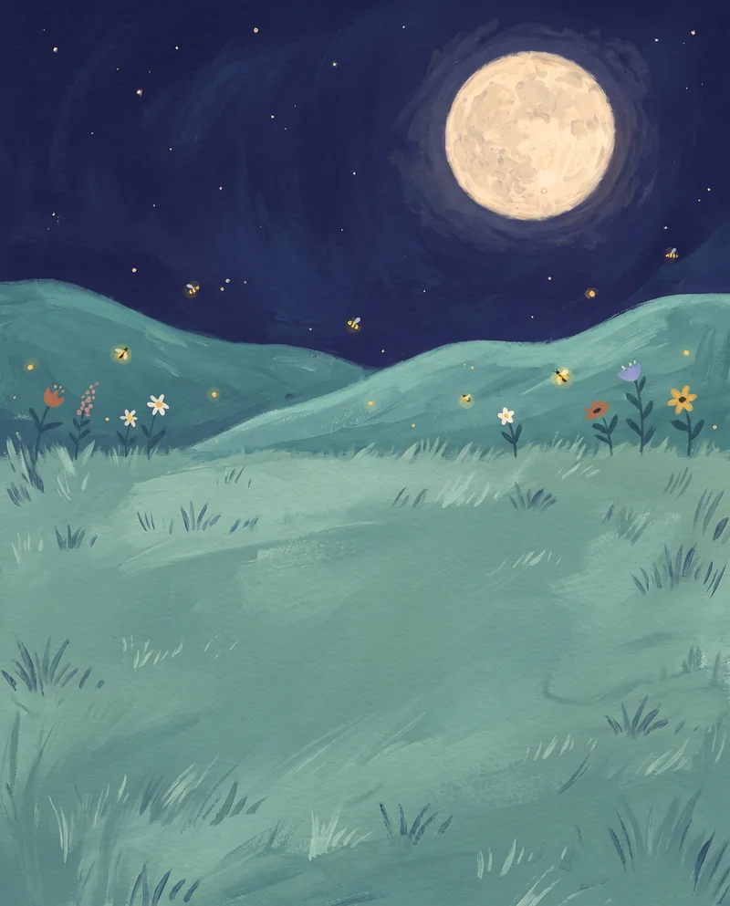
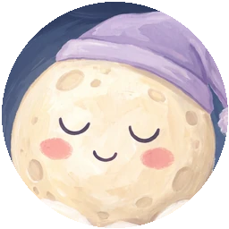

<!doctype html>
<html lang="es"><head>
<meta charset="utf-8">
<meta name="viewport" content="width=device-width,initial-scale=1,viewport-fit=cover">
<meta name="theme-color" content="#1b1e4b">
<title>Lunita · Cuentos para dormir</title>
<meta name="description" content="Cuentos para dormir donde tu peque es el protagonista y elige cómo sigue la historia.">
<link rel="icon" type="image/webp" href="arte/ui/logo.webp">
<meta property="og:type" content="website">
<meta property="og:title" content="Lunita · Cuentos para dormir">
<meta property="og:description" content="Tu peque es el protagonista y elige cómo sigue el cuento. Cada decisión lleva a un final distinto.">
<meta property="og:image" content="https://cuentoslunita.github.io/lunita/arte/ui/portada.webp">
<meta property="og:url" content="https://cuentoslunita.github.io/lunita/">
<meta property="og:locale" content="es_AR">
<meta name="claude:viewport-fit-sides" content="cover">
<style>
/* Letras (Andika, Baloo 2 y Nunito, licencia SIL OFL) guardadas en la app: no se piden a Google */
@font-face {
  font-family: 'Andika';
  font-style: normal;
  font-weight: 400;
  font-display: swap;
  src: url(arte/fonts/Andika-400-latin-ext.woff2) format('woff2');
  unicode-range: U+0100-02BA, U+02BD-02C5, U+02C7-02CC, U+02CE-02D7, U+02DD-02FF, U+0304, U+0308, U+0329, U+1D00-1DBF, U+1E00-1E9F, U+1EF2-1EFF, U+2020, U+20A0-20AB, U+20AD-20C4, U+2113, U+2C60-2C7F, U+A720-A7FF;
}
@font-face {
  font-family: 'Andika';
  font-style: normal;
  font-weight: 400;
  font-display: swap;
  src: url(arte/fonts/Andika-400-latin.woff2) format('woff2');
  unicode-range: U+0000-00FF, U+0131, U+0152-0153, U+02BB-02BC, U+02C6, U+02DA, U+02DC, U+0304, U+0308, U+0329, U+2000-206F, U+20AC, U+2122, U+2191, U+2193, U+2212, U+2215, U+FEFF, U+FFFD;
}
@font-face {
  font-family: 'Andika';
  font-style: normal;
  font-weight: 700;
  font-display: swap;
  src: url(arte/fonts/Andika-700-latin-ext.woff2) format('woff2');
  unicode-range: U+0100-02BA, U+02BD-02C5, U+02C7-02CC, U+02CE-02D7, U+02DD-02FF, U+0304, U+0308, U+0329, U+1D00-1DBF, U+1E00-1E9F, U+1EF2-1EFF, U+2020, U+20A0-20AB, U+20AD-20C4, U+2113, U+2C60-2C7F, U+A720-A7FF;
}
@font-face {
  font-family: 'Andika';
  font-style: normal;
  font-weight: 700;
  font-display: swap;
  src: url(arte/fonts/Andika-700-latin.woff2) format('woff2');
  unicode-range: U+0000-00FF, U+0131, U+0152-0153, U+02BB-02BC, U+02C6, U+02DA, U+02DC, U+0304, U+0308, U+0329, U+2000-206F, U+20AC, U+2122, U+2191, U+2193, U+2212, U+2215, U+FEFF, U+FFFD;
}
@font-face {
  font-family: 'Baloo 2';
  font-style: normal;
  font-weight: 600;
  font-display: swap;
  src: url(arte/fonts/Baloo2-600-latin-ext.woff2) format('woff2');
  unicode-range: U+0100-02BA, U+02BD-02C5, U+02C7-02CC, U+02CE-02D7, U+02DD-02FF, U+0304, U+0308, U+0329, U+1D00-1DBF, U+1E00-1E9F, U+1EF2-1EFF, U+2020, U+20A0-20AB, U+20AD-20C4, U+2113, U+2C60-2C7F, U+A720-A7FF;
}
@font-face {
  font-family: 'Baloo 2';
  font-style: normal;
  font-weight: 600;
  font-display: swap;
  src: url(arte/fonts/Baloo2-600-latin.woff2) format('woff2');
  unicode-range: U+0000-00FF, U+0131, U+0152-0153, U+02BB-02BC, U+02C6, U+02DA, U+02DC, U+0304, U+0308, U+0329, U+2000-206F, U+20AC, U+2122, U+2191, U+2193, U+2212, U+2215, U+FEFF, U+FFFD;
}
@font-face {
  font-family: 'Baloo 2';
  font-style: normal;
  font-weight: 700;
  font-display: swap;
  src: url(arte/fonts/Baloo2-700-latin-ext.woff2) format('woff2');
  unicode-range: U+0100-02BA, U+02BD-02C5, U+02C7-02CC, U+02CE-02D7, U+02DD-02FF, U+0304, U+0308, U+0329, U+1D00-1DBF, U+1E00-1E9F, U+1EF2-1EFF, U+2020, U+20A0-20AB, U+20AD-20C4, U+2113, U+2C60-2C7F, U+A720-A7FF;
}
@font-face {
  font-family: 'Baloo 2';
  font-style: normal;
  font-weight: 700;
  font-display: swap;
  src: url(arte/fonts/Baloo2-700-latin.woff2) format('woff2');
  unicode-range: U+0000-00FF, U+0131, U+0152-0153, U+02BB-02BC, U+02C6, U+02DA, U+02DC, U+0304, U+0308, U+0329, U+2000-206F, U+20AC, U+2122, U+2191, U+2193, U+2212, U+2215, U+FEFF, U+FFFD;
}
@font-face {
  font-family: 'Baloo 2';
  font-style: normal;
  font-weight: 800;
  font-display: swap;
  src: url(arte/fonts/Baloo2-800-latin-ext.woff2) format('woff2');
  unicode-range: U+0100-02BA, U+02BD-02C5, U+02C7-02CC, U+02CE-02D7, U+02DD-02FF, U+0304, U+0308, U+0329, U+1D00-1DBF, U+1E00-1E9F, U+1EF2-1EFF, U+2020, U+20A0-20AB, U+20AD-20C4, U+2113, U+2C60-2C7F, U+A720-A7FF;
}
@font-face {
  font-family: 'Baloo 2';
  font-style: normal;
  font-weight: 800;
  font-display: swap;
  src: url(arte/fonts/Baloo2-800-latin.woff2) format('woff2');
  unicode-range: U+0000-00FF, U+0131, U+0152-0153, U+02BB-02BC, U+02C6, U+02DA, U+02DC, U+0304, U+0308, U+0329, U+2000-206F, U+20AC, U+2122, U+2191, U+2193, U+2212, U+2215, U+FEFF, U+FFFD;
}
@font-face {
  font-family: 'Nunito';
  font-style: normal;
  font-weight: 600;
  font-display: swap;
  src: url(arte/fonts/Nunito-600-latin-ext.woff2) format('woff2');
  unicode-range: U+0100-02BA, U+02BD-02C5, U+02C7-02CC, U+02CE-02D7, U+02DD-02FF, U+0304, U+0308, U+0329, U+1D00-1DBF, U+1E00-1E9F, U+1EF2-1EFF, U+2020, U+20A0-20AB, U+20AD-20C4, U+2113, U+2C60-2C7F, U+A720-A7FF;
}
@font-face {
  font-family: 'Nunito';
  font-style: normal;
  font-weight: 600;
  font-display: swap;
  src: url(arte/fonts/Nunito-600-latin.woff2) format('woff2');
  unicode-range: U+0000-00FF, U+0131, U+0152-0153, U+02BB-02BC, U+02C6, U+02DA, U+02DC, U+0304, U+0308, U+0329, U+2000-206F, U+20AC, U+2122, U+2191, U+2193, U+2212, U+2215, U+FEFF, U+FFFD;
}
@font-face {
  font-family: 'Nunito';
  font-style: normal;
  font-weight: 700;
  font-display: swap;
  src: url(arte/fonts/Nunito-700-latin-ext.woff2) format('woff2');
  unicode-range: U+0100-02BA, U+02BD-02C5, U+02C7-02CC, U+02CE-02D7, U+02DD-02FF, U+0304, U+0308, U+0329, U+1D00-1DBF, U+1E00-1E9F, U+1EF2-1EFF, U+2020, U+20A0-20AB, U+20AD-20C4, U+2113, U+2C60-2C7F, U+A720-A7FF;
}
@font-face {
  font-family: 'Nunito';
  font-style: normal;
  font-weight: 700;
  font-display: swap;
  src: url(arte/fonts/Nunito-700-latin.woff2) format('woff2');
  unicode-range: U+0000-00FF, U+0131, U+0152-0153, U+02BB-02BC, U+02C6, U+02DA, U+02DC, U+0304, U+0308, U+0329, U+2000-206F, U+20AC, U+2122, U+2191, U+2193, U+2212, U+2215, U+FEFF, U+FFFD;
}
@font-face {
  font-family: 'Nunito';
  font-style: normal;
  font-weight: 800;
  font-display: swap;
  src: url(arte/fonts/Nunito-800-latin-ext.woff2) format('woff2');
  unicode-range: U+0100-02BA, U+02BD-02C5, U+02C7-02CC, U+02CE-02D7, U+02DD-02FF, U+0304, U+0308, U+0329, U+1D00-1DBF, U+1E00-1E9F, U+1EF2-1EFF, U+2020, U+20A0-20AB, U+20AD-20C4, U+2113, U+2C60-2C7F, U+A720-A7FF;
}
@font-face {
  font-family: 'Nunito';
  font-style: normal;
  font-weight: 800;
  font-display: swap;
  src: url(arte/fonts/Nunito-800-latin.woff2) format('woff2');
  unicode-range: U+0000-00FF, U+0131, U+0152-0153, U+02BB-02BC, U+02C6, U+02DA, U+02DC, U+0304, U+0308, U+0329, U+2000-206F, U+20AC, U+2122, U+2191, U+2193, U+2212, U+2215, U+FEFF, U+FFFD;
}
</style>
<style>
/* Layout: cielo de noche con caramelos pastel. Una columna: luna mascota, personaje, biblioteca, aviso; lector con escena arriba y "hoja de libro" crema abajo. Tema único oscuro a propósito (hora de dormir). */
:root{
  color-scheme: dark;
  --sky:#1b1e4b;
  --sky-2:#252a66;
  --panel:#2d3278;
  --panel-2:#363c8a;
  --line:#4b52a8;
  --moon:#fff4cf;
  --muted:#c6c9f0;
  --cream:#fff7e8;
  --cream-edge:#e6d4ae;
  --ink:#2e2552;
  --ink-soft:#655a8c;
  --sun:#ffc94a;
  --sun-deep:#d99a14;
  --sun-ink:#3b2700;
  --sun-soft:#ffc94a70;
  --mint:#7de3c3;
  --mint-deep:#3aa886;
  --pink:#ff9fc6;
  --pink-deep:#d56592;
  --lilac:#bba6ff;
  --lilac-deep:#7d66d9;
  --blue:#8fd0ff;
  --blue-deep:#4d97d1;
  --coral:#ff8a99;
  --grass:#8ee07a;
  --grass-deep:#4c9e46;
  --notif-bg:#eef0fbf2;
  --notif-ink:#1b2040;
  --notif-muted:#565d8c;
  --f-display:'Baloo 2','Trebuchet MS',system-ui,sans-serif;
  --f-story:'Andika','Trebuchet MS',system-ui,sans-serif;
  --f-ui:'Nunito',system-ui,-apple-system,'Segoe UI',sans-serif;
}
*{box-sizing:border-box}
html,body{min-height:100%}
body{
  margin:0;background:var(--sky);color:var(--moon);font-family:var(--f-ui);font-size:16px;line-height:1.5;font-weight:600;
  background-image:
    radial-gradient(1.6px 1.6px at 12% 6%, #ffffffaa 50%, transparent 52%),
    radial-gradient(1.2px 1.2px at 78% 3%, #ffffff99 50%, transparent 52%),
    radial-gradient(1.4px 1.4px at 92% 14%, #ffffff77 50%, transparent 52%),
    radial-gradient(1.2px 1.2px at 34% 11%, #ffffff88 50%, transparent 52%),
    radial-gradient(1.5px 1.5px at 58% 19%, #ffffff66 50%, transparent 52%),
    linear-gradient(180deg, var(--sky) 0%, #26236a 55%, #33276f 100%);
  background-repeat:no-repeat;
}
button,input,textarea{font:inherit;color:inherit}
button{cursor:pointer;-webkit-tap-highlight-color:transparent}
:focus-visible{outline:3px solid var(--sun);outline-offset:3px;border-radius:14px}
.wrap{max-width:1000px;margin:0 auto;padding-left:max(16px, env(safe-area-inset-left,0px));padding-right:max(16px, env(safe-area-inset-right,0px));padding-block:16px 60px}

/* botones "caramelo" */
.btn,.go{border:0;border-radius:18px;padding:12px 20px;font-family:var(--f-display);font-weight:800;font-size:1.1rem;line-height:1.1;background:var(--sun);color:var(--sun-ink);box-shadow:0 5px 0 var(--sun-deep);transition:transform .08s,box-shadow .08s}
.btn:active,.go:active{transform:translateY(4px);box-shadow:0 1px 0 var(--sun-deep)}
.btn.sec{background:var(--panel-2);color:var(--moon);box-shadow:0 5px 0 #1f2360}
.btn.sec:active{box-shadow:0 1px 0 #1f2360}

.top{display:flex;align-items:center;justify-content:space-between;gap:12px;flex-wrap:wrap}
.logo{display:flex;align-items:center;gap:8px;font-family:var(--f-display);font-weight:800;font-size:1.9rem;letter-spacing:.01em}
.logo svg{width:36px;height:36px}
.logo img{width:42px;height:42px;border-radius:50%;box-shadow:0 0 0 2px #ffffff30}
.pill{font-family:var(--f-display);font-size:.9rem;font-weight:700;color:var(--muted);background:var(--panel);border-radius:999px;padding:4px 14px}
.pill.on{color:var(--sun-ink);background:var(--sun)}

.hero{display:grid;grid-template-columns:minmax(0,1fr) minmax(0,.9fr);gap:12px;align-items:center;padding-block:10px 0}
.hero h1{font-family:var(--f-display);font-weight:800;font-size:clamp(2rem,1.3rem + 3vw,3.3rem);line-height:1.02;margin:0 0 10px;text-wrap:balance}
.hero h1 em{font-style:normal;color:var(--sun)}
.hero p{margin:0;color:var(--muted);font-size:1.08rem;max-width:34rem}
.mascot{width:100%;max-width:440px;justify-self:center;border-radius:30px;box-shadow:0 6px 0 #1f2360;aspect-ratio:4/3;object-fit:cover}
@media (max-width:640px){.hero{grid-template-columns:minmax(0,1fr)}.mascot{order:-1;max-width:170px}}

.step{display:flex;align-items:center;gap:12px;flex-wrap:wrap;margin:36px 0 14px}
.step .num{width:40px;height:40px;border-radius:50%;display:grid;place-items:center;font-family:var(--f-display);font-weight:800;font-size:1.3rem;color:var(--ink);background:var(--mint);box-shadow:0 4px 0 var(--mint-deep);transform:rotate(-6deg)}
.step .num.pink{background:var(--pink);box-shadow:0 4px 0 var(--pink-deep)}
.step .num.blue{background:var(--blue);box-shadow:0 4px 0 var(--blue-deep)}
.step .num svg{width:22px;height:22px}
.step b{font-family:var(--f-display);font-size:1.6rem;font-weight:800;line-height:1.1}

.builder{display:grid;grid-template-columns:minmax(0,1.25fr) minmax(0,1fr);gap:18px;background:var(--panel);border-radius:30px;padding:16px;box-shadow:0 6px 0 #1f2360}
@media (max-width:720px){.builder{grid-template-columns:minmax(0,1fr)}}
.preview{position:relative;overflow:hidden;background:radial-gradient(120% 90% at 50% 0%, #4b4fb0 0%, #2a2f74 70%);border-radius:24px;padding:14px 14px 30px;display:flex;flex-direction:column;align-items:center;justify-content:center;gap:2px;min-height:250px}
.preview::after{content:"";position:absolute;left:-10%;right:-10%;bottom:-36px;height:70px;background:var(--panel-2);border-radius:50%}
.preview>*{position:relative;z-index:1}
.preview svg{width:100%;max-width:290px;height:auto}
#preview{width:100%;display:flex;justify-content:center}
.builder .preview{align-self:start;position:sticky;top:12px;padding:10px 10px 18px;min-height:0}
.builder .preview::after{display:none}
@media (max-width:720px){
  .builder{display:block;padding-top:8px}
  .builder .preview{position:sticky;top:0;z-index:20;margin:0 0 12px;padding:6px 8px 8px;border-radius:0 0 22px 22px;box-shadow:0 10px 16px -4px rgba(8,10,38,.7)}
  .builder .pv{aspect-ratio:auto;height:34vh;min-height:190px;max-height:300px;max-width:none;border-radius:18px}
  .builder .preview .who{font-size:1.15rem}
  .builder .preview .with{display:none}
}
.pv{position:relative;width:100%;max-width:520px;aspect-ratio:4/5;border-radius:22px;overflow:hidden;background:#1b2147;margin:0 auto}
.pv img{position:absolute;display:block;width:auto;pointer-events:none;user-select:none;transform:translateX(-50%)}
.pv img.pv-bg{inset:0;width:100%;height:100%;object-fit:cover;transform:none}
.pv .som{position:absolute;border-radius:50%;transform:translate(-50%,-50%);background:radial-gradient(closest-side,rgba(10,26,30,.6),rgba(10,26,30,0))}
.preview .who{font-family:var(--f-display);font-size:1.6rem;font-weight:800;text-align:center;overflow-wrap:anywhere;line-height:1.1}
.preview .with{color:var(--muted);font-size:.95rem;text-align:center}
.controls{display:grid;gap:14px;min-width:0}
.cg{display:grid;gap:7px}
.lab{font-family:var(--f-display);font-size:1rem;font-weight:700;color:var(--muted)}
.name-in{width:100%;background:var(--cream);color:var(--ink);border:0;border-radius:18px;padding:10px 16px;font-family:var(--f-display);font-size:1.5rem;font-weight:800;box-shadow:inset 0 -4px 0 var(--cream-edge)}
.name-in::placeholder{color:#a99fc4}
.name-in:focus{outline:3px solid var(--sun);outline-offset:2px}
.row{display:flex;flex-wrap:wrap;gap:8px;align-items:center}
.row.sub{padding:10px 12px;background:var(--sky-2);border-radius:18px}
.sep{width:2px;height:28px;background:var(--line);border-radius:2px}
.sw{width:42px;height:42px;border-radius:50%;border:4px solid var(--panel);box-shadow:0 0 0 2px #ffffff30;padding:0;transition:transform .12s}
.sw[aria-pressed="true"]{box-shadow:0 0 0 3px var(--sun);transform:scale(1.1)}
.chip{padding:8px 16px;border-radius:999px;background:var(--sky-2);border:0;font-family:var(--f-display);font-weight:700;font-size:1.02rem;box-shadow:0 4px 0 #181b4e;transition:transform .08s}
.chip:active{transform:translateY(3px);box-shadow:0 1px 0 #181b4e}
.chip[aria-pressed="true"]{background:var(--sun);color:var(--sun-ink);box-shadow:0 4px 0 var(--sun-deep)}
.private{margin:0;color:var(--muted);font-size:.86rem;font-weight:600}

.lib{display:grid;grid-template-columns:repeat(auto-fill,minmax(210px,1fr));gap:16px}
.card{--c:var(--lilac);--cd:var(--lilac-deep);background:var(--panel);border:3px solid var(--c);border-radius:26px;padding:10px 10px 14px;display:flex;flex-direction:column;gap:8px;text-align:left;position:relative;box-shadow:0 6px 0 var(--cd);transition:transform .15s}
button.card:hover{transform:translateY(-3px) rotate(-.6deg)}
.card.feature{grid-column:1/-1;display:grid;grid-template-columns:minmax(0,1.1fr) minmax(0,1fr);gap:16px;align-items:center;padding:12px}
@media (max-width:640px){.card.feature{grid-template-columns:minmax(0,1fr)}}
.card.feature .info{display:flex;flex-direction:column;gap:8px;min-width:0}
.card svg.cover{width:100%;height:auto;border-radius:18px;display:block}
.card img.cover{width:100%;height:auto;aspect-ratio:16/9;object-fit:cover;border-radius:18px;display:block}
.card h3{margin:2px 4px 0;font-family:var(--f-display);font-size:1.35rem;font-weight:800;line-height:1.1}
.card.feature h3{font-size:1.8rem}
.card .src{margin:0 4px;color:var(--muted);font-size:.92rem}
.card .meta{margin:auto 4px 0;display:flex;gap:6px;flex-wrap:wrap;align-items:center;font-size:.82rem;font-weight:800;padding-top:4px}
.tag{border-radius:999px;padding:3px 10px;background:var(--sky-2);color:var(--muted)}
.sticker{position:absolute;top:-10px;left:16px;font-family:var(--f-display);font-weight:800;font-size:.95rem;padding:2px 12px;border-radius:999px;transform:rotate(-5deg);color:var(--ink);background:var(--c);box-shadow:0 3px 0 var(--cd);z-index:2}
.badge{position:absolute;top:20px;right:20px;width:38px;height:38px;border-radius:50%;background:#0b1029cc;display:grid;place-items:center}
.badge svg{width:18px;height:18px}
.go{align-self:flex-start;margin:6px 4px 0}
.soon-h{margin:30px 0 12px;font-family:var(--f-display);font-size:1.15rem;font-weight:800;color:var(--muted)}
.soon{display:grid;grid-template-columns:repeat(auto-fill,minmax(150px,1fr));gap:12px}
.soon .card{border:3px dashed var(--line);box-shadow:none;padding:8px 8px 12px;gap:6px}
.soon .card svg.cover{opacity:.6}
.soon .card h3{font-size:1.05rem}
.soon .card .src{font-size:.8rem}

.remind{display:grid;grid-template-columns:minmax(0,1.1fr) minmax(0,1fr);gap:20px;background:var(--panel);border-radius:30px;padding:18px;align-items:center;box-shadow:0 6px 0 #1f2360}
@media (max-width:720px){.remind{grid-template-columns:minmax(0,1fr)}}
.remind .copy{display:grid;gap:12px;min-width:0}
.remind .copy p{margin:0;color:var(--muted)}
.remind .copy h3{margin:0;font-family:var(--f-display);font-size:1.5rem;font-weight:800;line-height:1.1;text-wrap:balance}
.ctrl{display:flex;flex-wrap:wrap;gap:10px;align-items:center}
.time-in{background:var(--cream);color:var(--ink);border:0;border-radius:14px;padding:7px 12px;font-family:var(--f-display);font-weight:800;font-size:1.15rem;font-variant-numeric:tabular-nums;box-shadow:inset 0 -3px 0 var(--cream-edge)}
.lock-screen{background:radial-gradient(120% 80% at 50% 0%,#4a4f9e 0%,#24296a 60%,#171b4a 100%);border-radius:26px;padding:18px 14px 20px;display:grid;justify-items:center;gap:2px}
.lock-screen .clock{font-family:var(--f-display);font-size:3.2rem;font-weight:800;line-height:1;font-variant-numeric:tabular-nums}
.lock-screen .date{color:var(--muted);font-size:.9rem;margin-bottom:14px}
.notif{display:flex;gap:12px;align-items:flex-start;background:var(--notif-bg);color:var(--notif-ink);border:0;border-radius:20px;padding:12px 14px;box-shadow:0 10px 30px #00000066;width:100%;max-width:360px;text-align:left;font:inherit}
.nicon{width:38px;height:38px;border-radius:10px;background:var(--sky);display:grid;place-items:center;flex:none}
.nicon svg{width:26px;height:26px}
.ntext{display:grid;gap:1px;min-width:0;flex:1}
.nhead{display:flex;justify-content:space-between;gap:8px;font-size:.76rem;color:var(--notif-muted);font-weight:800;text-transform:uppercase;letter-spacing:.06em}
.ntitle{font-size:.98rem;font-weight:800}
.nbody{font-size:.9rem;color:var(--notif-muted)}
.toast{position:fixed;top:calc(env(safe-area-inset-top,0px) + 12px);left:0;right:0;display:flex;justify-content:center;padding-left:max(16px, env(safe-area-inset-left,0px));padding-right:max(16px, env(safe-area-inset-right,0px));z-index:30;pointer-events:none}
.toast .notif{pointer-events:auto;cursor:pointer;animation:drop .45s ease-out}
@keyframes drop{from{transform:translateY(-24px);opacity:0}to{transform:none;opacity:1}}

.how{margin-top:36px;display:grid;grid-template-columns:repeat(auto-fit,minmax(200px,1fr));gap:14px}
.how div{background:var(--sky-2);border-radius:22px;padding:14px 16px}
.how .btn{margin-top:12px}
.how b{display:block;font-family:var(--f-display);font-size:1.25rem;font-weight:800;color:var(--sun)}
.how p{margin:2px 0 0;color:var(--muted);font-size:.94rem}
.note{margin-top:24px;color:var(--muted);font-size:.84rem;max-width:44rem}

/* lector */
.rbar{display:flex;align-items:center;gap:8px;margin-bottom:12px}
.round{width:46px;height:46px;flex:none;border:0;border-radius:50%;background:var(--panel-2);display:grid;place-items:center;box-shadow:0 4px 0 #1f2360;font-family:var(--f-display);font-weight:800;font-size:1.05rem}
.round:active{transform:translateY(3px);box-shadow:0 1px 0 #1f2360}
.round svg{width:22px;height:22px}
.round.on{background:var(--sun);color:var(--sun-ink);box-shadow:0 4px 0 var(--sun-deep)}
.rmid{flex:1;min-width:0;display:grid;justify-items:center;gap:2px}
.rtitle{font-family:var(--f-display);font-weight:800;font-size:1.15rem;line-height:1.1;text-align:center;overflow:hidden;text-overflow:ellipsis;white-space:nowrap;max-width:100%}
.stars{display:flex;gap:3px}
.stars svg{width:16px;height:16px}
.scene{margin:0;border-radius:28px;overflow:hidden;background:var(--sky-2);max-width:100%;border:4px solid var(--panel-2)}
.scene svg{display:block;width:100%;height:auto}
.arte{position:relative;width:100%;aspect-ratio:2624/1632;overflow:hidden;background:#1b2147}
.arte img{position:absolute;display:block;height:auto;pointer-events:none;user-select:none}
.arte img.bgi{inset:0;width:100%;height:100%;object-fit:cover}
.arte .som{position:absolute;border-radius:50%;transform:translate(-50%,-50%);background:radial-gradient(closest-side,rgba(10,26,30,.6),rgba(10,26,30,0))}
.arte-nota{margin:8px 6px 0;font:600 .82rem/1.35 var(--f-ui);color:var(--muted);text-align:center}
.page{max-width:42rem;margin:18px auto 0;background:var(--cream);color:var(--ink);border-radius:28px;padding:22px clamp(16px,4vw,30px) 24px;box-shadow:0 8px 0 var(--cream-edge)}
.story p{font-family:var(--f-story);font-size:clamp(1.18rem,1.05rem + .5vw,1.36rem);line-height:1.7;margin:0 0 .85em;border-radius:8px;transition:background-color .3s,box-shadow .3s}
.big .story p{font-size:clamp(1.4rem,1.25rem + .7vw,1.65rem)}
.story p.reading{background:var(--sun-soft);box-shadow:0 0 0 8px var(--sun-soft)}
.story .end-title{font-family:var(--f-display);font-size:1.9rem;font-weight:800;color:var(--pink-deep);margin:0 0 .4em;line-height:1.1}
.story .closing{font-style:italic;color:var(--ink-soft)}
.choices{display:grid;gap:12px;margin-top:18px}
.choices .q{font-family:var(--f-display);font-size:1.3rem;font-weight:800;color:var(--lilac-deep);line-height:1.15}
.choices.reading .q{color:var(--sun-deep)}
.choice{--c:var(--mint);--cd:var(--mint-deep);display:flex;gap:12px;align-items:center;text-align:left;background:var(--c);color:var(--ink);border:0;border-radius:22px;padding:14px 16px;font-family:var(--f-display);font-weight:700;font-size:1.15rem;line-height:1.2;box-shadow:0 5px 0 var(--cd);transition:transform .08s}
.choice:nth-of-type(2){--c:var(--pink);--cd:var(--pink-deep)}
.choice:nth-of-type(3){--c:var(--blue);--cd:var(--blue-deep)}
.choice:hover{transform:translateY(-2px)}
.choice:active{transform:translateY(4px);box-shadow:0 1px 0 var(--cd)}
.choice .dot{flex:none;width:34px;height:34px;border-radius:50%;background:#ffffffa0;display:grid;place-items:center;font-weight:800;font-size:1.1rem}
.medals{display:flex;gap:10px;flex-wrap:wrap;margin:8px 0 4px}
.medal{display:flex;gap:8px;align-items:center;background:#fff;border-radius:16px;padding:6px 12px 6px 6px;font-family:var(--f-display);font-weight:800;font-size:1rem;box-shadow:0 3px 0 var(--cream-edge)}
.medal i{width:30px;height:30px;border-radius:50%;display:grid;place-items:center;font-style:normal}
.medal i svg{width:18px;height:18px}
.medal span{color:var(--sun-deep);letter-spacing:1px}
.endnote{color:var(--ink-soft);font-size:.95rem;margin:8px 0 0}
.aviso{margin:0 0 14px;padding:10px 14px;border-left:5px solid var(--lilac-deep);background:#efe9ff;border-radius:0 14px 14px 0;color:var(--ink);font-size:.95rem;font-weight:700}
.linkbtn{background:none;border:0;padding:4px 0;color:var(--muted);text-decoration:underline;text-underline-offset:3px;font-weight:700;font-size:.9rem}
.priv h3{margin:6px 0 0;font-family:var(--f-display);font-size:1.05rem;color:var(--ink)}
.priv p{margin:0;font-size:.95rem}
a.btn{display:inline-block;text-decoration:none}
.modal .linkbtn{color:var(--ink-soft)}
.medalsbox{margin-top:16px}
.medalsbox summary{cursor:pointer;display:inline-block;color:var(--ink-soft);font-family:var(--f-display);font-weight:700;padding:6px 2px;list-style:none;text-decoration:underline;text-underline-offset:3px}
.medalsbox summary::-webkit-details-marker{display:none}
.medalsbox[open] summary{margin-bottom:6px}
.actions{display:flex;flex-wrap:wrap;gap:12px;margin-top:18px}
.page .btn.sec{background:#fff;color:var(--ink);box-shadow:0 5px 0 var(--cream-edge)}
.upsell{margin-top:22px;border:3px dashed var(--cream-edge);border-radius:22px;padding:14px 16px;display:flex;gap:12px;align-items:center;flex-wrap:wrap}
.upsell p{margin:0;flex:1;min-width:12rem;color:var(--ink-soft)}
.upsell b{color:var(--ink)}

.overlay{position:fixed;inset:0;background:#0b0d2acc;display:grid;place-items:center;padding:20px max(16px, env(safe-area-inset-right,0px)) 20px max(16px, env(safe-area-inset-left,0px));z-index:20}
.modal{background:var(--cream);color:var(--ink);border-radius:30px;padding:24px;max-width:430px;width:100%;display:grid;gap:12px;max-height:90vh;overflow:auto;box-shadow:0 8px 0 var(--cream-edge)}
.modal h2{margin:0;font-family:var(--f-display);font-size:1.7rem;font-weight:800;line-height:1.1;text-wrap:balance}
.modal p{margin:0;color:var(--ink-soft)}
.modal .eyebrow{font-family:var(--f-display);font-size:1rem;font-weight:800;color:var(--lilac-deep)}
.modal input{width:100%;background:#fff;color:var(--ink);border:3px solid var(--cream-edge);border-radius:16px;padding:10px 14px;font-family:var(--f-display);font-size:1.3rem;font-weight:800}
.modal .btn.sec{background:#fff;color:var(--ink);box-shadow:0 5px 0 var(--cream-edge)}
.gate-q{font-family:var(--f-display);font-size:1.25rem;font-weight:800;color:var(--ink)}
.err{color:#c23a55;font-weight:800;font-size:.95rem}
.price{display:flex;align-items:baseline;gap:6px;font-family:var(--f-display)}
.price b{font-size:2.6rem;font-weight:800;color:var(--pink-deep);font-variant-numeric:tabular-nums}
.perks{margin:0;padding:0;list-style:none;display:grid;gap:6px}
.perks li{display:flex;gap:8px;align-items:flex-start}
.perks li::before{content:"";flex:none;width:10px;height:10px;margin-top:7px;border-radius:50%;background:var(--mint-deep)}
.mrow{display:flex;gap:12px;flex-wrap:wrap;margin-top:4px}
.fine{font-size:.84rem}

.ff{animation:blink 2.6s ease-in-out infinite}
@keyframes blink{0%,100%{opacity:.35}50%{opacity:1}}
.float{animation:bob 5s ease-in-out infinite}
@keyframes bob{0%,100%{transform:translateY(0)}50%{transform:translateY(-3px)}}
.sway{animation:sway 6s ease-in-out infinite;transform-origin:110px 120px}
@keyframes sway{0%,100%{transform:rotate(-2deg)}50%{transform:rotate(2deg)}}
@media (prefers-reduced-motion:reduce){.ff,.float,.sway,.toast .notif{animation:none}button.card:hover,.choice:hover{transform:none}}
</style>

<div class="wrap" id="app"></div>
<div id="modal"></div>
<div id="toast" class="toast" aria-live="polite"></div>

<script>
/* ===== Configuración ===== */
const PRICE='$2.500';
const CONTACT_EMAIL='cuentoslunita@gmail.com';
/* Cobro automático (Mercado Pago + función de Cloudflare). Detalle y pruebas en cobro/README.md. */
const COBRO={API:'https://lunita-cobro.cuentoslunita.workers.dev',PLAN_URL:'https://mpago.la/1UPZcdz',
  CLAVE:{"kty":"EC","crv":"P-256","x":"yqwbCT_I4BWDkWlOf3O1YLQQ_c3_8aOjI_zsWhIm90w","y":"N54tDbyds4Xwb_IGoxrcqOxUc2W7TGiL05wQrev6q6Q"}};
const NAME_FALLBACK='Peque';

/* ===== Opciones del personaje ===== */
const SKIN=['#f6d3b3','#e9b48c','#c98b5e','#9a6340','#6b4228'];
const HAIRC=['#2b1d14','#6b3e1f','#c9862f','#e8c46a','#b5442e'];
const OUTF=['#55b89e','#e07a8f','#6c8be0','#f2b84b','#9b7bd1'];
const HAIRS=[['corto','Corto'],['largo','Largo'],['rulos','Rulos'],['colitas','Colitas']];
const GENDERS=[['nena','Nena'],['nene','Nene'],['neutro','Prefiero no decir']];
const HEADS=[['none','Nada'],['corona','Corona'],['gorro','Gorrito'],['mono','Moño']];
const GLASSC=['#2a2140','#ef6fa0','#4fb3e8','#d3504d','#e0a92c'];
const GLASSS=[['redondos','Redondos'],['cuadrados','Cuadrados']];
const COMPS={
  tucan:{short:'Tuqui',full:'Tuqui, el tucán',label:'Tucán',move:'volando'},
  coati:{short:'Coco',full:'Coco, el coatí',label:'Coatí',move:'corriendo'},
  yagua:{short:'Yagui',full:'Yagui, el cachorro de yaguareté',label:'Yaguareté',move:'corriendo'},
  perro:{short:'Toto',full:'Toto, el perrito',label:'Perrito',move:'corriendo'},
  gato:{short:'Michi',full:'Michi, el gatito',label:'Gatito',move:'corriendo'},
  conejo:{short:'Pompón',full:'Pompón, el conejito',label:'Conejito',move:'saltando'}
};
const TRAITS={valentia:'Valentía',bondad:'Bondad',ingenio:'Ingenio'};
const NUMERIC=['skin','hairColor','outfit','glassesColor'];
const THEMES={luna:['var(--lilac)','var(--lilac-deep)'],tortuga:['var(--mint)','var(--mint-deep)'],ceibo:['var(--pink)','var(--pink-deep)'],pichon:['var(--blue)','var(--blue-deep)'],dibujos:['var(--sun)','var(--sun-deep)'],futbol:['var(--grass)','var(--grass-deep)'],mundo:['var(--coral)','#d6606f']};

const SYNTH=('speechSynthesis' in window)&&('SpeechSynthesisUtterance' in window);
const ICON={
  home:`<svg viewBox="0 0 24 24" aria-hidden="true"><path d="M4 11 L12 4 L20 11 V20 H14.5 V14.5 H9.5 V20 H4Z" fill="currentColor"/></svg>`,
  spk:`<svg viewBox="0 0 24 24" aria-hidden="true"><path d="M3 9h4l5-4v14l-5-4H3z" fill="currentColor"/><path d="M15.5 8.5q3 3.5 0 7M18 6q5 6 0 12" stroke="currentColor" stroke-width="2" fill="none" stroke-linecap="round"/></svg>`,
  stop:`<svg viewBox="0 0 24 24" aria-hidden="true"><rect x="6" y="6" width="12" height="12" rx="2.5" fill="currentColor"/></svg>`,
  lock:`<svg viewBox="0 0 16 16" aria-hidden="true"><rect x="3" y="7" width="10" height="8" rx="2" fill="#fff4cf"/><path d="M5 7 V5 a3 3 0 0 1 6 0 V7" stroke="#fff4cf" stroke-width="1.8" fill="none"/></svg>`,
  moon:`<svg viewBox="0 0 34 34" aria-hidden="true"><circle cx="17" cy="17" r="12" fill="#ffc94a"/><circle cx="22" cy="12" r="10" fill="#1b1e4b"/></svg>`,
  bell:`<svg viewBox="0 0 24 24" aria-hidden="true"><path d="M6 17 V11 a6 6 0 0 1 12 0 V17 L20 19 H4Z" fill="#2e2552"/><circle cx="12" cy="21" r="2" fill="#2e2552"/></svg>`,
  star:c=>`<svg viewBox="0 0 24 24" aria-hidden="true"><path d="M12 2.5 L14.8 8.6 L21.5 9.3 L16.5 13.8 L17.9 20.4 L12 17 L6.1 20.4 L7.5 13.8 L2.5 9.3 L9.2 8.6Z" fill="${c}"/></svg>`,
  heart:`<svg viewBox="0 0 24 24" aria-hidden="true"><path d="M12 20 C4 14 2 10 4.5 6.5 C7 3.5 10.5 5 12 7.5 C13.5 5 17 3.5 19.5 6.5 C22 10 20 14 12 20Z" fill="#2e2552"/></svg>`,
  bulb:`<svg viewBox="0 0 24 24" aria-hidden="true"><path d="M12 3 a6 6 0 0 1 3.5 10.9 V16 H8.5 V13.9 A6 6 0 0 1 12 3Z" fill="#2e2552"/><rect x="9" y="17.5" width="6" height="3" rx="1.2" fill="#2e2552"/></svg>`,
  bolt:`<svg viewBox="0 0 24 24" aria-hidden="true"><path d="M13 2 L5 14 H11 L10 22 L19 9 H13Z" fill="#2e2552"/></svg>`
};
const MEDAL_ICON={valentia:['bolt','var(--sun)'],bondad:['heart','var(--pink)'],ingenio:['bulb','var(--mint)']};

/* ===== Estado ===== */
const S={
  screen:'home',
  cfg:{name:'Martina',gender:'nena',skin:1,hair:'largo',hairColor:0,outfit:4,glasses:true,glassesColor:1,glassesShape:'redondos',head:'none',freckles:false,comp:'perro'},
  story:'luna',node:null,path:[],traits:{valentia:0,bondad:0,ingenio:0},ending:null,
  endings:{luna:[],tortuga:[],ceibo:[],pichon:[],dibujos:[],futbol:[],mundo:[]},subscribed:false,big:false,audio:false,
  reminder:{on:true,time:'20:30'},lastNotified:'',
  modal:null,gatePassed:false,pending:null
};
function load(){
  try{
    const d=JSON.parse(localStorage.getItem('lunita')||'null');
    if(d){
      if(d.cfg) Object.assign(S.cfg,d.cfg);
      if(Array.isArray(d.endings)) S.endings.luna=d.endings;
      else if(d.endings) Object.assign(S.endings,d.endings);
      S.subscribed=false;   // el acceso se restaura solo desde un permiso firmado (restaurarPermiso), nunca desde lo guardado acá
      S.big=!!d.big;
      if(d.reminder) S.reminder=Object.assign({on:true,time:'20:30'},d.reminder);
      S.lastNotified=d.lastNotified||'';
    }
  }catch(e){}
  const c=S.cfg;
  if(c.acc!==undefined){c.glasses=c.acc==='anteojos';c.head=(c.acc==='corona'||c.acc==='gorro')?c.acc:'none';delete c.acc}
  if(!COMPS[c.comp]) c.comp='tucan';
}
function save(){
  try{localStorage.setItem('lunita',JSON.stringify({cfg:S.cfg,endings:S.endings,subscribed:S.subscribed,big:S.big,reminder:S.reminder,lastNotified:S.lastNotified}))}catch(e){}
}
const esc=s=>String(s).replace(/[&<>"']/g,c=>({'&':'&amp;','<':'&lt;','>':'&gt;','"':'&quot;',"'":'&#39;'}[c]));
const rawName=()=>(S.cfg.name||'').trim()||NAME_FALLBACK;
const N=()=>esc(rawName());
const C=()=>COMPS[S.cfg.comp].short;
const CF=()=>COMPS[S.cfg.comp].full;
const G=(f,m,n)=>S.cfg.gender==='nene'?m:S.cfg.gender==='nena'?f:n;

/* ===== Dibujo: personajes ===== */
function avatar(c,full){
  const s=SKIN[c.skin],h=HAIRC[c.hairColor],o=OUTF[c.outfit];
  let back='',top='';
  if(c.hair==='largo'){
    back=`<path d="M27 60 Q22 118 40 124 L80 124 Q98 118 93 60 Z" fill="${h}"/>`;
    top=`<path d="M27 64 Q24 24 60 24 Q96 24 93 64 Q86 40 62 40 Q50 48 36 44 Q30 52 27 64Z" fill="${h}"/>`;
  }else if(c.hair==='corto'){
    top=`<path d="M28 60 Q28 24 60 24 Q92 24 92 60 Q86 44 72 41 Q62 49 46 43 Q34 48 28 60Z" fill="${h}"/>`;
  }else if(c.hair==='rulos'){
    top=[[32,52,10],[35,38,11],[47,29,12],[62,26,12],[76,30,12],[87,40,11],[89,53,9],[44,43,9],[70,40,9],[58,38,8]]
      .map(([x,y,r])=>`<circle cx="${x}" cy="${y}" r="${r}" fill="${h}"/>`).join('');
  }else{
    back=`<circle cx="21" cy="58" r="13" fill="${h}"/><circle cx="99" cy="58" r="13" fill="${h}"/>`;
    top=`<path d="M28 60 Q28 24 60 24 Q92 24 92 60 Q84 42 60 40 Q38 42 28 60Z" fill="${h}"/><circle cx="31" cy="55" r="4" fill="#ef8ea3"/><circle cx="89" cy="55" r="4" fill="#ef8ea3"/>`;
  }
  const body=full?`<rect x="38" y="138" width="19" height="46" rx="8" fill="${o}"/><rect x="63" y="138" width="19" height="46" rx="8" fill="${o}"/>
    <rect x="38" y="138" width="19" height="46" rx="8" fill="#000" opacity=".16"/><rect x="63" y="138" width="19" height="46" rx="8" fill="#000" opacity=".16"/>
    <ellipse cx="46" cy="188" rx="14" ry="7" fill="#ffd1e0"/><ellipse cx="74" cy="188" rx="14" ry="7" fill="#ffd1e0"/><circle cx="36" cy="185" r="3.5" fill="#fff"/><circle cx="84" cy="185" r="3.5" fill="#fff"/>
    <rect x="18" y="108" width="15" height="38" rx="7.5" fill="${o}" transform="rotate(12 25 108)"/><rect x="87" y="108" width="15" height="38" rx="7.5" fill="${o}" transform="rotate(-12 95 108)"/>
    <path d="M32 148 Q30 108 60 103 Q90 108 88 148 Z" fill="${o}"/>
    <circle cx="46" cy="124" r="2.4" fill="#fff" opacity=".55"/><circle cx="74" cy="120" r="2.4" fill="#fff" opacity=".55"/><circle cx="64" cy="138" r="2.4" fill="#fff" opacity=".55"/>
    <path d="M48 104 L60 116 L72 104" fill="none" stroke="#fff" stroke-opacity=".6" stroke-width="3" stroke-linejoin="round"/>
    <circle cx="18" cy="146" r="6.5" fill="${s}"/><circle cx="102" cy="146" r="6.5" fill="${s}"/>`
  :`<path d="M26 150 Q26 106 60 103 Q94 106 94 150 Z" fill="${o}"/>
    <circle cx="44" cy="128" r="2.4" fill="#fff" opacity=".55"/><circle cx="78" cy="122" r="2.4" fill="#fff" opacity=".55"/><circle cx="66" cy="140" r="2.4" fill="#fff" opacity=".55"/><circle cx="38" cy="144" r="2" fill="#fff" opacity=".45"/>
    <path d="M48 104 L60 116 L72 104" fill="none" stroke="#fff" stroke-opacity=".6" stroke-width="3" stroke-linejoin="round"/>`;
  const head=`<rect x="52" y="86" width="16" height="20" rx="6" fill="${s}"/>
    <circle cx="29" cy="66" r="6" fill="${s}"/><circle cx="91" cy="66" r="6" fill="${s}"/>
    <circle cx="60" cy="62" r="31" fill="${s}"/>`;
  const face=`<circle cx="49" cy="65" r="3.8" fill="#2a2140"/><circle cx="71" cy="65" r="3.8" fill="#2a2140"/>
    <circle cx="50.3" cy="63.6" r="1.2" fill="#fff"/><circle cx="72.3" cy="63.6" r="1.2" fill="#fff"/>
    <ellipse cx="42" cy="74" rx="5" ry="3" fill="#ef8ea3" opacity=".55"/><ellipse cx="78" cy="74" rx="5" ry="3" fill="#ef8ea3" opacity=".55"/>
    <path d="M53 76 Q60 83 67 76" fill="none" stroke="#2a2140" stroke-width="2.6" stroke-linecap="round"/>`;
  let acc='';
  if(c.freckles) acc+=[[38,71],[43,73.5],[37,76],[82,71],[77,73.5],[83,76]].map(([x,y])=>`<circle cx="${x}" cy="${y}" r="1.25" fill="#9a5a34" opacity=".75"/>`).join('');
  if(c.head==='gorro') acc+=`<path d="M27 54 Q28 16 60 16 Q92 16 93 54 Z" fill="${o}"/><path d="M27 54 Q28 16 60 16 Q92 16 93 54 Z" fill="#000" opacity=".12"/><rect x="25" y="47" width="70" height="11" rx="5.5" fill="#fff" opacity=".9"/><circle cx="60" cy="13" r="7" fill="#fff"/>`;
  if(c.head==='corona') acc+=`<path d="M40 34 L44 14 L52 26 L60 8 L68 26 L76 14 L80 34 Z" fill="#ffb547" stroke="#c97f1b" stroke-width="2" stroke-linejoin="round"/><circle cx="60" cy="27" r="3" fill="#ef8ea3"/>`;
  if(c.head==='mono') acc+=`<g transform="translate(80 31) rotate(18)"><path d="M0 0 L-15 -10 L-15 10 Z" fill="#ef6fa0" stroke="#c94d82" stroke-width="1.5" stroke-linejoin="round"/><path d="M0 0 L15 -10 L15 10 Z" fill="#ef6fa0" stroke="#c94d82" stroke-width="1.5" stroke-linejoin="round"/><circle r="4.5" fill="#d94f86"/></g>`;
  if(c.glasses){
    const g=GLASSC[c.glassesColor]||GLASSC[0];
    acc+=c.glassesShape==='cuadrados'
      ?`<g stroke="${g}" stroke-width="2.8" stroke-linejoin="round"><rect x="39.5" y="57.5" width="19" height="15" rx="3.5" fill="#fff" fill-opacity=".14"/><rect x="61.5" y="57.5" width="19" height="15" rx="3.5" fill="#fff" fill-opacity=".14"/><path d="M58.5 64 h3" fill="none"/></g>`
      :`<g stroke="${g}" stroke-width="2.8"><circle cx="49" cy="65" r="8.5" fill="#fff" fill-opacity=".14"/><circle cx="71" cy="65" r="8.5" fill="#fff" fill-opacity=".14"/><path d="M57.5 65 h5" fill="none"/></g>`;
  }
  return back+body+head+top+face+acc;
}
function companion(t){
  /* Mascotas: caja de 80×80 con las patas abajo, como los compañeros de la selva */
  if(t==='perro') return `<path d="M17 50 Q4 42 10 30" stroke="#c98d4f" stroke-width="6" fill="none" stroke-linecap="round"/>
    <rect x="22" y="58" width="8" height="18" rx="4" fill="#c98d4f"/><rect x="44" y="58" width="8" height="18" rx="4" fill="#c98d4f"/>
    <ellipse cx="37" cy="58" rx="21" ry="13" fill="#d9a066"/><ellipse cx="29" cy="56" rx="6" ry="4" fill="#b87c45" opacity=".6"/>
    <path d="M46 55 Q58 60 70 55" stroke="#e23b4c" stroke-width="4" fill="none" stroke-linecap="round"/><circle cx="58" cy="60" r="2.6" fill="#ffc94a"/>
    <circle cx="58" cy="38" r="15" fill="#d9a066"/>
    <ellipse cx="46" cy="39" rx="6" ry="11" fill="#8a5a3c" transform="rotate(20 46 39)"/><ellipse cx="70" cy="39" rx="6" ry="11" fill="#8a5a3c" transform="rotate(-20 70 39)"/>
    <ellipse cx="58" cy="46" rx="8.5" ry="6.5" fill="#f6e1c3"/><ellipse cx="58" cy="42.5" rx="3.2" ry="2.4" fill="#3a2418"/>
    <path d="M56 49.5 q2 4 4 0z" fill="#ef8ea3"/>
    <circle cx="52.5" cy="35" r="2.3" fill="#1d1d2c"/><circle cx="63.5" cy="35" r="2.3" fill="#1d1d2c"/><circle cx="53.3" cy="34.2" r=".8" fill="#fff"/><circle cx="64.3" cy="34.2" r=".8" fill="#fff"/>`;
  if(t==='gato') return `<path d="M20 70 Q4 62 9 46 Q12 38 18 43" stroke="#8d96a8" stroke-width="6" fill="none" stroke-linecap="round"/>
    <path d="M22 78 Q18 46 40 44 Q62 46 58 78Z" fill="#9aa3b5"/><ellipse cx="40" cy="64" rx="9" ry="10" fill="#f2f2f6"/>
    <rect x="28" y="72" width="9" height="8" rx="4" fill="#f2f2f6"/><rect x="43" y="72" width="9" height="8" rx="4" fill="#f2f2f6"/>
    <path d="M27 27 L29 10 L38 19Z M53 27 L51 10 L42 19Z" fill="#9aa3b5"/><path d="M29.5 24 L30.5 14 L35 19Z M50.5 24 L49.5 14 L45 19Z" fill="#f2b8c0"/>
    <circle cx="40" cy="31" r="14" fill="#9aa3b5"/><path d="M34 19 l2 5 M40 18 v5 M46 19 l-2 5" stroke="#7b8394" stroke-width="2" stroke-linecap="round"/>
    <ellipse cx="40" cy="37" rx="6" ry="4.5" fill="#f2f2f6"/>
    <circle cx="34.5" cy="30" r="2.8" fill="#2f6b3a"/><circle cx="45.5" cy="30" r="2.8" fill="#2f6b3a"/><circle cx="35.2" cy="29.2" r=".9" fill="#fff"/><circle cx="46.2" cy="29.2" r=".9" fill="#fff"/>
    <path d="M38.5 35 h3 l-1.5 1.6z" fill="#e88a9a"/><path d="M28 36 h-8 M28 38.5 l-7 2 M52 36 h8 M52 38.5 l7 2" stroke="#5b6274" stroke-width="1"/>
    <ellipse cx="32" cy="36.5" rx="2.4" ry="1.4" fill="#ef8ea3" opacity=".6"/><ellipse cx="48" cy="36.5" rx="2.4" ry="1.4" fill="#ef8ea3" opacity=".6"/>`;
  if(t==='conejo') return `<circle cx="18" cy="60" r="7" fill="#fff"/><ellipse cx="36" cy="63" rx="18" ry="14" fill="#f4f1f8"/>
    <ellipse cx="28" cy="75" rx="9" ry="4.5" fill="#e6e1ee"/><ellipse cx="46" cy="76" rx="6" ry="4" fill="#e6e1ee"/>
    <ellipse cx="48" cy="22" rx="5" ry="16" fill="#f4f1f8" transform="rotate(-8 48 22)"/><ellipse cx="48" cy="22" rx="2.3" ry="11" fill="#f2b8c0" transform="rotate(-8 48 22)"/>
    <ellipse cx="60" cy="22" rx="5" ry="16" fill="#f4f1f8" transform="rotate(10 60 22)"/><ellipse cx="60" cy="22" rx="2.3" ry="11" fill="#f2b8c0" transform="rotate(10 60 22)"/>
    <circle cx="54" cy="45" r="13" fill="#f4f1f8"/>
    <circle cx="49.5" cy="43" r="2.3" fill="#1d1d2c"/><circle cx="58.5" cy="43" r="2.3" fill="#1d1d2c"/><circle cx="50.2" cy="42.2" r=".8" fill="#fff"/><circle cx="59.2" cy="42.2" r=".8" fill="#fff"/>
    <path d="M52.5 48 h3 l-1.5 1.8z" fill="#e88a9a"/><path d="M54 49.8 q-2 2.5 -4 1.5 M54 49.8 q2 2.5 4 1.5" stroke="#9a8fa8" stroke-width="1" fill="none"/>
    <ellipse cx="47" cy="49" rx="2.4" ry="1.4" fill="#ef8ea3" opacity=".6"/><ellipse cx="61" cy="49" rx="2.4" ry="1.4" fill="#ef8ea3" opacity=".6"/>`;
  if(t==='tucan') return `<ellipse cx="38" cy="52" rx="17" ry="22" fill="#1d1d2c"/><ellipse cx="33" cy="45" rx="9" ry="11" fill="#fbe7a1"/>
    <path d="M44 33 Q80 28 76 42 Q66 47 44 42 Z" fill="#ff9d2e"/><path d="M70 31 Q78 32 76 42 Q73 43 70 43 Z" fill="#1d1d2c"/>
    <circle cx="38" cy="35" r="5" fill="#9fd8ff"/><circle cx="38" cy="35" r="2.4" fill="#1d1d2c"/>
    <path d="M32 72 l-3 7 M42 73 l1 7" stroke="#ff9d2e" stroke-width="3" stroke-linecap="round"/>`;
  if(t==='coati') return `<path d="M20 54 Q2 40 10 16" fill="none" stroke="#7a4b30" stroke-width="9" stroke-linecap="round"/>
    <path d="M20 54 Q2 40 10 16" fill="none" stroke="#e8c79a" stroke-width="9" stroke-dasharray="5 6"/>
    <rect x="24" y="60" width="7" height="16" rx="3" fill="#6a412a"/><rect x="44" y="60" width="7" height="16" rx="3" fill="#6a412a"/>
    <ellipse cx="38" cy="56" rx="22" ry="14" fill="#8a5a3c"/>
    <circle cx="54" cy="36" r="4.5" fill="#6a412a"/>
    <ellipse cx="60" cy="46" rx="13" ry="10" fill="#8a5a3c"/>
    <path d="M68 43 Q81 45 79 52 Q72 55 66 51 Z" fill="#6a412a"/><circle cx="79" cy="49" r="2.4" fill="#1d1d2c"/>
    <ellipse cx="62" cy="43" rx="4" ry="3" fill="#f3dfc0"/><circle cx="62" cy="44" r="2.1" fill="#1d1d2c"/>`;
  return `<path d="M20 56 Q4 52 8 36" fill="none" stroke="#e8a93c" stroke-width="7" stroke-linecap="round"/>
    <rect x="25" y="60" width="8" height="16" rx="4" fill="#d9972c"/><rect x="44" y="60" width="8" height="16" rx="4" fill="#d9972c"/>
    <ellipse cx="38" cy="56" rx="20" ry="13" fill="#e8a93c"/>
    <circle cx="30" cy="52" r="3" fill="#6b4020"/><circle cx="40" cy="60" r="2.6" fill="#6b4020"/><circle cx="46" cy="50" r="2.6" fill="#6b4020"/><circle cx="26" cy="61" r="2.2" fill="#6b4020"/>
    <circle cx="50" cy="30" r="5.5" fill="#e8a93c"/><circle cx="70" cy="30" r="5.5" fill="#e8a93c"/><circle cx="50" cy="30" r="2.6" fill="#b9762a"/><circle cx="70" cy="30" r="2.6" fill="#b9762a"/>
    <circle cx="60" cy="42" r="14" fill="#e8a93c"/>
    <ellipse cx="60" cy="49" rx="7.5" ry="5.5" fill="#fff1d6"/><path d="M57 45 h6 l-3 3z" fill="#4a2a18"/>
    <circle cx="54" cy="39" r="2.3" fill="#1d1d2c"/><circle cx="66" cy="39" r="2.3" fill="#1d1d2c"/>
    <circle cx="51" cy="44" r="1.4" fill="#6b4020"/><circle cx="69" cy="44" r="1.4" fill="#6b4020"/>`;
}
function yacare(awake){
  const eye=awake?`<circle cx="104" cy="18" r="3.4" fill="#ffe08a"/><circle cx="104.5" cy="18" r="1.6" fill="#1d1d2c"/><path d="M110 30 Q124 33 136 28" fill="none" stroke="#1d1d2c" stroke-width="1.6" stroke-linecap="round"/>`
    :`<path d="M100 19 q4 3 8 0" stroke="#1d1d2c" stroke-width="1.8" fill="none" stroke-linecap="round"/><path d="M110 30 L136 28" stroke="#1d1d2c" stroke-width="1.4"/>`;
  return `<path d="M22 24 Q2 26 -14 18 Q0 34 24 32Z" fill="#3c5d3a"/>
    <ellipse cx="62" cy="26" rx="44" ry="10" fill="#3c5d3a"/>
    <path d="M98 19 Q132 18 140 27 Q122 34 98 33Z" fill="#3c5d3a"/>
    ${[36,46,56,66,76,86].map(x=>`<circle cx="${x}" cy="17.5" r="3" fill="#2e4a2d"/>`).join('')}
    <rect x="36" y="30" width="7" height="8" rx="3" fill="#2e4a2d"/><rect x="80" y="30" width="7" height="8" rx="3" fill="#2e4a2d"/>${eye}`;
}
function tortuga(){
  return `<ellipse cx="24" cy="48" rx="8" ry="5" fill="#7fb56b"/><ellipse cx="64" cy="48" rx="8" ry="5" fill="#7fb56b"/>
    <path d="M10 46 Q4 44 2 40" stroke="#7fb56b" stroke-width="4" stroke-linecap="round" fill="none"/>
    <circle cx="80" cy="34" r="10" fill="#8fc27a"/><circle cx="83" cy="31" r="1.8" fill="#1d1d2c"/><path d="M80 38 q4 3 8 0" stroke="#1d1d2c" stroke-width="1.4" fill="none" stroke-linecap="round"/>
    <path d="M12 44 Q12 8 46 8 Q80 8 80 44 Z" fill="#5d9a5f"/>
    <path d="M30 44 L36 24 L56 24 L62 44 M46 8 V24 M20 30 L36 24 M72 30 L56 24" stroke="#3f7a49" stroke-width="2.4" fill="none" stroke-linejoin="round"/>
    <rect x="9" y="41" width="74" height="7" rx="3.5" fill="#4c8450"/>`;
}
function liebre(asleep){
  const ears=asleep
    ?`<ellipse cx="44" cy="34" rx="18" ry="5" fill="#cdb79c" transform="rotate(-12 44 34)"/><ellipse cx="46" cy="40" rx="16" ry="4.5" fill="#bba184" transform="rotate(-6 46 40)"/>`
    :`<ellipse cx="56" cy="16" rx="5" ry="18" fill="#cdb79c" transform="rotate(-10 56 16)"/><ellipse cx="56" cy="16" rx="2.2" ry="13" fill="#f2b8c0" transform="rotate(-10 56 16)"/><ellipse cx="68" cy="15" rx="5" ry="18" fill="#cdb79c" transform="rotate(12 68 15)"/><ellipse cx="68" cy="15" rx="2.2" ry="13" fill="#f2b8c0" transform="rotate(12 68 15)"/>`;
  const eye=asleep?`<path d="M63 44 q3 2.5 6 0" stroke="#1d1d2c" stroke-width="1.6" fill="none" stroke-linecap="round"/>`:`<circle cx="66" cy="42" r="2.4" fill="#1d1d2c"/><circle cx="66.8" cy="41.2" r=".8" fill="#fff"/>`;
  return `<circle cx="16" cy="58" r="7" fill="#fff8ec"/>
    <ellipse cx="38" cy="62" rx="24" ry="15" fill="#cdb79c"/>
    <ellipse cx="30" cy="74" rx="11" ry="5" fill="#bba184"/><ellipse cx="52" cy="76" rx="5" ry="4" fill="#bba184"/>
    ${asleep?'':ears}<circle cx="62" cy="46" r="13" fill="#cdb79c"/>${asleep?ears:''}
    <ellipse cx="68" cy="51" rx="6" ry="4.5" fill="#efe2cf"/><circle cx="73" cy="49" r="2" fill="#e88a9a"/>${eye}`;
}
function anahi(sitting){
  const skin='#a8693f',hair='#1e1416';
  const dress=sitting
    ?`<path d="M18 44 Q30 40 42 44 L48 74 Q60 76 62 84 L8 84 Q8 77 14 75Z" fill="#fbf4e6"/><path d="M12 80 l6 -4 l6 4 l6 -4 l6 4 l6 -4 l6 4 l6 -4" stroke="#e23b4c" stroke-width="2.4" fill="none"/><ellipse cx="60" cy="86" rx="5" ry="3" fill="${skin}"/>`
    :`<path d="M18 44 Q30 40 42 44 L50 100 L10 100Z" fill="#fbf4e6"/><path d="M12 92 l6 -4 l6 4 l6 -4 l6 4 l6 -4 l6 4" stroke="#e23b4c" stroke-width="2.4" fill="none"/><rect x="20" y="100" width="6" height="8" rx="3" fill="${skin}"/><rect x="34" y="100" width="6" height="8" rx="3" fill="${skin}"/>`;
  return `<path d="M15 26 Q10 66 20 76 L42 76 Q50 60 46 24Z" fill="${hair}"/>
    ${dress}
    <rect x="12" y="46" width="7" height="26" rx="3.5" fill="${skin}" transform="rotate(10 15 46)"/><rect x="41" y="46" width="7" height="26" rx="3.5" fill="${skin}" transform="rotate(-10 44 46)"/>
    <rect x="26" y="36" width="8" height="9" rx="3" fill="${skin}"/>
    <circle cx="30" cy="27" r="13" fill="${skin}"/>
    <path d="M17 27 Q17 11 30 11 Q43 11 43 27 Q38 17 30 17 Q22 17 17 27Z" fill="${hair}"/>
    <circle cx="25.5" cy="28" r="1.8" fill="#1d1d2c"/><circle cx="34.5" cy="28" r="1.8" fill="#1d1d2c"/>
    <path d="M26.5 33 Q30 36 33.5 33" stroke="#1d1d2c" stroke-width="1.6" fill="none" stroke-linecap="round"/>
    <ellipse cx="22" cy="32" rx="2.6" ry="1.6" fill="#e88a9a" opacity=".6"/><ellipse cx="38" cy="32" rx="2.6" ry="1.6" fill="#e88a9a" opacity=".6"/>
    ${[[42,14],[46,17],[44,21],[39,19],[40,15]].map(([x,y])=>`<circle cx="${x}" cy="${y}" r="2.8" fill="#e23b4c"/>`).join('')}<circle cx="42.2" cy="17.4" r="1.6" fill="#ffd27a"/>`;
}
function grisi(mode){
  const feet=mode==='stand'?`<path d="M26 52 V58 M40 52 V58" stroke="#ff9d2e" stroke-width="3"/><path d="M20 60 h12 l-6 -3z M34 60 h12 l-6 -3z" fill="#ff9d2e"/>`:'';
  const wings=mode==='fly'
    ?`<path d="M28 36 Q8 6 -6 14 Q8 26 26 42Z" fill="#b8bdc8"/><path d="M38 36 Q52 4 70 8 Q58 24 42 42Z" fill="#b8bdc8"/>`
    :`<ellipse cx="30" cy="40" rx="11" ry="7" fill="#868c99"/>`;
  const water=mode==='swim'?`<path d="M6 50 q12 6 24 0 t24 0 t24 0" stroke="#fff" stroke-opacity=".45" stroke-width="2" fill="none"/>`:'';
  return `${feet}<ellipse cx="34" cy="40" rx="20" ry="15" fill="#9aa0ad"/>${wings}
    <circle cx="50" cy="22" r="11" fill="#a3a9b6"/><path d="M47 12 q-3 -9 4 -7 q-1 4 3 5 q-2 -6 4 -4" fill="#a3a9b6"/>
    <circle cx="53" cy="20" r="2.2" fill="#1d1d2c"/><circle cx="53.8" cy="19.2" r=".8" fill="#fff"/>
    <path d="M58 22 l11 2 l-11 4z" fill="#ff9d2e"/><ellipse cx="47" cy="27" rx="2.6" ry="1.5" fill="#e88a9a" opacity=".6"/>${water}`;
}
function swan(){
  return `<path d="M8 60 Q8 40 40 42 Q70 44 80 58 Q62 72 30 70 Q10 68 8 60Z" fill="#fbfbff"/>
    <path d="M22 52 Q40 46 58 54" stroke="#d6d9ee" stroke-width="2.4" fill="none" stroke-linecap="round"/>
    <path d="M66 52 Q76 32 66 20 Q58 10 68 5" stroke="#2a2a3d" stroke-width="9" fill="none" stroke-linecap="round"/>
    <circle cx="70" cy="6" r="6.5" fill="#2a2a3d"/><path d="M66 3 q4 -2 7 1" stroke="#fbfbff" stroke-width="1.6" fill="none" stroke-linecap="round"/><path d="M75 4 l11 3.5 l-11 3.5z" fill="#9aa8c4"/><circle cx="76" cy="3.6" r="2.6" fill="#e23b4c"/><circle cx="70.5" cy="6" r="1.4" fill="#fff"/>`;
}
function gallina(){
  return `<path d="M10 30 Q2 14 12 10 Q12 22 18 26Z" fill="#b5704a"/><path d="M14 32 Q4 22 8 14 Q14 24 20 28Z" fill="#d38c5c"/>
    <ellipse cx="30" cy="38" rx="18" ry="15" fill="#f4ead8"/><ellipse cx="26" cy="38" rx="9" ry="6" fill="#e3d6bd"/>
    <path d="M24 52 V60 M34 52 V60" stroke="#f2b84b" stroke-width="2.5"/>
    <circle cx="44" cy="22" r="9" fill="#f4ead8"/><path d="M38 14 q2 -7 5 -2 q2 -7 5 0 q3 -5 4 2z" fill="#e23b4c"/>
    <path d="M52 22 l7 2 l-7 3z" fill="#f2b84b"/><ellipse cx="50" cy="29" rx="2.5" ry="3.5" fill="#e23b4c"/>
    <circle cx="46" cy="20" r="1.8" fill="#1d1d2c"/><path d="M44.5 17.5 l-1 -2 M46.5 17 l0 -2.2 M48.4 17.6 l1 -2" stroke="#1d1d2c" stroke-width="1"/>`;
}
function gato(){
  return `<path d="M40 64 Q60 64 58 48 Q56 40 50 44" stroke="#d9873f" stroke-width="7" fill="none" stroke-linecap="round"/>
    <path d="M12 66 Q10 34 28 32 Q46 34 44 66Z" fill="#e3954d"/><ellipse cx="28" cy="58" rx="9" ry="8" fill="#f5c79a"/>
    <path d="M14 18 L16 4 L24 12Z M42 18 L40 4 L32 12Z" fill="#e3954d"/><path d="M16.5 15 L17 8 L21 12Z M39.5 15 L39 8 L35 12Z" fill="#f2b8c0"/>
    <circle cx="28" cy="22" r="14" fill="#e3954d"/>
    <path d="M20 21 h6 M30 21 h6" stroke="#1d1d2c" stroke-width="2" stroke-linecap="round"/>
    <path d="M26 26 h4 l-2 2z" fill="#c15f6f"/><path d="M14 27 h8 M34 27 h8 M15 30 l7 -1 M41 30 l-7 -1" stroke="#7a4a2a" stroke-width="1"/>`;
}
function rana(){
  return `<ellipse cx="20" cy="20" rx="16" ry="10" fill="#6cbf6a"/><circle cx="11" cy="10" r="6" fill="#6cbf6a"/><circle cx="29" cy="10" r="6" fill="#6cbf6a"/>
    <circle cx="11" cy="10" r="3" fill="#fff"/><circle cx="29" cy="10" r="3" fill="#fff"/><circle cx="11.5" cy="10.5" r="1.6" fill="#1d1d2c"/><circle cx="29.5" cy="10.5" r="1.6" fill="#1d1d2c"/>
    <path d="M12 21 Q20 27 28 21" stroke="#2f6a32" stroke-width="1.8" fill="none" stroke-linecap="round"/>
    <ellipse cx="6" cy="28" rx="6" ry="3" fill="#57a656"/><ellipse cx="34" cy="28" rx="6" ry="3" fill="#57a656"/>`;
}
function note(x,y,s,col){
  return `<g transform="translate(${x} ${y}) scale(${s})"><path d="M2 0 V-14 L12 -16 V-3" stroke="${col}" stroke-width="2.2" fill="none"/><ellipse cx="0" cy="0" rx="3.4" ry="2.6" fill="${col}"/><ellipse cx="10" cy="-2" rx="3.4" ry="2.6" fill="${col}"/></g>`;
}
function ceiboTree(x,base,s,bloom){
  const tips=[[-50,-118],[46,-130],[-60,-80],[58,-84],[0,-146],[-30,-112],[28,-118],[-20,-136],[20,-140]];
  const flowers=bloom?tips.map(([tx,ty])=>[[0,0],[-6,4],[6,3],[0,-6]].map(([dx,dy])=>`<ellipse cx="${tx+dx}" cy="${ty+dy}" rx="5" ry="7.5" fill="#e23b4c" transform="rotate(${dx*4} ${tx+dx} ${ty+dy})"/><ellipse cx="${tx+dx}" cy="${ty+dy-2}" rx="2.4" ry="3.6" fill="#ff6b78"/>`).join('')).join('')+
    tips.slice(0,6).map(([tx,ty])=>`<ellipse cx="${tx-9}" cy="${ty+9}" rx="5" ry="2.6" fill="#3f7a49" transform="rotate(-30 ${tx-9} ${ty+9})"/>`).join(''):'';
  return `<g transform="translate(${x} ${base}) scale(${s})">
    <g stroke="#6b4a33" stroke-width="6" stroke-linecap="round" fill="none">
      <path d="M0 -100 Q-30 -120 -50 -118"/><path d="M2 -105 Q20 -135 46 -130"/><path d="M-2 -80 Q-36 -90 -60 -80"/><path d="M6 -86 Q36 -96 58 -84"/><path d="M0 -108 Q4 -130 0 -146"/><path d="M-10 -110 Q-24 -124 -20 -136"/><path d="M6 -112 Q20 -128 20 -140"/>
    </g>
    <path d="M-12 0 Q-16 -40 -5 -70 Q3 -90 -3 -112 L8 -112 Q14 -88 8 -66 Q2 -36 14 0Z" fill="#6b4a33"/><path d="M-2 -20 Q2 -40 -1 -60" stroke="#57392a" stroke-width="2" fill="none"/>
    ${flowers}</g>`;
}

/* ===== La Copa de la Luna: personajes ===== */
/* Pipa, la pelota que habla. Caja 24×24. */
function pelota(){
  return `<circle cx="12" cy="12" r="11" fill="#fbfbff" stroke="#c9cbe0" stroke-width="1"/>
    <path d="M12 1.6 l3.6 2.6 -1.3 3.6 h-4.6 l-1.3 -3.6z" fill="#3a3a52"/><path d="M1.4 9.6 l3 -1 2 3 -2 3.4 -2.6 -.6" fill="#3a3a52"/><path d="M22.6 9.6 l-3 -1 -2 3 2 3.4 2.6 -.6" fill="#3a3a52"/>
    <circle cx="9.2" cy="13" r="1.3" fill="#2a2140"/><circle cx="14.8" cy="13" r="1.3" fill="#2a2140"/><circle cx="9.6" cy="12.6" r=".45" fill="#fff"/><circle cx="15.2" cy="12.6" r=".45" fill="#fff"/>
    <path d="M10 16.4 q2 1.8 4 0" stroke="#2a2140" stroke-width="1.1" fill="none" stroke-linecap="round"/>
    <ellipse cx="7.4" cy="16.2" rx="1.6" ry="1" fill="#ef8ea3" opacity=".7"/><ellipse cx="16.6" cy="16.2" rx="1.6" ry="1" fill="#ef8ea3" opacity=".7"/>`;
}
/* Hornerito, el capitán. Caja 50×50, mira a la derecha. */
function hornero(){
  return `<path d="M22 40 V49 M30 40 V49" stroke="#c98d6a" stroke-width="2.4"/><path d="M18 49.5 h7 M27 49.5 h7" stroke="#c98d6a" stroke-width="2" stroke-linecap="round"/>
    <path d="M11 30 L0 24 L2 35Z" fill="#b5653a"/>
    <ellipse cx="24" cy="30" rx="15" ry="12" fill="#c87a45"/><ellipse cx="29" cy="34" rx="9" ry="7" fill="#f1d9b5"/>
    <path d="M11 27 Q22 21 31 30 Q22 36 11 27Z" fill="#a85f34"/><rect x="17" y="26.5" width="8" height="3.4" rx="1.4" fill="#ffc94a"/>
    <circle cx="34" cy="16" r="9" fill="#c87a45"/><ellipse cx="37" cy="21" rx="4" ry="3" fill="#f6ead2"/>
    <path d="M30 11 q5 -2.4 9 .4" stroke="#f1d9b5" stroke-width="1.4" fill="none" stroke-linecap="round"/>
    <circle cx="36" cy="14.6" r="2" fill="#2a2140"/><circle cx="36.7" cy="13.9" r=".7" fill="#fff"/>
    <path d="M42 15 l8 2 l-8 2z" fill="#6b4a33"/><ellipse cx="33" cy="19.5" rx="2.2" ry="1.3" fill="#ef8ea3" opacity=".6"/>`;
}
/* Bigotito, el cuis. 'stand' y 'sad': caja 44×30, mira a la derecha. 'up': parado con los brazos arriba, caja 44×44. */
function cuis(mode){
  if(mode==='up') return `<ellipse cx="16" cy="43" rx="5" ry="2" fill="#7d6b56"/><ellipse cx="28" cy="43" rx="5" ry="2" fill="#7d6b56"/>
    <path d="M14 26 L8 6 M30 26 L36 6" stroke="#9b8a72" stroke-width="4" stroke-linecap="round"/>
    <ellipse cx="22" cy="32" rx="11" ry="12" fill="#9b8a72"/><ellipse cx="22" cy="35" rx="7" ry="7" fill="#d8ccb4"/>
    <circle cx="14.5" cy="8" r="3.6" fill="#c6a99a"/><circle cx="29.5" cy="8" r="3.6" fill="#c6a99a"/>
    <circle cx="22" cy="15" r="9" fill="#a6957c"/>
    <path d="M17 14 q2 -2 4 0 M23 14 q2 -2 4 0" stroke="#2a2140" stroke-width="1.5" fill="none" stroke-linecap="round"/>
    <circle cx="22" cy="18" r="1.4" fill="#e88a9a"/><path d="M20 20 q2 2 4 0" stroke="#2a2140" stroke-width="1.1" fill="none" stroke-linecap="round"/>
    <path d="M18 19 l-10 -2 M18 20 l-10 2 M26 19 l10 -2 M26 20 l10 2" stroke="#5a4a3a" stroke-width=".8"/>
    <ellipse cx="16" cy="19" rx="1.8" ry="1.1" fill="#ef8ea3" opacity=".6"/><ellipse cx="28" cy="19" rx="1.8" ry="1.1" fill="#ef8ea3" opacity=".6"/>`;
  const sad=mode==='sad';
  return `<ellipse cx="12" cy="28.6" rx="4.4" ry="1.8" fill="#7d6b56"/><ellipse cx="28" cy="28.6" rx="4.4" ry="1.8" fill="#7d6b56"/>
    <ellipse cx="20" cy="20" rx="17" ry="9.6" fill="#9b8a72"/><ellipse cx="23" cy="24" rx="10" ry="4.6" fill="#d8ccb4"/>
    ${sad?`<ellipse cx="29" cy="9.6" rx="4" ry="2.6" fill="#c6a99a" transform="rotate(-30 29 9.6)"/>`:`<circle cx="31" cy="6" r="3.6" fill="#c6a99a"/>`}
    <circle cx="34" cy="14" r="9" fill="#a6957c"/>
    ${sad?`<path d="M35 13.6 q2 1.6 4 0" stroke="#2a2140" stroke-width="1.5" fill="none" stroke-linecap="round"/><path d="M39.4 16 q.8 2 0 3" stroke="#8fd0ff" stroke-width="1.4" fill="none" stroke-linecap="round"/>`
      :`<circle cx="37" cy="12.6" r="2" fill="#2a2140"/><circle cx="37.7" cy="11.9" r=".7" fill="#fff"/>`}
    <circle cx="42.4" cy="16" r="1.4" fill="#e88a9a"/>
    <path d="M41 17 l9 -3 M41 18 l9 1 M41 19 l8 4" stroke="#5a4a3a" stroke-width=".8"/>
    <ellipse cx="33.6" cy="19" rx="2" ry="1.2" fill="#ef8ea3" opacity=".6"/>`;
}
/* Un tero. Caja 46×56, mira a la izquierda. up: alas arriba (festejo o salto). */
function tero(up){
  const wing=up?`<path d="M26 26 Q28 4 42 0 Q42 16 33 30Z" fill="#7e8f86"/><path d="M30 24 Q34 10 40 6" stroke="#5f6f68" stroke-width="1.2" fill="none"/>`
    :`<path d="M22 26 Q35 19 43 29 Q32 33 22 26Z" fill="#7e8f86"/>`;
  return `<path d="M24 38 L22 55 M31 38 L33 55" stroke="#e0607a" stroke-width="2"/><path d="M18 55.5 h7 M30 55.5 h7" stroke="#e0607a" stroke-width="1.8" stroke-linecap="round"/>
    <path d="M40 28 L46 33 L40 35Z" fill="#2a2a3d"/>
    <ellipse cx="28" cy="30" rx="14" ry="10" fill="#9aa3b5"/><path d="M16 32 Q22 43 37 38 Q30 33 16 32Z" fill="#fbfbff"/>
    <path d="M14 25 Q17 33 24 34" stroke="#2a2a3d" stroke-width="5" fill="none" stroke-linecap="round"/>
    ${wing}
    <circle cx="14" cy="16" r="8" fill="#9aa3b5"/><ellipse cx="12" cy="18.6" rx="5" ry="3.6" fill="#fbfbff"/>
    <path d="M10.6 21 q1.6 4 4.6 5.6" stroke="#2a2a3d" stroke-width="2.6" fill="none" stroke-linecap="round"/>
    <path d="M18 10 Q25 4 30 6" stroke="#2a2a3d" stroke-width="2" fill="none" stroke-linecap="round"/>
    <circle cx="12" cy="14.4" r="2.3" fill="#d23a4a"/><circle cx="12" cy="14.4" r="1.2" fill="#2a2140"/><circle cx="11.4" cy="13.8" r=".5" fill="#fff"/>
    <path d="M6.4 16 l-7 1.6 l7 1.6z" fill="#e0607a"/><path d="M-.6 17.6 l2.4 -.6 v1.2z" fill="#2a2a3d"/>
    <ellipse cx="16" cy="20" rx="2" ry="1.2" fill="#ef8ea3" opacity=".6"/>`;
}
/* Patón, el ñandú. Caja 70×120, mira a la izquierda. */
function nandu(){
  return `<path d="M30 78 L26 117 M43 78 L47 117" stroke="#c9b48a" stroke-width="4" stroke-linecap="round"/><path d="M18 119 h13 M41 119 h13" stroke="#c9b48a" stroke-width="3" stroke-linecap="round"/>
    <ellipse cx="38" cy="64" rx="28" ry="20" fill="#9c8f7c"/><circle cx="52" cy="54" r="12" fill="#a99c88"/><circle cx="61" cy="66" r="10" fill="#a99c88"/><circle cx="44" cy="74" r="10" fill="#a99c88"/>
    <path d="M22 60 Q13 36 18 14" stroke="#b0a491" stroke-width="9" fill="none" stroke-linecap="round"/>
    <ellipse cx="16" cy="12" rx="9" ry="7" fill="#b0a491"/>
    <circle cx="13" cy="10" r="2.4" fill="#2a2140"/><circle cx="12.3" cy="9.3" r=".8" fill="#fff"/><path d="M11 7 l-1 -2 M13.5 6.6 v-2.2 M16 7.2 l1 -2" stroke="#2a2140" stroke-width=".8"/>
    <path d="M8 12 Q0 13 2 15.4 Q6 16.4 9 15Z" fill="#e2c38f"/><ellipse cx="17" cy="15" rx="2" ry="1.2" fill="#ef8ea3" opacity=".6"/>`;
}
/* Bolita, el mataco arquero. Caja 50×36. roll: hecho bolita. */
function mataco(roll){
  if(roll) return `<circle cx="25" cy="20" r="16" fill="#c9a77e"/><path d="M13 9 Q24 21 13 33 M21 4.6 Q32 20 21 35.4 M30 4.6 Q41 20 30 35.4" stroke="#a5835c" stroke-width="2.4" fill="none"/>
    <path d="M36 11 l6 -4 l2 6z" fill="#b8956a"/><circle cx="37.6" cy="16" r="1.5" fill="#2a2140"/><path d="M36 20 q1.6 1.4 3 0" stroke="#2a2140" stroke-width=".9" fill="none"/>`;
  return `<path d="M6 26 L-4 30 L6 30Z" fill="#c9a77e"/>
    <rect x="11" y="25" width="7" height="11" rx="3" fill="#d7b88f"/><rect x="31" y="25" width="8" height="11" rx="3" fill="#ffc94a"/>
    <path d="M6 28 Q8 8 26 8 Q42 8 44 26Z" fill="#c9a77e"/><path d="M18 9.4 V27 M26 8 V27 M34 9.4 V27" stroke="#a5835c" stroke-width="2.4"/>
    <ellipse cx="44" cy="17" rx="2" ry="4" fill="#d7b88f"/><path d="M41 22 Q47 15 51 23 Q49 30 42 28Z" fill="#d7b88f"/>
    <circle cx="46" cy="21.6" r="1.6" fill="#2a2140"/><circle cx="46.5" cy="21" r=".5" fill="#fff"/><ellipse cx="45" cy="26" rx="1.8" ry="1" fill="#ef8ea3" opacity=".6"/>`;
}
/* La lechucita árbitra, con silbato. Caja 30×44. */
function lechucita(){
  return `<path d="M12 35 V43 M18 35 V43" stroke="#d9c39a" stroke-width="2"/>
    <ellipse cx="15" cy="25" rx="11" ry="12.6" fill="#a07a52"/><ellipse cx="15" cy="29" rx="7" ry="7.6" fill="#efe0c2"/>
    ${[[9,22],[21,22],[12,32],[18,30]].map(([x,y])=>`<circle cx="${x}" cy="${y}" r="1.1" fill="#efe0c2"/>`).join('')}
    <circle cx="15" cy="11" r="9" fill="#a07a52"/>
    <circle cx="11" cy="11" r="3.6" fill="#ffd34a"/><circle cx="19" cy="11" r="3.6" fill="#ffd34a"/><circle cx="11" cy="11" r="1.8" fill="#2a2140"/><circle cx="19" cy="11" r="1.8" fill="#2a2140"/>
    <path d="M7 7 q4 -2 7 1 M16 8 q3 -3 7 -1" stroke="#efe0c2" stroke-width="1.4" fill="none" stroke-linecap="round"/>
    <path d="M13.6 14 l1.4 3 l1.4 -3z" fill="#e2c38f"/>
    <path d="M15 17 Q19 19 22 18" stroke="#e23b4c" stroke-width=".9" fill="none"/><rect x="21" y="16.4" width="7" height="3.2" rx="1.6" fill="#ffc94a"/>`;
}
/* Don Carpincho, el arquero de los horneros. Caja 90×56, mira a la derecha. */
function carpincho(){
  return `<rect x="16" y="44" width="9" height="12" rx="3" fill="#7a5436"/><rect x="30" y="46" width="9" height="10" rx="3" fill="#7a5436"/>
    <ellipse cx="40" cy="32" rx="34" ry="20" fill="#8f6544"/><path d="M12 22 Q36 7 64 17" stroke="#a87a54" stroke-width="5" fill="none" stroke-linecap="round"/>
    <rect x="54" y="45" width="11" height="11" rx="3" fill="#ffc94a"/>
    <path d="M58 14 Q78 7 88 21 Q91 36 78 40 Q63 42 57 31Z" fill="#9c6f4c"/>
    <ellipse cx="66" cy="12.6" rx="3.6" ry="2.6" fill="#6b4a33"/><ellipse cx="85" cy="26" rx="4" ry="5" fill="#6b4a33"/>
    <path d="M71 20.6 q3 -2.6 6 0" stroke="#2a2140" stroke-width="1.6" fill="none" stroke-linecap="round"/>
    <path d="M78 33 q3 2 6 0" stroke="#2a2140" stroke-width="1.2" fill="none" stroke-linecap="round"/><ellipse cx="72" cy="28" rx="2.6" ry="1.5" fill="#ef8ea3" opacity=".6"/>`;
}
/* Arco de ramas, de frente. Origen abajo a la izquierda. */
function arco(w,h){
  let net='';
  for(let x=10;x<w;x+=10) net+=`<path d="M${x} 0 V${-h}"/>`;
  for(let y=10;y<h;y+=10) net+=`<path d="M0 ${-y} H${w}"/>`;
  return `<g stroke="#fff" stroke-opacity=".22" stroke-width="1">${net}</g>
    <path d="M0 2 V${-h} H${w} V2" stroke="#8a5a3c" stroke-width="5" fill="none" stroke-linecap="round" stroke-linejoin="round"/>
    <path d="M0 ${-h*.5} l-7 -6 M${w} ${-h*.6} l7 -5" stroke="#8a5a3c" stroke-width="2.4" stroke-linecap="round"/>
    <ellipse cx="-8" cy="${-h*.5-7}" rx="4" ry="2.2" fill="#5f9e4a" transform="rotate(-30 -8 ${-h*.5-7})"/><ellipse cx="${w+8}" cy="${-h*.6-6}" rx="4" ry="2.2" fill="#5f9e4a" transform="rotate(30 ${w+8} ${-h*.6-6})"/>`;
}
/* La Copa de la Luna. Caja 40×50. */
function copa(){
  return `<path d="M9 8 Q0 8 2 16 Q4 22 11 20 M31 8 Q40 8 38 16 Q36 22 29 20" stroke="#e8b93a" stroke-width="2.6" fill="none"/>
    <path d="M8 4 H32 Q32 26 20 30 Q8 26 8 4Z" fill="#ffe08a" stroke="#e8b93a" stroke-width="2"/>
    <path d="M23 9 a7 7 0 1 0 0 13 a5.4 5.4 0 1 1 0 -13z" fill="#fff6d6"/>
    <rect x="17" y="30" width="6" height="10" fill="#e8b93a"/><rect x="10" y="40" width="20" height="9" rx="2.4" fill="#c49a3a"/>
    <path d="M12 7 Q12 18 16 24" stroke="#fff" stroke-opacity=".6" stroke-width="1.6" fill="none" stroke-linecap="round"/>`;
}
/* La libreta de jugadas, abierta. Caja 60×36. huellas: con huellitas de tero. */
function libreta(huellas){
  const foot=(x,y)=>`<path d="M${x} ${y} l-3 -4 M${x} ${y} v-5 M${x} ${y} l3 -4 M${x} ${y} v2" stroke="#7e8f86" stroke-width="1.2" stroke-linecap="round"/>`;
  return `<path d="M2 6 L30 10 L58 6 L58 34 L30 36 L2 34Z" fill="#fbf5e6" stroke="#c9b48a" stroke-width="1.5" stroke-linejoin="round"/><path d="M30 10 V36" stroke="#c9b48a" stroke-width="1.2"/>
    <path d="M7 28 Q14 16 24 20" stroke="#4d97d1" stroke-width="1.4" fill="none" stroke-dasharray="3 2"/><path d="M24 20 l-4 -2 l1 4z" fill="#4d97d1"/>
    <circle cx="8" cy="15" r="2.4" fill="none" stroke="#e23b4c" stroke-width="1.2"/><path d="M18 26 l3 3 M21 26 l-3 3" stroke="#e23b4c" stroke-width="1.2"/>
    ${huellas?foot(40,20)+foot(48,28)+foot(44,32):`<path d="M36 26 Q44 14 52 18" stroke="#4d97d1" stroke-width="1.4" fill="none" stroke-dasharray="3 2"/><path d="M52 18 l-4 -1 l2 4z" fill="#4d97d1"/>`}`;
}
/* Tablero de luciérnagas. Caja 46×26. */
function tablero(txt){
  return `<rect x="0" y="0" width="46" height="26" rx="5" fill="#5a3f2c" stroke="#7a5436" stroke-width="2"/>
    <circle cx="23" cy="13" r="18" fill="url(#ffg)" opacity=".55"/>
    <text x="23" y="18.5" text-anchor="middle" font-family="'Baloo 2','Trebuchet MS',sans-serif" font-weight="800" font-size="15" fill="#ffe08a">${txt}</text>`;
}

/* ===== Dibujo: utilidades y fondos ===== */
function rnd(seed){let s=seed;return()=>(s=(s*9301+49297)%233280)/233280}
function stars(n,w,h,seed,dx=0,dy=0,col='#fff'){
  const r=rnd(seed);let o='';
  for(let i=0;i<n;i++) o+=`<circle cx="${(dx+r()*w).toFixed(1)}" cy="${(dy+r()*h).toFixed(1)}" r="${(r()*1.2+.4).toFixed(2)}" fill="${col}" opacity="${(r()*.55+.3).toFixed(2)}"/>`;
  return o;
}
function trees(color,base,seed,trunks=true){
  const r=rnd(seed);let o='';
  for(let i=0;i<9;i++){
    const x=i*48+r()*20-10,rx=30+r()*16,ry=36+r()*24;
    if(trunks) o+=`<rect x="${(x-3).toFixed(1)}" y="${base-10}" width="6" height="60" fill="${color}"/>`;
    o+=`<ellipse cx="${x.toFixed(1)}" cy="${(base-ry*.6).toFixed(1)}" rx="${rx.toFixed(1)}" ry="${ry.toFixed(1)}" fill="${color}"/>`;
  }
  return o;
}
function starShape(cx,cy,r,fill){
  let p='';for(let i=0;i<10;i++){const a=Math.PI/5*i-Math.PI/2,rr=i%2?r*.45:r;p+=`${(cx+Math.cos(a)*rr).toFixed(1)},${(cy+Math.sin(a)*rr).toFixed(1)} `}
  return `<polygon points="${p}" fill="${fill}"/>`;
}
function fireflies(n,seed,box,notes){
  const r=rnd(seed);let o='';
  for(let i=0;i<n;i++){const x=+(box[0]+r()*box[2]).toFixed(1),y=+(box[1]+r()*box[3]).toFixed(1),d=(r()*2.4).toFixed(2);
    o+=`<g class="ff" style="animation-delay:${d}s"><circle cx="${x}" cy="${y}" r="9" fill="url(#ffg)"/><circle cx="${x}" cy="${y}" r="2.2" fill="#fff1c2"/>${notes&&i%2===0?note(x+6,y-4,.55,'#fff1c2'):''}</g>`}
  return o;
}
function sauce(x,base,s){
  return `<g transform="translate(${x} ${base}) scale(${s})"><rect x="-5" y="-72" width="10" height="72" rx="4" fill="#4a3a2c"/><ellipse cx="0" cy="-84" rx="46" ry="30" fill="#3f6b4c"/>${[-38,-26,-14,-2,10,22,34].map(dx=>`<path d="M${dx} -72 Q${dx+4} -42 ${dx+2} -20" stroke="#4f8a5c" stroke-width="5" fill="none" stroke-linecap="round"/>`).join('')}</g>`;
}
function flowers(seed){
  const r=rnd(seed);let o='';
  for(let i=0;i<16;i++){o+=`<circle cx="${(r()*400).toFixed(1)}" cy="${(218+r()*28).toFixed(1)}" r="2.6" fill="${r()>.5?'#f2b8c0':'#f6d77a'}"/>`}
  return o;
}
function scribble(x,y,w,h,col,seed,sw){
  const r=rnd(seed);let d=`M${x} ${y+h}`;const n=Math.max(2,Math.round(w/7));
  for(let i=1;i<=n;i++){d+=` L${(x+w*i/n).toFixed(1)} ${(i%2?y+r()*3:y+h-r()*3).toFixed(1)}`}
  return `<path d="${d}" stroke="${col}" stroke-width="${sw||2.5}" fill="none" stroke-linecap="round" stroke-linejoin="round" opacity=".8"/>`;
}
function paperBg(){
  let l='';for(let i=0;i<13;i++) l+=`<path d="M0 ${22+i*18} H400" stroke="#9fb3d6" stroke-opacity=".45" stroke-width="1.2"/>`;
  return `<rect width="400" height="250" fill="#efe3c6"/>${l}<path d="M34 0 V250" stroke="#e58a8a" stroke-opacity=".55" stroke-width="1.6"/>`;
}
const PAPER_NIGHT=`<rect width="400" height="250" fill="url(#paperv)"/><rect width="400" height="250" fill="#1b1e4b" opacity=".16"/>`;
function crayonMoon(x,y,r){return `<circle cx="${x}" cy="${y}" r="${r}" fill="#ffe08a" stroke="#e8b93a" stroke-width="3"/>${scribble(x-r*.6,y-r*.5,r*1.2,r,'#f2c94c',7,2)}`}
function inkStars(seed,n,box){
  const r=rnd(seed);let o='';
  for(let i=0;i<n;i++) o+=starShape(+(box[0]+r()*box[2]).toFixed(1),+(box[1]+r()*box[3]).toFixed(1),4+r()*3,'none').replace('fill="none"','fill="none" stroke="#4a6fd1" stroke-width="1.6" stroke-linejoin="round"');
  return o;
}
function fish(x,y,col,s){return `<g transform="translate(${x} ${y}) scale(${s||1})"><path d="M-8 0 l-8 -6 v12z" fill="${col}"/><ellipse rx="10" ry="6" fill="${col}"/><circle cx="4" cy="-1.5" r="1.6" fill="#2a2140"/><path d="M-2 -4 q3 4 0 8" stroke="#fff" stroke-opacity=".6" stroke-width="1.2" fill="none"/></g>`}
/* Puntito, el perrito dibujado a medias. Caja 70×60. estado: 'boceto' | 'cola' | 'estrellas' | 'color' */
function puntito(st){
  const sk=st==='boceto';
  const fill=sk?'none':st==='estrellas'?'#f4e3b8':'#f0c27a';
  const line=sk?'stroke="#8a8a8a" stroke-width="2" stroke-dasharray="5 3"':'stroke="#b9773a" stroke-width="1.6"';
  let tail='';
  if(st==='cola') tail=`<path d="M14 40 Q-4 36 3 24 Q10 14 1 8 Q-5 3 4 -2" stroke="#f0c27a" stroke-width="5" fill="none" stroke-linecap="round"/>`;
  if(st==='estrellas') tail=`<path d="M14 40 q-11 -2 -9 -11 q3 -7 9 -2 q3 5 -3 7" stroke="#e2c98f" stroke-width="4" fill="none" stroke-linecap="round"/>`;
  if(st==='color') tail=`<path d="M14 40 q-11 -6 -7 -17" stroke="#f0c27a" stroke-width="5" fill="none" stroke-linecap="round"/>`;
  const spots=st==='estrellas'?starShape(24,41,4,'#6c8be0')+starShape(35,46,3.5,'#ef8ea3')+starShape(31,35,3,'#6c8be0')
    :(sk?'':`<ellipse cx="25" cy="41" rx="5" ry="3.5" fill="#b9773a" opacity=".6"/><ellipse cx="37" cy="46" rx="4" ry="3" fill="#b9773a" opacity=".6"/>`);
  const ear2=sk?'':`<ellipse cx="58" cy="19" rx="4.5" ry="9" fill="${st==='estrellas'?'#f2a65a':'#b9773a'}" transform="rotate(-25 58 19)"/>`;
  return `${tail}<rect x="17" y="46" width="7" height="13" rx="3" fill="${fill}" ${line}/><rect x="38" y="46" width="7" height="13" rx="3" fill="${fill}" ${line}/>
    <ellipse cx="30" cy="42" rx="18" ry="11" fill="${fill}" ${line}/>${spots}
    <ellipse cx="42" cy="19" rx="4.5" ry="9" fill="${sk?'none':st==='estrellas'?'#6c8be0':'#b9773a'}" ${sk?line:''} transform="rotate(25 42 19)"/>${ear2}
    <circle cx="50" cy="26" r="12" fill="${fill}" ${line}/>
    <circle cx="46" cy="25" r="2" fill="#2a2140"/><circle cx="55" cy="25" r="2" fill="#2a2140"/><circle cx="51" cy="30" r="2" fill="#2a2140"/>
    <path d="M48 33 q3 2.5 6 0" stroke="#2a2140" stroke-width="1.4" fill="none" stroke-linecap="round"/>${sk?'':`<ellipse cx="44" cy="31" rx="2.4" ry="1.4" fill="#ef8ea3" opacity=".6"/><ellipse cx="58" cy="31" rx="2.4" ry="1.4" fill="#ef8ea3" opacity=".6"/>`}`;
}
/* Casita del árbol dibujada. Base en (0,0). */
function treeHouse(win){
  return `<path d="M-9 0 Q-6 -45 -4 -90 L6 -90 Q8 -45 11 0Z" fill="#a5714a" stroke="#6b4a33" stroke-width="2.5"/>
    <circle cx="0" cy="-112" r="52" fill="#a9d98a" stroke="#5f9e4a" stroke-width="3"/>${scribble(-38,-140,76,40,'#7fbf63',3,2.2)}
    <path d="M-32 -78 V-118 H32 V-78Z" fill="none" stroke="#8a5a3c" stroke-width="2.4" stroke-dasharray="6 4"/>
    <path d="M-40 -118 L0 -146 L40 -118" fill="none" stroke="#c0504d" stroke-width="3" stroke-linejoin="round"/>
    <path d="M-30 -118 V-78 H-4 V-118" fill="#f2a65a" stroke="#8a5a3c" stroke-width="2.4"/>
    ${win?`<circle cx="15" cy="-100" r="16" fill="url(#ffg)"/><circle cx="15" cy="-100" r="8" fill="#ffe08a" stroke="#8a5a3c" stroke-width="2"/><path d="M15 -108 V-92 M7 -100 H23" stroke="#8a5a3c" stroke-width="1.5"/>`:''}`;
}
function ripples(list){return list.map(([x,y])=>`<path d="M${x} ${y} q12 -5 24 0" stroke="#fff" stroke-opacity=".25" stroke-width="2" fill="none"/>`).join('')}
function reeds(seed,x0,x1,top,bottom,n){
  const r=rnd(seed);let o='';
  for(let i=0;i<n;i++){const x=(x0+r()*(x1-x0)).toFixed(1),h=top+r()*(bottom-top-30);
    o+=`<path d="M${x} 250 Q${(+x+r()*8-4).toFixed(1)} ${(h+40).toFixed(1)} ${x} ${h.toFixed(1)}" stroke="#3f6f4a" stroke-width="3" fill="none"/><ellipse cx="${x}" cy="${(h+6).toFixed(1)}" rx="3.2" ry="9" fill="#6b4a33"/>`}
  return o;
}
const DEFS=`<defs>
  <radialGradient id="glow"><stop offset="0" stop-color="#fff6d6" stop-opacity=".85"/><stop offset="1" stop-color="#fff6d6" stop-opacity="0"/></radialGradient>
  <radialGradient id="ffg"><stop offset="0" stop-color="#ffd27a" stop-opacity=".9"/><stop offset="1" stop-color="#ffb547" stop-opacity="0"/></radialGradient>
  <radialGradient id="vig" cx="50%" cy="55%" r="65%"><stop offset=".35" stop-color="#05081a" stop-opacity="0"/><stop offset="1" stop-color="#05081a" stop-opacity=".8"/></radialGradient>
  <linearGradient id="sky" x1="0" y1="0" x2="0" y2="1"><stop offset="0" stop-color="#0d1330"/><stop offset="1" stop-color="#1e2a58"/></linearGradient>
  <linearGradient id="sky2" x1="0" y1="0" x2="0" y2="1"><stop offset="0" stop-color="#18225a"/><stop offset="1" stop-color="#36407e"/></linearGradient>
  <linearGradient id="dusk" x1="0" y1="0" x2="0" y2="1"><stop offset="0" stop-color="#222a63"/><stop offset=".6" stop-color="#6d4f8a"/><stop offset="1" stop-color="#e29a7c"/></linearGradient>
  <linearGradient id="mist" x1="0" y1="0" x2="0" y2="1"><stop offset="0" stop-color="#3b4573"/><stop offset="1" stop-color="#1e2546"/></linearGradient>
  <radialGradient id="paperv" cx="50%" cy="50%" r="72%"><stop offset=".55" stop-color="#3a2a10" stop-opacity="0"/><stop offset="1" stop-color="#3a2a10" stop-opacity=".38"/></radialGradient>
  <linearGradient id="water" x1="0" y1="0" x2="0" y2="1"><stop offset="0" stop-color="#1c4166"/><stop offset="1" stop-color="#0f2440"/></linearGradient>
</defs>`;
const LEAVES=`<path d="M-10 252 Q18 168 96 158 Q62 212 -10 252Z" fill="#2c5f52"/><path d="M-4 244 Q40 196 92 162" stroke="#1f463d" stroke-width="2" fill="none"/>
  <path d="M410 252 Q382 172 306 166 Q342 216 410 252Z" fill="#2c5f52"/><path d="M404 244 Q362 200 310 170" stroke="#1f463d" stroke-width="2" fill="none"/>`;

/* ===== El chico pintado: se recolorea en el navegador según el personaje (peinado, piel, pelo y pijama) ===== */
const KID_REF={"rulos":{"piel":[227,143,101],"pelo":[110,62,32],"pijama":[117,87,166],"botin":[49,45,46]},"corto":{"piel":[223,140,101],"pelo":[116,69,38],"pijama":[116,82,164],"botin":[46,42,42]},"largo":{"piel":[220,139,100],"pelo":[117,70,40],"pijama":[115,83,163],"botin":[46,41,42]},"colitas":{"piel":[222,139,99],"pelo":[112,66,35],"pijama":[116,83,163],"botin":[46,42,43]}};
const KID_HEAD={"rulos_parada":{"ojos":[[212.0,257.9],[268.2,256.5]],"cara":[114,188,285,364],"pelo":[94,305,107]},"corto_parada":{"ojos":[[208.8,218.3],[272.9,217.3]],"cara":[114,173,285,358],"pelo":[94,302,116]},"largo_parada":{"ojos":[[212.5,256.2],[265.2,253.3]],"cara":[113,172,284,360],"pelo":[93,301,121]},"colitas_parada":{"ojos":[[213.0,254.2],[269.1,252.5]],"cara":[117,172,285,358],"pelo":[97,305,107]},"rulos_sentada":{"ojos":[[230.9,269.8],[285.1,265.6]],"cara":[122,194,302,374],"pelo":[101,323,107]},"corto_sentada":{"ojos":[[231.9,266.5],[285.4,261.7]],"cara":[121,176,304,370],"pelo":[100,324,114]},"largo_sentada":{"ojos":[[233.4,268.1],[286.3,265.1]],"cara":[122,177,303,445],"pelo":[101,321,120]},"colitas_sentada":{"ojos":[[230.7,266.1],[286.0,266.6]],"cara":[123,180,304,370],"pelo":[102,325,112]},"rulos_pateando":{"ojos":[[336.4,256.8],[393.9,265.9]],"cara":[235,198,414,352],"pelo":[214,435,107]},"corto_pateando":{"ojos":[[292.9,257.7],[358.1,257.7]],"cara":[235,183,416,349],"pelo":[214,437,109]},"largo_pateando":{"ojos":[[336.6,255.5],[392.1,267.5]],"cara":[236,180,415,352],"pelo":[215,434,113]},"colitas_pateando":{"ojos":[[337.2,253.4],[394.8,262.9]],"cara":[237,174,415,349],"pelo":[216,436,100]},"rulos_saltando":{"ojos":[[213.6,245.6],[285.3,257.1]],"cara":[185,186,363,367],"pelo":[164,384,107]},"corto_saltando":{"ojos":[[215.0,242.5],[285.0,253.8]],"cara":[185,179,367,364],"pelo":[182,388,113]},"largo_saltando":{"ojos":[[214.5,242.5],[285.3,253.8]],"cara":[184,170,365,364],"pelo":[171,386,117]},"colitas_saltando":{"ojos":[[213.3,242.6],[285.1,253.9]],"cara":[185,164,368,364],"pelo":[164,389,93]}};
const KID_POSES=['parada','sentada','pateando','saltando'];
const KID_TONE={n:[[170,182,235],1.08],d:[[150,165,215],1.02]};
const KID_REG={1:['piel',.6,1.35,1],2:['pelo',.5,1.8,1],3:['pijama',.55,1.6,1],4:['botin',.6,1.5,.6]};
const KID_SLIPPER='#e9dcc4';
const KID_BLANK='data:image/gif;base64,R0lGODlhAQABAIAAAAAAAP///yH5BAEAAAAALAAAAAABAAEAAAIBRAA7';
const kidUrls={},kidDone={};
const kidLoad=u=>kidUrls[u]||(kidUrls[u]=new Promise((ok,no)=>{const i=new Image();i.onload=()=>ok(i);i.onerror=no;i.src=u}));
const kidHex=h=>[1,3,5].map(i=>parseInt(h.slice(i,i+2),16));
const kidStyle=()=>KID_REF[S.cfg.hair]?S.cfg.hair:'rulos';
const kidKey=(pose,tono,boots)=>[kidStyle(),pose,tono,S.cfg.skin,S.cfg.hairColor,S.cfg.outfit,boots?1:0,S.cfg.head,S.cfg.glasses?S.cfg.glassesShape+S.cfg.glassesColor:0,S.cfg.freckles?1:0].join('|');
const kidCached=(pose,tono,boots)=>kidDone[kidKey(pose,tono,boots)]||'';
/* accesorios dibujados sobre el sprite (anteojos, pecas, corona, gorrito, moño), ubicados con los puntos de la cara */
function kidAcc(cx,st,pose,tono){
  const H=KID_HEAD[st+'_'+pose];if(!H) return;
  const [col,bri]=KID_TONE[tono],tc=hex=>{let [r,g,b]=kidHex(hex);r*=col[0]/255*bri;g*=col[1]/255*bri;b*=col[2]/255*bri;const y=r*.299+g*.587+b*.114;return `rgb(${Math.min(255,y+(r-y)*.92)|0},${Math.min(255,y+(g-y)*.92)|0},${Math.min(255,y+(b-y)*.92)|0})`};
  const [x0,y0,x1,y1]=H.cara,fw=x1-x0,fh=y1-y0,[hx0,hx1,ht]=H.pelo,[e1,e2]=H.ojos,d=Math.abs(e2[0]-e1[0]),my=(e1[1]+e2[1])/2,mx=(e1[0]+e2[0])/2;
  const hcx=(hx0+hx1)/2,hw=hx1-hx0,c=S.cfg;
  cx.save();cx.lineJoin='round';cx.lineCap='round';
  if(c.freckles){cx.fillStyle=tc('#9a5a34');cx.globalAlpha=.7;
    for(const [ox,oy] of H.ojos) for(const [a,b] of [[-.16,.55],[.05,.62],[-.05,.82]]){cx.beginPath();cx.arc(ox+a*d,oy+b*d*.9,Math.max(2.2,d*.045),0,7);cx.fill()}
    cx.globalAlpha=1}
  if(c.glasses){const g=tc(GLASSC[c.glassesColor]||GLASSC[0]);cx.strokeStyle=g;cx.lineWidth=Math.max(3,d*.1);cx.fillStyle='rgba(255,255,255,.14)';
    const lens=([ex,ey])=>{cx.beginPath();if(c.glassesShape==='cuadrados'){const w=d*.86,h=d*.68,r=d*.16,x=ex-w/2,y=ey-h/2;cx.moveTo(x+r,y);cx.arcTo(x+w,y,x+w,y+h,r);cx.arcTo(x+w,y+h,x,y+h,r);cx.arcTo(x,y+h,x,y,r);cx.arcTo(x,y,x+w,y,r);cx.closePath()}else cx.arc(ex,ey,d*.4,0,7);cx.fill();cx.stroke()};
    lens(e1);lens(e2);const k=c.glassesShape==='cuadrados'?d*.43:d*.4;cx.beginPath();cx.moveTo(e1[0]+k,e1[1]);cx.lineTo(e2[0]-k,e2[1]);cx.stroke();
    cx.lineWidth=Math.max(2,d*.07);cx.beginPath();cx.moveTo(e1[0]-k,e1[1]);cx.lineTo(Math.max(x0-fw*.04,e1[0]-k-d*.25),e1[1]-d*.04);cx.stroke()}
  if(c.head==='corona'){const w=fw*.95,b=ht+fh*.34,h=fw*.46,x=hcx-w/2;cx.fillStyle=tc('#ffb547');cx.strokeStyle=tc('#c97f1b');cx.lineWidth=Math.max(3,fw*.035);
    cx.beginPath();cx.moveTo(x,b);cx.lineTo(x+w*.04,b-h*.8);cx.lineTo(x+w*.27,b-h*.38);cx.lineTo(x+w*.5,b-h);cx.lineTo(x+w*.73,b-h*.38);cx.lineTo(x+w*.96,b-h*.8);cx.lineTo(x+w,b);cx.closePath();cx.fill();cx.stroke();
    cx.fillStyle=tc('#ef8ea3');cx.beginPath();cx.arc(hcx,b-h*.2,Math.max(3,fw*.04),0,7);cx.fill()}
  if(c.head==='gorro'){const w=hw*1.04,b=y0+fh*.1,top=ht-fw*.2,x=hcx-w/2;cx.fillStyle=tc(OUTF[c.outfit]);cx.strokeStyle='rgba(0,0,0,.18)';cx.lineWidth=2;
    cx.beginPath();cx.moveTo(x,b);cx.bezierCurveTo(x-w*.02,top+(b-top)*.15,x+w*.2,top,hcx,top);cx.bezierCurveTo(x+w*.8,top,x+w*1.02,top+(b-top)*.15,x+w,b);cx.closePath();cx.fill();cx.stroke();
    cx.fillStyle='rgba(255,255,255,.92)';const bh=fh*.2;cx.beginPath();cx.roundRect(x-w*.03,b-bh*.7,w*1.06,bh,bh/2);cx.fill();
    cx.beginPath();cx.arc(hcx,top-fw*.02,fw*.09,0,7);cx.fill()}
  if(c.head==='mono'){const s=fw*.2,bx=hx1-fw*.1,by=ht+fh*.28;cx.save();cx.translate(bx,by);cx.rotate(.3);cx.fillStyle=tc('#ef6fa0');cx.strokeStyle=tc('#c94d82');cx.lineWidth=Math.max(2.5,fw*.025);
    for(const sg of [-1,1]){cx.beginPath();cx.moveTo(0,0);cx.lineTo(sg*s*1.5,-s*.95);cx.lineTo(sg*s*1.5,s*.95);cx.closePath();cx.fill();cx.stroke()}
    cx.fillStyle=tc('#d94f86');cx.beginPath();cx.arc(0,0,s*.45,0,7);cx.fill();cx.restore()}
  cx.restore();
}
async function kidMake(pose,tono,boots){
  const st=kidStyle(),key=kidKey(pose,tono,boots),ref=KID_REF[st];
  const z=(boots||pose==='pateando')?'':'_z';   // fuera del cuento de fútbol el chico lleva zapatillas lisas, sin tapones
  const [im,mk]=await Promise.all([kidLoad(`arte/kid/${st}_${pose}${z}.webp`),kidLoad(`arte/kid/${st}_${pose}${z}_m.webp`)]);
  const w=im.naturalWidth,h=im.naturalHeight,cv=document.createElement('canvas');cv.width=w;cv.height=h;
  const cx=cv.getContext('2d',{willReadFrequently:true});
  cx.drawImage(im,0,0);const px=cx.getImageData(0,0,w,h),d=px.data;
  cx.clearRect(0,0,w,h);cx.drawImage(mk,0,0);const m=cx.getImageData(0,0,w,h).data;
  const tg={1:kidHex(SKIN[S.cfg.skin]),2:kidHex(HAIRC[S.cfg.hairColor]),3:kidHex(OUTF[S.cfg.outfit]),4:boots?null:kidHex(KID_SLIPPER)};
  const Lr={};for(const k in KID_REG){const r=ref[KID_REG[k][0]];Lr[k]=r[0]*.299+r[1]*.587+r[2]*.114}
  const [col,bri]=KID_TONE[tono];
  for(let i=0;i<d.length;i+=4){
    if(!d[i+3]) continue;
    let r=d[i],g=d[i+1],b=d[i+2];
    const lab=Math.round(m[i]/50);
    if(lab&&tg[lab]){
      const wt=m[i+1]/255,reg=KID_REG[lab],L=r*.299+g*.587+b*.114;
      const f=Math.pow(Math.min(reg[2],Math.max(reg[1],L/Lr[lab])),reg[3]),t=tg[lab];
      r+=(Math.min(255,t[0]*f)-r)*wt;g+=(Math.min(255,t[1]*f)-g)*wt;b+=(Math.min(255,t[2]*f)-b)*wt;
    }
    r=r*col[0]/255*bri;g=g*col[1]/255*bri;b=b*col[2]/255*bri;
    const gr=r*.299+g*.587+b*.114;r=gr+(r-gr)*.92;g=gr+(g-gr)*.92;b=gr+(b-gr)*.92;
    d[i]=Math.min(255,r);d[i+1]=Math.min(255,g);d[i+2]=Math.min(255,b);
  }
  cx.putImageData(px,0,0);
  kidAcc(cx,st,pose,tono);
  const url=await new Promise(ok=>cv.toBlob(bl=>ok(URL.createObjectURL(bl)),'image/webp',.92));
  kidDone[key]=url;return url;
}
function hydrateKids(root){
  (root||document).querySelectorAll('img[data-kid]').forEach(el=>{
    const pose=el.dataset.kid,tono=el.dataset.tono,boots=el.dataset.boots==='1',c=kidCached(pose,tono,boots);
    if(c){el.src=c;return}
    kidMake(pose,tono,boots).then(u=>{if(el.isConnected) el.src=u}).catch(()=>{el.src=`arte/kid/${kidStyle()}_${pose}${(boots||pose==='pateando')?'':'_z'}.webp`;el.style.filter='brightness(.78) saturate(.9)'});
  });
}
const COMP_H={perro:1,gato:1.03,yagua:1.04,tucan:1.12,coati:1.2,conejo:1.24};
function previewHTML(){
  const c=S.cfg.comp,k=kidCached('parada','n',false)||KID_BLANK;
  return `<div class="pv" role="img" aria-label="Vista previa del personaje y su compañero">
    <span class="som" style="left:36%;top:92%;width:34%;height:6%"></span><span class="som" style="left:76%;top:92%;width:24%;height:4.5%"></span>
    
    </div>`;
}

/* ===== Piloto ilustrado (Nano Banana Pro, 2K): fondos pintados + capas del personaje ===== */
const ARTE={"casa":{"perro":[{"t":"sombra","cx":42.957531598774274,"cy":96.3556419208221,"w":8.674404653912108,"h":2.2316158355839537},{"t":"img","pose":"perro_parado","tono":"d","l":37.32248620271908,"tp":80.47112462006079,"w":10.326672207038223},{"t":"img","pose":"sentada","tono":"d","l":20.985392396969218,"tp":30.487044072948333,"w":15.02354412855684}],"tucan":[{"t":"sombra","cx":41.96650653097773,"cy":96.42331512672258,"w":9.309282658441946,"h":2.394947368421053},{"t":"img","pose":"tucan_parado","tono":"d","l":36.94458262859417,"tp":78.49544072948328,"w":11.082479355288031},{"t":"img","pose":"sentada","tono":"d","l":20.985392396969218,"tp":30.487044072948333,"w":15.02354412855684}],"coati":[{"t":"sombra","cx":43.57581610170042,"cy":96.43238991309128,"w":8.319727180325065,"h":2.1403699347802845},{"t":"img","pose":"coati_parado","tono":"d","l":37.53360374652088,"tp":77.35562310030394,"w":9.904437119434602},{"t":"img","pose":"sentada","tono":"d","l":20.985392396969218,"tp":30.487044072948333,"w":15.02354412855684}],"yagua":[{"t":"sombra","cx":43.52735157782294,"cy":96.4286869116139,"w":8.350239311426618,"h":2.1482196210308477},{"t":"img","pose":"yagua_parado","tono":"d","l":37.51544176372234,"tp":79.86322188449849,"w":9.940761085031689},{"t":"img","pose":"sentada","tono":"d","l":20.985392396969218,"tp":30.487044072948333,"w":15.02354412855684}],"gato":[{"t":"sombra","cx":43.60257896201904,"cy":96.45569393262859,"w":8.194556434749149,"h":2.108167953304462},{"t":"img","pose":"gato_parado","tono":"d","l":37.60811014269702,"tp":79.93920972644378,"w":9.755424327082322},{"t":"img","pose":"sentada","tono":"d","l":20.985392396969218,"tp":30.487044072948333,"w":15.02354412855684}],"conejo":[{"t":"sombra","cx":43.313574353800135,"cy":96.48143637320003,"w":7.34455253815298,"h":1.8894921788123655},{"t":"img","pose":"conejo_parado","tono":"d","l":38.114064843051885,"tp":76.59574468085107,"w":8.743514926372596},{"t":"img","pose":"sentada","tono":"d","l":20.985392396969218,"tp":30.487044072948333,"w":15.02354412855684}]},"potrero":{"perro":[{"t":"sombra","cx":7.007674938812566,"cy":94.81347135401732,"w":15.066152706706164,"h":3.59313528703332},{"t":"img","pose":"parada","tono":"n","l":0.05103930206609968,"tp":37.5,"w":17.935896079412103},{"t":"sombra","cx":21.639098769720654,"cy":95.80491705122962,"w":11.665289316925968,"h":2.782061452187627},{"t":"img","pose":"perro_parado","tono":"n","l":14.061122242034724,"tp":76.00235849056604,"w":13.88724918681663}],"tucan":[{"t":"sombra","cx":7.007674938812566,"cy":94.81347135401732,"w":15.066152706706164,"h":3.59313528703332},{"t":"img","pose":"parada","tono":"n","l":0.05103930206609968,"tp":37.5,"w":17.935896079412103},{"t":"sombra","cx":20.30779083785413,"cy":95.88948787061994,"w":12.493670886075948,"h":2.979622641509434},{"t":"img","pose":"tucan_parado","tono":"n","l":13.568037974683545,"tp":73.58490566037736,"w":14.873417721518987}],"coati":[{"t":"sombra","cx":7.007674938812566,"cy":94.81347135401732,"w":15.066152706706164,"h":3.59313528703332},{"t":"img","pose":"parada","tono":"n","l":0.05103930206609968,"tp":37.5,"w":17.935896079412103},{"t":"sombra","cx":22.47102748084192,"cy":95.90056710438986,"w":11.191857229183894,"h":2.6691523656015925},{"t":"img","pose":"coati_parado","tono":"n","l":14.34292705616691,"tp":72.11084905660378,"w":13.323639558552255}],"yagua":[{"t":"sombra","cx":7.007674938812566,"cy":94.81347135401732,"w":15.066152706706164,"h":3.59313528703332},{"t":"img","pose":"parada","tono":"n","l":0.05103930206609968,"tp":37.5,"w":17.935896079412103},{"t":"sombra","cx":22.40597423995184,"cy":95.89593966852097,"w":11.234042553191488,"h":2.679213167402649},{"t":"img","pose":"yagua_parado","tono":"n","l":14.317816744257627,"tp":75.23584905660378,"w":13.37386018237082}],"gato":[{"t":"sombra","cx":7.007674938812566,"cy":94.81347135401732,"w":15.066152706706164,"h":3.59313528703332},{"t":"img","pose":"parada","tono":"n","l":0.05103930206609968,"tp":37.5,"w":17.935896079412103},{"t":"sombra","cx":22.50978587771988,"cy":95.92951661379196,"w":11.043701691497706,"h":2.6338186675571884},{"t":"img","pose":"gato_parado","tono":"n","l":14.431114876218212,"tp":75.29481132075472,"w":13.147263918449648}],"conejo":[{"t":"sombra","cx":7.007674938812566,"cy":94.81347135401732,"w":15.066152706706164,"h":3.59313528703332},{"t":"img","pose":"parada","tono":"n","l":0.05103930206609968,"tp":37.5,"w":17.935896079412103},{"t":"sombra","cx":22.120710404348454,"cy":95.96166699537616,"w":9.901821549861069,"h":2.3614910262310174},{"t":"img","pose":"conejo_parado","tono":"n","l":15.110805436716209,"tp":71.10849056603774,"w":11.787882797453653}]},"borde":{"perro":[{"t":"img","pose":"perro_sentado","tono":"n","l":29.480565331834853,"tp":59.02122641509434,"w":9.076844019874601},{"t":"img","pose":"sentada","tono":"n","l":9.308552098272745,"tp":41.91390919811321,"w":15.401883145226664}],"tucan":[{"t":"img","pose":"tucan_sentado","tono":"n","l":27.94795122672809,"tp":60.37735849056604,"w":12.142072230088122},{"t":"img","pose":"sentada","tono":"n","l":9.308552098272745,"tp":41.91390919811321,"w":15.401883145226664}],"coati":[{"t":"img","pose":"coati_sentado","tono":"n","l":29.891377562017478,"tp":59.610849056603776,"w":8.255219559509348},{"t":"img","pose":"sentada","tono":"n","l":9.308552098272745,"tp":41.91390919811321,"w":15.401883145226664}],"yagua":[{"t":"img","pose":"yagua_sentado","tono":"n","l":29.764553024784927,"tp":58.9622641509434,"w":8.508868633974448},{"t":"img","pose":"sentada","tono":"n","l":9.308552098272745,"tp":41.91390919811321,"w":15.401883145226664}],"gato":[{"t":"img","pose":"gato_sentado","tono":"n","l":29.863713717541778,"tp":59.02122641509434,"w":8.310547248460743},{"t":"img","pose":"sentada","tono":"n","l":9.308552098272745,"tp":41.91390919811321,"w":15.401883145226664}],"conejo":[{"t":"img","pose":"conejo_sentado","tono":"n","l":30.82338781259648,"tp":55.365566037735846,"w":6.391199058351344},{"t":"img","pose":"sentada","tono":"n","l":9.308552098272745,"tp":41.91390919811321,"w":15.401883145226664}]},"nandu":{"perro":[{"t":"sombra","cx":8.624858263391545,"cy":94.80255856066358,"w":11.665289316925968,"h":2.782061452187627},{"t":"img","pose":"perro_parado","tono":"n","l":1.046881735705609,"tp":75.0,"w":13.88724918681663},{"t":"sombra","cx":21.906373763326663,"cy":89.79376789005948,"w":25.964039925196808,"h":6.192178578386559},{"t":"img","pose":"pateando","tono":"n","l":6.5388852163159426,"tp":32.488207547169814,"w":30.909571339520014}],"tucan":[{"t":"sombra","cx":7.293550331525014,"cy":94.8871293800539,"w":12.493670886075948,"h":2.979622641509434},{"t":"img","pose":"tucan_parado","tono":"n","l":0.5537974683544303,"tp":72.58254716981132,"w":14.873417721518987},{"t":"sombra","cx":21.906373763326663,"cy":89.79376789005948,"w":25.964039925196808,"h":6.192178578386559},{"t":"img","pose":"pateando","tono":"n","l":6.5388852163159426,"tp":32.488207547169814,"w":30.909571339520014}],"coati":[{"t":"sombra","cx":9.456786974512804,"cy":94.89820861382383,"w":11.191857229183894,"h":2.6691523656015925},{"t":"img","pose":"coati_parado","tono":"n","l":1.3286865498377967,"tp":71.10849056603774,"w":13.323639558552255},{"t":"sombra","cx":21.906373763326663,"cy":89.79376789005948,"w":25.964039925196808,"h":6.192178578386559},{"t":"img","pose":"pateando","tono":"n","l":6.5388852163159426,"tp":32.488207547169814,"w":30.909571339520014}],"yagua":[{"t":"sombra","cx":9.391733733622724,"cy":94.89358117795493,"w":11.234042553191488,"h":2.679213167402649},{"t":"img","pose":"yagua_parado","tono":"n","l":1.3035762379285138,"tp":74.23349056603774,"w":13.37386018237082},{"t":"sombra","cx":21.906373763326663,"cy":89.79376789005948,"w":25.964039925196808,"h":6.192178578386559},{"t":"img","pose":"pateando","tono":"n","l":6.5388852163159426,"tp":32.488207547169814,"w":30.909571339520014}],"gato":[{"t":"sombra","cx":9.495545371390769,"cy":94.92715812322592,"w":11.043701691497706,"h":2.6338186675571884},{"t":"img","pose":"gato_parado","tono":"n","l":1.4168743698891,"tp":74.29245283018868,"w":13.147263918449648},{"t":"sombra","cx":21.906373763326663,"cy":89.79376789005948,"w":25.964039925196808,"h":6.192178578386559},{"t":"img","pose":"pateando","tono":"n","l":6.5388852163159426,"tp":32.488207547169814,"w":30.909571339520014}],"conejo":[{"t":"sombra","cx":9.106469898019341,"cy":94.95930850481011,"w":9.901821549861069,"h":2.3614910262310174},{"t":"img","pose":"conejo_parado","tono":"n","l":2.0965649303870975,"tp":70.10613207547169,"w":11.787882797453653},{"t":"sombra","cx":21.906373763326663,"cy":89.79376789005948,"w":25.964039925196808,"h":6.192178578386559},{"t":"img","pose":"pateando","tono":"n","l":6.5388852163159426,"tp":32.488207547169814,"w":30.909571339520014}]},"tiro":{"perro":[{"t":"sombra","cx":24.712724739208383,"cy":95.82249603244577,"w":7.624548976694665,"h":1.8183830012343503},{"t":"img","pose":"perro_sentado","tono":"n","l":20.4615779900627,"tp":78.00707547169812,"w":9.076844019874601},{"t":"sombra","cx":7.996598989445477,"cy":94.81347135401732,"w":15.066152706706164,"h":3.59313528703332},{"t":"img","pose":"parada","tono":"n","l":1.039963352699011,"tp":37.5,"w":17.935896079412103}],"tucan":[{"t":"sombra","cx":25.63252439853209,"cy":95.9072904526412,"w":10.199340673274023,"h":2.4324465303808234},{"t":"img","pose":"tucan_sentado","tono":"n","l":18.92896388495594,"tp":79.36320754716981,"w":12.142072230088122},{"t":"sombra","cx":7.996598989445477,"cy":94.81347135401732,"w":15.066152706706164,"h":3.59313528703332},{"t":"img","pose":"parada","tono":"n","l":1.039963352699011,"tp":37.5,"w":17.935896079412103}],"coati":[{"t":"sombra","cx":26.109559667593768,"cy":95.90978956130614,"w":6.934384429987851,"h":1.6537852678310645},{"t":"img","pose":"coati_sentado","tono":"n","l":20.872390220245325,"tp":78.59669811320755,"w":8.255219559509348},{"t":"sombra","cx":7.996598989445477,"cy":94.81347135401732,"w":15.066152706706164,"h":3.59313528703332},{"t":"img","pose":"parada","tono":"n","l":1.039963352699011,"tp":37.5,"w":17.935896079412103}],"yagua":[{"t":"sombra","cx":25.771584990371586,"cy":95.90638663106311,"w":7.147449652538536,"h":1.7045993133601338},{"t":"img","pose":"yagua_sentado","tono":"n","l":20.745565683012774,"tp":77.94811320754717,"w":8.508868633974448},{"t":"sombra","cx":7.996598989445477,"cy":94.81347135401732,"w":15.066152706706164,"h":3.59313528703332},{"t":"img","pose":"parada","tono":"n","l":1.039963352699011,"tp":37.5,"w":17.935896079412103}],"gato":[{"t":"sombra","cx":25.758843068245064,"cy":95.96340064413157,"w":6.980859688707025,"h":1.6648691785897507},{"t":"img","pose":"gato_sentado","tono":"n","l":20.84472637576963,"tp":78.00707547169812,"w":8.310547248460743},{"t":"sombra","cx":7.996598989445477,"cy":94.81347135401732,"w":15.066152706706164,"h":3.59313528703332},{"t":"img","pose":"parada","tono":"n","l":1.039963352699011,"tp":37.5,"w":17.935896079412103}],"conejo":[{"t":"sombra","cx":24.429270453769707,"cy":95.96417682926828,"w":5.368607209015128,"h":1.2803621721122873},{"t":"img","pose":"conejo_sentado","tono":"n","l":21.80440047082433,"tp":74.35141509433963,"w":6.391199058351344},{"t":"sombra","cx":7.996598989445477,"cy":94.81347135401732,"w":15.066152706706164,"h":3.59313528703332},{"t":"img","pose":"parada","tono":"n","l":1.039963352699011,"tp":37.5,"w":17.935896079412103}]},"valentia":{"perro":[{"t":"sombra","cx":27.651756997568754,"cy":94.80255856066358,"w":11.665289316925968,"h":2.782061452187627},{"t":"img","pose":"perro_parado","tono":"n","l":20.073780469882823,"tp":75.0,"w":13.88724918681663},{"t":"sombra","cx":9.73786618462723,"cy":93.08065647902698,"w":16.27568652578722,"h":3.881597692187743},{"t":"img","pose":"saltando","tono":"n","l":-1.8541100010461344,"tp":28.183962264150942,"w":27.67973898943404}],"tucan":[{"t":"sombra","cx":26.320449065702235,"cy":94.8871293800539,"w":12.493670886075948,"h":2.979622641509434},{"t":"img","pose":"tucan_parado","tono":"n","l":19.580696202531644,"tp":72.58254716981132,"w":14.873417721518987},{"t":"sombra","cx":9.73786618462723,"cy":93.08065647902698,"w":16.27568652578722,"h":3.881597692187743},{"t":"img","pose":"saltando","tono":"n","l":-1.8541100010461344,"tp":28.183962264150942,"w":27.67973898943404}],"coati":[{"t":"sombra","cx":28.48368570869002,"cy":94.89820861382383,"w":11.191857229183894,"h":2.6691523656015925},{"t":"img","pose":"coati_parado","tono":"n","l":20.355585284015014,"tp":71.10849056603774,"w":13.323639558552255},{"t":"sombra","cx":9.73786618462723,"cy":93.08065647902698,"w":16.27568652578722,"h":3.881597692187743},{"t":"img","pose":"saltando","tono":"n","l":-1.8541100010461344,"tp":28.183962264150942,"w":27.67973898943404}],"yagua":[{"t":"sombra","cx":28.41863246779994,"cy":94.89358117795493,"w":11.234042553191488,"h":2.679213167402649},{"t":"img","pose":"yagua_parado","tono":"n","l":20.33047497210573,"tp":74.23349056603774,"w":13.37386018237082},{"t":"sombra","cx":9.73786618462723,"cy":93.08065647902698,"w":16.27568652578722,"h":3.881597692187743},{"t":"img","pose":"saltando","tono":"n","l":-1.8541100010461344,"tp":28.183962264150942,"w":27.67973898943404}],"gato":[{"t":"sombra","cx":28.522444105567985,"cy":94.92715812322592,"w":11.043701691497706,"h":2.6338186675571884},{"t":"img","pose":"gato_parado","tono":"n","l":20.443773104066317,"tp":74.29245283018868,"w":13.147263918449648},{"t":"sombra","cx":9.73786618462723,"cy":93.08065647902698,"w":16.27568652578722,"h":3.881597692187743},{"t":"img","pose":"saltando","tono":"n","l":-1.8541100010461344,"tp":28.183962264150942,"w":27.67973898943404}],"conejo":[{"t":"sombra","cx":28.133368632196554,"cy":94.95930850481011,"w":9.901821549861069,"h":2.3614910262310174},{"t":"img","pose":"conejo_parado","tono":"n","l":21.123463664564312,"tp":70.10613207547169,"w":11.787882797453653},{"t":"sombra","cx":9.73786618462723,"cy":93.08065647902698,"w":16.27568652578722,"h":3.881597692187743},{"t":"img","pose":"saltando","tono":"n","l":-1.8541100010461344,"tp":28.183962264150942,"w":27.67973898943404}]},"bondad":{"perro":[{"t":"sombra","cx":24.712724739208383,"cy":95.82249603244577,"w":7.624548976694665,"h":1.8183830012343503},{"t":"img","pose":"perro_sentado","tono":"n","l":20.4615779900627,"tp":78.00707547169812,"w":9.076844019874601},{"t":"sombra","cx":7.996598989445477,"cy":94.81347135401732,"w":15.066152706706164,"h":3.59313528703332},{"t":"img","pose":"parada","tono":"n","l":1.039963352699011,"tp":37.5,"w":17.935896079412103}],"tucan":[{"t":"sombra","cx":25.63252439853209,"cy":95.9072904526412,"w":10.199340673274023,"h":2.4324465303808234},{"t":"img","pose":"tucan_sentado","tono":"n","l":18.92896388495594,"tp":79.36320754716981,"w":12.142072230088122},{"t":"sombra","cx":7.996598989445477,"cy":94.81347135401732,"w":15.066152706706164,"h":3.59313528703332},{"t":"img","pose":"parada","tono":"n","l":1.039963352699011,"tp":37.5,"w":17.935896079412103}],"coati":[{"t":"sombra","cx":26.109559667593768,"cy":95.90978956130614,"w":6.934384429987851,"h":1.6537852678310645},{"t":"img","pose":"coati_sentado","tono":"n","l":20.872390220245325,"tp":78.59669811320755,"w":8.255219559509348},{"t":"sombra","cx":7.996598989445477,"cy":94.81347135401732,"w":15.066152706706164,"h":3.59313528703332},{"t":"img","pose":"parada","tono":"n","l":1.039963352699011,"tp":37.5,"w":17.935896079412103}],"yagua":[{"t":"sombra","cx":25.771584990371586,"cy":95.90638663106311,"w":7.147449652538536,"h":1.7045993133601338},{"t":"img","pose":"yagua_sentado","tono":"n","l":20.745565683012774,"tp":77.94811320754717,"w":8.508868633974448},{"t":"sombra","cx":7.996598989445477,"cy":94.81347135401732,"w":15.066152706706164,"h":3.59313528703332},{"t":"img","pose":"parada","tono":"n","l":1.039963352699011,"tp":37.5,"w":17.935896079412103}],"gato":[{"t":"sombra","cx":25.758843068245064,"cy":95.96340064413157,"w":6.980859688707025,"h":1.6648691785897507},{"t":"img","pose":"gato_sentado","tono":"n","l":20.84472637576963,"tp":78.00707547169812,"w":8.310547248460743},{"t":"sombra","cx":7.996598989445477,"cy":94.81347135401732,"w":15.066152706706164,"h":3.59313528703332},{"t":"img","pose":"parada","tono":"n","l":1.039963352699011,"tp":37.5,"w":17.935896079412103}],"conejo":[{"t":"sombra","cx":24.429270453769707,"cy":95.96417682926828,"w":5.368607209015128,"h":1.2803621721122873},{"t":"img","pose":"conejo_sentado","tono":"n","l":21.80440047082433,"tp":74.35141509433963,"w":6.391199058351344},{"t":"sombra","cx":7.996598989445477,"cy":94.81347135401732,"w":15.066152706706164,"h":3.59313528703332},{"t":"img","pose":"parada","tono":"n","l":1.039963352699011,"tp":37.5,"w":17.935896079412103}]},"ingenio":{"perro":[{"t":"sombra","cx":24.712724739208383,"cy":95.82249603244577,"w":7.624548976694665,"h":1.8183830012343503},{"t":"img","pose":"perro_sentado","tono":"n","l":20.4615779900627,"tp":78.00707547169812,"w":9.076844019874601},{"t":"sombra","cx":7.996598989445477,"cy":94.81347135401732,"w":15.066152706706164,"h":3.59313528703332},{"t":"img","pose":"parada","tono":"n","l":1.039963352699011,"tp":37.5,"w":17.935896079412103}],"tucan":[{"t":"sombra","cx":25.63252439853209,"cy":95.9072904526412,"w":10.199340673274023,"h":2.4324465303808234},{"t":"img","pose":"tucan_sentado","tono":"n","l":18.92896388495594,"tp":79.36320754716981,"w":12.142072230088122},{"t":"sombra","cx":7.996598989445477,"cy":94.81347135401732,"w":15.066152706706164,"h":3.59313528703332},{"t":"img","pose":"parada","tono":"n","l":1.039963352699011,"tp":37.5,"w":17.935896079412103}],"coati":[{"t":"sombra","cx":26.109559667593768,"cy":95.90978956130614,"w":6.934384429987851,"h":1.6537852678310645},{"t":"img","pose":"coati_sentado","tono":"n","l":20.872390220245325,"tp":78.59669811320755,"w":8.255219559509348},{"t":"sombra","cx":7.996598989445477,"cy":94.81347135401732,"w":15.066152706706164,"h":3.59313528703332},{"t":"img","pose":"parada","tono":"n","l":1.039963352699011,"tp":37.5,"w":17.935896079412103}],"yagua":[{"t":"sombra","cx":25.771584990371586,"cy":95.90638663106311,"w":7.147449652538536,"h":1.7045993133601338},{"t":"img","pose":"yagua_sentado","tono":"n","l":20.745565683012774,"tp":77.94811320754717,"w":8.508868633974448},{"t":"sombra","cx":7.996598989445477,"cy":94.81347135401732,"w":15.066152706706164,"h":3.59313528703332},{"t":"img","pose":"parada","tono":"n","l":1.039963352699011,"tp":37.5,"w":17.935896079412103}],"gato":[{"t":"sombra","cx":25.758843068245064,"cy":95.96340064413157,"w":6.980859688707025,"h":1.6648691785897507},{"t":"img","pose":"gato_sentado","tono":"n","l":20.84472637576963,"tp":78.00707547169812,"w":8.310547248460743},{"t":"sombra","cx":7.996598989445477,"cy":94.81347135401732,"w":15.066152706706164,"h":3.59313528703332},{"t":"img","pose":"parada","tono":"n","l":1.039963352699011,"tp":37.5,"w":17.935896079412103}],"conejo":[{"t":"sombra","cx":24.429270453769707,"cy":95.96417682926828,"w":5.368607209015128,"h":1.2803621721122873},{"t":"img","pose":"conejo_sentado","tono":"n","l":21.80440047082433,"tp":74.35141509433963,"w":6.391199058351344},{"t":"sombra","cx":7.996598989445477,"cy":94.81347135401732,"w":15.066152706706164,"h":3.59313528703332},{"t":"img","pose":"parada","tono":"n","l":1.039963352699011,"tp":37.5,"w":17.935896079412103}]},"d_casa":{"perro":[{"t":"sombra","cx":42.99128451368319,"cy":96.37281675331504,"w":9.325349276952618,"h":2.224007827560021},{"t":"img","pose":"perro_parado","tono":"d","l":36.93337407414665,"tp":80.54245283018868,"w":11.10160628208645},{"t":"img","pose":"sentada","tono":"d","l":22.39216343455758,"tp":30.521344339622647,"w":16.212508573922804}],"tucan":[{"t":"sombra","cx":41.92661241711875,"cy":96.44036388140161,"w":9.99493670886076,"h":2.383698113207547},{"t":"img","pose":"tucan_parado","tono":"d","l":36.53481012658228,"tp":78.59669811320755,"w":11.898734177215191},{"t":"img","pose":"sentada","tono":"d","l":22.39216343455758,"tp":30.521344339622647,"w":16.212508573922804}],"coati":[{"t":"sombra","cx":43.657201731508984,"cy":96.44922726841756,"w":8.953485783347116,"h":2.135321892481274},{"t":"img","pose":"coati_parado","tono":"d","l":37.154721391768966,"tp":77.41745283018868,"w":10.658911646841803},{"t":"img","pose":"sentada","tono":"d","l":22.39216343455758,"tp":30.521344339622647,"w":16.212508573922804}],"yagua":[{"t":"sombra","cx":43.60277068299377,"cy":96.44568661466995,"w":8.968085106382977,"h":2.138803693295865},{"t":"img","pose":"yagua_parado","tono":"d","l":37.14603131853334,"tp":79.95283018867924,"w":10.67629179331307},{"t":"img","pose":"sentada","tono":"d","l":22.39216343455758,"tp":30.521344339622647,"w":16.212508573922804}],"gato":[{"t":"sombra","cx":43.684778160595904,"cy":96.47252601992543,"w":8.80979052313207,"h":2.1010519285356484},{"t":"img","pose":"gato_parado","tono":"d","l":37.240254284754116,"tp":80.01179245283019,"w":10.487845860871513},{"t":"img","pose":"sentada","tono":"d","l":22.39216343455758,"tp":30.521344339622647,"w":16.212508573922804}],"conejo":[{"t":"sombra","cx":43.37536139225415,"cy":96.4981482698924,"w":7.907378820623648,"h":1.885835250805338},{"t":"img","pose":"conejo_parado","tono":"d","l":37.77740410767579,"tp":76.65094339622641,"w":9.413546215028154},{"t":"img","pose":"sentada","tono":"d","l":22.39216343455758,"tp":30.521344339622647,"w":16.212508573922804}]},"d_rio":{"perro":[{"t":"sombra","cx":25.634351934277618,"cy":95.80491705122962,"w":11.665289316925968,"h":2.782061452187627},{"t":"img","pose":"perro_parado","tono":"n","l":18.056375406591684,"tp":76.00235849056604,"w":13.88724918681663},{"t":"sombra","cx":7.996598989445477,"cy":93.81111286345129,"w":15.066152706706164,"h":3.59313528703332},{"t":"img","pose":"parada","tono":"n","l":1.039963352699011,"tp":36.49764150943396,"w":17.935896079412103}],"tucan":[{"t":"sombra","cx":24.30304400241109,"cy":95.88948787061994,"w":12.493670886075948,"h":2.979622641509434},{"t":"img","pose":"tucan_parado","tono":"n","l":17.563291139240505,"tp":73.58490566037736,"w":14.873417721518987},{"t":"sombra","cx":7.996598989445477,"cy":93.81111286345129,"w":15.066152706706164,"h":3.59313528703332},{"t":"img","pose":"parada","tono":"n","l":1.039963352699011,"tp":36.49764150943396,"w":17.935896079412103}],"coati":[{"t":"sombra","cx":26.466280645398882,"cy":95.90056710438986,"w":11.191857229183894,"h":2.6691523656015925},{"t":"img","pose":"coati_parado","tono":"n","l":18.338180220723874,"tp":72.11084905660378,"w":13.323639558552255},{"t":"sombra","cx":7.996598989445477,"cy":93.81111286345129,"w":15.066152706706164,"h":3.59313528703332},{"t":"img","pose":"parada","tono":"n","l":1.039963352699011,"tp":36.49764150943396,"w":17.935896079412103}],"yagua":[{"t":"sombra","cx":26.401227404508802,"cy":95.89593966852097,"w":11.234042553191488,"h":2.679213167402649},{"t":"img","pose":"yagua_parado","tono":"n","l":18.31306990881459,"tp":75.23584905660378,"w":13.37386018237082},{"t":"sombra","cx":7.996598989445477,"cy":93.81111286345129,"w":15.066152706706164,"h":3.59313528703332},{"t":"img","pose":"parada","tono":"n","l":1.039963352699011,"tp":36.49764150943396,"w":17.935896079412103}],"gato":[{"t":"sombra","cx":26.505039042276845,"cy":95.92951661379196,"w":11.043701691497706,"h":2.6338186675571884},{"t":"img","pose":"gato_parado","tono":"n","l":18.426368040775174,"tp":75.29481132075472,"w":13.147263918449648},{"t":"sombra","cx":7.996598989445477,"cy":93.81111286345129,"w":15.066152706706164,"h":3.59313528703332},{"t":"img","pose":"parada","tono":"n","l":1.039963352699011,"tp":36.49764150943396,"w":17.935896079412103}],"conejo":[{"t":"sombra","cx":26.115963568905414,"cy":95.96166699537616,"w":9.901821549861069,"h":2.3614910262310174},{"t":"img","pose":"conejo_parado","tono":"n","l":19.106058601273173,"tp":71.10849056603774,"w":11.787882797453653},{"t":"sombra","cx":7.996598989445477,"cy":93.81111286345129,"w":15.066152706706164,"h":3.59313528703332},{"t":"img","pose":"parada","tono":"n","l":1.039963352699011,"tp":36.49764150943396,"w":17.935896079412103}]},"d_valle":{"perro":[{"t":"sombra","cx":25.634351934277618,"cy":95.80491705122962,"w":11.665289316925968,"h":2.782061452187627},{"t":"img","pose":"perro_parado","tono":"n","l":18.056375406591684,"tp":76.00235849056604,"w":13.88724918681663},{"t":"sombra","cx":7.996598989445477,"cy":93.81111286345129,"w":15.066152706706164,"h":3.59313528703332},{"t":"img","pose":"parada","tono":"n","l":1.039963352699011,"tp":36.49764150943396,"w":17.935896079412103}],"tucan":[{"t":"sombra","cx":24.30304400241109,"cy":95.88948787061994,"w":12.493670886075948,"h":2.979622641509434},{"t":"img","pose":"tucan_parado","tono":"n","l":17.563291139240505,"tp":73.58490566037736,"w":14.873417721518987},{"t":"sombra","cx":7.996598989445477,"cy":93.81111286345129,"w":15.066152706706164,"h":3.59313528703332},{"t":"img","pose":"parada","tono":"n","l":1.039963352699011,"tp":36.49764150943396,"w":17.935896079412103}],"coati":[{"t":"sombra","cx":26.466280645398882,"cy":95.90056710438986,"w":11.191857229183894,"h":2.6691523656015925},{"t":"img","pose":"coati_parado","tono":"n","l":18.338180220723874,"tp":72.11084905660378,"w":13.323639558552255},{"t":"sombra","cx":7.996598989445477,"cy":93.81111286345129,"w":15.066152706706164,"h":3.59313528703332},{"t":"img","pose":"parada","tono":"n","l":1.039963352699011,"tp":36.49764150943396,"w":17.935896079412103}],"yagua":[{"t":"sombra","cx":26.401227404508802,"cy":95.89593966852097,"w":11.234042553191488,"h":2.679213167402649},{"t":"img","pose":"yagua_parado","tono":"n","l":18.31306990881459,"tp":75.23584905660378,"w":13.37386018237082},{"t":"sombra","cx":7.996598989445477,"cy":93.81111286345129,"w":15.066152706706164,"h":3.59313528703332},{"t":"img","pose":"parada","tono":"n","l":1.039963352699011,"tp":36.49764150943396,"w":17.935896079412103}],"gato":[{"t":"sombra","cx":26.505039042276845,"cy":95.92951661379196,"w":11.043701691497706,"h":2.6338186675571884},{"t":"img","pose":"gato_parado","tono":"n","l":18.426368040775174,"tp":75.29481132075472,"w":13.147263918449648},{"t":"sombra","cx":7.996598989445477,"cy":93.81111286345129,"w":15.066152706706164,"h":3.59313528703332},{"t":"img","pose":"parada","tono":"n","l":1.039963352699011,"tp":36.49764150943396,"w":17.935896079412103}],"conejo":[{"t":"sombra","cx":26.115963568905414,"cy":95.96166699537616,"w":9.901821549861069,"h":2.3614910262310174},{"t":"img","pose":"conejo_parado","tono":"n","l":19.106058601273173,"tp":71.10849056603774,"w":11.787882797453653},{"t":"sombra","cx":7.996598989445477,"cy":93.81111286345129,"w":15.066152706706164,"h":3.59313528703332},{"t":"img","pose":"parada","tono":"n","l":1.039963352699011,"tp":36.49764150943396,"w":17.935896079412103}]},"d_isla":{"perro":[{"t":"sombra","cx":24.712724739208383,"cy":95.82249603244577,"w":7.624548976694665,"h":1.8183830012343503},{"t":"img","pose":"perro_sentado","tono":"n","l":20.4615779900627,"tp":78.00707547169812,"w":9.076844019874601},{"t":"sombra","cx":7.996598989445477,"cy":93.81111286345129,"w":15.066152706706164,"h":3.59313528703332},{"t":"img","pose":"parada","tono":"n","l":1.039963352699011,"tp":36.49764150943396,"w":17.935896079412103}],"tucan":[{"t":"sombra","cx":25.63252439853209,"cy":95.9072904526412,"w":10.199340673274023,"h":2.4324465303808234},{"t":"img","pose":"tucan_sentado","tono":"n","l":18.92896388495594,"tp":79.36320754716981,"w":12.142072230088122},{"t":"sombra","cx":7.996598989445477,"cy":93.81111286345129,"w":15.066152706706164,"h":3.59313528703332},{"t":"img","pose":"parada","tono":"n","l":1.039963352699011,"tp":36.49764150943396,"w":17.935896079412103}],"coati":[{"t":"sombra","cx":26.109559667593768,"cy":95.90978956130614,"w":6.934384429987851,"h":1.6537852678310645},{"t":"img","pose":"coati_sentado","tono":"n","l":20.872390220245325,"tp":78.59669811320755,"w":8.255219559509348},{"t":"sombra","cx":7.996598989445477,"cy":93.81111286345129,"w":15.066152706706164,"h":3.59313528703332},{"t":"img","pose":"parada","tono":"n","l":1.039963352699011,"tp":36.49764150943396,"w":17.935896079412103}],"yagua":[{"t":"sombra","cx":25.771584990371586,"cy":95.90638663106311,"w":7.147449652538536,"h":1.7045993133601338},{"t":"img","pose":"yagua_sentado","tono":"n","l":20.745565683012774,"tp":77.94811320754717,"w":8.508868633974448},{"t":"sombra","cx":7.996598989445477,"cy":93.81111286345129,"w":15.066152706706164,"h":3.59313528703332},{"t":"img","pose":"parada","tono":"n","l":1.039963352699011,"tp":36.49764150943396,"w":17.935896079412103}],"gato":[{"t":"sombra","cx":25.758843068245064,"cy":95.96340064413157,"w":6.980859688707025,"h":1.6648691785897507},{"t":"img","pose":"gato_sentado","tono":"n","l":20.84472637576963,"tp":78.00707547169812,"w":8.310547248460743},{"t":"sombra","cx":7.996598989445477,"cy":93.81111286345129,"w":15.066152706706164,"h":3.59313528703332},{"t":"img","pose":"parada","tono":"n","l":1.039963352699011,"tp":36.49764150943396,"w":17.935896079412103}],"conejo":[{"t":"sombra","cx":24.429270453769707,"cy":95.96417682926828,"w":5.368607209015128,"h":1.2803621721122873},{"t":"img","pose":"conejo_sentado","tono":"n","l":21.80440047082433,"tp":74.35141509433963,"w":6.391199058351344},{"t":"sombra","cx":7.996598989445477,"cy":93.81111286345129,"w":15.066152706706164,"h":3.59313528703332},{"t":"img","pose":"parada","tono":"n","l":1.039963352699011,"tp":36.49764150943396,"w":17.935896079412103}]},"d_pagina":{"perro":[{"t":"sombra","cx":25.634351934277618,"cy":95.80491705122962,"w":11.665289316925968,"h":2.782061452187627},{"t":"img","pose":"perro_parado","tono":"n","l":18.056375406591684,"tp":76.00235849056604,"w":13.88724918681663},{"t":"sombra","cx":7.996598989445477,"cy":93.81111286345129,"w":15.066152706706164,"h":3.59313528703332},{"t":"img","pose":"parada","tono":"n","l":1.039963352699011,"tp":36.49764150943396,"w":17.935896079412103}],"tucan":[{"t":"sombra","cx":24.30304400241109,"cy":95.88948787061994,"w":12.493670886075948,"h":2.979622641509434},{"t":"img","pose":"tucan_parado","tono":"n","l":17.563291139240505,"tp":73.58490566037736,"w":14.873417721518987},{"t":"sombra","cx":7.996598989445477,"cy":93.81111286345129,"w":15.066152706706164,"h":3.59313528703332},{"t":"img","pose":"parada","tono":"n","l":1.039963352699011,"tp":36.49764150943396,"w":17.935896079412103}],"coati":[{"t":"sombra","cx":26.466280645398882,"cy":95.90056710438986,"w":11.191857229183894,"h":2.6691523656015925},{"t":"img","pose":"coati_parado","tono":"n","l":18.338180220723874,"tp":72.11084905660378,"w":13.323639558552255},{"t":"sombra","cx":7.996598989445477,"cy":93.81111286345129,"w":15.066152706706164,"h":3.59313528703332},{"t":"img","pose":"parada","tono":"n","l":1.039963352699011,"tp":36.49764150943396,"w":17.935896079412103}],"yagua":[{"t":"sombra","cx":26.401227404508802,"cy":95.89593966852097,"w":11.234042553191488,"h":2.679213167402649},{"t":"img","pose":"yagua_parado","tono":"n","l":18.31306990881459,"tp":75.23584905660378,"w":13.37386018237082},{"t":"sombra","cx":7.996598989445477,"cy":93.81111286345129,"w":15.066152706706164,"h":3.59313528703332},{"t":"img","pose":"parada","tono":"n","l":1.039963352699011,"tp":36.49764150943396,"w":17.935896079412103}],"gato":[{"t":"sombra","cx":26.505039042276845,"cy":95.92951661379196,"w":11.043701691497706,"h":2.6338186675571884},{"t":"img","pose":"gato_parado","tono":"n","l":18.426368040775174,"tp":75.29481132075472,"w":13.147263918449648},{"t":"sombra","cx":7.996598989445477,"cy":93.81111286345129,"w":15.066152706706164,"h":3.59313528703332},{"t":"img","pose":"parada","tono":"n","l":1.039963352699011,"tp":36.49764150943396,"w":17.935896079412103}],"conejo":[{"t":"sombra","cx":26.115963568905414,"cy":95.96166699537616,"w":9.901821549861069,"h":2.3614910262310174},{"t":"img","pose":"conejo_parado","tono":"n","l":19.106058601273173,"tp":71.10849056603774,"w":11.787882797453653},{"t":"sombra","cx":7.996598989445477,"cy":93.81111286345129,"w":15.066152706706164,"h":3.59313528703332},{"t":"img","pose":"parada","tono":"n","l":1.039963352699011,"tp":36.49764150943396,"w":17.935896079412103}]},"d_valentia":{"perro":[{"t":"sombra","cx":27.651756997568754,"cy":95.80491705122962,"w":11.665289316925968,"h":2.782061452187627},{"t":"img","pose":"perro_parado","tono":"n","l":20.073780469882823,"tp":76.00235849056604,"w":13.88724918681663},{"t":"sombra","cx":9.73786618462723,"cy":93.08065647902698,"w":16.27568652578722,"h":3.881597692187743},{"t":"img","pose":"saltando","tono":"n","l":-1.8541100010461344,"tp":28.183962264150942,"w":27.67973898943404}],"tucan":[{"t":"sombra","cx":26.320449065702235,"cy":95.88948787061994,"w":12.493670886075948,"h":2.979622641509434},{"t":"img","pose":"tucan_parado","tono":"n","l":19.580696202531644,"tp":73.58490566037736,"w":14.873417721518987},{"t":"sombra","cx":9.73786618462723,"cy":93.08065647902698,"w":16.27568652578722,"h":3.881597692187743},{"t":"img","pose":"saltando","tono":"n","l":-1.8541100010461344,"tp":28.183962264150942,"w":27.67973898943404}],"coati":[{"t":"sombra","cx":28.48368570869002,"cy":95.90056710438986,"w":11.191857229183894,"h":2.6691523656015925},{"t":"img","pose":"coati_parado","tono":"n","l":20.355585284015014,"tp":72.11084905660378,"w":13.323639558552255},{"t":"sombra","cx":9.73786618462723,"cy":93.08065647902698,"w":16.27568652578722,"h":3.881597692187743},{"t":"img","pose":"saltando","tono":"n","l":-1.8541100010461344,"tp":28.183962264150942,"w":27.67973898943404}],"yagua":[{"t":"sombra","cx":28.41863246779994,"cy":95.89593966852097,"w":11.234042553191488,"h":2.679213167402649},{"t":"img","pose":"yagua_parado","tono":"n","l":20.33047497210573,"tp":75.23584905660378,"w":13.37386018237082},{"t":"sombra","cx":9.73786618462723,"cy":93.08065647902698,"w":16.27568652578722,"h":3.881597692187743},{"t":"img","pose":"saltando","tono":"n","l":-1.8541100010461344,"tp":28.183962264150942,"w":27.67973898943404}],"gato":[{"t":"sombra","cx":28.522444105567985,"cy":95.92951661379196,"w":11.043701691497706,"h":2.6338186675571884},{"t":"img","pose":"gato_parado","tono":"n","l":20.443773104066317,"tp":75.29481132075472,"w":13.147263918449648},{"t":"sombra","cx":9.73786618462723,"cy":93.08065647902698,"w":16.27568652578722,"h":3.881597692187743},{"t":"img","pose":"saltando","tono":"n","l":-1.8541100010461344,"tp":28.183962264150942,"w":27.67973898943404}],"conejo":[{"t":"sombra","cx":28.133368632196554,"cy":95.96166699537616,"w":9.901821549861069,"h":2.3614910262310174},{"t":"img","pose":"conejo_parado","tono":"n","l":21.123463664564312,"tp":71.10849056603774,"w":11.787882797453653},{"t":"sombra","cx":9.73786618462723,"cy":93.08065647902698,"w":16.27568652578722,"h":3.881597692187743},{"t":"img","pose":"saltando","tono":"n","l":-1.8541100010461344,"tp":28.183962264150942,"w":27.67973898943404}]},"d_bondad":{"perro":[{"t":"sombra","cx":24.712724739208383,"cy":95.82249603244577,"w":7.624548976694665,"h":1.8183830012343503},{"t":"img","pose":"perro_sentado","tono":"n","l":20.4615779900627,"tp":78.00707547169812,"w":9.076844019874601},{"t":"sombra","cx":7.996598989445477,"cy":93.81111286345129,"w":15.066152706706164,"h":3.59313528703332},{"t":"img","pose":"parada","tono":"n","l":1.039963352699011,"tp":36.49764150943396,"w":17.935896079412103}],"tucan":[{"t":"sombra","cx":25.63252439853209,"cy":95.9072904526412,"w":10.199340673274023,"h":2.4324465303808234},{"t":"img","pose":"tucan_sentado","tono":"n","l":18.92896388495594,"tp":79.36320754716981,"w":12.142072230088122},{"t":"sombra","cx":7.996598989445477,"cy":93.81111286345129,"w":15.066152706706164,"h":3.59313528703332},{"t":"img","pose":"parada","tono":"n","l":1.039963352699011,"tp":36.49764150943396,"w":17.935896079412103}],"coati":[{"t":"sombra","cx":26.109559667593768,"cy":95.90978956130614,"w":6.934384429987851,"h":1.6537852678310645},{"t":"img","pose":"coati_sentado","tono":"n","l":20.872390220245325,"tp":78.59669811320755,"w":8.255219559509348},{"t":"sombra","cx":7.996598989445477,"cy":93.81111286345129,"w":15.066152706706164,"h":3.59313528703332},{"t":"img","pose":"parada","tono":"n","l":1.039963352699011,"tp":36.49764150943396,"w":17.935896079412103}],"yagua":[{"t":"sombra","cx":25.771584990371586,"cy":95.90638663106311,"w":7.147449652538536,"h":1.7045993133601338},{"t":"img","pose":"yagua_sentado","tono":"n","l":20.745565683012774,"tp":77.94811320754717,"w":8.508868633974448},{"t":"sombra","cx":7.996598989445477,"cy":93.81111286345129,"w":15.066152706706164,"h":3.59313528703332},{"t":"img","pose":"parada","tono":"n","l":1.039963352699011,"tp":36.49764150943396,"w":17.935896079412103}],"gato":[{"t":"sombra","cx":25.758843068245064,"cy":95.96340064413157,"w":6.980859688707025,"h":1.6648691785897507},{"t":"img","pose":"gato_sentado","tono":"n","l":20.84472637576963,"tp":78.00707547169812,"w":8.310547248460743},{"t":"sombra","cx":7.996598989445477,"cy":93.81111286345129,"w":15.066152706706164,"h":3.59313528703332},{"t":"img","pose":"parada","tono":"n","l":1.039963352699011,"tp":36.49764150943396,"w":17.935896079412103}],"conejo":[{"t":"sombra","cx":24.429270453769707,"cy":95.96417682926828,"w":5.368607209015128,"h":1.2803621721122873},{"t":"img","pose":"conejo_sentado","tono":"n","l":21.80440047082433,"tp":74.35141509433963,"w":6.391199058351344},{"t":"sombra","cx":7.996598989445477,"cy":93.81111286345129,"w":15.066152706706164,"h":3.59313528703332},{"t":"img","pose":"parada","tono":"n","l":1.039963352699011,"tp":36.49764150943396,"w":17.935896079412103}]},"d_ingenio":{"perro":[{"t":"sombra","cx":24.712724739208383,"cy":95.82249603244577,"w":7.624548976694665,"h":1.8183830012343503},{"t":"img","pose":"perro_sentado","tono":"n","l":20.4615779900627,"tp":78.00707547169812,"w":9.076844019874601},{"t":"sombra","cx":7.996598989445477,"cy":93.81111286345129,"w":15.066152706706164,"h":3.59313528703332},{"t":"img","pose":"parada","tono":"n","l":1.039963352699011,"tp":36.49764150943396,"w":17.935896079412103}],"tucan":[{"t":"sombra","cx":25.63252439853209,"cy":95.9072904526412,"w":10.199340673274023,"h":2.4324465303808234},{"t":"img","pose":"tucan_sentado","tono":"n","l":18.92896388495594,"tp":79.36320754716981,"w":12.142072230088122},{"t":"sombra","cx":7.996598989445477,"cy":93.81111286345129,"w":15.066152706706164,"h":3.59313528703332},{"t":"img","pose":"parada","tono":"n","l":1.039963352699011,"tp":36.49764150943396,"w":17.935896079412103}],"coati":[{"t":"sombra","cx":26.109559667593768,"cy":95.90978956130614,"w":6.934384429987851,"h":1.6537852678310645},{"t":"img","pose":"coati_sentado","tono":"n","l":20.872390220245325,"tp":78.59669811320755,"w":8.255219559509348},{"t":"sombra","cx":7.996598989445477,"cy":93.81111286345129,"w":15.066152706706164,"h":3.59313528703332},{"t":"img","pose":"parada","tono":"n","l":1.039963352699011,"tp":36.49764150943396,"w":17.935896079412103}],"yagua":[{"t":"sombra","cx":25.771584990371586,"cy":95.90638663106311,"w":7.147449652538536,"h":1.7045993133601338},{"t":"img","pose":"yagua_sentado","tono":"n","l":20.745565683012774,"tp":77.94811320754717,"w":8.508868633974448},{"t":"sombra","cx":7.996598989445477,"cy":93.81111286345129,"w":15.066152706706164,"h":3.59313528703332},{"t":"img","pose":"parada","tono":"n","l":1.039963352699011,"tp":36.49764150943396,"w":17.935896079412103}],"gato":[{"t":"sombra","cx":25.758843068245064,"cy":95.96340064413157,"w":6.980859688707025,"h":1.6648691785897507},{"t":"img","pose":"gato_sentado","tono":"n","l":20.84472637576963,"tp":78.00707547169812,"w":8.310547248460743},{"t":"sombra","cx":7.996598989445477,"cy":93.81111286345129,"w":15.066152706706164,"h":3.59313528703332},{"t":"img","pose":"parada","tono":"n","l":1.039963352699011,"tp":36.49764150943396,"w":17.935896079412103}],"conejo":[{"t":"sombra","cx":24.429270453769707,"cy":95.96417682926828,"w":5.368607209015128,"h":1.2803621721122873},{"t":"img","pose":"conejo_sentado","tono":"n","l":21.80440047082433,"tp":74.35141509433963,"w":6.391199058351344},{"t":"sombra","cx":7.996598989445477,"cy":93.81111286345129,"w":15.066152706706164,"h":3.59313528703332},{"t":"img","pose":"parada","tono":"n","l":1.039963352699011,"tp":36.49764150943396,"w":17.935896079412103}]},"m_cuarto":{"perro":[{"t":"sombra","cx":42.00236046305028,"cy":96.37281675331504,"w":9.325349276952618,"h":2.224007827560021},{"t":"img","pose":"perro_parado","tono":"d","l":35.94445002351374,"tp":80.54245283018868,"w":11.10160628208645},{"t":"img","pose":"sentada","tono":"d","l":22.39216343455758,"tp":30.521344339622647,"w":16.212508573922804}],"tucan":[{"t":"sombra","cx":40.93768836648584,"cy":96.44036388140161,"w":9.99493670886076,"h":2.383698113207547},{"t":"img","pose":"tucan_parado","tono":"d","l":35.54588607594937,"tp":78.59669811320755,"w":11.898734177215191},{"t":"img","pose":"sentada","tono":"d","l":22.39216343455758,"tp":30.521344339622647,"w":16.212508573922804}],"coati":[{"t":"sombra","cx":42.66827768087607,"cy":96.44922726841756,"w":8.953485783347116,"h":2.135321892481274},{"t":"img","pose":"coati_parado","tono":"d","l":36.165797341136056,"tp":77.41745283018868,"w":10.658911646841803},{"t":"img","pose":"sentada","tono":"d","l":22.39216343455758,"tp":30.521344339622647,"w":16.212508573922804}],"yagua":[{"t":"sombra","cx":42.61384663236086,"cy":96.44568661466995,"w":8.968085106382977,"h":2.138803693295865},{"t":"img","pose":"yagua_parado","tono":"d","l":36.15710726790043,"tp":79.95283018867924,"w":10.67629179331307},{"t":"img","pose":"sentada","tono":"d","l":22.39216343455758,"tp":30.521344339622647,"w":16.212508573922804}],"gato":[{"t":"sombra","cx":42.695854109962994,"cy":96.47252601992543,"w":8.80979052313207,"h":2.1010519285356484},{"t":"img","pose":"gato_parado","tono":"d","l":36.251330234121205,"tp":80.01179245283019,"w":10.487845860871513},{"t":"img","pose":"sentada","tono":"d","l":22.39216343455758,"tp":30.521344339622647,"w":16.212508573922804}],"conejo":[{"t":"sombra","cx":42.38643734162124,"cy":96.4981482698924,"w":7.907378820623648,"h":1.885835250805338},{"t":"img","pose":"conejo_parado","tono":"d","l":36.78848005704288,"tp":76.65094339622641,"w":9.413546215028154},{"t":"img","pose":"sentada","tono":"d","l":22.39216343455758,"tp":30.521344339622647,"w":16.212508573922804}]},"m_pastos":{"perro":[{"t":"sombra","cx":25.634351934277618,"cy":95.80491705122962,"w":11.665289316925968,"h":2.782061452187627},{"t":"img","pose":"perro_parado","tono":"n","l":18.056375406591684,"tp":76.00235849056604,"w":13.88724918681663},{"t":"sombra","cx":7.996598989445477,"cy":94.81347135401732,"w":15.066152706706164,"h":3.59313528703332},{"t":"img","pose":"parada","tono":"n","l":1.039963352699011,"tp":37.5,"w":17.935896079412103}],"tucan":[{"t":"sombra","cx":24.30304400241109,"cy":95.88948787061994,"w":12.493670886075948,"h":2.979622641509434},{"t":"img","pose":"tucan_parado","tono":"n","l":17.563291139240505,"tp":73.58490566037736,"w":14.873417721518987},{"t":"sombra","cx":7.996598989445477,"cy":94.81347135401732,"w":15.066152706706164,"h":3.59313528703332},{"t":"img","pose":"parada","tono":"n","l":1.039963352699011,"tp":37.5,"w":17.935896079412103}],"coati":[{"t":"sombra","cx":26.466280645398882,"cy":95.90056710438986,"w":11.191857229183894,"h":2.6691523656015925},{"t":"img","pose":"coati_parado","tono":"n","l":18.338180220723874,"tp":72.11084905660378,"w":13.323639558552255},{"t":"sombra","cx":7.996598989445477,"cy":94.81347135401732,"w":15.066152706706164,"h":3.59313528703332},{"t":"img","pose":"parada","tono":"n","l":1.039963352699011,"tp":37.5,"w":17.935896079412103}],"yagua":[{"t":"sombra","cx":26.401227404508802,"cy":95.89593966852097,"w":11.234042553191488,"h":2.679213167402649},{"t":"img","pose":"yagua_parado","tono":"n","l":18.31306990881459,"tp":75.23584905660378,"w":13.37386018237082},{"t":"sombra","cx":7.996598989445477,"cy":94.81347135401732,"w":15.066152706706164,"h":3.59313528703332},{"t":"img","pose":"parada","tono":"n","l":1.039963352699011,"tp":37.5,"w":17.935896079412103}],"gato":[{"t":"sombra","cx":26.505039042276845,"cy":95.92951661379196,"w":11.043701691497706,"h":2.6338186675571884},{"t":"img","pose":"gato_parado","tono":"n","l":18.426368040775174,"tp":75.29481132075472,"w":13.147263918449648},{"t":"sombra","cx":7.996598989445477,"cy":94.81347135401732,"w":15.066152706706164,"h":3.59313528703332},{"t":"img","pose":"parada","tono":"n","l":1.039963352699011,"tp":37.5,"w":17.935896079412103}],"conejo":[{"t":"sombra","cx":26.115963568905414,"cy":95.96166699537616,"w":9.901821549861069,"h":2.3614910262310174},{"t":"img","pose":"conejo_parado","tono":"n","l":19.106058601273173,"tp":71.10849056603774,"w":11.787882797453653},{"t":"sombra","cx":7.996598989445477,"cy":94.81347135401732,"w":15.066152706706164,"h":3.59313528703332},{"t":"img","pose":"parada","tono":"n","l":1.039963352699011,"tp":37.5,"w":17.935896079412103}]},"m_tronco":{"perro":[{"t":"sombra","cx":24.712724739208383,"cy":95.82249603244577,"w":7.624548976694665,"h":1.8183830012343503},{"t":"img","pose":"perro_sentado","tono":"n","l":20.4615779900627,"tp":78.00707547169812,"w":9.076844019874601},{"t":"sombra","cx":7.996598989445477,"cy":94.81347135401732,"w":15.066152706706164,"h":3.59313528703332},{"t":"img","pose":"parada","tono":"n","l":1.039963352699011,"tp":37.5,"w":17.935896079412103},{"t":"sombra","cx":47.438410832484124,"cy":92.85940840226787,"w":24.171017023134,"h":5.764559531554977,"c":"a"},{"t":"img","pose":"vizcacha","tono":"n","l":35.61248986718214,"tp":51.00235849056604,"w":28.77502026563572,"c":"a"}],"tucan":[{"t":"sombra","cx":25.63252439853209,"cy":95.9072904526412,"w":10.199340673274023,"h":2.4324465303808234},{"t":"img","pose":"tucan_sentado","tono":"n","l":18.92896388495594,"tp":79.36320754716981,"w":12.142072230088122},{"t":"sombra","cx":7.996598989445477,"cy":94.81347135401732,"w":15.066152706706164,"h":3.59313528703332},{"t":"img","pose":"parada","tono":"n","l":1.039963352699011,"tp":37.5,"w":17.935896079412103},{"t":"sombra","cx":47.438410832484124,"cy":92.85940840226787,"w":24.171017023134,"h":5.764559531554977,"c":"a"},{"t":"img","pose":"vizcacha","tono":"n","l":35.61248986718214,"tp":51.00235849056604,"w":28.77502026563572,"c":"a"}],"coati":[{"t":"sombra","cx":26.109559667593768,"cy":95.90978956130614,"w":6.934384429987851,"h":1.6537852678310645},{"t":"img","pose":"coati_sentado","tono":"n","l":20.872390220245325,"tp":78.59669811320755,"w":8.255219559509348},{"t":"sombra","cx":7.996598989445477,"cy":94.81347135401732,"w":15.066152706706164,"h":3.59313528703332},{"t":"img","pose":"parada","tono":"n","l":1.039963352699011,"tp":37.5,"w":17.935896079412103},{"t":"sombra","cx":47.438410832484124,"cy":92.85940840226787,"w":24.171017023134,"h":5.764559531554977,"c":"a"},{"t":"img","pose":"vizcacha","tono":"n","l":35.61248986718214,"tp":51.00235849056604,"w":28.77502026563572,"c":"a"}],"yagua":[{"t":"sombra","cx":25.771584990371586,"cy":95.90638663106311,"w":7.147449652538536,"h":1.7045993133601338},{"t":"img","pose":"yagua_sentado","tono":"n","l":20.745565683012774,"tp":77.94811320754717,"w":8.508868633974448},{"t":"sombra","cx":7.996598989445477,"cy":94.81347135401732,"w":15.066152706706164,"h":3.59313528703332},{"t":"img","pose":"parada","tono":"n","l":1.039963352699011,"tp":37.5,"w":17.935896079412103},{"t":"sombra","cx":47.438410832484124,"cy":92.85940840226787,"w":24.171017023134,"h":5.764559531554977,"c":"a"},{"t":"img","pose":"vizcacha","tono":"n","l":35.61248986718214,"tp":51.00235849056604,"w":28.77502026563572,"c":"a"}],"gato":[{"t":"sombra","cx":25.758843068245064,"cy":95.96340064413157,"w":6.980859688707025,"h":1.6648691785897507},{"t":"img","pose":"gato_sentado","tono":"n","l":20.84472637576963,"tp":78.00707547169812,"w":8.310547248460743},{"t":"sombra","cx":7.996598989445477,"cy":94.81347135401732,"w":15.066152706706164,"h":3.59313528703332},{"t":"img","pose":"parada","tono":"n","l":1.039963352699011,"tp":37.5,"w":17.935896079412103},{"t":"sombra","cx":47.438410832484124,"cy":92.85940840226787,"w":24.171017023134,"h":5.764559531554977,"c":"a"},{"t":"img","pose":"vizcacha","tono":"n","l":35.61248986718214,"tp":51.00235849056604,"w":28.77502026563572,"c":"a"}],"conejo":[{"t":"sombra","cx":24.429270453769707,"cy":95.96417682926828,"w":5.368607209015128,"h":1.2803621721122873},{"t":"img","pose":"conejo_sentado","tono":"n","l":21.80440047082433,"tp":74.35141509433963,"w":6.391199058351344},{"t":"sombra","cx":7.996598989445477,"cy":94.81347135401732,"w":15.066152706706164,"h":3.59313528703332},{"t":"img","pose":"parada","tono":"n","l":1.039963352699011,"tp":37.5,"w":17.935896079412103},{"t":"sombra","cx":47.438410832484124,"cy":92.85940840226787,"w":24.171017023134,"h":5.764559531554977,"c":"a"},{"t":"img","pose":"vizcacha","tono":"n","l":35.61248986718214,"tp":51.00235849056604,"w":28.77502026563572,"c":"a"}]},"m_rocio":{"perro":[{"t":"sombra","cx":24.712724739208383,"cy":95.82249603244577,"w":7.624548976694665,"h":1.8183830012343503},{"t":"img","pose":"perro_sentado","tono":"n","l":20.4615779900627,"tp":78.00707547169812,"w":9.076844019874601},{"t":"sombra","cx":7.996598989445477,"cy":94.81347135401732,"w":15.066152706706164,"h":3.59313528703332},{"t":"img","pose":"parada","tono":"n","l":1.039963352699011,"tp":37.5,"w":17.935896079412103},{"t":"sombra","cx":50.020475833762234,"cy":89.83977799118743,"w":12.961845296748276,"h":3.0912778217150603,"c":"b"},{"t":"img","pose":"caracol","tono":"n","l":44.30202095808383,"tp":67.15801886792453,"w":15.430768210414614,"c":"b"}],"tucan":[{"t":"sombra","cx":25.63252439853209,"cy":95.9072904526412,"w":10.199340673274023,"h":2.4324465303808234},{"t":"img","pose":"tucan_sentado","tono":"n","l":18.92896388495594,"tp":79.36320754716981,"w":12.142072230088122},{"t":"sombra","cx":7.996598989445477,"cy":94.81347135401732,"w":15.066152706706164,"h":3.59313528703332},{"t":"img","pose":"parada","tono":"n","l":1.039963352699011,"tp":37.5,"w":17.935896079412103},{"t":"sombra","cx":50.020475833762234,"cy":89.83977799118743,"w":12.961845296748276,"h":3.0912778217150603,"c":"b"},{"t":"img","pose":"caracol","tono":"n","l":44.30202095808383,"tp":67.15801886792453,"w":15.430768210414614,"c":"b"}],"coati":[{"t":"sombra","cx":26.109559667593768,"cy":95.90978956130614,"w":6.934384429987851,"h":1.6537852678310645},{"t":"img","pose":"coati_sentado","tono":"n","l":20.872390220245325,"tp":78.59669811320755,"w":8.255219559509348},{"t":"sombra","cx":7.996598989445477,"cy":94.81347135401732,"w":15.066152706706164,"h":3.59313528703332},{"t":"img","pose":"parada","tono":"n","l":1.039963352699011,"tp":37.5,"w":17.935896079412103},{"t":"sombra","cx":50.020475833762234,"cy":89.83977799118743,"w":12.961845296748276,"h":3.0912778217150603,"c":"b"},{"t":"img","pose":"caracol","tono":"n","l":44.30202095808383,"tp":67.15801886792453,"w":15.430768210414614,"c":"b"}],"yagua":[{"t":"sombra","cx":25.771584990371586,"cy":95.90638663106311,"w":7.147449652538536,"h":1.7045993133601338},{"t":"img","pose":"yagua_sentado","tono":"n","l":20.745565683012774,"tp":77.94811320754717,"w":8.508868633974448},{"t":"sombra","cx":7.996598989445477,"cy":94.81347135401732,"w":15.066152706706164,"h":3.59313528703332},{"t":"img","pose":"parada","tono":"n","l":1.039963352699011,"tp":37.5,"w":17.935896079412103},{"t":"sombra","cx":50.020475833762234,"cy":89.83977799118743,"w":12.961845296748276,"h":3.0912778217150603,"c":"b"},{"t":"img","pose":"caracol","tono":"n","l":44.30202095808383,"tp":67.15801886792453,"w":15.430768210414614,"c":"b"}],"gato":[{"t":"sombra","cx":25.758843068245064,"cy":95.96340064413157,"w":6.980859688707025,"h":1.6648691785897507},{"t":"img","pose":"gato_sentado","tono":"n","l":20.84472637576963,"tp":78.00707547169812,"w":8.310547248460743},{"t":"sombra","cx":7.996598989445477,"cy":94.81347135401732,"w":15.066152706706164,"h":3.59313528703332},{"t":"img","pose":"parada","tono":"n","l":1.039963352699011,"tp":37.5,"w":17.935896079412103},{"t":"sombra","cx":50.020475833762234,"cy":89.83977799118743,"w":12.961845296748276,"h":3.0912778217150603,"c":"b"},{"t":"img","pose":"caracol","tono":"n","l":44.30202095808383,"tp":67.15801886792453,"w":15.430768210414614,"c":"b"}],"conejo":[{"t":"sombra","cx":24.429270453769707,"cy":95.96417682926828,"w":5.368607209015128,"h":1.2803621721122873},{"t":"img","pose":"conejo_sentado","tono":"n","l":21.80440047082433,"tp":74.35141509433963,"w":6.391199058351344},{"t":"sombra","cx":7.996598989445477,"cy":94.81347135401732,"w":15.066152706706164,"h":3.59313528703332},{"t":"img","pose":"parada","tono":"n","l":1.039963352699011,"tp":37.5,"w":17.935896079412103},{"t":"sombra","cx":50.020475833762234,"cy":89.83977799118743,"w":12.961845296748276,"h":3.0912778217150603,"c":"b"},{"t":"img","pose":"caracol","tono":"n","l":44.30202095808383,"tp":67.15801886792453,"w":15.430768210414614,"c":"b"}]},"m_mirador":{"perro":[{"t":"sombra","cx":24.712724739208383,"cy":95.82249603244577,"w":7.624548976694665,"h":1.8183830012343503},{"t":"img","pose":"perro_sentado","tono":"n","l":20.4615779900627,"tp":78.00707547169812,"w":9.076844019874601},{"t":"sombra","cx":7.996598989445477,"cy":94.81347135401732,"w":15.066152706706164,"h":3.59313528703332},{"t":"img","pose":"parada","tono":"n","l":1.039963352699011,"tp":37.5,"w":17.935896079412103},{"t":"sombra","cx":49.700462052223415,"cy":92.8712589459987,"w":21.862549105194244,"h":5.21401171112557,"c":"a"},{"t":"img","pose":"vizcacha","tono":"n","l":39.003982976866,"tp":55.011792452830186,"w":26.02684417285029,"c":"a"},{"t":"sombra","cx":48.52939320306011,"cy":92.88286634278612,"w":9.545544985977413,"h":2.2765224268444246,"c":"b"},{"t":"img","pose":"caracol","tono":"n","l":44.318127984537256,"tp":76.17924528301887,"w":11.363744030925492,"c":"b"}],"tucan":[{"t":"sombra","cx":25.63252439853209,"cy":95.9072904526412,"w":10.199340673274023,"h":2.4324465303808234},{"t":"img","pose":"tucan_sentado","tono":"n","l":18.92896388495594,"tp":79.36320754716981,"w":12.142072230088122},{"t":"sombra","cx":7.996598989445477,"cy":94.81347135401732,"w":15.066152706706164,"h":3.59313528703332},{"t":"img","pose":"parada","tono":"n","l":1.039963352699011,"tp":37.5,"w":17.935896079412103},{"t":"sombra","cx":49.700462052223415,"cy":92.8712589459987,"w":21.862549105194244,"h":5.21401171112557,"c":"a"},{"t":"img","pose":"vizcacha","tono":"n","l":39.003982976866,"tp":55.011792452830186,"w":26.02684417285029,"c":"a"},{"t":"sombra","cx":48.52939320306011,"cy":92.88286634278612,"w":9.545544985977413,"h":2.2765224268444246,"c":"b"},{"t":"img","pose":"caracol","tono":"n","l":44.318127984537256,"tp":76.17924528301887,"w":11.363744030925492,"c":"b"}],"coati":[{"t":"sombra","cx":26.109559667593768,"cy":95.90978956130614,"w":6.934384429987851,"h":1.6537852678310645},{"t":"img","pose":"coati_sentado","tono":"n","l":20.872390220245325,"tp":78.59669811320755,"w":8.255219559509348},{"t":"sombra","cx":7.996598989445477,"cy":94.81347135401732,"w":15.066152706706164,"h":3.59313528703332},{"t":"img","pose":"parada","tono":"n","l":1.039963352699011,"tp":37.5,"w":17.935896079412103},{"t":"sombra","cx":49.700462052223415,"cy":92.8712589459987,"w":21.862549105194244,"h":5.21401171112557,"c":"a"},{"t":"img","pose":"vizcacha","tono":"n","l":39.003982976866,"tp":55.011792452830186,"w":26.02684417285029,"c":"a"},{"t":"sombra","cx":48.52939320306011,"cy":92.88286634278612,"w":9.545544985977413,"h":2.2765224268444246,"c":"b"},{"t":"img","pose":"caracol","tono":"n","l":44.318127984537256,"tp":76.17924528301887,"w":11.363744030925492,"c":"b"}],"yagua":[{"t":"sombra","cx":25.771584990371586,"cy":95.90638663106311,"w":7.147449652538536,"h":1.7045993133601338},{"t":"img","pose":"yagua_sentado","tono":"n","l":20.745565683012774,"tp":77.94811320754717,"w":8.508868633974448},{"t":"sombra","cx":7.996598989445477,"cy":94.81347135401732,"w":15.066152706706164,"h":3.59313528703332},{"t":"img","pose":"parada","tono":"n","l":1.039963352699011,"tp":37.5,"w":17.935896079412103},{"t":"sombra","cx":49.700462052223415,"cy":92.8712589459987,"w":21.862549105194244,"h":5.21401171112557,"c":"a"},{"t":"img","pose":"vizcacha","tono":"n","l":39.003982976866,"tp":55.011792452830186,"w":26.02684417285029,"c":"a"},{"t":"sombra","cx":48.52939320306011,"cy":92.88286634278612,"w":9.545544985977413,"h":2.2765224268444246,"c":"b"},{"t":"img","pose":"caracol","tono":"n","l":44.318127984537256,"tp":76.17924528301887,"w":11.363744030925492,"c":"b"}],"gato":[{"t":"sombra","cx":25.758843068245064,"cy":95.96340064413157,"w":6.980859688707025,"h":1.6648691785897507},{"t":"img","pose":"gato_sentado","tono":"n","l":20.84472637576963,"tp":78.00707547169812,"w":8.310547248460743},{"t":"sombra","cx":7.996598989445477,"cy":94.81347135401732,"w":15.066152706706164,"h":3.59313528703332},{"t":"img","pose":"parada","tono":"n","l":1.039963352699011,"tp":37.5,"w":17.935896079412103},{"t":"sombra","cx":49.700462052223415,"cy":92.8712589459987,"w":21.862549105194244,"h":5.21401171112557,"c":"a"},{"t":"img","pose":"vizcacha","tono":"n","l":39.003982976866,"tp":55.011792452830186,"w":26.02684417285029,"c":"a"},{"t":"sombra","cx":48.52939320306011,"cy":92.88286634278612,"w":9.545544985977413,"h":2.2765224268444246,"c":"b"},{"t":"img","pose":"caracol","tono":"n","l":44.318127984537256,"tp":76.17924528301887,"w":11.363744030925492,"c":"b"}],"conejo":[{"t":"sombra","cx":24.429270453769707,"cy":95.96417682926828,"w":5.368607209015128,"h":1.2803621721122873},{"t":"img","pose":"conejo_sentado","tono":"n","l":21.80440047082433,"tp":74.35141509433963,"w":6.391199058351344},{"t":"sombra","cx":7.996598989445477,"cy":94.81347135401732,"w":15.066152706706164,"h":3.59313528703332},{"t":"img","pose":"parada","tono":"n","l":1.039963352699011,"tp":37.5,"w":17.935896079412103},{"t":"sombra","cx":49.700462052223415,"cy":92.8712589459987,"w":21.862549105194244,"h":5.21401171112557,"c":"a"},{"t":"img","pose":"vizcacha","tono":"n","l":39.003982976866,"tp":55.011792452830186,"w":26.02684417285029,"c":"a"},{"t":"sombra","cx":48.52939320306011,"cy":92.88286634278612,"w":9.545544985977413,"h":2.2765224268444246,"c":"b"},{"t":"img","pose":"caracol","tono":"n","l":44.318127984537256,"tp":76.17924528301887,"w":11.363744030925492,"c":"b"}]},"m_valentia":{"perro":[{"t":"sombra","cx":27.651756997568754,"cy":95.80491705122962,"w":11.665289316925968,"h":2.782061452187627},{"t":"img","pose":"perro_parado","tono":"n","l":20.073780469882823,"tp":76.00235849056604,"w":13.88724918681663},{"t":"sombra","cx":9.73786618462723,"cy":93.08065647902698,"w":16.27568652578722,"h":3.881597692187743},{"t":"img","pose":"saltando","tono":"n","l":-1.8541100010461344,"tp":28.183962264150942,"w":27.67973898943404},{"t":"sombra","cx":53.69571521678037,"cy":92.8712589459987,"w":21.862549105194244,"h":5.21401171112557,"c":"a"},{"t":"img","pose":"vizcacha","tono":"n","l":42.999236141422955,"tp":55.011792452830186,"w":26.02684417285029,"c":"a"},{"t":"sombra","cx":52.52464636761708,"cy":92.88286634278612,"w":9.545544985977413,"h":2.2765224268444246,"c":"b"},{"t":"img","pose":"caracol","tono":"n","l":48.31338114909422,"tp":76.17924528301887,"w":11.363744030925492,"c":"b"}],"tucan":[{"t":"sombra","cx":26.320449065702235,"cy":95.88948787061994,"w":12.493670886075948,"h":2.979622641509434},{"t":"img","pose":"tucan_parado","tono":"n","l":19.580696202531644,"tp":73.58490566037736,"w":14.873417721518987},{"t":"sombra","cx":9.73786618462723,"cy":93.08065647902698,"w":16.27568652578722,"h":3.881597692187743},{"t":"img","pose":"saltando","tono":"n","l":-1.8541100010461344,"tp":28.183962264150942,"w":27.67973898943404},{"t":"sombra","cx":53.69571521678037,"cy":92.8712589459987,"w":21.862549105194244,"h":5.21401171112557,"c":"a"},{"t":"img","pose":"vizcacha","tono":"n","l":42.999236141422955,"tp":55.011792452830186,"w":26.02684417285029,"c":"a"},{"t":"sombra","cx":52.52464636761708,"cy":92.88286634278612,"w":9.545544985977413,"h":2.2765224268444246,"c":"b"},{"t":"img","pose":"caracol","tono":"n","l":48.31338114909422,"tp":76.17924528301887,"w":11.363744030925492,"c":"b"}],"coati":[{"t":"sombra","cx":28.48368570869002,"cy":95.90056710438986,"w":11.191857229183894,"h":2.6691523656015925},{"t":"img","pose":"coati_parado","tono":"n","l":20.355585284015014,"tp":72.11084905660378,"w":13.323639558552255},{"t":"sombra","cx":9.73786618462723,"cy":93.08065647902698,"w":16.27568652578722,"h":3.881597692187743},{"t":"img","pose":"saltando","tono":"n","l":-1.8541100010461344,"tp":28.183962264150942,"w":27.67973898943404},{"t":"sombra","cx":53.69571521678037,"cy":92.8712589459987,"w":21.862549105194244,"h":5.21401171112557,"c":"a"},{"t":"img","pose":"vizcacha","tono":"n","l":42.999236141422955,"tp":55.011792452830186,"w":26.02684417285029,"c":"a"},{"t":"sombra","cx":52.52464636761708,"cy":92.88286634278612,"w":9.545544985977413,"h":2.2765224268444246,"c":"b"},{"t":"img","pose":"caracol","tono":"n","l":48.31338114909422,"tp":76.17924528301887,"w":11.363744030925492,"c":"b"}],"yagua":[{"t":"sombra","cx":28.41863246779994,"cy":95.89593966852097,"w":11.234042553191488,"h":2.679213167402649},{"t":"img","pose":"yagua_parado","tono":"n","l":20.33047497210573,"tp":75.23584905660378,"w":13.37386018237082},{"t":"sombra","cx":9.73786618462723,"cy":93.08065647902698,"w":16.27568652578722,"h":3.881597692187743},{"t":"img","pose":"saltando","tono":"n","l":-1.8541100010461344,"tp":28.183962264150942,"w":27.67973898943404},{"t":"sombra","cx":53.69571521678037,"cy":92.8712589459987,"w":21.862549105194244,"h":5.21401171112557,"c":"a"},{"t":"img","pose":"vizcacha","tono":"n","l":42.999236141422955,"tp":55.011792452830186,"w":26.02684417285029,"c":"a"},{"t":"sombra","cx":52.52464636761708,"cy":92.88286634278612,"w":9.545544985977413,"h":2.2765224268444246,"c":"b"},{"t":"img","pose":"caracol","tono":"n","l":48.31338114909422,"tp":76.17924528301887,"w":11.363744030925492,"c":"b"}],"gato":[{"t":"sombra","cx":28.522444105567985,"cy":95.92951661379196,"w":11.043701691497706,"h":2.6338186675571884},{"t":"img","pose":"gato_parado","tono":"n","l":20.443773104066317,"tp":75.29481132075472,"w":13.147263918449648},{"t":"sombra","cx":9.73786618462723,"cy":93.08065647902698,"w":16.27568652578722,"h":3.881597692187743},{"t":"img","pose":"saltando","tono":"n","l":-1.8541100010461344,"tp":28.183962264150942,"w":27.67973898943404},{"t":"sombra","cx":53.69571521678037,"cy":92.8712589459987,"w":21.862549105194244,"h":5.21401171112557,"c":"a"},{"t":"img","pose":"vizcacha","tono":"n","l":42.999236141422955,"tp":55.011792452830186,"w":26.02684417285029,"c":"a"},{"t":"sombra","cx":52.52464636761708,"cy":92.88286634278612,"w":9.545544985977413,"h":2.2765224268444246,"c":"b"},{"t":"img","pose":"caracol","tono":"n","l":48.31338114909422,"tp":76.17924528301887,"w":11.363744030925492,"c":"b"}],"conejo":[{"t":"sombra","cx":28.133368632196554,"cy":95.96166699537616,"w":9.901821549861069,"h":2.3614910262310174},{"t":"img","pose":"conejo_parado","tono":"n","l":21.123463664564312,"tp":71.10849056603774,"w":11.787882797453653},{"t":"sombra","cx":9.73786618462723,"cy":93.08065647902698,"w":16.27568652578722,"h":3.881597692187743},{"t":"img","pose":"saltando","tono":"n","l":-1.8541100010461344,"tp":28.183962264150942,"w":27.67973898943404},{"t":"sombra","cx":53.69571521678037,"cy":92.8712589459987,"w":21.862549105194244,"h":5.21401171112557,"c":"a"},{"t":"img","pose":"vizcacha","tono":"n","l":42.999236141422955,"tp":55.011792452830186,"w":26.02684417285029,"c":"a"},{"t":"sombra","cx":52.52464636761708,"cy":92.88286634278612,"w":9.545544985977413,"h":2.2765224268444246,"c":"b"},{"t":"img","pose":"caracol","tono":"n","l":48.31338114909422,"tp":76.17924528301887,"w":11.363744030925492,"c":"b"}]},"m_bondad":{"perro":[{"t":"sombra","cx":24.712724739208383,"cy":95.82249603244577,"w":7.624548976694665,"h":1.8183830012343503},{"t":"img","pose":"perro_sentado","tono":"n","l":20.4615779900627,"tp":78.00707547169812,"w":9.076844019874601},{"t":"sombra","cx":7.996598989445477,"cy":94.81347135401732,"w":15.066152706706164,"h":3.59313528703332},{"t":"img","pose":"parada","tono":"n","l":1.039963352699011,"tp":37.5,"w":17.935896079412103},{"t":"sombra","cx":49.700462052223415,"cy":92.8712589459987,"w":21.862549105194244,"h":5.21401171112557,"c":"a"},{"t":"img","pose":"vizcacha","tono":"n","l":39.003982976866,"tp":55.011792452830186,"w":26.02684417285029,"c":"a"},{"t":"sombra","cx":48.52939320306011,"cy":92.88286634278612,"w":9.545544985977413,"h":2.2765224268444246,"c":"b"},{"t":"img","pose":"caracol","tono":"n","l":44.318127984537256,"tp":76.17924528301887,"w":11.363744030925492,"c":"b"}],"tucan":[{"t":"sombra","cx":25.63252439853209,"cy":95.9072904526412,"w":10.199340673274023,"h":2.4324465303808234},{"t":"img","pose":"tucan_sentado","tono":"n","l":18.92896388495594,"tp":79.36320754716981,"w":12.142072230088122},{"t":"sombra","cx":7.996598989445477,"cy":94.81347135401732,"w":15.066152706706164,"h":3.59313528703332},{"t":"img","pose":"parada","tono":"n","l":1.039963352699011,"tp":37.5,"w":17.935896079412103},{"t":"sombra","cx":49.700462052223415,"cy":92.8712589459987,"w":21.862549105194244,"h":5.21401171112557,"c":"a"},{"t":"img","pose":"vizcacha","tono":"n","l":39.003982976866,"tp":55.011792452830186,"w":26.02684417285029,"c":"a"},{"t":"sombra","cx":48.52939320306011,"cy":92.88286634278612,"w":9.545544985977413,"h":2.2765224268444246,"c":"b"},{"t":"img","pose":"caracol","tono":"n","l":44.318127984537256,"tp":76.17924528301887,"w":11.363744030925492,"c":"b"}],"coati":[{"t":"sombra","cx":26.109559667593768,"cy":95.90978956130614,"w":6.934384429987851,"h":1.6537852678310645},{"t":"img","pose":"coati_sentado","tono":"n","l":20.872390220245325,"tp":78.59669811320755,"w":8.255219559509348},{"t":"sombra","cx":7.996598989445477,"cy":94.81347135401732,"w":15.066152706706164,"h":3.59313528703332},{"t":"img","pose":"parada","tono":"n","l":1.039963352699011,"tp":37.5,"w":17.935896079412103},{"t":"sombra","cx":49.700462052223415,"cy":92.8712589459987,"w":21.862549105194244,"h":5.21401171112557,"c":"a"},{"t":"img","pose":"vizcacha","tono":"n","l":39.003982976866,"tp":55.011792452830186,"w":26.02684417285029,"c":"a"},{"t":"sombra","cx":48.52939320306011,"cy":92.88286634278612,"w":9.545544985977413,"h":2.2765224268444246,"c":"b"},{"t":"img","pose":"caracol","tono":"n","l":44.318127984537256,"tp":76.17924528301887,"w":11.363744030925492,"c":"b"}],"yagua":[{"t":"sombra","cx":25.771584990371586,"cy":95.90638663106311,"w":7.147449652538536,"h":1.7045993133601338},{"t":"img","pose":"yagua_sentado","tono":"n","l":20.745565683012774,"tp":77.94811320754717,"w":8.508868633974448},{"t":"sombra","cx":7.996598989445477,"cy":94.81347135401732,"w":15.066152706706164,"h":3.59313528703332},{"t":"img","pose":"parada","tono":"n","l":1.039963352699011,"tp":37.5,"w":17.935896079412103},{"t":"sombra","cx":49.700462052223415,"cy":92.8712589459987,"w":21.862549105194244,"h":5.21401171112557,"c":"a"},{"t":"img","pose":"vizcacha","tono":"n","l":39.003982976866,"tp":55.011792452830186,"w":26.02684417285029,"c":"a"},{"t":"sombra","cx":48.52939320306011,"cy":92.88286634278612,"w":9.545544985977413,"h":2.2765224268444246,"c":"b"},{"t":"img","pose":"caracol","tono":"n","l":44.318127984537256,"tp":76.17924528301887,"w":11.363744030925492,"c":"b"}],"gato":[{"t":"sombra","cx":25.758843068245064,"cy":95.96340064413157,"w":6.980859688707025,"h":1.6648691785897507},{"t":"img","pose":"gato_sentado","tono":"n","l":20.84472637576963,"tp":78.00707547169812,"w":8.310547248460743},{"t":"sombra","cx":7.996598989445477,"cy":94.81347135401732,"w":15.066152706706164,"h":3.59313528703332},{"t":"img","pose":"parada","tono":"n","l":1.039963352699011,"tp":37.5,"w":17.935896079412103},{"t":"sombra","cx":49.700462052223415,"cy":92.8712589459987,"w":21.862549105194244,"h":5.21401171112557,"c":"a"},{"t":"img","pose":"vizcacha","tono":"n","l":39.003982976866,"tp":55.011792452830186,"w":26.02684417285029,"c":"a"},{"t":"sombra","cx":48.52939320306011,"cy":92.88286634278612,"w":9.545544985977413,"h":2.2765224268444246,"c":"b"},{"t":"img","pose":"caracol","tono":"n","l":44.318127984537256,"tp":76.17924528301887,"w":11.363744030925492,"c":"b"}],"conejo":[{"t":"sombra","cx":24.429270453769707,"cy":95.96417682926828,"w":5.368607209015128,"h":1.2803621721122873},{"t":"img","pose":"conejo_sentado","tono":"n","l":21.80440047082433,"tp":74.35141509433963,"w":6.391199058351344},{"t":"sombra","cx":7.996598989445477,"cy":94.81347135401732,"w":15.066152706706164,"h":3.59313528703332},{"t":"img","pose":"parada","tono":"n","l":1.039963352699011,"tp":37.5,"w":17.935896079412103},{"t":"sombra","cx":49.700462052223415,"cy":92.8712589459987,"w":21.862549105194244,"h":5.21401171112557,"c":"a"},{"t":"img","pose":"vizcacha","tono":"n","l":39.003982976866,"tp":55.011792452830186,"w":26.02684417285029,"c":"a"},{"t":"sombra","cx":48.52939320306011,"cy":92.88286634278612,"w":9.545544985977413,"h":2.2765224268444246,"c":"b"},{"t":"img","pose":"caracol","tono":"n","l":44.318127984537256,"tp":76.17924528301887,"w":11.363744030925492,"c":"b"}]},"m_ingenio":{"perro":[{"t":"sombra","cx":18.70006651136028,"cy":96.82485452301181,"w":7.624548976694665,"h":1.8183830012343503},{"t":"img","pose":"perro_sentado","tono":"n","l":14.448919762214599,"tp":79.00943396226415,"w":9.076844019874601},{"t":"sombra","cx":7.996598989445477,"cy":94.81347135401732,"w":15.066152706706164,"h":3.59313528703332},{"t":"img","pose":"parada","tono":"n","l":1.039963352699011,"tp":37.5,"w":17.935896079412103}],"tucan":[{"t":"sombra","cx":19.619866170683988,"cy":96.90964894320724,"w":10.199340673274023,"h":2.4324465303808234},{"t":"img","pose":"tucan_sentado","tono":"n","l":12.916305657107838,"tp":80.36556603773585,"w":12.142072230088122},{"t":"sombra","cx":7.996598989445477,"cy":94.81347135401732,"w":15.066152706706164,"h":3.59313528703332},{"t":"img","pose":"parada","tono":"n","l":1.039963352699011,"tp":37.5,"w":17.935896079412103}],"coati":[{"t":"sombra","cx":20.09690143974567,"cy":96.91214805187218,"w":6.934384429987851,"h":1.6537852678310645},{"t":"img","pose":"coati_sentado","tono":"n","l":14.859731992397224,"tp":79.59905660377359,"w":8.255219559509348},{"t":"sombra","cx":7.996598989445477,"cy":94.81347135401732,"w":15.066152706706164,"h":3.59313528703332},{"t":"img","pose":"parada","tono":"n","l":1.039963352699011,"tp":37.5,"w":17.935896079412103}],"yagua":[{"t":"sombra","cx":19.758926762523483,"cy":96.90874512162915,"w":7.147449652538536,"h":1.7045993133601338},{"t":"img","pose":"yagua_sentado","tono":"n","l":14.732907455164677,"tp":78.9504716981132,"w":8.508868633974448},{"t":"sombra","cx":7.996598989445477,"cy":94.81347135401732,"w":15.066152706706164,"h":3.59313528703332},{"t":"img","pose":"parada","tono":"n","l":1.039963352699011,"tp":37.5,"w":17.935896079412103}],"gato":[{"t":"sombra","cx":19.746184840396964,"cy":96.9657591346976,"w":6.980859688707025,"h":1.6648691785897507},{"t":"img","pose":"gato_sentado","tono":"n","l":14.832068147921529,"tp":79.00943396226415,"w":8.310547248460743},{"t":"sombra","cx":7.996598989445477,"cy":94.81347135401732,"w":15.066152706706164,"h":3.59313528703332},{"t":"img","pose":"parada","tono":"n","l":1.039963352699011,"tp":37.5,"w":17.935896079412103}],"conejo":[{"t":"sombra","cx":18.416612225921604,"cy":96.96653531983432,"w":5.368607209015128,"h":1.2803621721122873},{"t":"img","pose":"conejo_sentado","tono":"n","l":15.791742242976229,"tp":75.35377358490565,"w":6.391199058351344},{"t":"sombra","cx":7.996598989445477,"cy":94.81347135401732,"w":15.066152706706164,"h":3.59313528703332},{"t":"img","pose":"parada","tono":"n","l":1.039963352699011,"tp":37.5,"w":17.935896079412103}]},"c_casa":{"perro":[{"t":"sombra","cx":42.00236046305028,"cy":96.37281675331504,"w":9.325349276952618,"h":2.224007827560021},{"t":"img","pose":"perro_parado","tono":"d","l":35.94445002351374,"tp":80.54245283018868,"w":11.10160628208645},{"t":"img","pose":"sentada","tono":"d","l":22.39216343455758,"tp":30.521344339622647,"w":16.212508573922804}],"tucan":[{"t":"sombra","cx":40.93768836648584,"cy":96.44036388140161,"w":9.99493670886076,"h":2.383698113207547},{"t":"img","pose":"tucan_parado","tono":"d","l":35.54588607594937,"tp":78.59669811320755,"w":11.898734177215191},{"t":"img","pose":"sentada","tono":"d","l":22.39216343455758,"tp":30.521344339622647,"w":16.212508573922804}],"coati":[{"t":"sombra","cx":42.66827768087607,"cy":96.44922726841756,"w":8.953485783347116,"h":2.135321892481274},{"t":"img","pose":"coati_parado","tono":"d","l":36.165797341136056,"tp":77.41745283018868,"w":10.658911646841803},{"t":"img","pose":"sentada","tono":"d","l":22.39216343455758,"tp":30.521344339622647,"w":16.212508573922804}],"yagua":[{"t":"sombra","cx":42.61384663236086,"cy":96.44568661466995,"w":8.968085106382977,"h":2.138803693295865},{"t":"img","pose":"yagua_parado","tono":"d","l":36.15710726790043,"tp":79.95283018867924,"w":10.67629179331307},{"t":"img","pose":"sentada","tono":"d","l":22.39216343455758,"tp":30.521344339622647,"w":16.212508573922804}],"gato":[{"t":"sombra","cx":42.695854109962994,"cy":96.47252601992543,"w":8.80979052313207,"h":2.1010519285356484},{"t":"img","pose":"gato_parado","tono":"d","l":36.251330234121205,"tp":80.01179245283019,"w":10.487845860871513},{"t":"img","pose":"sentada","tono":"d","l":22.39216343455758,"tp":30.521344339622647,"w":16.212508573922804}],"conejo":[{"t":"sombra","cx":42.38643734162124,"cy":96.4981482698924,"w":7.907378820623648,"h":1.885835250805338},{"t":"img","pose":"conejo_parado","tono":"d","l":36.78848005704288,"tp":76.65094339622641,"w":9.413546215028154},{"t":"img","pose":"sentada","tono":"d","l":22.39216343455758,"tp":30.521344339622647,"w":16.212508573922804}]},"c_ceibo":{"perro":[{"t":"sombra","cx":24.71381153086333,"cy":95.86515995686557,"w":7.595704529115745,"h":1.8229690869877788},{"t":"img","pose":"perro_sentado","tono":"n","l":20.478747304097773,"tp":78.0048076923077,"w":9.042505391804458},{"t":"sombra","cx":8.018624484929394,"cy":94.7772971709142,"w":14.961947626841246,"h":3.5908674304418993},{"t":"img","pose":"parada","tono":"n","l":1.1101044345725195,"tp":37.5,"w":17.81184241290624}],"tucan":[{"t":"sombra","cx":25.62700318174185,"cy":95.95058270193913,"w":10.110312058559137,"h":2.4264748940541927},{"t":"img","pose":"tucan_sentado","tono":"n","l":18.981957108000515,"tp":79.44711538461539,"w":12.036085783998974},{"t":"sombra","cx":8.018624484929394,"cy":94.7772971709142,"w":14.961947626841246,"h":3.5908674304418993},{"t":"img","pose":"parada","tono":"n","l":1.1101044345725195,"tp":37.5,"w":17.81184241290624}],"coati":[{"t":"sombra","cx":26.104737591680717,"cy":95.95271939747559,"w":6.904248035246487,"h":1.657019528459157},{"t":"img","pose":"coati_sentado","tono":"n","l":20.890328550448515,"tp":78.60576923076923,"w":8.219342899102962},{"t":"sombra","cx":8.018624484929394,"cy":94.7772971709142,"w":14.961947626841246,"h":3.5908674304418993},{"t":"img","pose":"parada","tono":"n","l":1.1101044345725195,"tp":37.5,"w":17.81184241290624}],"yagua":[{"t":"sombra","cx":25.771261718631024,"cy":95.94897715037683,"w":7.144455078358655,"h":1.7146692188060773},{"t":"img","pose":"yagua_sentado","tono":"n","l":20.747348167643658,"tp":77.88461538461539,"w":8.505303664712685},{"t":"sombra","cx":8.018624484929394,"cy":94.7772971709142,"w":14.961947626841246,"h":3.5908674304418993},{"t":"img","pose":"parada","tono":"n","l":1.1101044345725195,"tp":37.5,"w":17.81184241290624}],"gato":[{"t":"sombra","cx":25.75597228740681,"cy":96.00641993957704,"w":6.954450383453405,"h":1.6690680920288172},{"t":"img","pose":"gato_sentado","tono":"n","l":20.860446200325356,"tp":78.0048076923077,"w":8.27910759934929},{"t":"sombra","cx":8.018624484929394,"cy":94.7772971709142,"w":14.961947626841246,"h":3.5908674304418993},{"t":"img","pose":"parada","tono":"n","l":1.1101044345725195,"tp":37.5,"w":17.81184241290624}],"conejo":[{"t":"sombra","cx":24.42982870246999,"cy":96.00712359287054,"w":5.363356003752346,"h":1.2872054409005629},{"t":"img","pose":"conejo_sentado","tono":"n","l":21.807526188242647,"tp":74.27884615384616,"w":6.384947623514697},{"t":"sombra","cx":8.018624484929394,"cy":94.7772971709142,"w":14.961947626841246,"h":3.5908674304418993},{"t":"img","pose":"parada","tono":"n","l":1.1101044345725195,"tp":37.5,"w":17.81184241290624}]},"c_ceibo_flor":{"perro":[{"t":"sombra","cx":24.712724739208383,"cy":95.82249603244577,"w":7.624548976694665,"h":1.8183830012343503},{"t":"img","pose":"perro_sentado","tono":"n","l":20.4615779900627,"tp":78.00707547169812,"w":9.076844019874601},{"t":"sombra","cx":7.996598989445477,"cy":94.81347135401732,"w":15.066152706706164,"h":3.59313528703332},{"t":"img","pose":"parada","tono":"n","l":1.039963352699011,"tp":37.5,"w":17.935896079412103}],"tucan":[{"t":"sombra","cx":25.63252439853209,"cy":95.9072904526412,"w":10.199340673274023,"h":2.4324465303808234},{"t":"img","pose":"tucan_sentado","tono":"n","l":18.92896388495594,"tp":79.36320754716981,"w":12.142072230088122},{"t":"sombra","cx":7.996598989445477,"cy":94.81347135401732,"w":15.066152706706164,"h":3.59313528703332},{"t":"img","pose":"parada","tono":"n","l":1.039963352699011,"tp":37.5,"w":17.935896079412103}],"coati":[{"t":"sombra","cx":26.109559667593768,"cy":95.90978956130614,"w":6.934384429987851,"h":1.6537852678310645},{"t":"img","pose":"coati_sentado","tono":"n","l":20.872390220245325,"tp":78.59669811320755,"w":8.255219559509348},{"t":"sombra","cx":7.996598989445477,"cy":94.81347135401732,"w":15.066152706706164,"h":3.59313528703332},{"t":"img","pose":"parada","tono":"n","l":1.039963352699011,"tp":37.5,"w":17.935896079412103}],"yagua":[{"t":"sombra","cx":25.771584990371586,"cy":95.90638663106311,"w":7.147449652538536,"h":1.7045993133601338},{"t":"img","pose":"yagua_sentado","tono":"n","l":20.745565683012774,"tp":77.94811320754717,"w":8.508868633974448},{"t":"sombra","cx":7.996598989445477,"cy":94.81347135401732,"w":15.066152706706164,"h":3.59313528703332},{"t":"img","pose":"parada","tono":"n","l":1.039963352699011,"tp":37.5,"w":17.935896079412103}],"gato":[{"t":"sombra","cx":25.758843068245064,"cy":95.96340064413157,"w":6.980859688707025,"h":1.6648691785897507},{"t":"img","pose":"gato_sentado","tono":"n","l":20.84472637576963,"tp":78.00707547169812,"w":8.310547248460743},{"t":"sombra","cx":7.996598989445477,"cy":94.81347135401732,"w":15.066152706706164,"h":3.59313528703332},{"t":"img","pose":"parada","tono":"n","l":1.039963352699011,"tp":37.5,"w":17.935896079412103}],"conejo":[{"t":"sombra","cx":24.429270453769707,"cy":95.96417682926828,"w":5.368607209015128,"h":1.2803621721122873},{"t":"img","pose":"conejo_sentado","tono":"n","l":21.80440047082433,"tp":74.35141509433963,"w":6.391199058351344},{"t":"sombra","cx":7.996598989445477,"cy":94.81347135401732,"w":15.066152706706164,"h":3.59313528703332},{"t":"img","pose":"parada","tono":"n","l":1.039963352699011,"tp":37.5,"w":17.935896079412103}]},"c_delta":{"perro":[{"t":"sombra","cx":24.71381153086333,"cy":95.86515995686557,"w":7.595704529115745,"h":1.8229690869877788},{"t":"img","pose":"perro_sentado","tono":"n","l":20.478747304097773,"tp":78.0048076923077,"w":9.042505391804458},{"t":"sombra","cx":8.018624484929394,"cy":94.7772971709142,"w":14.961947626841246,"h":3.5908674304418993},{"t":"img","pose":"parada","tono":"n","l":1.1101044345725195,"tp":37.5,"w":17.81184241290624}],"tucan":[{"t":"sombra","cx":25.62700318174185,"cy":95.95058270193913,"w":10.110312058559137,"h":2.4264748940541927},{"t":"img","pose":"tucan_sentado","tono":"n","l":18.981957108000515,"tp":79.44711538461539,"w":12.036085783998974},{"t":"sombra","cx":8.018624484929394,"cy":94.7772971709142,"w":14.961947626841246,"h":3.5908674304418993},{"t":"img","pose":"parada","tono":"n","l":1.1101044345725195,"tp":37.5,"w":17.81184241290624}],"coati":[{"t":"sombra","cx":26.104737591680717,"cy":95.95271939747559,"w":6.904248035246487,"h":1.657019528459157},{"t":"img","pose":"coati_sentado","tono":"n","l":20.890328550448515,"tp":78.60576923076923,"w":8.219342899102962},{"t":"sombra","cx":8.018624484929394,"cy":94.7772971709142,"w":14.961947626841246,"h":3.5908674304418993},{"t":"img","pose":"parada","tono":"n","l":1.1101044345725195,"tp":37.5,"w":17.81184241290624}],"yagua":[{"t":"sombra","cx":25.771261718631024,"cy":95.94897715037683,"w":7.144455078358655,"h":1.7146692188060773},{"t":"img","pose":"yagua_sentado","tono":"n","l":20.747348167643658,"tp":77.88461538461539,"w":8.505303664712685},{"t":"sombra","cx":8.018624484929394,"cy":94.7772971709142,"w":14.961947626841246,"h":3.5908674304418993},{"t":"img","pose":"parada","tono":"n","l":1.1101044345725195,"tp":37.5,"w":17.81184241290624}],"gato":[{"t":"sombra","cx":25.75597228740681,"cy":96.00641993957704,"w":6.954450383453405,"h":1.6690680920288172},{"t":"img","pose":"gato_sentado","tono":"n","l":20.860446200325356,"tp":78.0048076923077,"w":8.27910759934929},{"t":"sombra","cx":8.018624484929394,"cy":94.7772971709142,"w":14.961947626841246,"h":3.5908674304418993},{"t":"img","pose":"parada","tono":"n","l":1.1101044345725195,"tp":37.5,"w":17.81184241290624}],"conejo":[{"t":"sombra","cx":24.42982870246999,"cy":96.00712359287054,"w":5.363356003752346,"h":1.2872054409005629},{"t":"img","pose":"conejo_sentado","tono":"n","l":21.807526188242647,"tp":74.27884615384616,"w":6.384947623514697},{"t":"sombra","cx":8.018624484929394,"cy":94.7772971709142,"w":14.961947626841246,"h":3.5908674304418993},{"t":"img","pose":"parada","tono":"n","l":1.1101044345725195,"tp":37.5,"w":17.81184241290624}]},"c_juncos":{"perro":[{"t":"sombra","cx":24.71381153086333,"cy":95.86515995686557,"w":7.595704529115745,"h":1.8229690869877788},{"t":"img","pose":"perro_sentado","tono":"n","l":20.478747304097773,"tp":78.0048076923077,"w":9.042505391804458},{"t":"sombra","cx":8.018624484929394,"cy":94.7772971709142,"w":14.961947626841246,"h":3.5908674304418993},{"t":"img","pose":"parada","tono":"n","l":1.1101044345725195,"tp":37.5,"w":17.81184241290624}],"tucan":[{"t":"sombra","cx":25.62700318174185,"cy":95.95058270193913,"w":10.110312058559137,"h":2.4264748940541927},{"t":"img","pose":"tucan_sentado","tono":"n","l":18.981957108000515,"tp":79.44711538461539,"w":12.036085783998974},{"t":"sombra","cx":8.018624484929394,"cy":94.7772971709142,"w":14.961947626841246,"h":3.5908674304418993},{"t":"img","pose":"parada","tono":"n","l":1.1101044345725195,"tp":37.5,"w":17.81184241290624}],"coati":[{"t":"sombra","cx":26.104737591680717,"cy":95.95271939747559,"w":6.904248035246487,"h":1.657019528459157},{"t":"img","pose":"coati_sentado","tono":"n","l":20.890328550448515,"tp":78.60576923076923,"w":8.219342899102962},{"t":"sombra","cx":8.018624484929394,"cy":94.7772971709142,"w":14.961947626841246,"h":3.5908674304418993},{"t":"img","pose":"parada","tono":"n","l":1.1101044345725195,"tp":37.5,"w":17.81184241290624}],"yagua":[{"t":"sombra","cx":25.771261718631024,"cy":95.94897715037683,"w":7.144455078358655,"h":1.7146692188060773},{"t":"img","pose":"yagua_sentado","tono":"n","l":20.747348167643658,"tp":77.88461538461539,"w":8.505303664712685},{"t":"sombra","cx":8.018624484929394,"cy":94.7772971709142,"w":14.961947626841246,"h":3.5908674304418993},{"t":"img","pose":"parada","tono":"n","l":1.1101044345725195,"tp":37.5,"w":17.81184241290624}],"gato":[{"t":"sombra","cx":25.75597228740681,"cy":96.00641993957704,"w":6.954450383453405,"h":1.6690680920288172},{"t":"img","pose":"gato_sentado","tono":"n","l":20.860446200325356,"tp":78.0048076923077,"w":8.27910759934929},{"t":"sombra","cx":8.018624484929394,"cy":94.7772971709142,"w":14.961947626841246,"h":3.5908674304418993},{"t":"img","pose":"parada","tono":"n","l":1.1101044345725195,"tp":37.5,"w":17.81184241290624}],"conejo":[{"t":"sombra","cx":24.42982870246999,"cy":96.00712359287054,"w":5.363356003752346,"h":1.2872054409005629},{"t":"img","pose":"conejo_sentado","tono":"n","l":21.807526188242647,"tp":74.27884615384616,"w":6.384947623514697},{"t":"sombra","cx":8.018624484929394,"cy":94.7772971709142,"w":14.961947626841246,"h":3.5908674304418993},{"t":"img","pose":"parada","tono":"n","l":1.1101044345725195,"tp":37.5,"w":17.81184241290624}]},"c_niebla":{"perro":[{"t":"sombra","cx":24.71381153086333,"cy":95.86515995686557,"w":7.595704529115745,"h":1.8229690869877788},{"t":"img","pose":"perro_sentado","tono":"n","l":20.478747304097773,"tp":78.0048076923077,"w":9.042505391804458},{"t":"sombra","cx":8.018624484929394,"cy":94.7772971709142,"w":14.961947626841246,"h":3.5908674304418993},{"t":"img","pose":"parada","tono":"n","l":1.1101044345725195,"tp":37.5,"w":17.81184241290624}],"tucan":[{"t":"sombra","cx":25.62700318174185,"cy":95.95058270193913,"w":10.110312058559137,"h":2.4264748940541927},{"t":"img","pose":"tucan_sentado","tono":"n","l":18.981957108000515,"tp":79.44711538461539,"w":12.036085783998974},{"t":"sombra","cx":8.018624484929394,"cy":94.7772971709142,"w":14.961947626841246,"h":3.5908674304418993},{"t":"img","pose":"parada","tono":"n","l":1.1101044345725195,"tp":37.5,"w":17.81184241290624}],"coati":[{"t":"sombra","cx":26.104737591680717,"cy":95.95271939747559,"w":6.904248035246487,"h":1.657019528459157},{"t":"img","pose":"coati_sentado","tono":"n","l":20.890328550448515,"tp":78.60576923076923,"w":8.219342899102962},{"t":"sombra","cx":8.018624484929394,"cy":94.7772971709142,"w":14.961947626841246,"h":3.5908674304418993},{"t":"img","pose":"parada","tono":"n","l":1.1101044345725195,"tp":37.5,"w":17.81184241290624}],"yagua":[{"t":"sombra","cx":25.771261718631024,"cy":95.94897715037683,"w":7.144455078358655,"h":1.7146692188060773},{"t":"img","pose":"yagua_sentado","tono":"n","l":20.747348167643658,"tp":77.88461538461539,"w":8.505303664712685},{"t":"sombra","cx":8.018624484929394,"cy":94.7772971709142,"w":14.961947626841246,"h":3.5908674304418993},{"t":"img","pose":"parada","tono":"n","l":1.1101044345725195,"tp":37.5,"w":17.81184241290624}],"gato":[{"t":"sombra","cx":25.75597228740681,"cy":96.00641993957704,"w":6.954450383453405,"h":1.6690680920288172},{"t":"img","pose":"gato_sentado","tono":"n","l":20.860446200325356,"tp":78.0048076923077,"w":8.27910759934929},{"t":"sombra","cx":8.018624484929394,"cy":94.7772971709142,"w":14.961947626841246,"h":3.5908674304418993},{"t":"img","pose":"parada","tono":"n","l":1.1101044345725195,"tp":37.5,"w":17.81184241290624}],"conejo":[{"t":"sombra","cx":24.42982870246999,"cy":96.00712359287054,"w":5.363356003752346,"h":1.2872054409005629},{"t":"img","pose":"conejo_sentado","tono":"n","l":21.807526188242647,"tp":74.27884615384616,"w":6.384947623514697},{"t":"sombra","cx":8.018624484929394,"cy":94.7772971709142,"w":14.961947626841246,"h":3.5908674304418993},{"t":"img","pose":"parada","tono":"n","l":1.1101044345725195,"tp":37.5,"w":17.81184241290624}]},"l_casa":{"perro":[{"t":"sombra","cx":42.043788669719476,"cy":96.31330685203574,"w":9.359760159893405,"h":2.232214498510427},{"t":"img","pose":"perro_parado","tono":"d","l":35.96352431712192,"tp":80.4245283018868,"w":11.14257161892072},{"t":"img","pose":"sentada","tono":"d","l":22.4317203965829,"tp":30.521344339622647,"w":16.212508573922804}],"tucan":[{"t":"sombra","cx":40.97724532851115,"cy":96.38140161725067,"w":9.99493670886076,"h":2.383698113207547},{"t":"img","pose":"tucan_parado","tono":"d","l":35.585443037974684,"tp":78.5377358490566,"w":11.898734177215191},{"t":"img","pose":"sentada","tono":"d","l":22.4317203965829,"tp":30.521344339622647,"w":16.212508573922804}],"coati":[{"t":"sombra","cx":42.71507553497742,"cy":96.38982056508961,"w":9.008754214108517,"h":2.148502891817579},{"t":"img","pose":"coati_parado","tono":"d","l":36.17245642770816,"tp":77.24056603773585,"w":10.724707397748237},{"t":"img","pose":"sentada","tono":"d","l":22.4317203965829,"tp":30.521344339622647,"w":16.212508573922804}],"yagua":[{"t":"sombra","cx":42.65738435405808,"cy":96.38645552560648,"w":9.0,"h":2.1464150943396225},{"t":"img","pose":"yagua_parado","tono":"d","l":36.177667269439425,"tp":79.83490566037736,"w":10.714285714285714},{"t":"img","pose":"sentada","tono":"d","l":22.4317203965829,"tp":30.521344339622647,"w":16.212508573922804}],"gato":[{"t":"sombra","cx":42.74398679302692,"cy":96.41321589580899,"w":8.8727175982973,"h":2.1160594423109034},{"t":"img","pose":"gato_parado","tono":"d","l":36.25343060378627,"tp":79.83490566037736,"w":10.562759045592024},{"t":"img","pose":"sentada","tono":"d","l":22.4317203965829,"tp":30.521344339622647,"w":16.212508573922804}],"conejo":[{"t":"sombra","cx":42.42863876707998,"cy":96.43911752459843,"w":7.930842852732324,"h":1.8914312011044636},{"t":"img","pose":"conejo_parado","tono":"d","l":36.81407033328923,"tp":76.53301886792453,"w":9.4414795865861},{"t":"img","pose":"sentada","tono":"d","l":22.4317203965829,"tp":30.521344339622647,"w":16.212508573922804}]},"l_cielo":{"perro":[{"t":"sombra","cx":24.712724739208383,"cy":95.82249603244577,"w":7.624548976694665,"h":1.8183830012343503},{"t":"img","pose":"perro_sentado","tono":"n","l":20.4615779900627,"tp":78.00707547169812,"w":9.076844019874601},{"t":"sombra","cx":7.996598989445477,"cy":94.81347135401732,"w":15.066152706706164,"h":3.59313528703332},{"t":"img","pose":"parada","tono":"n","l":1.039963352699011,"tp":37.5,"w":17.935896079412103}],"tucan":[{"t":"sombra","cx":25.63252439853209,"cy":95.9072904526412,"w":10.199340673274023,"h":2.4324465303808234},{"t":"img","pose":"tucan_sentado","tono":"n","l":18.92896388495594,"tp":79.36320754716981,"w":12.142072230088122},{"t":"sombra","cx":7.996598989445477,"cy":94.81347135401732,"w":15.066152706706164,"h":3.59313528703332},{"t":"img","pose":"parada","tono":"n","l":1.039963352699011,"tp":37.5,"w":17.935896079412103}],"coati":[{"t":"sombra","cx":26.109559667593768,"cy":95.90978956130614,"w":6.934384429987851,"h":1.6537852678310645},{"t":"img","pose":"coati_sentado","tono":"n","l":20.872390220245325,"tp":78.59669811320755,"w":8.255219559509348},{"t":"sombra","cx":7.996598989445477,"cy":94.81347135401732,"w":15.066152706706164,"h":3.59313528703332},{"t":"img","pose":"parada","tono":"n","l":1.039963352699011,"tp":37.5,"w":17.935896079412103}],"yagua":[{"t":"sombra","cx":25.771584990371586,"cy":95.90638663106311,"w":7.147449652538536,"h":1.7045993133601338},{"t":"img","pose":"yagua_sentado","tono":"n","l":20.745565683012774,"tp":77.94811320754717,"w":8.508868633974448},{"t":"sombra","cx":7.996598989445477,"cy":94.81347135401732,"w":15.066152706706164,"h":3.59313528703332},{"t":"img","pose":"parada","tono":"n","l":1.039963352699011,"tp":37.5,"w":17.935896079412103}],"gato":[{"t":"sombra","cx":25.758843068245064,"cy":95.96340064413157,"w":6.980859688707025,"h":1.6648691785897507},{"t":"img","pose":"gato_sentado","tono":"n","l":20.84472637576963,"tp":78.00707547169812,"w":8.310547248460743},{"t":"sombra","cx":7.996598989445477,"cy":94.81347135401732,"w":15.066152706706164,"h":3.59313528703332},{"t":"img","pose":"parada","tono":"n","l":1.039963352699011,"tp":37.5,"w":17.935896079412103}],"conejo":[{"t":"sombra","cx":24.429270453769707,"cy":95.96417682926828,"w":5.368607209015128,"h":1.2803621721122873},{"t":"img","pose":"conejo_sentado","tono":"n","l":21.80440047082433,"tp":74.35141509433963,"w":6.391199058351344},{"t":"sombra","cx":7.996598989445477,"cy":94.81347135401732,"w":15.066152706706164,"h":3.59313528703332},{"t":"img","pose":"parada","tono":"n","l":1.039963352699011,"tp":37.5,"w":17.935896079412103}]},"l_rio":{"perro":[{"t":"sombra","cx":24.712724739208383,"cy":95.82249603244577,"w":7.624548976694665,"h":1.8183830012343503},{"t":"img","pose":"perro_sentado","tono":"n","l":20.4615779900627,"tp":78.00707547169812,"w":9.076844019874601},{"t":"sombra","cx":7.996598989445477,"cy":94.81347135401732,"w":15.066152706706164,"h":3.59313528703332},{"t":"img","pose":"parada","tono":"n","l":1.039963352699011,"tp":37.5,"w":17.935896079412103}],"tucan":[{"t":"sombra","cx":25.63252439853209,"cy":95.9072904526412,"w":10.199340673274023,"h":2.4324465303808234},{"t":"img","pose":"tucan_sentado","tono":"n","l":18.92896388495594,"tp":79.36320754716981,"w":12.142072230088122},{"t":"sombra","cx":7.996598989445477,"cy":94.81347135401732,"w":15.066152706706164,"h":3.59313528703332},{"t":"img","pose":"parada","tono":"n","l":1.039963352699011,"tp":37.5,"w":17.935896079412103}],"coati":[{"t":"sombra","cx":26.109559667593768,"cy":95.90978956130614,"w":6.934384429987851,"h":1.6537852678310645},{"t":"img","pose":"coati_sentado","tono":"n","l":20.872390220245325,"tp":78.59669811320755,"w":8.255219559509348},{"t":"sombra","cx":7.996598989445477,"cy":94.81347135401732,"w":15.066152706706164,"h":3.59313528703332},{"t":"img","pose":"parada","tono":"n","l":1.039963352699011,"tp":37.5,"w":17.935896079412103}],"yagua":[{"t":"sombra","cx":25.771584990371586,"cy":95.90638663106311,"w":7.147449652538536,"h":1.7045993133601338},{"t":"img","pose":"yagua_sentado","tono":"n","l":20.745565683012774,"tp":77.94811320754717,"w":8.508868633974448},{"t":"sombra","cx":7.996598989445477,"cy":94.81347135401732,"w":15.066152706706164,"h":3.59313528703332},{"t":"img","pose":"parada","tono":"n","l":1.039963352699011,"tp":37.5,"w":17.935896079412103}],"gato":[{"t":"sombra","cx":25.758843068245064,"cy":95.96340064413157,"w":6.980859688707025,"h":1.6648691785897507},{"t":"img","pose":"gato_sentado","tono":"n","l":20.84472637576963,"tp":78.00707547169812,"w":8.310547248460743},{"t":"sombra","cx":7.996598989445477,"cy":94.81347135401732,"w":15.066152706706164,"h":3.59313528703332},{"t":"img","pose":"parada","tono":"n","l":1.039963352699011,"tp":37.5,"w":17.935896079412103}],"conejo":[{"t":"sombra","cx":24.429270453769707,"cy":95.96417682926828,"w":5.368607209015128,"h":1.2803621721122873},{"t":"img","pose":"conejo_sentado","tono":"n","l":21.80440047082433,"tp":74.35141509433963,"w":6.391199058351344},{"t":"sombra","cx":7.996598989445477,"cy":94.81347135401732,"w":15.066152706706164,"h":3.59313528703332},{"t":"img","pose":"parada","tono":"n","l":1.039963352699011,"tp":37.5,"w":17.935896079412103}]},"l_selva_luz":{"perro":[{"t":"sombra","cx":24.71381153086333,"cy":95.86515995686557,"w":7.595704529115745,"h":1.8229690869877788},{"t":"img","pose":"perro_sentado","tono":"n","l":20.478747304097773,"tp":78.0048076923077,"w":9.042505391804458},{"t":"sombra","cx":8.018624484929394,"cy":94.7772971709142,"w":14.961947626841246,"h":3.5908674304418993},{"t":"img","pose":"parada","tono":"n","l":1.1101044345725195,"tp":37.5,"w":17.81184241290624}],"tucan":[{"t":"sombra","cx":25.62700318174185,"cy":95.95058270193913,"w":10.110312058559137,"h":2.4264748940541927},{"t":"img","pose":"tucan_sentado","tono":"n","l":18.981957108000515,"tp":79.44711538461539,"w":12.036085783998974},{"t":"sombra","cx":8.018624484929394,"cy":94.7772971709142,"w":14.961947626841246,"h":3.5908674304418993},{"t":"img","pose":"parada","tono":"n","l":1.1101044345725195,"tp":37.5,"w":17.81184241290624}],"coati":[{"t":"sombra","cx":26.104737591680717,"cy":95.95271939747559,"w":6.904248035246487,"h":1.657019528459157},{"t":"img","pose":"coati_sentado","tono":"n","l":20.890328550448515,"tp":78.60576923076923,"w":8.219342899102962},{"t":"sombra","cx":8.018624484929394,"cy":94.7772971709142,"w":14.961947626841246,"h":3.5908674304418993},{"t":"img","pose":"parada","tono":"n","l":1.1101044345725195,"tp":37.5,"w":17.81184241290624}],"yagua":[{"t":"sombra","cx":25.771261718631024,"cy":95.94897715037683,"w":7.144455078358655,"h":1.7146692188060773},{"t":"img","pose":"yagua_sentado","tono":"n","l":20.747348167643658,"tp":77.88461538461539,"w":8.505303664712685},{"t":"sombra","cx":8.018624484929394,"cy":94.7772971709142,"w":14.961947626841246,"h":3.5908674304418993},{"t":"img","pose":"parada","tono":"n","l":1.1101044345725195,"tp":37.5,"w":17.81184241290624}],"gato":[{"t":"sombra","cx":25.75597228740681,"cy":96.00641993957704,"w":6.954450383453405,"h":1.6690680920288172},{"t":"img","pose":"gato_sentado","tono":"n","l":20.860446200325356,"tp":78.0048076923077,"w":8.27910759934929},{"t":"sombra","cx":8.018624484929394,"cy":94.7772971709142,"w":14.961947626841246,"h":3.5908674304418993},{"t":"img","pose":"parada","tono":"n","l":1.1101044345725195,"tp":37.5,"w":17.81184241290624}],"conejo":[{"t":"sombra","cx":24.42982870246999,"cy":96.00712359287054,"w":5.363356003752346,"h":1.2872054409005629},{"t":"img","pose":"conejo_sentado","tono":"n","l":21.807526188242647,"tp":74.27884615384616,"w":6.384947623514697},{"t":"sombra","cx":8.018624484929394,"cy":94.7772971709142,"w":14.961947626841246,"h":3.5908674304418993},{"t":"img","pose":"parada","tono":"n","l":1.1101044345725195,"tp":37.5,"w":17.81184241290624}]},"l_selva_miedo":{"perro":[{"t":"sombra","cx":24.71381153086333,"cy":95.86515995686557,"w":7.595704529115745,"h":1.8229690869877788},{"t":"img","pose":"perro_sentado","tono":"n","l":20.478747304097773,"tp":78.0048076923077,"w":9.042505391804458},{"t":"sombra","cx":8.018624484929394,"cy":94.7772971709142,"w":14.961947626841246,"h":3.5908674304418993},{"t":"img","pose":"parada","tono":"n","l":1.1101044345725195,"tp":37.5,"w":17.81184241290624}],"tucan":[{"t":"sombra","cx":25.62700318174185,"cy":95.95058270193913,"w":10.110312058559137,"h":2.4264748940541927},{"t":"img","pose":"tucan_sentado","tono":"n","l":18.981957108000515,"tp":79.44711538461539,"w":12.036085783998974},{"t":"sombra","cx":8.018624484929394,"cy":94.7772971709142,"w":14.961947626841246,"h":3.5908674304418993},{"t":"img","pose":"parada","tono":"n","l":1.1101044345725195,"tp":37.5,"w":17.81184241290624}],"coati":[{"t":"sombra","cx":26.104737591680717,"cy":95.95271939747559,"w":6.904248035246487,"h":1.657019528459157},{"t":"img","pose":"coati_sentado","tono":"n","l":20.890328550448515,"tp":78.60576923076923,"w":8.219342899102962},{"t":"sombra","cx":8.018624484929394,"cy":94.7772971709142,"w":14.961947626841246,"h":3.5908674304418993},{"t":"img","pose":"parada","tono":"n","l":1.1101044345725195,"tp":37.5,"w":17.81184241290624}],"yagua":[{"t":"sombra","cx":25.771261718631024,"cy":95.94897715037683,"w":7.144455078358655,"h":1.7146692188060773},{"t":"img","pose":"yagua_sentado","tono":"n","l":20.747348167643658,"tp":77.88461538461539,"w":8.505303664712685},{"t":"sombra","cx":8.018624484929394,"cy":94.7772971709142,"w":14.961947626841246,"h":3.5908674304418993},{"t":"img","pose":"parada","tono":"n","l":1.1101044345725195,"tp":37.5,"w":17.81184241290624}],"gato":[{"t":"sombra","cx":25.75597228740681,"cy":96.00641993957704,"w":6.954450383453405,"h":1.6690680920288172},{"t":"img","pose":"gato_sentado","tono":"n","l":20.860446200325356,"tp":78.0048076923077,"w":8.27910759934929},{"t":"sombra","cx":8.018624484929394,"cy":94.7772971709142,"w":14.961947626841246,"h":3.5908674304418993},{"t":"img","pose":"parada","tono":"n","l":1.1101044345725195,"tp":37.5,"w":17.81184241290624}],"conejo":[{"t":"sombra","cx":24.42982870246999,"cy":96.00712359287054,"w":5.363356003752346,"h":1.2872054409005629},{"t":"img","pose":"conejo_sentado","tono":"n","l":21.807526188242647,"tp":74.27884615384616,"w":6.384947623514697},{"t":"sombra","cx":8.018624484929394,"cy":94.7772971709142,"w":14.961947626841246,"h":3.5908674304418993},{"t":"img","pose":"parada","tono":"n","l":1.1101044345725195,"tp":37.5,"w":17.81184241290624}]},"l_selva_oscura":{"perro":[{"t":"sombra","cx":24.71381153086333,"cy":95.86515995686557,"w":7.595704529115745,"h":1.8229690869877788},{"t":"img","pose":"perro_sentado","tono":"n","l":20.478747304097773,"tp":78.0048076923077,"w":9.042505391804458},{"t":"sombra","cx":8.018624484929394,"cy":94.7772971709142,"w":14.961947626841246,"h":3.5908674304418993},{"t":"img","pose":"parada","tono":"n","l":1.1101044345725195,"tp":37.5,"w":17.81184241290624}],"tucan":[{"t":"sombra","cx":25.62700318174185,"cy":95.95058270193913,"w":10.110312058559137,"h":2.4264748940541927},{"t":"img","pose":"tucan_sentado","tono":"n","l":18.981957108000515,"tp":79.44711538461539,"w":12.036085783998974},{"t":"sombra","cx":8.018624484929394,"cy":94.7772971709142,"w":14.961947626841246,"h":3.5908674304418993},{"t":"img","pose":"parada","tono":"n","l":1.1101044345725195,"tp":37.5,"w":17.81184241290624}],"coati":[{"t":"sombra","cx":26.104737591680717,"cy":95.95271939747559,"w":6.904248035246487,"h":1.657019528459157},{"t":"img","pose":"coati_sentado","tono":"n","l":20.890328550448515,"tp":78.60576923076923,"w":8.219342899102962},{"t":"sombra","cx":8.018624484929394,"cy":94.7772971709142,"w":14.961947626841246,"h":3.5908674304418993},{"t":"img","pose":"parada","tono":"n","l":1.1101044345725195,"tp":37.5,"w":17.81184241290624}],"yagua":[{"t":"sombra","cx":25.771261718631024,"cy":95.94897715037683,"w":7.144455078358655,"h":1.7146692188060773},{"t":"img","pose":"yagua_sentado","tono":"n","l":20.747348167643658,"tp":77.88461538461539,"w":8.505303664712685},{"t":"sombra","cx":8.018624484929394,"cy":94.7772971709142,"w":14.961947626841246,"h":3.5908674304418993},{"t":"img","pose":"parada","tono":"n","l":1.1101044345725195,"tp":37.5,"w":17.81184241290624}],"gato":[{"t":"sombra","cx":25.75597228740681,"cy":96.00641993957704,"w":6.954450383453405,"h":1.6690680920288172},{"t":"img","pose":"gato_sentado","tono":"n","l":20.860446200325356,"tp":78.0048076923077,"w":8.27910759934929},{"t":"sombra","cx":8.018624484929394,"cy":94.7772971709142,"w":14.961947626841246,"h":3.5908674304418993},{"t":"img","pose":"parada","tono":"n","l":1.1101044345725195,"tp":37.5,"w":17.81184241290624}],"conejo":[{"t":"sombra","cx":24.42982870246999,"cy":96.00712359287054,"w":5.363356003752346,"h":1.2872054409005629},{"t":"img","pose":"conejo_sentado","tono":"n","l":21.807526188242647,"tp":74.27884615384616,"w":6.384947623514697},{"t":"sombra","cx":8.018624484929394,"cy":94.7772971709142,"w":14.961947626841246,"h":3.5908674304418993},{"t":"img","pose":"parada","tono":"n","l":1.1101044345725195,"tp":37.5,"w":17.81184241290624}]},"p_casa":{"perro":[{"t":"sombra","cx":42.00236046305028,"cy":96.37281675331504,"w":9.325349276952618,"h":2.224007827560021},{"t":"img","pose":"perro_parado","tono":"d","l":35.94445002351374,"tp":80.54245283018868,"w":11.10160628208645},{"t":"img","pose":"sentada","tono":"d","l":22.39216343455758,"tp":30.521344339622647,"w":16.212508573922804}],"tucan":[{"t":"sombra","cx":40.93768836648584,"cy":96.44036388140161,"w":9.99493670886076,"h":2.383698113207547},{"t":"img","pose":"tucan_parado","tono":"d","l":35.54588607594937,"tp":78.59669811320755,"w":11.898734177215191},{"t":"img","pose":"sentada","tono":"d","l":22.39216343455758,"tp":30.521344339622647,"w":16.212508573922804}],"coati":[{"t":"sombra","cx":42.66827768087607,"cy":96.44922726841756,"w":8.953485783347116,"h":2.135321892481274},{"t":"img","pose":"coati_parado","tono":"d","l":36.165797341136056,"tp":77.41745283018868,"w":10.658911646841803},{"t":"img","pose":"sentada","tono":"d","l":22.39216343455758,"tp":30.521344339622647,"w":16.212508573922804}],"yagua":[{"t":"sombra","cx":42.61384663236086,"cy":96.44568661466995,"w":8.968085106382977,"h":2.138803693295865},{"t":"img","pose":"yagua_parado","tono":"d","l":36.15710726790043,"tp":79.95283018867924,"w":10.67629179331307},{"t":"img","pose":"sentada","tono":"d","l":22.39216343455758,"tp":30.521344339622647,"w":16.212508573922804}],"gato":[{"t":"sombra","cx":42.695854109962994,"cy":96.47252601992543,"w":8.80979052313207,"h":2.1010519285356484},{"t":"img","pose":"gato_parado","tono":"d","l":36.251330234121205,"tp":80.01179245283019,"w":10.487845860871513},{"t":"img","pose":"sentada","tono":"d","l":22.39216343455758,"tp":30.521344339622647,"w":16.212508573922804}],"conejo":[{"t":"sombra","cx":42.38643734162124,"cy":96.4981482698924,"w":7.907378820623648,"h":1.885835250805338},{"t":"img","pose":"conejo_parado","tono":"d","l":36.78848005704288,"tp":76.65094339622641,"w":9.413546215028154},{"t":"img","pose":"sentada","tono":"d","l":22.39216343455758,"tp":30.521344339622647,"w":16.212508573922804}]},"p_granja":{"perro":[{"t":"sombra","cx":24.71381153086333,"cy":95.86515995686557,"w":7.595704529115745,"h":1.8229690869877788},{"t":"img","pose":"perro_sentado","tono":"n","l":20.478747304097773,"tp":78.0048076923077,"w":9.042505391804458},{"t":"sombra","cx":8.018624484929394,"cy":94.7772971709142,"w":14.961947626841246,"h":3.5908674304418993},{"t":"img","pose":"parada","tono":"n","l":1.1101044345725195,"tp":37.5,"w":17.81184241290624}],"tucan":[{"t":"sombra","cx":25.62700318174185,"cy":95.95058270193913,"w":10.110312058559137,"h":2.4264748940541927},{"t":"img","pose":"tucan_sentado","tono":"n","l":18.981957108000515,"tp":79.44711538461539,"w":12.036085783998974},{"t":"sombra","cx":8.018624484929394,"cy":94.7772971709142,"w":14.961947626841246,"h":3.5908674304418993},{"t":"img","pose":"parada","tono":"n","l":1.1101044345725195,"tp":37.5,"w":17.81184241290624}],"coati":[{"t":"sombra","cx":26.104737591680717,"cy":95.95271939747559,"w":6.904248035246487,"h":1.657019528459157},{"t":"img","pose":"coati_sentado","tono":"n","l":20.890328550448515,"tp":78.60576923076923,"w":8.219342899102962},{"t":"sombra","cx":8.018624484929394,"cy":94.7772971709142,"w":14.961947626841246,"h":3.5908674304418993},{"t":"img","pose":"parada","tono":"n","l":1.1101044345725195,"tp":37.5,"w":17.81184241290624}],"yagua":[{"t":"sombra","cx":25.771261718631024,"cy":95.94897715037683,"w":7.144455078358655,"h":1.7146692188060773},{"t":"img","pose":"yagua_sentado","tono":"n","l":20.747348167643658,"tp":77.88461538461539,"w":8.505303664712685},{"t":"sombra","cx":8.018624484929394,"cy":94.7772971709142,"w":14.961947626841246,"h":3.5908674304418993},{"t":"img","pose":"parada","tono":"n","l":1.1101044345725195,"tp":37.5,"w":17.81184241290624}],"gato":[{"t":"sombra","cx":25.75597228740681,"cy":96.00641993957704,"w":6.954450383453405,"h":1.6690680920288172},{"t":"img","pose":"gato_sentado","tono":"n","l":20.860446200325356,"tp":78.0048076923077,"w":8.27910759934929},{"t":"sombra","cx":8.018624484929394,"cy":94.7772971709142,"w":14.961947626841246,"h":3.5908674304418993},{"t":"img","pose":"parada","tono":"n","l":1.1101044345725195,"tp":37.5,"w":17.81184241290624}],"conejo":[{"t":"sombra","cx":24.42982870246999,"cy":96.00712359287054,"w":5.363356003752346,"h":1.2872054409005629},{"t":"img","pose":"conejo_sentado","tono":"n","l":21.807526188242647,"tp":74.27884615384616,"w":6.384947623514697},{"t":"sombra","cx":8.018624484929394,"cy":94.7772971709142,"w":14.961947626841246,"h":3.5908674304418993},{"t":"img","pose":"parada","tono":"n","l":1.1101044345725195,"tp":37.5,"w":17.81184241290624}]},"p_granja_nado":{"perro":[{"t":"sombra","cx":24.71381153086333,"cy":95.86515995686557,"w":7.595704529115745,"h":1.8229690869877788},{"t":"img","pose":"perro_sentado","tono":"n","l":20.478747304097773,"tp":78.0048076923077,"w":9.042505391804458},{"t":"sombra","cx":8.018624484929394,"cy":94.7772971709142,"w":14.961947626841246,"h":3.5908674304418993},{"t":"img","pose":"parada","tono":"n","l":1.1101044345725195,"tp":37.5,"w":17.81184241290624}],"tucan":[{"t":"sombra","cx":25.62700318174185,"cy":95.95058270193913,"w":10.110312058559137,"h":2.4264748940541927},{"t":"img","pose":"tucan_sentado","tono":"n","l":18.981957108000515,"tp":79.44711538461539,"w":12.036085783998974},{"t":"sombra","cx":8.018624484929394,"cy":94.7772971709142,"w":14.961947626841246,"h":3.5908674304418993},{"t":"img","pose":"parada","tono":"n","l":1.1101044345725195,"tp":37.5,"w":17.81184241290624}],"coati":[{"t":"sombra","cx":26.104737591680717,"cy":95.95271939747559,"w":6.904248035246487,"h":1.657019528459157},{"t":"img","pose":"coati_sentado","tono":"n","l":20.890328550448515,"tp":78.60576923076923,"w":8.219342899102962},{"t":"sombra","cx":8.018624484929394,"cy":94.7772971709142,"w":14.961947626841246,"h":3.5908674304418993},{"t":"img","pose":"parada","tono":"n","l":1.1101044345725195,"tp":37.5,"w":17.81184241290624}],"yagua":[{"t":"sombra","cx":25.771261718631024,"cy":95.94897715037683,"w":7.144455078358655,"h":1.7146692188060773},{"t":"img","pose":"yagua_sentado","tono":"n","l":20.747348167643658,"tp":77.88461538461539,"w":8.505303664712685},{"t":"sombra","cx":8.018624484929394,"cy":94.7772971709142,"w":14.961947626841246,"h":3.5908674304418993},{"t":"img","pose":"parada","tono":"n","l":1.1101044345725195,"tp":37.5,"w":17.81184241290624}],"gato":[{"t":"sombra","cx":25.75597228740681,"cy":96.00641993957704,"w":6.954450383453405,"h":1.6690680920288172},{"t":"img","pose":"gato_sentado","tono":"n","l":20.860446200325356,"tp":78.0048076923077,"w":8.27910759934929},{"t":"sombra","cx":8.018624484929394,"cy":94.7772971709142,"w":14.961947626841246,"h":3.5908674304418993},{"t":"img","pose":"parada","tono":"n","l":1.1101044345725195,"tp":37.5,"w":17.81184241290624}],"conejo":[{"t":"sombra","cx":24.42982870246999,"cy":96.00712359287054,"w":5.363356003752346,"h":1.2872054409005629},{"t":"img","pose":"conejo_sentado","tono":"n","l":21.807526188242647,"tp":74.27884615384616,"w":6.384947623514697},{"t":"sombra","cx":8.018624484929394,"cy":94.7772971709142,"w":14.961947626841246,"h":3.5908674304418993},{"t":"img","pose":"parada","tono":"n","l":1.1101044345725195,"tp":37.5,"w":17.81184241290624}]},"p_lago":{"perro":[{"t":"sombra","cx":24.712724739208383,"cy":95.82249603244577,"w":7.624548976694665,"h":1.8183830012343503},{"t":"img","pose":"perro_sentado","tono":"n","l":20.4615779900627,"tp":78.00707547169812,"w":9.076844019874601},{"t":"sombra","cx":7.996598989445477,"cy":94.81347135401732,"w":15.066152706706164,"h":3.59313528703332},{"t":"img","pose":"parada","tono":"n","l":1.039963352699011,"tp":37.5,"w":17.935896079412103}],"tucan":[{"t":"sombra","cx":25.63252439853209,"cy":95.9072904526412,"w":10.199340673274023,"h":2.4324465303808234},{"t":"img","pose":"tucan_sentado","tono":"n","l":18.92896388495594,"tp":79.36320754716981,"w":12.142072230088122},{"t":"sombra","cx":7.996598989445477,"cy":94.81347135401732,"w":15.066152706706164,"h":3.59313528703332},{"t":"img","pose":"parada","tono":"n","l":1.039963352699011,"tp":37.5,"w":17.935896079412103}],"coati":[{"t":"sombra","cx":26.109559667593768,"cy":95.90978956130614,"w":6.934384429987851,"h":1.6537852678310645},{"t":"img","pose":"coati_sentado","tono":"n","l":20.872390220245325,"tp":78.59669811320755,"w":8.255219559509348},{"t":"sombra","cx":7.996598989445477,"cy":94.81347135401732,"w":15.066152706706164,"h":3.59313528703332},{"t":"img","pose":"parada","tono":"n","l":1.039963352699011,"tp":37.5,"w":17.935896079412103}],"yagua":[{"t":"sombra","cx":25.771584990371586,"cy":95.90638663106311,"w":7.147449652538536,"h":1.7045993133601338},{"t":"img","pose":"yagua_sentado","tono":"n","l":20.745565683012774,"tp":77.94811320754717,"w":8.508868633974448},{"t":"sombra","cx":7.996598989445477,"cy":94.81347135401732,"w":15.066152706706164,"h":3.59313528703332},{"t":"img","pose":"parada","tono":"n","l":1.039963352699011,"tp":37.5,"w":17.935896079412103}],"gato":[{"t":"sombra","cx":25.758843068245064,"cy":95.96340064413157,"w":6.980859688707025,"h":1.6648691785897507},{"t":"img","pose":"gato_sentado","tono":"n","l":20.84472637576963,"tp":78.00707547169812,"w":8.310547248460743},{"t":"sombra","cx":7.996598989445477,"cy":94.81347135401732,"w":15.066152706706164,"h":3.59313528703332},{"t":"img","pose":"parada","tono":"n","l":1.039963352699011,"tp":37.5,"w":17.935896079412103}],"conejo":[{"t":"sombra","cx":24.429270453769707,"cy":95.96417682926828,"w":5.368607209015128,"h":1.2803621721122873},{"t":"img","pose":"conejo_sentado","tono":"n","l":21.80440047082433,"tp":74.35141509433963,"w":6.391199058351344},{"t":"sombra","cx":7.996598989445477,"cy":94.81347135401732,"w":15.066152706706164,"h":3.59313528703332},{"t":"img","pose":"parada","tono":"n","l":1.039963352699011,"tp":37.5,"w":17.935896079412103}]},"p_laguna":{"perro":[{"t":"sombra","cx":24.71381153086333,"cy":95.86515995686557,"w":7.595704529115745,"h":1.8229690869877788},{"t":"img","pose":"perro_sentado","tono":"n","l":20.478747304097773,"tp":78.0048076923077,"w":9.042505391804458},{"t":"sombra","cx":8.018624484929394,"cy":94.7772971709142,"w":14.961947626841246,"h":3.5908674304418993},{"t":"img","pose":"parada","tono":"n","l":1.1101044345725195,"tp":37.5,"w":17.81184241290624}],"tucan":[{"t":"sombra","cx":25.62700318174185,"cy":95.95058270193913,"w":10.110312058559137,"h":2.4264748940541927},{"t":"img","pose":"tucan_sentado","tono":"n","l":18.981957108000515,"tp":79.44711538461539,"w":12.036085783998974},{"t":"sombra","cx":8.018624484929394,"cy":94.7772971709142,"w":14.961947626841246,"h":3.5908674304418993},{"t":"img","pose":"parada","tono":"n","l":1.1101044345725195,"tp":37.5,"w":17.81184241290624}],"coati":[{"t":"sombra","cx":26.104737591680717,"cy":95.95271939747559,"w":6.904248035246487,"h":1.657019528459157},{"t":"img","pose":"coati_sentado","tono":"n","l":20.890328550448515,"tp":78.60576923076923,"w":8.219342899102962},{"t":"sombra","cx":8.018624484929394,"cy":94.7772971709142,"w":14.961947626841246,"h":3.5908674304418993},{"t":"img","pose":"parada","tono":"n","l":1.1101044345725195,"tp":37.5,"w":17.81184241290624}],"yagua":[{"t":"sombra","cx":25.771261718631024,"cy":95.94897715037683,"w":7.144455078358655,"h":1.7146692188060773},{"t":"img","pose":"yagua_sentado","tono":"n","l":20.747348167643658,"tp":77.88461538461539,"w":8.505303664712685},{"t":"sombra","cx":8.018624484929394,"cy":94.7772971709142,"w":14.961947626841246,"h":3.5908674304418993},{"t":"img","pose":"parada","tono":"n","l":1.1101044345725195,"tp":37.5,"w":17.81184241290624}],"gato":[{"t":"sombra","cx":25.75597228740681,"cy":96.00641993957704,"w":6.954450383453405,"h":1.6690680920288172},{"t":"img","pose":"gato_sentado","tono":"n","l":20.860446200325356,"tp":78.0048076923077,"w":8.27910759934929},{"t":"sombra","cx":8.018624484929394,"cy":94.7772971709142,"w":14.961947626841246,"h":3.5908674304418993},{"t":"img","pose":"parada","tono":"n","l":1.1101044345725195,"tp":37.5,"w":17.81184241290624}],"conejo":[{"t":"sombra","cx":24.42982870246999,"cy":96.00712359287054,"w":5.363356003752346,"h":1.2872054409005629},{"t":"img","pose":"conejo_sentado","tono":"n","l":21.807526188242647,"tp":74.27884615384616,"w":6.384947623514697},{"t":"sombra","cx":8.018624484929394,"cy":94.7772971709142,"w":14.961947626841246,"h":3.5908674304418993},{"t":"img","pose":"parada","tono":"n","l":1.1101044345725195,"tp":37.5,"w":17.81184241290624}]},"t_arroyo":{"perro":[{"t":"sombra","cx":24.71381153086333,"cy":95.86515995686557,"w":7.595704529115745,"h":1.8229690869877788},{"t":"img","pose":"perro_sentado","tono":"n","l":20.478747304097773,"tp":78.0048076923077,"w":9.042505391804458},{"t":"sombra","cx":8.018624484929394,"cy":94.7772971709142,"w":14.961947626841246,"h":3.5908674304418993},{"t":"img","pose":"parada","tono":"n","l":1.1101044345725195,"tp":37.5,"w":17.81184241290624}],"tucan":[{"t":"sombra","cx":25.62700318174185,"cy":95.95058270193913,"w":10.110312058559137,"h":2.4264748940541927},{"t":"img","pose":"tucan_sentado","tono":"n","l":18.981957108000515,"tp":79.44711538461539,"w":12.036085783998974},{"t":"sombra","cx":8.018624484929394,"cy":94.7772971709142,"w":14.961947626841246,"h":3.5908674304418993},{"t":"img","pose":"parada","tono":"n","l":1.1101044345725195,"tp":37.5,"w":17.81184241290624}],"coati":[{"t":"sombra","cx":26.104737591680717,"cy":95.95271939747559,"w":6.904248035246487,"h":1.657019528459157},{"t":"img","pose":"coati_sentado","tono":"n","l":20.890328550448515,"tp":78.60576923076923,"w":8.219342899102962},{"t":"sombra","cx":8.018624484929394,"cy":94.7772971709142,"w":14.961947626841246,"h":3.5908674304418993},{"t":"img","pose":"parada","tono":"n","l":1.1101044345725195,"tp":37.5,"w":17.81184241290624}],"yagua":[{"t":"sombra","cx":25.771261718631024,"cy":95.94897715037683,"w":7.144455078358655,"h":1.7146692188060773},{"t":"img","pose":"yagua_sentado","tono":"n","l":20.747348167643658,"tp":77.88461538461539,"w":8.505303664712685},{"t":"sombra","cx":8.018624484929394,"cy":94.7772971709142,"w":14.961947626841246,"h":3.5908674304418993},{"t":"img","pose":"parada","tono":"n","l":1.1101044345725195,"tp":37.5,"w":17.81184241290624}],"gato":[{"t":"sombra","cx":25.75597228740681,"cy":96.00641993957704,"w":6.954450383453405,"h":1.6690680920288172},{"t":"img","pose":"gato_sentado","tono":"n","l":20.860446200325356,"tp":78.0048076923077,"w":8.27910759934929},{"t":"sombra","cx":8.018624484929394,"cy":94.7772971709142,"w":14.961947626841246,"h":3.5908674304418993},{"t":"img","pose":"parada","tono":"n","l":1.1101044345725195,"tp":37.5,"w":17.81184241290624}],"conejo":[{"t":"sombra","cx":24.42982870246999,"cy":96.00712359287054,"w":5.363356003752346,"h":1.2872054409005629},{"t":"img","pose":"conejo_sentado","tono":"n","l":21.807526188242647,"tp":74.27884615384616,"w":6.384947623514697},{"t":"sombra","cx":8.018624484929394,"cy":94.7772971709142,"w":14.961947626841246,"h":3.5908674304418993},{"t":"img","pose":"parada","tono":"n","l":1.1101044345725195,"tp":37.5,"w":17.81184241290624}]},"t_meta":{"perro":[{"t":"sombra","cx":24.712724739208383,"cy":95.82249603244577,"w":7.624548976694665,"h":1.8183830012343503},{"t":"img","pose":"perro_sentado","tono":"n","l":20.4615779900627,"tp":78.00707547169812,"w":9.076844019874601},{"t":"sombra","cx":7.996598989445477,"cy":94.81347135401732,"w":15.066152706706164,"h":3.59313528703332},{"t":"img","pose":"parada","tono":"n","l":1.039963352699011,"tp":37.5,"w":17.935896079412103}],"tucan":[{"t":"sombra","cx":25.63252439853209,"cy":95.9072904526412,"w":10.199340673274023,"h":2.4324465303808234},{"t":"img","pose":"tucan_sentado","tono":"n","l":18.92896388495594,"tp":79.36320754716981,"w":12.142072230088122},{"t":"sombra","cx":7.996598989445477,"cy":94.81347135401732,"w":15.066152706706164,"h":3.59313528703332},{"t":"img","pose":"parada","tono":"n","l":1.039963352699011,"tp":37.5,"w":17.935896079412103}],"coati":[{"t":"sombra","cx":26.109559667593768,"cy":95.90978956130614,"w":6.934384429987851,"h":1.6537852678310645},{"t":"img","pose":"coati_sentado","tono":"n","l":20.872390220245325,"tp":78.59669811320755,"w":8.255219559509348},{"t":"sombra","cx":7.996598989445477,"cy":94.81347135401732,"w":15.066152706706164,"h":3.59313528703332},{"t":"img","pose":"parada","tono":"n","l":1.039963352699011,"tp":37.5,"w":17.935896079412103}],"yagua":[{"t":"sombra","cx":25.771584990371586,"cy":95.90638663106311,"w":7.147449652538536,"h":1.7045993133601338},{"t":"img","pose":"yagua_sentado","tono":"n","l":20.745565683012774,"tp":77.94811320754717,"w":8.508868633974448},{"t":"sombra","cx":7.996598989445477,"cy":94.81347135401732,"w":15.066152706706164,"h":3.59313528703332},{"t":"img","pose":"parada","tono":"n","l":1.039963352699011,"tp":37.5,"w":17.935896079412103}],"gato":[{"t":"sombra","cx":25.758843068245064,"cy":95.96340064413157,"w":6.980859688707025,"h":1.6648691785897507},{"t":"img","pose":"gato_sentado","tono":"n","l":20.84472637576963,"tp":78.00707547169812,"w":8.310547248460743},{"t":"sombra","cx":7.996598989445477,"cy":94.81347135401732,"w":15.066152706706164,"h":3.59313528703332},{"t":"img","pose":"parada","tono":"n","l":1.039963352699011,"tp":37.5,"w":17.935896079412103}],"conejo":[{"t":"sombra","cx":24.429270453769707,"cy":95.96417682926828,"w":5.368607209015128,"h":1.2803621721122873},{"t":"img","pose":"conejo_sentado","tono":"n","l":21.80440047082433,"tp":74.35141509433963,"w":6.391199058351344},{"t":"sombra","cx":7.996598989445477,"cy":94.81347135401732,"w":15.066152706706164,"h":3.59313528703332},{"t":"img","pose":"parada","tono":"n","l":1.039963352699011,"tp":37.5,"w":17.935896079412103}]},"t_pradera":{"perro":[{"t":"sombra","cx":24.712724739208383,"cy":95.82249603244577,"w":7.624548976694665,"h":1.8183830012343503},{"t":"img","pose":"perro_sentado","tono":"n","l":20.4615779900627,"tp":78.00707547169812,"w":9.076844019874601},{"t":"sombra","cx":7.996598989445477,"cy":94.81347135401732,"w":15.066152706706164,"h":3.59313528703332},{"t":"img","pose":"parada","tono":"n","l":1.039963352699011,"tp":37.5,"w":17.935896079412103}],"tucan":[{"t":"sombra","cx":25.63252439853209,"cy":95.9072904526412,"w":10.199340673274023,"h":2.4324465303808234},{"t":"img","pose":"tucan_sentado","tono":"n","l":18.92896388495594,"tp":79.36320754716981,"w":12.142072230088122},{"t":"sombra","cx":7.996598989445477,"cy":94.81347135401732,"w":15.066152706706164,"h":3.59313528703332},{"t":"img","pose":"parada","tono":"n","l":1.039963352699011,"tp":37.5,"w":17.935896079412103}],"coati":[{"t":"sombra","cx":26.109559667593768,"cy":95.90978956130614,"w":6.934384429987851,"h":1.6537852678310645},{"t":"img","pose":"coati_sentado","tono":"n","l":20.872390220245325,"tp":78.59669811320755,"w":8.255219559509348},{"t":"sombra","cx":7.996598989445477,"cy":94.81347135401732,"w":15.066152706706164,"h":3.59313528703332},{"t":"img","pose":"parada","tono":"n","l":1.039963352699011,"tp":37.5,"w":17.935896079412103}],"yagua":[{"t":"sombra","cx":25.771584990371586,"cy":95.90638663106311,"w":7.147449652538536,"h":1.7045993133601338},{"t":"img","pose":"yagua_sentado","tono":"n","l":20.745565683012774,"tp":77.94811320754717,"w":8.508868633974448},{"t":"sombra","cx":7.996598989445477,"cy":94.81347135401732,"w":15.066152706706164,"h":3.59313528703332},{"t":"img","pose":"parada","tono":"n","l":1.039963352699011,"tp":37.5,"w":17.935896079412103}],"gato":[{"t":"sombra","cx":25.758843068245064,"cy":95.96340064413157,"w":6.980859688707025,"h":1.6648691785897507},{"t":"img","pose":"gato_sentado","tono":"n","l":20.84472637576963,"tp":78.00707547169812,"w":8.310547248460743},{"t":"sombra","cx":7.996598989445477,"cy":94.81347135401732,"w":15.066152706706164,"h":3.59313528703332},{"t":"img","pose":"parada","tono":"n","l":1.039963352699011,"tp":37.5,"w":17.935896079412103}],"conejo":[{"t":"sombra","cx":24.429270453769707,"cy":95.96417682926828,"w":5.368607209015128,"h":1.2803621721122873},{"t":"img","pose":"conejo_sentado","tono":"n","l":21.80440047082433,"tp":74.35141509433963,"w":6.391199058351344},{"t":"sombra","cx":7.996598989445477,"cy":94.81347135401732,"w":15.066152706706164,"h":3.59313528703332},{"t":"img","pose":"parada","tono":"n","l":1.039963352699011,"tp":37.5,"w":17.935896079412103}]},"t_siesta":{"perro":[{"t":"sombra","cx":24.71381153086333,"cy":95.86515995686557,"w":7.595704529115745,"h":1.8229690869877788},{"t":"img","pose":"perro_sentado","tono":"n","l":20.478747304097773,"tp":78.0048076923077,"w":9.042505391804458},{"t":"sombra","cx":8.018624484929394,"cy":94.7772971709142,"w":14.961947626841246,"h":3.5908674304418993},{"t":"img","pose":"parada","tono":"n","l":1.1101044345725195,"tp":37.5,"w":17.81184241290624}],"tucan":[{"t":"sombra","cx":25.62700318174185,"cy":95.95058270193913,"w":10.110312058559137,"h":2.4264748940541927},{"t":"img","pose":"tucan_sentado","tono":"n","l":18.981957108000515,"tp":79.44711538461539,"w":12.036085783998974},{"t":"sombra","cx":8.018624484929394,"cy":94.7772971709142,"w":14.961947626841246,"h":3.5908674304418993},{"t":"img","pose":"parada","tono":"n","l":1.1101044345725195,"tp":37.5,"w":17.81184241290624}],"coati":[{"t":"sombra","cx":26.104737591680717,"cy":95.95271939747559,"w":6.904248035246487,"h":1.657019528459157},{"t":"img","pose":"coati_sentado","tono":"n","l":20.890328550448515,"tp":78.60576923076923,"w":8.219342899102962},{"t":"sombra","cx":8.018624484929394,"cy":94.7772971709142,"w":14.961947626841246,"h":3.5908674304418993},{"t":"img","pose":"parada","tono":"n","l":1.1101044345725195,"tp":37.5,"w":17.81184241290624}],"yagua":[{"t":"sombra","cx":25.771261718631024,"cy":95.94897715037683,"w":7.144455078358655,"h":1.7146692188060773},{"t":"img","pose":"yagua_sentado","tono":"n","l":20.747348167643658,"tp":77.88461538461539,"w":8.505303664712685},{"t":"sombra","cx":8.018624484929394,"cy":94.7772971709142,"w":14.961947626841246,"h":3.5908674304418993},{"t":"img","pose":"parada","tono":"n","l":1.1101044345725195,"tp":37.5,"w":17.81184241290624}],"gato":[{"t":"sombra","cx":25.75597228740681,"cy":96.00641993957704,"w":6.954450383453405,"h":1.6690680920288172},{"t":"img","pose":"gato_sentado","tono":"n","l":20.860446200325356,"tp":78.0048076923077,"w":8.27910759934929},{"t":"sombra","cx":8.018624484929394,"cy":94.7772971709142,"w":14.961947626841246,"h":3.5908674304418993},{"t":"img","pose":"parada","tono":"n","l":1.1101044345725195,"tp":37.5,"w":17.81184241290624}],"conejo":[{"t":"sombra","cx":24.42982870246999,"cy":96.00712359287054,"w":5.363356003752346,"h":1.2872054409005629},{"t":"img","pose":"conejo_sentado","tono":"n","l":21.807526188242647,"tp":74.27884615384616,"w":6.384947623514697},{"t":"sombra","cx":8.018624484929394,"cy":94.7772971709142,"w":14.961947626841246,"h":3.5908674304418993},{"t":"img","pose":"parada","tono":"n","l":1.1101044345725195,"tp":37.5,"w":17.81184241290624}]}};
const ARTE_KIND={casa:'casa',potrero:'potrero',potrero_borde:'borde',potrero_nandu:'nandu',potrero_tiro:'tiro'};
const ARTE_KIND_D={casa:'d_casa',hoja_rio:'d_rio',valle_gris:'d_valle',isla_nube:'d_isla',ultima_pagina:'d_pagina'};
const ARTE_KIND_M={cuarto_mapa:'m_cuarto',pastos:'m_pastos',tronco:'m_tronco',rocio:'m_rocio',mirador:'m_mirador'};
const ARTE_PREFIX={luna:'l_',tortuga:'t_',ceibo:'c_',pichon:'p_'};
const ARTE_STORIES=['futbol','dibujos','mundo','luna','tortuga','ceibo','pichon'];
const rama=()=>S.path[1]==='ingenio'?'a':'b';
function arteScene(kind,ending){
  const key=ARTE_PREFIX[S.story]?ARTE_PREFIX[S.story]+kind:S.story==='mundo'?(kind==='mirador_final'?'m_'+(ending||'valentia'):ARTE_KIND_M[kind]):S.story==='dibujos'?(kind==='ultima_pagina'&&ending?'d_'+ending:ARTE_KIND_D[kind]):(kind==='potrero_copa'?(ending||'valentia'):ARTE_KIND[kind]);
  const Lc=ARTE[key]; const L0=Lc&&(Lc[S.cfg.comp]||Lc.perro); if(!L0) return null; const L=L0.filter(l=>!l.c||l.c===rama());
  const f=n=>n.toFixed(2)+'%';
  return `<div class="arte" style="aspect-ratio:${key==='casa'?1.608:1.4906}" role="img" aria-label="Ilustración de la escena">${L.map(l=>l.t==='sombra'
    ?`<span class="som" style="left:${f(l.cx)};top:${f(l.cy)};width:${f(l.w)};height:${f(l.h*1.6)}"></span>`
    :KID_POSES.includes(l.pose)?``
    :``).join('')}</div>`;
}
function scene(kind,ending){
  if(ARTE_STORIES.includes(S.story)){const a=arteScene(kind,ending); if(a) return a;}
  const c=S.cfg;
  const at=(x,y,s,inner)=>`<g transform="translate(${x} ${y}) scale(${s})">${inner}</g>`;
  const A=(x,y,s)=>at(x,y,s,`<g class="float">${avatar(c)}</g>`);
  const AF=(x,ground,s)=>at(x,+(ground-196*s).toFixed(1),s,avatar(c,true));
  const P=(x,y,s)=>at(x,y,s,companion(c.comp));
  const moon=(x,y,r)=>`<circle cx="${x}" cy="${y}" r="${r*2.2}" fill="url(#glow)"/><circle cx="${x}" cy="${y}" r="${r}" fill="#f7eed6"/>`;
  const dusk=`<rect width="400" height="250" fill="url(#dusk)"/>${stars(18,400,60,51)}
    <circle cx="330" cy="150" r="50" fill="url(#glow)" opacity=".7"/><circle cx="330" cy="150" r="20" fill="#ffd59a"/>
    <path d="M0 170 Q90 130 200 160 T400 150 V250 H0Z" fill="#3c5570"/>
    <path d="M0 200 Q110 168 230 190 T400 186 V250 H0Z" fill="#2f5446"/>
    <rect y="214" width="400" height="36" fill="#27463b"/>`;
  const delta=(seed,sky)=>`<rect width="400" height="250" fill="url(#${sky||'sky'})"/>${stars(40,400,120,seed)}${moon(206,38,13)}
    <path d="M140 151 Q190 128 250 146 Q300 130 400 143 L400 152 L140 152Z" fill="#1a3a38"/>
    <rect y="150" width="400" height="100" fill="url(#water)"/>${ripples([[150,172],[300,168],[230,240],[360,232]])}`;
  let b='';
  if(kind==='casa'){
    b=`<rect width="400" height="250" fill="#262f5c"/><g opacity=".35">${stars(14,220,170,7,0,10,'#f7eed6')}</g>
      <rect y="208" width="400" height="42" fill="#1b2147"/>
      <rect x="236" y="26" width="132" height="112" rx="10" fill="url(#sky)"/>${stars(16,120,100,3,242,32)}
      ${S.story==='luna'?'<circle cx="338" cy="54" r="16" fill="none" stroke="#f7eed6" stroke-opacity=".5" stroke-width="2" stroke-dasharray="4 5"/>':'<circle cx="338" cy="54" r="24" fill="url(#glow)"/><circle cx="338" cy="54" r="12" fill="#f7eed6"/>'}
      <rect x="236" y="26" width="132" height="112" rx="10" fill="none" stroke="#45509a" stroke-width="7"/>
      <path d="M302 26 V138 M236 82 H368" stroke="#45509a" stroke-width="5"/>
      <rect x="226" y="134" width="152" height="10" rx="4" fill="#52609f"/>
      ${P(258,88,.6)}
      <rect x="14" y="118" width="18" height="94" rx="6" fill="#5a3f6f"/>
      <rect x="18" y="170" width="190" height="34" rx="10" fill="#3d4c92"/>
      <ellipse cx="66" cy="166" rx="38" ry="13" fill="#e9e2f5"/>
      ${A(36,56,.82)}
      <path d="M20 176 Q110 164 208 174 L208 206 Q110 214 20 206 Z" fill="#6f5ba8"/>
      ${stars(10,180,30,11,26,178,'#f7eed6')}
      <rect x="22" y="204" width="8" height="12" rx="2" fill="#2d2452"/><rect x="196" y="204" width="8" height="12" rx="2" fill="#2d2452"/>`;
    if(S.story==='futbol') b+=at(214,190,.9,pelota())+`<g fill="#2a3354"><path d="M118 216 h17 q3 -1 1 -5 q-3 -3 -8 -3 v-6 h-10z"/><path d="M140 216 h17 q3 -1 1 -5 q-3 -3 -8 -3 v-6 h-10z"/></g><path d="M120 206 l6 -2 M120 209 l6 -2 M142 206 l6 -2 M142 209 l6 -2" stroke="#e23b4c" stroke-width="1.4"/><g transform="translate(232 128) rotate(-6)"><rect width="18" height="6" rx="1.5" fill="#4d97d1"/></g>`;
  }else if(kind.startsWith('selva')){
    b=`<rect width="400" height="250" fill="url(#sky)"/>${stars(40,400,110,5)}
      ${trees('#162d33',150,21)}
      <path d="M0 192 Q100 150 200 176 T400 166 V250 H0Z" fill="#1d3f3c"/>
      ${trees('#1a3a38',196,9,false)}
      <rect y="214" width="400" height="36" fill="#163130"/>
      ${AF(118,214,.56)}${P(206,166,.62)}`;
    if(kind==='selva_miedo') b+=`<path d="M290 214 Q300 160 370 150 Q350 200 290 214Z" fill="#3a7a62"/><path d="M296 210 Q330 178 366 154" stroke="#24564a" stroke-width="2" fill="none"/><g opacity=".45">${fireflies(5,4,[300,190,50,18])}</g>`;
    if(kind==='selva_luz') b+=fireflies(16,13,[30,40,340,150])+[250,276,302,328,354].map((x,i)=>`<ellipse cx="${x}" cy="${222+(i%2?-4:2)}" rx="9" ry="5" fill="url(#glow)"/><ellipse cx="${x}" cy="${222+(i%2?-4:2)}" rx="4" ry="2.4" fill="#e6ecff"/>`).join('');
    b+=LEAVES;
    if(kind==='selva_oscura') b+=`<rect width="400" height="250" fill="url(#vig)"/>`;
  }else if(kind==='rio'){
    b=`<rect width="400" height="250" fill="url(#sky)"/>${stars(36,400,100,17)}
      ${trees('#162d33',140,33)}
      <rect y="140" width="400" height="110" fill="url(#water)"/>
      <path d="M190 152 Q300 134 400 142 L400 158 Q300 152 190 160Z" fill="#244a3f"/>
      ${at(250,120,.9,yacare(false))}
      <text x="380" y="112" fill="#aab2d8" font-family="Nunito,sans-serif" font-weight="800" font-size="13">z</text><text x="390" y="100" fill="#aab2d8" font-family="Nunito,sans-serif" font-weight="800" font-size="10">z</text>
      ${ripples([[40,178],[220,226],[330,236],[150,240]])}
      <circle cx="290" cy="192" r="46" fill="url(#glow)"/><circle cx="290" cy="192" r="22" fill="#f7eed6"/><circle cx="282" cy="186" r="4" fill="#e6dcbc"/><circle cx="296" cy="199" r="3" fill="#e6dcbc"/>
      <ellipse cx="262" cy="206" rx="16" ry="6" fill="#3f8a5f"/><ellipse cx="318" cy="208" rx="18" ry="6" fill="#3f8a5f"/><ellipse cx="292" cy="217" rx="14" ry="5" fill="#4d9b6c"/><ellipse cx="268" cy="182" rx="10" ry="4" fill="#4d9b6c"/>
      <path d="M0 202 Q80 188 172 208 L172 250 L0 250 Z" fill="#1f4038"/>
      ${AF(40,208,.54)}${P(118,176,.55)}`;
  }else if(kind==='cielo'){
    b=`<rect width="400" height="250" fill="url(#sky2)"/>${stars(70,400,170,29)}
      <circle cx="300" cy="66" r="70" fill="url(#glow)"/><circle cx="300" cy="66" r="30" fill="#f7eed6"/><circle cx="290" cy="58" r="5" fill="#ebe0c2"/><circle cx="310" cy="76" r="4" fill="#ebe0c2"/>
      <path d="M0 196 Q120 150 260 188 T400 182 V250 H0Z" fill="#1f3d3a"/>
      ${AF(78,180,.55)}${P(150,138,.55)}`;
    if(ending==='valentia') b+=`<circle cx="138" cy="146" r="18" fill="url(#ffg)"/>${starShape(138,146,8,'#ffd27a')}`;
    if(ending==='bondad') b+=at(238,200,.95,yacare(true));
    if(ending==='ingenio') b+=fireflies(14,41,[220,20,160,110]);
  }else if(kind==='pradera'){
    b=dusk+sauce(360,214,.45)+flowers(3)+
      `<path d="M168 215 V124" stroke="#d9d2c0" stroke-width="3" stroke-linecap="round"/><path d="M169 126 L200 134 L169 144Z" fill="#ef8ea3"/>
      ${P(14,190,.42)}${AF(70,214,.56)}${at(186,176,.72,tortuga())}${at(262,150,.85,liebre(false))}`;
  }else if(kind==='siesta'){
    b=dusk+sauce(300,214,.95)+flowers(8)+
      `${at(256,158,.82,liebre(true))}
      <text x="322" y="150" fill="#f7eed6" font-family="Nunito,sans-serif" font-weight="800" font-size="13" opacity=".8">z</text><text x="332" y="138" fill="#f7eed6" font-family="Nunito,sans-serif" font-weight="800" font-size="10" opacity=".7">z</text>
      ${AF(46,214,.56)}${at(140,178,.72,tortuga())}${P(196,172,.52)}`;
  }else if(kind==='arroyo'){
    b=`<rect width="400" height="250" fill="url(#dusk)"/>${stars(18,400,60,61)}
      <path d="M0 150 Q100 118 220 140 T400 132 V250 H0Z" fill="#3c5570"/>
      <rect y="160" width="400" height="22" fill="#2f5446"/>
      <rect y="180" width="400" height="36" fill="url(#water)"/>
      ${[[30,190],[150,206],[270,192],[360,206]].map(([x,y])=>`<path d="M${x} ${y} q10 -4 20 0" stroke="#fff" stroke-opacity=".3" stroke-width="2" fill="none"/>`).join('')}
      ${[[120,198],[170,194],[220,199],[270,195],[318,199]].map(([x,y])=>`<ellipse cx="${x}" cy="${y}" rx="16" ry="6" fill="#8a8fa3"/><ellipse cx="${x-3}" cy="${y-2}" rx="9" ry="2.6" fill="#aeb3c4"/>`).join('')}
      ${at(210,166,.55,tortuga())}
      <rect y="214" width="400" height="36" fill="#27463b"/>${flowers(12)}
      ${AF(34,215,.56)}${at(118,160,.72,liebre(false))}${P(320,180,.5)}`;
  }else if(kind==='meta'){
    b=dusk+sauce(320,214,.9)+flowers(21)+
      `<path d="M260 215 V112 M380 215 V112" stroke="#d9d2c0" stroke-width="4" stroke-linecap="round"/>
      <path d="M258 112 Q320 124 382 112 L382 132 Q320 144 258 132Z" fill="#ef8ea3"/>
      <text x="320" y="131" text-anchor="middle" fill="#2a1c05" font-family="'Baloo 2',sans-serif" font-weight="800" font-size="13">LLEGADA</text>
      ${[[220,206,'#c9862f'],[240,210,'#8a5a3c'],[388,208,'#6c8be0']].map(([x,y,col])=>`<circle cx="${x}" cy="${y}" r="8" fill="${col}"/><circle cx="${x-2.5}" cy="${y-1.5}" r="1.4" fill="#1d1d2c"/><circle cx="${x+2.5}" cy="${y-1.5}" r="1.4" fill="#1d1d2c"/>`).join('')}
      ${AF(40,214,.56)}${P(104,192,.42)}${at(140,178,.72,tortuga())}${at(196,150,.85,liebre(false))}`;
    if(ending==='bondad') b+=`<path d="M206 118 c-6 -8 -18 -2 -10 8 l10 10 l10 -10 c8 -10 -4 -16 -10 -8z" fill="#ef8ea3"/>`;
    if(ending==='ingenio') b+=[[176,178],[252,170]].map(([x,y])=>`<path d="M${x-6} ${y-14} L${x} ${y} L${x+6} ${y-14}" stroke="#55b89e" stroke-width="3" fill="none"/><circle cx="${x}" cy="${y+4}" r="7" fill="#ffb547"/><circle cx="${x}" cy="${y+4}" r="3.5" fill="#f2d07a"/>`).join('');
    if(ending==='valentia') b+=[[120,70],[180,50],[240,80],[90,110],[210,40]].map(([x,y],i)=>starShape(x,y,6+i%2*2,i%2?'#ffd27a':'#ef8ea3')).join('');
  }else if(kind==='delta'){
    b=delta(71)+`<path d="M210 196 Q300 170 400 180 L400 212 Q300 216 210 206Z" fill="#244a3f"/>
      ${ceiboTree(330,196,.82,false)}${at(270,135,.7,anahi(true))}
      <ellipse cx="200" cy="184" rx="14" ry="5" fill="#3f8a5f"/><ellipse cx="120" cy="176" rx="12" ry="4" fill="#4d9b6c"/>
      <path d="M126 226 Q160 236 196 226 L190 234 Q160 242 132 234Z" fill="#8a5a3c"/>
      <path d="M0 206 Q90 188 176 212 L176 250 L0 250Z" fill="#1f4038"/>
      ${AF(34,212,.55)}${P(112,180,.5)}`;
  }else if(kind==='juncos'){
    b=delta(83)+reeds(5,150,400,140,250,26)+fireflies(12,17,[160,80,230,110],true)+
      `<path d="M0 206 Q90 190 180 210 L180 250 L0 250Z" fill="#1f4038"/>
      ${AF(34,212,.55)}${P(112,180,.5)}${reeds(9,0,40,196,250,5)}`;
  }else if(kind==='niebla'){
    const r=rnd(91);let swirl='';
    for(let i=0;i<14;i++){const a=i/14*Math.PI*4,rad=22+i*5,x=(300+Math.cos(a)*rad).toFixed(1),y=(110+Math.sin(a)*rad*.6).toFixed(1);
      swirl+=i%2?note(+x,+y,.7,'#fff1c2'):`<ellipse cx="${x}" cy="${y}" rx="6" ry="3" fill="${r()>.5?'#d98a3d':'#b5704a'}" transform="rotate(${(r()*180).toFixed(0)} ${x} ${y})"/>`}
    b=`<rect width="400" height="250" fill="url(#mist)"/>
      ${[[80,60,120,30,.12],[260,40,160,34,.14],[320,150,140,30,.18],[120,140,180,36,.16],[220,200,220,40,.2]].map(([x,y,rx,ry,o])=>`<ellipse cx="${x}" cy="${y}" rx="${rx}" ry="${ry}" fill="#dfe6ff" opacity="${o}"/>`).join('')}
      <g stroke="#e8edff" stroke-opacity=".5" stroke-width="4" fill="none" stroke-linecap="round">
        <path d="M270 92 q10 -8 20 0"/><path d="M314 92 q10 -8 20 0"/><path d="M286 116 q8 10 18 0"/>
        <path d="M262 120 q-40 -6 -70 10"/><path d="M262 132 q-50 4 -90 28"/>
      </g>
      ${swirl}
      <rect y="212" width="400" height="38" fill="#1f3a3c"/>
      ${AF(34,212,.55)}${P(112,180,.5)}
      <ellipse cx="200" cy="230" rx="240" ry="26" fill="#dfe6ff" opacity=".12"/>`;
  }else if(kind==='ceibo'||kind==='ceibo_flor'){
    const bloom=kind==='ceibo_flor';
    const r=rnd(57);let notes='';
    if(!bloom) for(let i=0;i<7;i++) notes+=`<g class="ff" style="animation-delay:${(r()*2).toFixed(2)}s">${note(150+r()*120,60+r()*80,.8,'#fff1c2')}</g>`;
    b=delta(bloom?101:97,bloom?'sky2':'sky')+`<path d="M0 212 Q200 194 400 208 L400 250 L0 250Z" fill="#244a3f"/>
      ${ceiboTree(300,214,1.08,bloom)}${at(214,118,.85,anahi(false))}${notes}
      ${AF(34,212,.55)}${P(120,182,.5)}`;
    if(ending==='valentia') b+=note(170,90,1,'#fff1c2')+note(196,70,.8,'#fff1c2')+`<ellipse cx="92" cy="180" rx="5" ry="7.5" fill="#e23b4c"/><ellipse cx="92" cy="178" rx="2.4" ry="3.6" fill="#ff6b78"/>`;
    if(ending==='bondad') b+=[[262,150],[248,120],[278,98]].map(([x,y])=>`<path d="M${x} ${y} c-5 -7 -15 -2 -8 7 l8 8 l8 -8 c7 -9 -3 -14 -8 -7z" fill="#ff8fb0"/>`).join('');
    if(ending==='ingenio') b+=at(190,212,.8,rana())+at(370,214,.7,rana())+fireflies(10,23,[150,40,230,110],true);
  }else if(kind==='granja'||kind==='granja_nado'){
    const swim=kind==='granja_nado';
    b=`<rect width="400" height="250" fill="url(#sky)"/>${stars(36,400,110,111)}${moon(60,44,14)}
      <path d="M0 176 Q200 150 400 170 V250 H0Z" fill="#2c4e3f"/>
      <rect x="276" y="112" width="110" height="98" fill="#b8484a"/><path d="M266 116 L331 72 L396 116Z" fill="#8a3436"/>
      <rect x="312" y="150" width="38" height="60" fill="#f3e3c4"/><path d="M312 150 L350 210 M350 150 L312 210" stroke="#b8484a" stroke-width="4"/>
      <g fill="#c9a27a"><rect x="0" y="176" width="270" height="6" rx="3"/><rect x="0" y="194" width="270" height="6" rx="3"/>${[20,80,140,200,260].map(x=>`<rect x="${x}" y="168" width="8" height="44" rx="3"/>`).join('')}</g>
      <rect y="208" width="400" height="42" fill="#27463b"/>
      <rect x="196" y="190" width="66" height="20" rx="5" fill="#7a8a9e"/><rect x="200" y="190" width="58" height="6" rx="3" fill="#9fd8ff"/>
      ${at(150,134,.8,gallina())}${at(300,158,.75,gato())}
      ${swim?at(204,170,.55,grisi('swim')):at(118,184,.6,grisi('stand'))}
      ${AF(30,214,.55)}${P(swim?122:160,176,.45)}`;
  }else if(kind==='laguna'){
    b=`<rect width="400" height="250" fill="url(#sky)"/>${stars(40,400,110,131)}${moon(320,48,15)}
      ${trees('#162d33',150,47)}
      <path d="M0 168 Q200 150 400 166 V250 H0Z" fill="#244a3f"/>
      <ellipse cx="250" cy="206" rx="175" ry="38" fill="url(#water)"/>
      <ellipse cx="320" cy="206" rx="14" ry="5" fill="#f7eed6" opacity=".55"/>
      ${[[180,196],[300,218],[350,196]].map(([x,y])=>`<ellipse cx="${x}" cy="${y}" rx="16" ry="5.5" fill="#3f8a5f"/>`).join('')}
      ${at(334,176,.7,rana())}${at(200,176,.7,grisi('swim'))}
      <path d="M0 210 Q60 198 120 214 L120 250 L0 250Z" fill="#1f4038"/>
      ${AF(24,214,.55)}${P(96,184,.48)}`;
  }else if(kind==='lago'){
    b=`<rect width="400" height="250" fill="url(#sky2)"/>${stars(60,400,130,151)}${moon(300,56,24)}
      <path d="M0 146 Q120 128 260 142 T400 138 L400 150 L0 150Z" fill="#1a3a38"/>
      <rect y="148" width="400" height="102" fill="url(#water)"/>
      <ellipse cx="300" cy="180" rx="18" ry="5" fill="#f7eed6" opacity=".5"/>${ripples([[140,190],[360,200],[220,236]])}
      ${at(228,130,.8,swan())}${at(310,150,.7,swan())}${at(170,162,.55,swan())}
      <path d="M0 208 Q80 196 160 214 L160 250 L0 250Z" fill="#1f4038"/>`;
    if(!ending) b+=at(98,194,.56,grisi('stand'));
    b+=AF(30,214,.55)+P(146,190,.42);
    if(ending==='valentia') b+=at(150,40,.9,grisi('fly'))+[[130,30],[230,20],[120,80]].map(([x,y])=>starShape(x,y,5,'#ffd27a')).join('');
    if(ending==='bondad') b+=at(270,170,.5,grisi('swim'))+`<path d="M286 150 c-5 -7 -15 -2 -8 7 l8 8 l8 -8 c7 -9 -3 -14 -8 -7z" fill="#ff8fb0"/>`;
    if(ending==='ingenio') b+=at(98,194,.56,grisi('stand'))+`<g stroke="#fff1c2" stroke-width="2.5" fill="none" stroke-linecap="round" opacity=".85">${[[300,124],[372,146],[234,154],[150,180]].map(([x,y])=>`<path d="M${x} ${y-8} q6 8 0 16 M${x+7} ${y-13} q9 13 0 26"/>`).join('')}</g>`;
  }else if(kind==='hoja_rio'){
    b=paperBg()+crayonMoon(330,46,16)+inkStars(5,9,[150,14,240,70])+
      `<path d="M-4 200 Q50 150 120 186 Q190 140 270 178 Q330 156 404 172 V250 H-4Z" fill="#a9d98a" stroke="#5f9e4a" stroke-width="3" stroke-linejoin="round"/>
      ${scribble(150,170,90,14,'#7fbf63',11,2)}${scribble(280,166,90,12,'#7fbf63',12,2)}
      <path d="M120 204 Q200 194 262 202 T404 198 V236 Q300 242 200 234 T120 238Z" fill="#8cbcf2" opacity=".9"/>
      ${scribble(126,206,272,26,'#3f73c9',21,2.6)}
      ${fish(170,222,'#ef8ea3')}${fish(220,214,'#ffc94a',.9)}${fish(265,226,'#7de3c3')}${fish(315,216,'#bba6ff',.9)}${fish(360,226,'#f2a65a')}
      ${AF(26,212,.55)}${P(94,190,.44)}${PAPER_NIGHT}`;
  }else if(kind==='valle_gris'){
    b=paperBg()+`<path d="M-4 204 Q60 160 140 190 Q220 150 300 182 Q350 166 404 176 V250 H-4Z" fill="#e2e2e2" stroke="#9a9a9a" stroke-width="3" stroke-linejoin="round"/>
      ${scribble(170,176,110,14,'#b5b5b5',31,2)}${scribble(40,196,90,10,'#b5b5b5',32,2)}
      <path d="M10 208 Q72 176 140 208" stroke="#8a5a3c" stroke-width="5" fill="none"/><path d="M14 196 Q72 164 136 196" stroke="#a5714a" stroke-width="3" fill="none"/>
      ${[30,52,74,96,118].map(x=>`<path d="M${x} ${x<74?198-(x-10)*.35:198-(140-x)*.35} v12" stroke="#a5714a" stroke-width="2.5"/>`).join('')}
      <path d="M296 214 Q292 170 300 120" stroke="#9a9a9a" stroke-width="10" fill="none" stroke-linecap="round"/>
      <circle cx="312" cy="96" r="44" fill="#d6d6d6" stroke="#9a9a9a" stroke-width="3"/>${scribble(282,74,62,40,'#b0b0b0',33,2)}
      <path d="M298 132 Q272 128 246 134" stroke="#9a9a9a" stroke-width="5" fill="none" stroke-linecap="round"/>
      <g transform="translate(258 122)"><path d="M-8 0 l-10 -4 l2 8z" fill="#c4c4c4" stroke="#8a8a8a" stroke-width="1.5"/><circle r="9" fill="#cfcfcf" stroke="#8a8a8a" stroke-width="1.8"/><circle cx="7" cy="-7" r="6.5" fill="#cfcfcf" stroke="#8a8a8a" stroke-width="1.8"/><path d="M12.5 -8 l6 1.5 l-6 2z" fill="#a0a0a0"/><circle cx="8.5" cy="-8" r="1.4" fill="#2a2140"/></g>
      ${AF(54,214,.55)}${P(126,192,.44)}${PAPER_NIGHT}`;
  }else if(kind==='isla_nube'){
    const r=rnd(77);let drops='';
    for(let i=0;i<9;i++){const x=(240+r()*100).toFixed(1),y=(104+r()*70).toFixed(1);drops+=`<path d="M${x} ${y} q-4 7 0 9 q4 -2 0 -9z" fill="#5d8fdb"/>`}
    b=paperBg()+inkStars(9,6,[60,14,150,50])+
      `<rect y="204" width="400" height="46" fill="#8cbcf2" opacity=".9"/>${scribble(0,208,400,30,'#3f73c9',41,2.4)}
      <path d="M-10 216 Q60 170 150 200 Q190 212 232 218 L232 250 L-10 250Z" fill="#a9d98a" stroke="#5f9e4a" stroke-width="3" stroke-linejoin="round"/>${scribble(20,194,120,14,'#7fbf63',42,2)}
      ${fish(258,232,'#ef8ea3',.8)}${fish(292,240,'#ffc94a',.8)}${fish(326,230,'#7de3c3',.8)}${fish(362,240,'#bba6ff',.8)}
      ${drops}
      <g fill="#d4d4de" stroke="#6a6a7a" stroke-width="2.4"><circle cx="252" cy="74" r="22"/><circle cx="282" cy="60" r="28"/><circle cx="314" cy="72" r="23"/><circle cx="284" cy="84" r="24"/></g>
      <g fill="#d4d4de"><circle cx="252" cy="74" r="19"/><circle cx="282" cy="60" r="25"/><circle cx="314" cy="72" r="20"/><circle cx="284" cy="84" r="21"/></g>
      ${scribble(242,52,80,40,'#3a3a4a',43,2)}
      <path d="M268 66 l10 4 M300 70 l10 -4" stroke="#2a2140" stroke-width="2.6" stroke-linecap="round"/><circle cx="274" cy="75" r="2.3" fill="#2a2140"/><circle cx="304" cy="75" r="2.3" fill="#2a2140"/>
      <path d="M282 88 q7 -5 14 0" stroke="#2a2140" stroke-width="2.4" fill="none" stroke-linecap="round"/>
      ${AF(30,214,.55)}${P(100,192,.44)}${PAPER_NIGHT}`;
  }else if(kind==='ultima_pagina'){
    const pst=ending==='valentia'?'cola':ending==='bondad'?'estrellas':ending==='ingenio'?'color':'boceto';
    b=paperBg()+crayonMoon(70,40,13)+inkStars(13,7,[120,12,120,50])+
      `<path d="M-4 212 Q120 196 220 210 T404 206 V250 H-4Z" fill="#a9d98a" stroke="#5f9e4a" stroke-width="3" stroke-linejoin="round"/>${scribble(150,214,200,12,'#7fbf63',51,2)}
      ${at(318,212,1,treeHouse(ending==='ingenio'||(ending&&S.path[3]==='ingenio')))}
      ${at(196,161,.86,puntito(pst))}
      ${AF(26,214,.55)}${P(96,192,.44)}`;
    if(ending==='valentia') b+=`<g stroke="#b9773a" stroke-width="2" fill="none" stroke-linecap="round"><path d="M186 168 q-8 -4 -10 -12"/><path d="M180 176 q-10 -2 -14 -9"/></g>`;
    if(ending==='bondad') b+=[[230,140],[246,124],[262,142]].map(([x,y])=>`<path d="M${x} ${y} c-5 -7 -15 -2 -8 7 l8 8 l8 -8 c7 -9 -3 -14 -8 -7z" fill="#ef6fa0"/>`).join('');
    b+=PAPER_NIGHT;
  }else if(kind.startsWith('potrero')){
    const low=kind==='potrero_tiro';
    const poles=[22,378].map((x,i)=>`<path d="M${x} 152 V58" stroke="#4a3a2c" stroke-width="3"/><circle cx="${x}" cy="56" r="20" fill="url(#ffg)" opacity=".7"/>${fireflies(5,61+i,[x-12,46,24,18])}`).join('');
    b=`<rect width="400" height="250" fill="url(#${low||kind==='potrero_copa'?'sky2':'sky'})"/>${stars(40,400,110,kind.length*7)}
      ${low?moon(336,96,20):moon(kind==='potrero_copa'?200:kind==='potrero'?168:150,40,13)}
      ${trees('#162d33',152,kind.length+40)}${poles}
      <path d="M0 150 Q200 142 400 150 V250 H0Z" fill="#2f5446"/>
      <path d="M0 168 Q200 160 400 168 V184 Q200 176 0 184Z" fill="#346050"/><path d="M0 200 Q200 192 400 200 V218 Q200 210 0 218Z" fill="#346050"/>
      <path d="M-10 198 Q200 176 410 198" stroke="#e8f0e0" stroke-opacity=".3" stroke-width="2" fill="none"/>
      ${fireflies(6,kind.length*3,[40,80,320,60])}`;
    if(kind==='potrero'){
      b+=at(244,172,1,arco(116,44))+at(262,158,.85,tero())+at(300,160,.85,tero())+at(338,158,.85,tero())+
        at(232,170,.9,lechucita())+
        AF(26,212,.55)+P(100,190,.44)+at(86,196,.7,pelota())+at(140,165,.95,hornero())+at(190,188,.85,cuis('stand'));
    }else if(kind==='potrero_borde'){
      b+=at(232,170,1,arco(104,42))+at(268,148,.7,mataco(true))+at(202,138,.62,tero(true))+at(330,138,.62,tero(true))+
        `<path d="M372 174 V96" stroke="#4a3a2c" stroke-width="3"/>`+at(349,74,1,tablero('1 - 0'))+
        at(28,104,.6,avatar(c))+
        `<rect x="12" y="186" width="206" height="24" rx="12" fill="#7a5436"/><path d="M24 196 H200 M40 203 H170" stroke="#5f4029" stroke-width="2" stroke-linecap="round"/>
        <ellipse cx="216" cy="198" rx="8" ry="12" fill="#a5714a"/><ellipse cx="216" cy="198" rx="4" ry="6.5" fill="none" stroke="#7a5436" stroke-width="1.6"/>`+
        P(110,152,.46)+at(150,163,.9,cuis('sad'));
    }else if(kind==='potrero_nandu'){
      b+=at(250,168,1,arco(120,44))+at(302,143,.7,mataco(false))+
        `<path d="M386 168 V70" stroke="#4a3a2c" stroke-width="3"/>`+at(340,46,1,tablero('1 - 0'))+
        at(212,104,.9,nandu())+
        AF(22,212,.55)+P(104,190,.44)+at(86,196,.7,pelota())+at(156,190,.85,cuis('stand'))+
        `<path d="M136 202 h12 M134 210 h10" stroke="#e8f0e0" stroke-opacity=".5" stroke-width="2" stroke-linecap="round"/>`;
    }else if(kind==='potrero_tiro'){
      b+=at(262,168,1,arco(118,46))+at(306,143,.7,mataco(false))+
        at(182,160,.82,tero())+at(206,158,.84,tero())+at(230,160,.82,tero())+at(254,158,.84,tero())+
        P(2,188,.46)+AF(40,212,.55)+at(114,196,.72,pelota())+at(138,188,.85,cuis('stand'));
    }else if(kind==='potrero_copa'){
      b+=at(262,168,1,arco(118,46))+fireflies(10,91,[60,50,300,80]);
      const cup=(x,y,s)=>`<circle cx="${x+20*s}" cy="${y+22*s}" r="${30*s}" fill="url(#glow)"/>`+at(x,y,s,copa());
      if(ending==='valentia'){
        b+=at(292,148,.7,mataco(true))+at(354,124,.7,pelota())+
          `<g stroke="#fff1c2" stroke-width="2" stroke-linecap="round" opacity=".8"><path d="M322 128 h18 M326 136 h14 M330 120 h10"/></g>`+
          [[338,110],[380,112],[372,98]].map(([x,y])=>starShape(x,y,4,'#ffd27a')).join('')+
          at(184,162,.85,tero(true))+at(226,162,.85,tero(true))+cup(140,176,.75);
      }else if(ending==='bondad'){
        b+=at(140,165,.85,carpincho())+at(160,144,.7,cuis('up'))+cup(167,123,.5)+at(238,162,.85,tero(true))+
          [[150,112],[212,118],[196,96]].map(([x,y])=>`<path d="M${x} ${y} c-5 -7 -15 -2 -8 7 l8 8 l8 -8 c7 -9 -3 -14 -8 -7z" fill="#ff8fb0"/>`).join('');
      }else if(ending==='ingenio'){
        b+=at(204,160,.85,tero())+at(244,162,.85,tero())+cup(330,175,.75)+at(294,174,.85,lechucita())+
          at(140,188,1.05,libreta(true));
      }else b+=cup(150,176,.75);
      b+=AF(26,212,.55)+P(96,190,.44);
    }
    b+=`<rect width="400" height="250" fill="url(#vig)" opacity=".35"/>`;
  }
  return `<svg viewBox="0 0 400 250" role="img" aria-label="Ilustración de la escena">${DEFS}${b}</svg>`;
}
function previewSVG(){
  return `<svg viewBox="0 0 220 206" role="img" aria-label="Vista previa del personaje y su compañero"><g transform="translate(20 6)"><g class="float">${avatar(S.cfg,true)}</g></g><g transform="translate(132 120)">${companion(S.cfg.comp)}</g></svg>`;
}
function mascotSVG(){
  return `<svg class="mascot" viewBox="0 0 220 180" aria-hidden="true">
    ${[[24,30,7],[196,24,6],[180,92,5],[34,104,5],[110,12,4]].map(([x,y,r],i)=>`<g class="ff" style="animation-delay:${i*.5}s">${starShape(x,y,r,i%2?'#ff9fc6':'#ffc94a')}</g>`).join('')}
    <g class="sway">
      <circle cx="110" cy="92" r="52" fill="#fff4cf"/>
      <circle cx="88" cy="74" r="7" fill="#f3e3a8"/><circle cx="136" cy="112" r="5" fill="#f3e3a8"/>
      <path d="M86 94 q8 7 16 0 M118 94 q8 7 16 0" stroke="#2e2552" stroke-width="3.2" fill="none" stroke-linecap="round"/>
      <ellipse cx="82" cy="106" rx="8" ry="5" fill="#ff9fc6" opacity=".7"/><ellipse cx="138" cy="106" rx="8" ry="5" fill="#ff9fc6" opacity=".7"/>
      <path d="M102 110 q8 7 16 0" stroke="#2e2552" stroke-width="3.2" fill="none" stroke-linecap="round"/>
      <path d="M64 70 Q90 18 150 26 Q170 30 184 52 Q160 44 150 58 Q120 44 64 70Z" fill="#bba6ff"/>
      <path d="M62 68 Q110 46 156 60" stroke="#fff" stroke-width="7" fill="none" stroke-linecap="round"/>
      <circle cx="186" cy="54" r="9" fill="#fff"/>
      ${starShape(118,40,4,'#ffc94a')}${starShape(146,36,3,'#ffc94a')}
    </g>
    <text x="164" y="80" fill="#c6c9f0" font-family="'Baloo 2',sans-serif" font-weight="800" font-size="16">z</text><text x="176" y="66" fill="#c6c9f0" font-family="'Baloo 2',sans-serif" font-weight="800" font-size="12">z</text>
    <g fill="#e9e4ff"><circle cx="58" cy="150" r="22"/><circle cx="88" cy="140" r="28"/><circle cx="124" cy="142" r="26"/><circle cx="156" cy="152" r="20"/><rect x="40" y="150" width="134" height="22" rx="11"/></g>
  </svg>`;
}

/* ===== Cuentos ===== */
const P=t=>`<p>${t.replace(/(\S)—/g,'$1\u2060—').replace(/—(?=\S)/g,'—\u2060')}</p>`;
const STORIES={
  luna:{
    title:'La luna perdida',free:true,src:'Cuento original en la selva misionera',
    blurb:'Una noche sin luna, una selva llena de sonidos y cuatro decisiones que cambian el final.',
    start:'n1',endScene:'cielo',
    nodes:{
      n1:{step:1,scene:'casa',text:()=>P(`Esa noche, ${N()} no podía dormir. Daba vueltas y vueltas en la cama, ${G('despierta','despierto','con los ojos bien abiertos')} como una lechuza, cuando algo golpeó suavecito la ventana: toc, toc, toc.`)+
          P(`Era ${CF()}, que llegaba ${COMPS[S.cfg.comp].move} desde la selva. —¡La luna se cayó! —dijo sin aire—. Se resbaló del cielo y ahora nadie encuentra el camino a casa.`)+
          P(`${N()} miró por la ventana. Donde siempre estaba la luna, había un hueco oscuro.`),
        q:()=>`¿Qué hace ${N()}?`,
        choices:[{t:()=>'Ponerse las pantuflas y salir a buscarla',tr:'valentia',go:'n2'},{t:()=>`Preguntarle a ${C()} dónde la vio por última vez`,tr:'ingenio',go:'n2'}]},
      n2:{step:2,scene:'selva_miedo',text:()=>(S.path[0]==='ingenio'
            ?P(`—Cayó cerca del río grande —contó ${C()}—, pero para llegar hay que cruzar la selva.`)
            :P(`${N()} salió por la puerta del jardín, junto a ${C()}, y juntos se metieron en la selva.`))+
          P(`La selva de noche suena distinto: grillos, hojas que se mueven, una rana que hace glup. Sin la luna, todo era sombra.`)+
          P(`Debajo de una hoja de güembé, ${N()} encontró un grupito de luciérnagas temblando. —Tenemos miedo —susurraron—. Sin la luna no nos animamos a brillar.`),
        q:()=>'¿Qué hacen con las luciérnagas?',
        choices:[{t:()=>'Sentarse con ellas y contarles que a veces también da miedo',tr:'bondad',go:'n3a'},{t:()=>'Inventar un juego: prenderse de a una, como una ronda de estrellas',tr:'ingenio',go:'n3a'},{t:()=>'Seguir adelante a oscuras, paso a paso',tr:'valentia',go:'n3b'}]},
      n3a:{step:3,scene:'selva_luz',text:()=>(S.path[1]==='bondad'
            ?P(`${N()} se sentó con ellas. —Yo también tengo miedo a veces —les dijo—. Pero si estamos juntos, se pasa más rápido.`)
            :P(`—¡Juguemos! —propuso ${N()}—. Una se prende, cuenta hasta tres y le pasa la luz a la siguiente.`))+
          P(`Una luciérnaga se prendió. Después otra. Y otra más. En un ratito, el sendero brillaba como un collar de luces.`)+
          P(`—¡Miren! —dijo ${C()}—. Huellas plateadas. Eran huellas de luna, chiquitas y brillantes, y llevaban derecho al río.`),
        q:()=>'¿Y ahora?',
        choices:[{t:()=>'Seguir las huellas hasta el río',tr:'valentia',go:'n4'},{t:()=>'Invitar a las luciérnagas a acompañarlos',tr:'bondad',go:'n4'}]},
      n3b:{step:3,scene:'selva_oscura',text:()=>P(`Estaba tan oscuro que ${N()} se tropezó con una raíz. ${C()} se acercó enseguida. —¿Te lastimaste?`)+
          P(`${N()} se sacudió las rodillas, respiró hondo y escuchó con atención. A lo lejos sonaba agua: chuic, chuic.`)+
          P(`—Es el río —dijo ${N()}—. Si algo redondo se cae, seguro rueda hasta el río.`),
        q:()=>'¿Cómo siguen?',
        choices:[{t:()=>'Seguir el sonido del agua sin detenerse',tr:'valentia',go:'n4'},{t:()=>`Caminar pegaditos con ${C()} para no perderse`,tr:'bondad',go:'n4'}]},
      n4:{step:4,scene:'rio',text:()=>P(`Y ahí estaba: la luna, redonda y un poco mojada, atrapada entre los camalotes del río.`)+
          P(`Pero en la otra orilla dormía un yacaré enorme. Roncaba tan fuerte que el agua hacía olitas. —Si se despierta… —susurró ${C()}.`)+
          P(`${N()} pensó un momento. Había que llegar hasta la luna.`),
        q:()=>'La última decisión',
        choices:[{t:()=>'Cantarle una canción de cuna al yacaré para que siga soñando',tr:'bondad',go:'end'},{t:()=>'Armar una balsa con hojas gigantes y acercarse sin hacer ruido',tr:'ingenio',go:'end'},{t:()=>'Saltar de camalote en camalote hasta la luna',tr:'valentia',go:'end'}]}
    },
    endings:{
      valentia:{title:'El final de la estrellita',text:()=>(({bondad:P(`${N()} le cantó bajito al yacaré, que siguió roncando como si nada. Pero la luna seguía lejos, entre los camalotes.`),ingenio:P(`${N()} empezó a juntar hojas para una balsa, pero la corriente iba alejando la luna. No había tiempo que perder.`)})[S.path[3]]||'')+P(`${N()} respiró hondo y saltó de camalote en camalote, despacito, despacito. Los camalotes se hamacaban y el corazón hacía pum, pum, pum. Pero siguió hasta abrazar la luna.`)+
        P(`Al tocarla, la luna empezó a flotar hacia arriba y se llevó a ${N()} y a ${C()} por el aire, entre las copas de los árboles, hasta el cielo.`)+
        P(`Antes de volver a su lugar, la luna le regaló una estrellita para el bolsillo. —Para las noches en que te dé miedo, ${G('pequeña valiente','pequeño valiente','corazón valiente')} —le dijo—. Ser valiente es animarse aunque el corazón haga pum, pum.`)+
        P(`Esa noche, ${N()} se durmió apretando la estrellita. Afuera, la luna brillaba otra vez.`)},
      bondad:{title:'El final del yacaré amigo',text:()=>(({valentia:P(`${N()} quiso saltar de camalote en camalote, pero se hamacaban tanto que podían despertar al yacaré. Mejor probar otra cosa.`),ingenio:P(`${N()} empezó a armar una balsa, pero las hojas hacían crac, crac, y el yacaré se movió en sueños.`)})[S.path[3]]||'')+P(`${N()} se sentó en la orilla y empezó a cantar bajito, como se canta antes de dormir. Arrorró, arrorró…`)+
        P(`El yacaré abrió un ojo. No estaba enojado: estaba sonriendo. —Hace muchísimos años que nadie me canta —dijo con voz grave y suave—. ${G('Sos una nena muy dulce.','Sos un nene muy dulce.','Tenés un corazón muy dulce.')} ¿Necesitan ayuda?`)+
        P(`Con su cola larga empujó la luna hasta la orilla y, de un coletazo suave, la mandó de vuelta al cielo.`)+
        P(`Desde esa noche, cada vez que ${N()} pasa por el río, el yacaré levanta la cola para saludar. Un poquito de cariño puede convertir a un gigante en un amigo.`)},
      ingenio:{title:'El final de la balsa de hojas',text:()=>(({valentia:P(`${N()} probó saltar al primer camalote, pero estaba muy lejos de la orilla.`),bondad:P(`${N()} le cantó bajito al yacaré, que se acomodó y siguió soñando. Ahora había que llegar hasta la luna sin despertarlo.`)})[S.path[3]]||'')+P(`${N()} miró alrededor y tuvo una idea. Juntó tres hojas gigantes de güembé, las ató con una liana y armó una balsa. ${C()} ayudó a empujar, y la balsa se deslizó sin hacer ni un ruidito.`)+
        P(`El yacaré siguió roncando. ${N()} levantó la luna con cuidado: pesaba poquito, porque estaba hecha de luz.`)+
        P(`Treparon juntos al árbol más alto de la selva y, desde la última rama, soltaron la luna. Subió y subió, como un globo, hasta quedar otra vez en su lugar.`)+
        P(`—¡Sos ${G('una genia','un genio','pura imaginación')}! —dijo ${C()}. Y ${N()} sonrió, porque a veces el mejor superpoder es pensar con calma.`)}
    }
  },
  tortuga:{
    title:'La carrera del sauce',free:false,src:'Inspirado en la fábula de Esopo',
    blurb:'Una liebre muy rápida, una tortuga muy tranquila y una carrera hasta el sauce del arroyo.',
    start:'t1',endScene:'meta',
    nodes:{
      t1:{step:1,scene:'pradera',text:()=>P(`Esa tarde, en la pradera, todos hablaban de lo mismo: Lola, la liebre más rápida del valle, había desafiado a Tere, la tortuga más tranquila, a una carrera hasta el sauce del arroyo.`)+
          P(`Y como ${N()} era ${G('la más justa','el más justo','quien mejor escuchaba a todos')} del valle, le pidieron que diera la largada. ${C()} le alcanzó la bandera.`)+
          P(`—¿Una carrera? —se rió Lola—. ¡Voy a llegar antes de que Tere termine de bostezar! Tere no dijo nada. Solo miró a ${N()} con sus ojitos tranquilos.`),
        q:()=>`¿Qué hace ${N()} antes de la largada?`,
        choices:[{t:()=>'Animar a Tere: «¡Vos podés, paso a paso!»',tr:'bondad',go:'t2'},{t:()=>'Poner una regla: nadie puede burlarse de nadie',tr:'ingenio',go:'t2'},{t:()=>'Levantar la bandera bien alto y gritar: «¡Ya!»',tr:'valentia',go:'t2'}]},
      t2:{step:2,scene:'siesta',text:()=>({
            bondad:P(`Tere sonrió. —Paso a paso —repitió bajito, y se acomodó en la línea de largada.`),
            ingenio:P(`Todos aplaudieron la regla. Hasta Lola, aunque revoleó un poquito los ojos.`),
            valentia:P(`—¡Preparadas, listas… ya! —La voz de ${N()} se escuchó en todo el valle.`)
          })[S.path[0]]+
          P(`Lola salió disparada como una flecha. Tere empezó a caminar, despacito, despacito. ${N()} y ${C()} la acompañaban por el costado del camino.`)+
          P(`A mitad de camino encontraron a Lola durmiendo una siesta debajo de un árbol, con las orejas tapándole los ojos. —Total, me sobra tiempo —había dicho antes de dormirse.`),
        q:()=>'¿Qué hacen con Lola?',
        choices:[{t:()=>'Despertarla: no es justo ganarle mientras duerme',tr:'bondad',go:'t3a'},{t:()=>'Dejarla dormir: cada una corre su propia carrera',tr:'ingenio',go:'t3b'}]},
      t3a:{step:3,scene:'arroyo',text:()=>P(`${N()} le tocó una oreja a Lola con cuidado. Lola se despertó de un salto. —¡Gracias! —dijo, un poco avergonzada—. Casi me pierdo mi propia carrera.`)+
          P(`Salió corriendo otra vez, pero en el arroyo se frenó en seco. El agua corría rápido y las piedras estaban resbalosas.`)+
          P(`—No sé nadar —dijo bajito, con las orejas caídas. Tere, mientras tanto, ya se había metido al agua.`),
        q:()=>`¿Cómo ayuda ${N()} a Lola?`,
        choices:[{t:()=>'Cruzar primero por las piedras para mostrarle que se puede',tr:'valentia',go:'t4'},{t:()=>`Darle la mano y cruzar ${G('juntas','juntos','juntos')}, despacito`,tr:'bondad',go:'t4'}]},
      t3b:{step:3,scene:'arroyo',text:()=>P(`${N()}, ${C()} y Tere siguieron sin hacer ruido. Pasaron al lado de Lola, que roncaba bajito.`)+
          P(`En el arroyo, Tere se metió al agua tranquila, porque las tortugas nadan muy bien. Pero ${N()} tenía que cruzar por las piedras, y estaban resbalosas.`)+
          P(`A lo lejos se escuchó un grito: ¡Lola se había despertado y venía corriendo!`),
        q:()=>`¿Cómo cruza ${N()}?`,
        choices:[{t:()=>'Saltar de piedra en piedra, con cuidado y sin miedo',tr:'valentia',go:'t4'},{t:()=>'Subirse al caparazón de Tere y cruzar flotando',tr:'ingenio',go:'t4'}]},
      t4:{step:4,scene:'meta',text:()=>P(S.path[1]==='bondad'
            ?`Del otro lado del arroyo, Lola sacudió las patas mojadas y volvió a correr, más contenta que nunca.`
            :`Lola cruzó el arroyo de un salto larguísimo y siguió corriendo a toda velocidad.`)+
          P(`${N()} ya podía ver el sauce. Tere iba adelante por un pasito, y Lola venía detrás, cansada pero feliz. Todos los animales del valle esperaban en la llegada.`),
        q:()=>'La última decisión',
        choices:[{t:()=>'Proponer que las dos crucen la llegada al mismo tiempo',tr:'bondad',go:'end'},{t:()=>'Hacer dos medallas con hojas de sauce, una para cada una',tr:'ingenio',go:'end'},{t:()=>'Correr al lado de Tere los últimos metros, alentándola',tr:'valentia',go:'end'}]}
    },
    endings:{
      bondad:{title:'El final de la llegada compartida',text:()=>(({valentia:P(`${N()} corrió al lado de Tere, alentándola. Y justo antes de la llegada, se le ocurrió algo mejor.`),ingenio:P(`Mientras ${N()} juntaba hojas de sauce, Tere y Lola llegaron a la par a la última curva.`)})[S.path[3]]||'')+P(`—¿Y si llegan juntas? —propuso ${N()}. Lola y Tere se miraron y se rieron.`)+
        P(`Se dieron la mano y cruzaron la llegada al mismo tiempo, mientras todo el valle aplaudía.`)+
        P(`—Hoy aprendí algo —dijo Lola—. Llegar con amigas es más lindo que llegar primera.`)+
        P(`Esa noche hubo fiesta en la pradera, con frutillas y canciones. Y Tere, que nunca había ganado nada, se durmió sonriendo.`)},
      ingenio:{title:'El final de las dos medallas',text:()=>(({valentia:P(`${N()} corrió al lado de Tere, gritando de alegría. Al pasar por el sauce, tuvo una idea.`),bondad:P(`${N()} les propuso llegar juntas, pero las dos querían terminar la carrera a su manera. Entonces tuvo otra idea.`)})[S.path[3]]||'')+P(`${N()} juntó hojas de sauce y las ató con un pastito largo. Hizo dos medallas.`)+
        P(`Tere cruzó la llegada primero, por un pasito, y Lola llegó enseguida. —Esta es para la más rápida —dijo ${N()}, y se la dio a Lola—. Y esta, para la que nunca dejó de caminar.`)+
        P(`Las dos se pusieron sus medallas, orgullosas. —¡Así ganan las dos! —dijo ${C()}.`)+
        P(`Y ${N()} se fue a dormir pensando que cada uno tiene su manera de brillar.`)},
      valentia:{title:'El final del paso a paso',text:()=>(({bondad:P(`${N()} les propuso llegar juntas, pero Tere quería intentarlo con todas sus fuerzas.`),ingenio:P(`${N()} juntó unas hojas de sauce para hacer medallas, pero la carrera estaba tan pareja que no aguantó las ganas de alentar.`)})[S.path[3]]||'')+P(`—¡Vamos, Tere, vos podés! —gritó ${N()}, corriendo a su lado.`)+
        P(`Tere estiró el cuello, apuró sus patitas y dio el último paso justo antes que Lola. ¡Ganó la tortuga!`)+
        P(`Lola fue la primera en felicitarla. —Sos lenta —le dijo—, pero nunca te rendís.`)+
        P(`La luna ya estaba saliendo cuando ${N()} volvió a casa, ${G('cansada','cansado','con los pies cansados')} pero feliz, repitiendo bajito: paso a paso, paso a paso.`)}
    }
  },
  ceibo:{
    title:'La canción del ceibo',free:false,src:'Inspirado en la leyenda guaraní de Anahí y la flor del ceibo',
    blurb:'Una noche en las islas del Paraná, una canción que se llevó el viento y un ceibo que no quiere despertar.',
    start:'c1',endScene:'ceibo_flor',
    nodes:{
      c1:{step:1,scene:'casa',
        text:()=>P(`Esa noche, ${N()} ya estaba por dormirse cuando escuchó, muy lejos, una canción. Era tan linda que hasta los grillos se callaron para oírla. Pero de golpe, fiuuu, el viento sopló fuerte y la canción se apagó.`)+
          P(`Al ratito apareció ${CF()}, en la ventana. —Vengo de las islas del Paraná —dijo—. Allá vive Anahí, la chica que canta más lindo de todo el río. El viento del sur se llevó su canción, y sin su canción el ceibo no puede florecer. Tengo una canoa de luna esperando en el arroyo, de esas que navegan solas.`),
        q:()=>`¿Qué hace ${N()}?`,
        choices:[
          {t:()=>'Subirse ya mismo a la canoa y salir río abajo',tr:'valentia',go:'c2'},
          {t:()=>'Llevar un frasco de vidrio para guardar la canción',tr:'ingenio',go:'c2'},
          {t:()=>'Llevar su manta más suave, por si Anahí tiene frío',tr:'bondad',go:'c2'}
        ]},
      c2:{step:2,scene:'delta',
        text:()=>({
            valentia:P(`La canoa se deslizó río abajo, entre camalotes y estrellas. ${N()} iba adelante, mirando todo sin miedo, y ${C()} marcaba el camino.`),
            ingenio:P(`${N()} guardó un frasco de vidrio en el bolsillo del pijama. —Para juntar la canción, si la encontramos —le explicó a ${C()}.`),
            bondad:P(`${N()} llevó su manta más suave, la de los dibujitos. —Si Anahí está triste, seguro tiene frío —le dijo a ${C()}.`)
          })[S.path[0]]+
          P(`En la isla más chiquita del río había un ceibo con las ramas peladas. Abajo, sentada en una raíz, estaba Anahí. Abría la boca para cantar, pero solo le salía un suspirito.`)+
          P(`—El viento del sur me llevó la canción —contó—. Se desarmó en notas, como semillas. Unas se escondieron entre los juncos, con las luciérnagas. Otras se las llevó el viento a la niebla.`),
        q:()=>'¿Dónde buscan la canción?',
        choices:[
          {t:()=>'Escuchar con atención de dónde viene la música y seguirla',tr:'ingenio',go:'c3a'},
          {t:()=>'Seguir al viento del sur adentro de la niebla',tr:'valentia',go:'c3b'},
          {t:()=>'Ir a los juncos con Anahí, para que no se quede sola',tr:'bondad',go:'c3a'}
        ]},
      c3a:{step:3,scene:'juncos',
        text:()=>(S.path[1]==='bondad'
            ?P(`${N()} caminó de la mano de Anahí, tarareando bajito para que la isla no estuviera tan callada.`)
            :P(`${N()} se quedó en silencio y escuchó: desde los juncos llegaba un sonidito chiquito. Allá fue, despacito, ${G('atenta','atento','mirando con atención')} a cada lucecita.`))+
          P(`Las luciérnagas tenían las notas de Anahí. Cada una llevaba una, chiquita y brillante, que sonaba lin, lan, lon cuando se movía.`)+
          P(`—Son tan lindas —dijo la luciérnaga más viejita—. No las queremos devolver. Si las devolvemos, nos quedamos sin música.`),
        q:()=>`¿Qué hace ${N()}?`,
        choices:[
          {t:()=>'Proponerles un trato: escuchar a Anahí todas las noches',tr:'ingenio',go:'c4'},
          {t:()=>'Contarles que el ceibo no puede florecer sin esa canción',tr:'bondad',go:'c4'}
        ]},
      c3b:{step:3,scene:'niebla',
        text:()=>P(`Adentro de la niebla no se veía nada. Solo se escuchaba un fiuuuu largo y gruñón. Era el viento del sur, que jugaba con las notas de Anahí como si fueran hojas secas.`)+
          P(`—¡Son mías! —sopló—. Nadie me canta nunca. Todos cierran las ventanas cuando llego.`)+
          P(`${C()} se escondió detrás de ${N()}. El viento era fuerte, pero también parecía un poquito solo.`),
        q:()=>`¿Qué hace ${N()}?`,
        choices:[
          {t:()=>'Pararse firme frente al viento y pedirle la canción',tr:'valentia',go:'c4'},
          {t:()=>'Invitarlo a soplar la canción en vez de llevársela',tr:'ingenio',go:'c4'}
        ]},
      c4:{step:4,scene:'ceibo',
        text:()=>P(({
            ingenio_j:`Las luciérnagas aceptaron el trato y volaron detrás de ${N()}, llevando las notas como farolitos.`,
            bondad_j:`Las luciérnagas se miraron y, una por una, devolvieron las notas. —Por el ceibo —dijeron.`,
            valentia_n:`El viento se quedó quieto, sorprendido. Nadie le había hablado tan claro. Y despacito, soltó las notas.`,
            ingenio_n:`Al viento le encantó la idea. Sopló las notas de vuelta, y por primera vez su fiuuu sonó como una flauta.`
          })[S.path[2]+(S.path[1]==='valentia'?'_n':'_j')])+
          P(`${({ingenio:`${N()} juntó las notas en el frasco de vidrio, tin, tin, tin, y se las llevó a Anahí.`,bondad:`${N()} le puso la manta de los dibujitos sobre los hombros a Anahí, y las notas volvieron a ella, una por una.`})[S.path[0]]||'Las notas volvieron a Anahí.'} Pero su canción sonaba bajita, casi un susurro, y el ceibo seguía dormido, con las ramas peladas.`)+
          P(`—Le falta algo —dijo Anahí, mirando a ${N()}—. El ceibo tiene que querer despertarse.`),
        q:()=>'La última decisión',
        choices:[
          {t:()=>'Cantar con Anahí, aunque la voz tiemble un poquito',tr:'valentia',go:'end'},
          {t:()=>'Abrazar el tronco del ceibo y despertarlo con cariño',tr:'bondad',go:'end'},
          {t:()=>'Llamar a todo el río para cantar en coro',tr:'ingenio',go:'end'}
        ]}
    },
    endings:{
      valentia:{title:'El final de la voz valiente',text:()=>(({bondad:P(`${N()} abrazó el tronco del ceibo. Estaba tibio, pero el árbol seguía dormido, como esperando una canción.`),ingenio:P(`Mientras ${C()} salía a avisarle a todo el río, ${N()} se quedó con Anahí al pie del ceibo.`)})[S.path[3]]||'')+P(`A ${N()} le daba un poco de vergüenza cantar. Pero respiró hondo y empezó, con la voz temblando como una hojita. Anahí sonrió y se sumó a la canción.`)+
        P(`Al escuchar las dos voces juntas, el ceibo se estiró como quien se despierta de una siesta larga. Y en cada rama se abrió una flor roja, suave como el terciopelo.`)+
        P(`Anahí le dio a ${N()} la primera flor. —Para cuando te dé vergüenza cantar —le dijo—. Las canciones más lindas son las que nos animamos a cantar.`)+
        P(`${N()} volvió a casa con la flor en la mano y se durmió tarareando.`)},
      bondad:{title:'El final del abrazo al ceibo',text:()=>(({valentia:P(`${N()} empezó a cantar con Anahí, con la voz temblando un poquito. Y mientras cantaba, pensó que al ceibo también le hacía falta un abrazo.`),ingenio:P(`${C()} salió a avisarle a todo el río. Mientras esperaban, ${N()} miró el ceibo, tan pelado y tan quieto, y pensó que debía sentirse muy solo.`)})[S.path[3]]||'')+P(`${N()} abrazó el tronco del ceibo bien fuerte, como cuando abrazamos a alguien que extrañamos. ${C()} se sumó al abrazo. El tronco estaba tibio, como si tuviera un corazón adentro.`)+
        P(`—Despertate, ceibo —susurró ${N()}—. Anahí volvió a cantar.`)+
        P(`El ceibo tembló un poquito y, una por una, se abrieron sus flores, rojas como un corazón. Anahí cantó la canción más dulce de todas, y el río entero se quedó escuchando.`)+
        P(`Dicen en el litoral que desde esa noche el ceibo florece cada primavera, para que nadie se olvide de cantarle.`)},
      ingenio:{title:'El final del coro del río',text:()=>(({valentia:P(`${N()} empezó a cantar con Anahí, con la voz temblando un poquito. Pero dos voces solas no alcanzaban para despertar al ceibo.`),bondad:P(`${N()} abrazó el tronco del ceibo y lo sintió tibio, como si escuchara. Entonces se le ocurrió una idea.`)})[S.path[3]]||'')+P(`—¡Ya sé! —dijo ${N()}—. Una voz sola es bajita, pero muchas juntas suenan fuerte.`)+P(`${C()} fue de isla en isla avisando, y llegaron las ranas, los grillos, las luciérnagas y hasta el viento del sur.`)+
        P(`Las ranas hicieron cro cro, los grillos cri cri y el viento fiuuu, todos con la canción de Anahí. Fue el coro más lindo que se escuchó en el Paraná.`)+
        P(`Con tanta música, el ceibo se despertó contento y se llenó de flores rojas.`)+
        P(`Hoy la flor del ceibo es la flor nacional de la Argentina. En las islas cuentan que florece así de roja porque una noche todo el río le cantó.`)+P(`${N()} volvió a casa con el cri cri de los grillos sonando bajito, como una canción de cuna, y se durmió enseguida.`)}
    }
  },
  pichon:{
    title:'El pichón gris',free:true,src:'Inspirado en El patito feo, de Hans Christian Andersen',
    blurb:'Un pichón grandote y despeinado que no encaja en ningún lado, y una noche para descubrir quién es.',
    start:'g1',endScene:'lago',
    nodes:{
      g1:{step:1,scene:'casa',
        text:()=>P(`Esa noche, ${N()} estaba por apagar la luz cuando escuchó algo raro debajo de la ventana: un cuac que sonaba como una trompetita triste.`)+
          P(`Era un pichón de pato grandote, gris y un poco despeinado, con unas patas enormes y los ojos llenos de lágrimas. Lo había encontrado ${CF()}, en el camino.`)+
          P(`—Me llamo Grisi —dijo el pichón, limpiándose las lágrimas con el ala—. En la laguna todos se ríen de mí. Dicen que soy el patito más raro del mundo. Así que me fui… pero no sé adónde ir.`),
        q:()=>`¿Qué hace ${N()}?`,
        choices:[
          {t:()=>'Abrigarlo con la manta y decirle que es lindo así como es',tr:'bondad',go:'g2'},
          {t:()=>'Salir con él a buscar un lugar donde lo quieran',tr:'valentia',go:'g2'},
          {t:()=>'Preguntarle qué es lo que mejor sabe hacer',tr:'ingenio',go:'g2'}
        ]},
      g2:{step:2,scene:'granja',
        text:()=>({
            bondad:P(`${N()} envolvió a Grisi en la manta. —A mí me parecés lindo —le dijo—. Y tu cuac de trompeta me encanta.`)+P(`Grisi se puso colorado debajo de las plumas.`),
            valentia:P(`—Vamos a encontrar un lugar donde te quieran —dijo ${N()}. Se puso las zapatillas, y ${C()} se ofreció a mostrarles el camino.`),
            ingenio:P(`—¿Qué es lo que mejor sabés hacer? —preguntó ${N()}. Grisi lo pensó un rato. —Nadar —dijo—. Nado mejor que nadie. Pero eso no le importa a nadie.`)
          })[S.path[0]]+
          P(`${C()} dijo que conocía una granja cerca, y fueron hasta ahí. Allí vivían una gallina muy creída y un gato muy serio. Los dos miraron a Grisi de arriba abajo.`)+
          P(`—¿Sabés poner huevos? —preguntó la gallina. —¿Sabés ronronear? —preguntó el gato. Grisi dijo que no con la cabeza. —Entonces no sos de los nuestros —dijeron los dos, y se dieron vuelta.`),
        q:()=>`¿Qué hace ${N()}?`,
        choices:[
          {t:()=>'Defender a Grisi: cada uno sabe hacer cosas distintas',tr:'valentia',go:'g3a'},
          {t:()=>'Proponerles que vean lo que Grisi sí sabe hacer',tr:'ingenio',go:'g3a'},
          {t:()=>'Llevarse a Grisi a un estanque escondido y hacerlo reír',tr:'bondad',go:'g3b'}
        ]},
      g3a:{step:3,scene:'granja_nado',
        text:()=>(S.path[1]==='valentia'
            ?P(`—¡Eso no es justo! —dijo ${N()}, con los pies bien plantados—. Cada uno sabe hacer cosas distintas.`)
            :P(`——Grisi sabe hacer algo que ustedes no vieron —dijo ${N()}—. ¿Quieren verlo? La gallina y el gato se miraron. —Bueno —dijeron, con curiosidad.`))+
          P(`Grisi se metió en el bebedero y dio una vuelta tan elegante que el gato abrió la boca y a la gallina se le cayó una pluma. —Perdón —dijo la gallina—. Pensamos mal de vos sin conocerte.`)+
          P(`—Ahora que te veo nadar —dijo el gato—, me acuerdo de unas aves grandes y blancas que viven en el lago, detrás de las lomas. Nadan igualito a vos.`),
        q:()=>'¿Qué hacen ahora?',
        choices:[
          {t:()=>'Salir enseguida hacia el lago, aunque quede lejos',tr:'valentia',go:'g4'},
          {t:()=>'Pedirle al gato que les dibuje el camino en la tierra',tr:'ingenio',go:'g4'}
        ]},
      g3b:{step:3,scene:'laguna',
        text:()=>P(`En el estanque, ${N()} se puso a saltar como una rana, con los cachetes inflados: croac, croac. Grisi se rió tan fuerte que se cayó al agua: ¡plaf!`)+
          P(`Y entonces pasó algo: Grisi nadó. Se deslizó por el estanque tan suave y tan derecho que parecía flotar sobre el reflejo de la luna.`)+
          P(`Una rana de verdad croó desde una planta flotante: —Vos no nadás como un pato. Nadás como las aves blancas del lago grande, el que está detrás de las lomas.`)+P(`Grisi se quedó quieto. —¿Y si ellas también se ríen de mí? —preguntó bajito.`),
        q:()=>`¿Qué le dice ${N()}?`,
        choices:[
          {t:()=>'Prometerle que van juntos y, si se ríen, vuelven juntos',tr:'bondad',go:'g4'},
          {t:()=>'Decirle que lo nuevo da miedo, pero que vale la pena',tr:'valentia',go:'g4'}
        ]},
      g4:{step:4,scene:'lago',
        text:()=>P(`${S.path[1]==='bondad'?(S.path[2]==='bondad'?`${N()} y Grisi caminaron uno al lado del otro entre las lomas, con ${C()} adelante,`:`Grisi respiró hondo y siguió a ${C()} entre las lomas,`):(S.path[2]==='valentia'?`Salieron enseguida hacia las lomas, aunque el camino era largo, y ${C()} los guió`:`Siguieron el camino que el gato dibujó en la tierra, y ${C()} los guió entre las lomas`)} hasta que apareció el lago grande, brillando bajo la luna. En el medio nadaban unas aves blancas con el cuello negro, largo como un signo de pregunta. Eran cisnes de cuello negro, y eran lindísimos.`)+
          P(`Grisi se escondió detrás de ${N()}. —Yo soy gris y despeinado —susurró—. No me van a querer.`)+
          P(`Pero los cisnes ya los habían visto, y venían nadando despacito hacia la orilla.`),
        q:()=>'La última decisión',
        choices:[
          {t:()=>'Caminar con Grisi hasta el agua, bien a su lado',tr:'valentia',go:'end'},
          {t:()=>'Presentarlo: «Este es Grisi, y nada como nadie»',tr:'bondad',go:'end'},
          {t:()=>'Proponerle que salude con su cuac de trompeta',tr:'ingenio',go:'end'}
        ]}
    },
    endings:{
      valentia:{title:'El final del primer vuelo',text:()=>(({bondad:P(`—Este es Grisi, y nada como nadie —dijo ${N()}. Pero los cisnes todavía estaban lejos, en el medio del lago.`),ingenio:P(`Grisi saludó con un cuac de trompeta, chiquito y tímido. Los cisnes levantaron la cabeza para ver quién era.`)})[S.path[3]]||'')+P(`${N()} caminó con Grisi hasta el borde del agua, paso a paso, aunque a los dos les temblaban un poquito las piernas.`)+
        P(`El cisne más grande bajó el cuello y miró a Grisi a los ojos. —¡Un pichón de cisne! —dijo—. Nosotros también fuimos grises y despeinados de chiquitos.`)+
        P(`Esa misma noche, los cisnes le enseñaron a Grisi a abrir las alas. Primero fue un saltito, después un vuelito, y al final Grisi voló sobre el lago, con la luna de fondo.`)+
        P(`—¡Algún día voy a volar hasta tu ventana! —le gritó a ${N()} desde el cielo. Y ${N()} se fue a dormir ${G('segura','seguro','con la certeza')} de que lo iba a cumplir.`)},
      bondad:{title:'El final de la nueva familia',text:()=>(({valentia:P(`${N()} caminó con Grisi hasta el agua, bien a su lado. Cuando los cisnes llegaron a la orilla, respiró hondo.`),ingenio:P(`Grisi saludó con un cuac de trompeta, chiquito y tímido, y los cisnes se acercaron a ver quién era.`)})[S.path[3]]||'')+P(`—Este es Grisi —dijo ${N()}—. Es mi amigo, y nada como nadie.`)+
        P(`Los cisnes lo rodearon con sus cuellos largos, como en un abrazo. —¡Un pichón de cisne! —dijeron—. Nosotros también fuimos grises de chiquitos. Te estábamos esperando.`)+
        P(`Grisi se acurrucó debajo del ala del cisne más viejito, tibia como una mantita. Antes de dormirse, abrió un ojo. —Gracias por quererme antes de saber quién era —le dijo a ${N()}.`)+
        P(`${N()} volvió a casa con el corazón calentito. A veces alcanza con que alguien te diga que sos lindo así como sos.`)},
      ingenio:{title:'El final del cuac de trompeta',text:()=>(({valentia:P(`${N()} caminó con Grisi hasta el agua, bien a su lado. Los cisnes ya estaban cerca, pero Grisi no se animaba a decir nada.`),bondad:P(`—Este es Grisi, y nada como nadie —dijo ${N()}. Los cisnes lo miraron con curiosidad, esperando que dijera algo.`)})[S.path[3]]||'')+P(`—Saludalos a tu manera —le dijo ${N()}—. Con tu cuac de trompeta.`)+
        P(`Grisi tomó aire y lanzó un ¡TRUUU-CUAC! que se escuchó en todo el lago. Hubo un silencio. Y después, todos los cisnes contestaron con el mismo sonido: ¡TRUUU, TRUUU!`)+
        P(`—¡Es la voz de los cisnes! —dijo el más grande—. Sos uno de los nuestros. Nosotros también fuimos grises de chiquitos.`)+
        P(`Esa noche los cisnes cantaron hasta tarde, y desde la granja, la gallina y el gato escucharon el concierto. ${N()} se durmió pensando que ser distinto puede ser lo más lindo de uno.`)}
    }
  },
  dibujos:{
  title:'El cuaderno que despertó', free:false, src:'Cuento original de Lunita',
  blurb:'Los dibujos de un cuaderno se despiertan de noche y piden ayuda para terminar uno que quedó por la mitad.',
  start:'d1', endScene:'ultima_pagina',
  nodes:{
    d1:{step:1,scene:'casa',
      text:()=>P(`A ${N()} le encantaba dibujar. Dibujaba en cuadernos, en servilletas y hasta en el vidrio empañado de la ventana. Esa noche dejó su cuaderno abierto sobre el escritorio y se metió en la cama.`)+
        P(`Ya estaba por dormirse cuando escuchó un ruidito: rasc, rasc, rasc. Algo se movía sobre el papel. ¡Era ${CF()}, que ${N()} había dibujado la semana pasada! Salió de la hoja de un salto y se sacudió los colores.`)+
        P(`—Despertate —susurró ${C()}—. En la última página hay un dibujo que quedó por la mitad. Está solito y nos pidió ayuda. Pero hay que ir antes de que salga el sol.`),
      q:()=>`¿Qué hace ${N()}?`,
      choices:[
        {t:()=>'Dibujar una puerta en la hoja y entrar al cuaderno',tr:'valentia',go:'d2'},
        {t:()=>'Buscar el estuche de lápices antes de entrar',tr:'ingenio',go:'d2'},
        {t:()=>'Preguntar quién es el dibujo que está solito',tr:'bondad',go:'d2'}
      ]},
    d2:{step:2,scene:'hoja_rio',
      text:()=>({
          valentia:P(`${N()} se guardó un puñado de lápices en el bolsillo del pijama, dibujó una puerta con el más grueso, la abrió de un empujón y entró con ${C()}. ¡Pum! Todo era de papel.`),
          ingenio:P(`${N()} agarró el estuche, con todos los lápices bien afilados. —Por las dudas —le dijo a ${C()}.`)+P(`Después dibujó una puerta en la hoja y entraron juntos.`),
          bondad:P(`—Se llama Puntito —contó ${C()}—. Es un perrito que empezaste un día de lluvia y te quedó por la mitad.`)+P(`${N()} se puso la mano en el corazón, agarró sus lápices de colores y dibujó una puerta para ir a buscarlo.`)
        })[S.path[0]]+
        P(`Adentro del cuaderno, las colinas eran de crayón verde y el cielo tenía estrellas dibujadas con birome. Pero en el camino había un río hecho con fibrón azul, todo garabateado, y no tenía ningún puente.`)+
        P(`En el agua nadaban unos pececitos dibujados, chiquitos y de muchos colores.`),
      q:()=>'¿Cómo cruzan el río?',
      choices:[
        {t:()=>'Dibujar un puente con el lápiz marrón',tr:'ingenio',go:'d3a'},
        {t:()=>'Cruzar saltando de pececito en pececito',tr:'valentia',go:'d3b'},
        {t:()=>'Pedirles a los pececitos, por favor, que los lleven',tr:'bondad',go:'d3b'}
      ]},
    d3a:{step:3,scene:'valle_gris',
      text:()=>P(`${N()} dibujó un puente marrón, con barandas y todo. Cruzaron despacito, toc, toc, toc, y ${C()} le dio las gracias al puente.`)+
        P(`Del otro lado había un valle raro: todo estaba dibujado en lápiz gris, sin un solo color. En una rama gris, un pajarito gris intentaba cantar, pero no le salía nada.`)+
        P(`—Me dibujaron sin colores —dijo el pajarito—. Y sin colores no me sale la canción.`),
      q:()=>`¿Qué hace ${N()}?`,
      choices:[
        {t:()=>'Colorearlo despacito, eligiendo con él cada color',tr:'bondad',go:'d4'},
        {t:()=>'Mezclar el amarillo con el celeste para inventar un verde que nadie tiene',tr:'ingenio',go:'d4'}
      ]},
    d3b:{step:3,scene:'isla_nube',
      text:()=>(S.path[1]==='valentia'
          ?P(`${N()} saltó de pececito en pececito: hop, hop, hop. Los pececitos se reían de las cosquillas.`)
          :P(`—¿Nos llevarían, por favor? —les preguntó ${N()} a los pececitos.`)+P(`Los pececitos se pusieron en fila y los cruzaron como un tren de colores.`))+
        P(`Llegaron a una isla de papel. Arriba había una nube dibujada con garabatos negros, que gruñía: grrr, grrr. Cada vez que gruñía, caían gotitas que corrían los dibujos.`)+
        P(`—Si llueve fuerte, se nos borra el camino —dijo ${C()}, preocupado.`),
      q:()=>`¿Qué hace ${N()}?`,
      choices:[
        {t:()=>'Caminar bajo las gotitas hasta la nube y saludarla bien fuerte',tr:'valentia',go:'d4'},
        {t:()=>'Preguntarle a la nube por qué está tan gruñona',tr:'bondad',go:'d4'},
        {t:()=>'Dibujar un paraguas enorme para todos',tr:'ingenio',go:'d4'}
      ]},
    d4:{step:4,scene:'ultima_pagina',
      text:()=>({
          bondad_a:P(`El pajarito eligió cada color con ${N()}, y cuando quedó lleno de plumas de colores, cantó tan lindo que se abrió un caminito de notas hasta la última página.`),
          ingenio_a:P(`${N()} mezcló el amarillo con el celeste y le salió un verde que no estaba en ningún lápiz, brillante como una hoja al sol. El pajarito, todo verde, cantó y les mostró el camino a la última página.`),
          valentia_b:P(`La nube se sorprendió tanto con el saludo que dejó de gruñir.`)+P(`—Nadie me saluda nunca —dijo, y se volvió una nubecita blanca que los acompañó hasta la última página.`),
          bondad_b:P(`—Me dibujaron enojada y no sé cómo cambiar la cara —dijo la nube.`)+P(`${N()} le dibujó una sonrisa, y la nube se puso tan contenta que los llevó flotando hasta la última página.`),
          ingenio_b:P(`${N()} dibujó un paraguas enorme, a rayas, y caminaron todos juntos bajo la lluvia de garabatos, plic, plic, hasta la última página.`)
        })[S.path[2]+(S.path[1]==='ingenio'?'_a':'_b')]+
        P(`Ahí estaba la casita del árbol que ${N()} había empezado, y en la puerta, Puntito: un perrito dibujado a medias, gris, con una sola oreja y sin cola.${S.path[0]==='ingenio'?` Menos mal que ${N()} había traído el estuche entero.`:''}`)+
        P(`—Hola —dijo Puntito bajito—. Me empezaste un día de lluvia y después te fuiste a tomar la leche. ¿Me terminás antes de que salga el sol?`),
      q:()=>'La última decisión',
      choices:[
        {t:()=>'Dibujarle una cola larga y loca, aunque no salga perfecta',tr:'valentia',go:'end'},
        {t:()=>'Preguntarle a Puntito cómo quiere que lo dibuje',tr:'bondad',go:'end'},
        {t:()=>'Dibujar una ventanita al cuarto, para que Puntito nunca más esté solito',tr:'ingenio',go:'end'}
      ]}
  },
  endings:{
    valentia:{title:'El final de la cola torcida',text:()=>(({
        bondad:P(`Puntito pensó un rato. —Quiero una cola… ¡pero no sé cómo! —dijo, y miró a ${N()} esperando.`),
        ingenio:P(`${N()} empezó a dibujar una ventanita, pero Puntito daba saltitos: tenía tantas ganas de tener una cola para mover que no podía esperar.`)
      })[S.path[3]]||'')+
      P(`A ${N()} le daba un poco de miedo que la cola saliera torcida. Respiró hondo y dibujó una cola larga, larguísima, con una vuelta y otra vuelta.`)+
      P(`—Me salió chueca —dijo ${N()}.`)+
      P(`Pero Puntito la movió para un lado y para el otro, fiu, fiu, y se rió. —¡Es la mejor cola del mundo! ¡Sirve para saludar a todos a la vez!`)+
      P(`${N()} le terminó la oreja, le pintó manchas de colores${S.path[3]==='ingenio'?', terminó la ventanita':''} y volvió a la cama con ${C()} justo antes de que saliera el sol. A la mañana, en la última página, había un perrito feliz con la cola más torcida y más linda de todas.`)},
    bondad:{title:'El final de Puntito a su manera',text:()=>(({
        valentia:P(`${N()} se animó y le dibujó una cola larga y torcida. Puntito la movió contento, pero todavía le faltaba todo lo demás.`),
        ingenio:P(`${N()} le dibujó una ventanita en la pared de la casita. Puntito la miró, ilusionado, y le pidió que primero lo terminara.`)
      })[S.path[3]]||'')+
      P(`—¿Cómo te gustaría ser? —le preguntó ${N()}.`)+
      P(`Puntito lo pensó con mucha seriedad. —Quiero manchas como estrellas, una oreja azul y otra naranja${S.path[3]==='valentia'?', y la cola así, chueca, como me la hiciste':', y una cola que haga rulos'}.`)+
      P(`${N()} lo dibujó exactamente así. Cuando terminó, Puntito saltó a sus brazos, ${C()} se sumó al abrazo, y ${N()} recibió un lengüetazo de crayón en la mejilla.`)+
      P(`Esa noche, ya de vuelta en su cama, ${N()} se durmió con la mejilla oliendo a crayón y una sonrisa enorme.${S.path[3]==='ingenio'?' Por la ventanita del cuaderno, Puntito le dijo buenas noches con la cola.':''}`)},
    ingenio:{title:'El final de la ventanita',text:()=>(({
        valentia:P(`${N()} le dibujó a Puntito una cola larga y torcida, y él la movió feliz.`),
        bondad:P(`${N()} le preguntó a Puntito cómo quería ser, y lo dibujó con manchas de estrellas.`)
      })[S.path[3]]||'')+
      P(`Al rato, Puntito ya tenía todos sus colores. Pero miró la casita vacía y se puso triste.`)+P(`—Cuando cierres el cuaderno, me voy a quedar solito otra vez —dijo bajito.`)+
      P(`${N()} pensó un momento y tuvo una idea: dibujó una ventanita redonda en la pared de la casita, que daba justo a su cuarto.`)+
      P(`—Así, cuando quieras, me venís a visitar —dijo ${N()}.`)+P(`Puntito movió la cola, contentísimo.`)+
      P(`Desde esa noche, cuando ${N()} se va a dormir, deja el cuaderno abierto. Y a veces, muy bajito, ${N()} y ${C()} escuchan un guau desde la última página.`)}
  }
},
  futbol:{
  title:'La Copa de la Luna', free:false, src:'Cuento original de Lunita',
  blurb:'Una pelota que habla invita a jugar la Copa de la Luna en el Potrero de los Sueños.',
  start:'f1', endScene:'potrero_copa',
  nodes:{
    f1:{step:1,scene:'casa',
      text:()=>P(`A ${N()} le encantaba jugar al fútbol. Jugaba en el patio, en la plaza y hasta en el pasillo, con una pelota de medias. Su sueño era ser futbolista y jugar en una cancha de verdad.`)+
        P(`Esa noche dejó los botines al lado de la cama y su libreta de jugadas en la mesita de luz. Ya se le cerraban los ojos cuando escuchó: pum, pum, pum. ¡La pelota del patio rebotaba sola sobre la alfombra!`)+
        P(`—Hola, me llamo Saltarina —dijo la pelota—. Esta noche se juega la Copa de la Luna en el Potrero de los Sueños, y el equipo de los horneros necesita ${G('una jugadora más','un jugador más','a alguien más para jugar')}.`)+
        P(`Sentado sobre los botines estaba ${CF()}, listo para jugar.`),
      q:()=>`¿Qué hace ${N()}?`,
      choices:[
        {t:()=>'Ponerse los botines y gritar: «¡Yo juego!»',tr:'valentia',go:'f2'},
        {t:()=>'Llevar la libreta de jugadas, por si hace falta una idea',tr:'ingenio',go:'f2'},
        {t:()=>'Preguntarle a Saltarina si alguien del equipo necesita ayuda',tr:'bondad',go:'f2'}
      ]},
    f2:{step:2,scene:'potrero',
      text:()=>({
          valentia:P(`—¡Yo juego! —gritó ${N()}, mientras se ponía los botines.`)+P(`Se guardó la libreta en el bolsillo del pijama, y ${C()} se puso a su lado.`),
          ingenio:P(`${N()} se puso los botines y agarró la libreta, llena de jugadas dibujadas con flechitas.`)+P(`—Por si hace falta una idea —le dijo a ${C()}.`),
          bondad:P(`—Bigotito, el cuis, está nervioso —contó Saltarina—. Nunca hizo un gol y piensa que es muy chiquito para jugar.`)+P(`${N()} se puso los botines, se guardó la libreta en el bolsillo y le dijo a ${C()}: —Vamos a ayudarlo.`)
        })[S.path[0]]+
        P(`Entonces la alfombra empezó a crecer como pasto, y el cuarto se volvió una cancha enorme bajo la luna: el Potrero de los Sueños. Los arcos eran de ramas y las luciérnagas hacían de reflectores.`)+
        P(`En el equipo de los horneros jugaban Hornerito, el capitán; Don Carpincho, un arquero grandote y tranquilo; y Bigotito, un cuis chiquito y tímido. Enfrente, los teros gritaban: ¡tero-tero, tero-tero! Pip, sonó el silbato de la lechucita árbitra. La pelota iba y venía de un arco al otro, hasta que Saltarina le llegó a ${N()} en la mitad de la cancha.`),
      q:()=>'¿Qué hace con la pelota?',
      choices:[
        {t:()=>'Gambetear a los teros, uno por uno',tr:'valentia',go:'f3b'},
        {t:()=>`Hacer con ${C()} la pared que dibujó en la libreta`,tr:'ingenio',go:'f3b'},
        {t:()=>'Pasársela a Bigotito, que está solito en la punta',tr:'bondad',go:'f3a'}
      ]},
    f3a:{step:3,scene:'potrero_borde',
      text:()=>P(`Bigotito recibió la pelota y se puso tan nervioso que le temblaban los bigotes. Pateó despacito, y la pelota rodó, rodó… hasta el arquero de los teros: un mataco llamado Bolita, que se hizo bolita y la atajó.`)+
        P(`Al ratito, los teros hicieron un gol de cabeza, y las luciérnagas del tablero marcaron 1 a 0. Bigotito se sentó en el borde de la cancha, con las orejas caídas. ${N()} y ${C()} se sentaron a su lado.`)+
        P(`—Yo nunca hago goles —dijo Bigotito bajito—. Soy muy chiquito para el fútbol.`),
      q:()=>`¿Qué hace ${N()}?`,
      choices:[
        {t:()=>'Abrazar a Bigotito y decirle que animarse a patear ya es un montón',tr:'bondad',go:'f4'},
        {t:()=>'Inventar con Bigotito una seña secreta para el próximo pase',tr:'ingenio',go:'f4'},
        {t:()=>'Pedir la pelota y animarse a patear desde lejísimos',tr:'valentia',go:'f4'}
      ]},
    f3b:{step:3,scene:'potrero_nandu',
      text:()=>(S.path[1]==='valentia'
          ?P(`${N()} arrancó con Saltarina pegada al pie: amagó para un lado, salió para el otro, y dejó atrás a un tero, a dos, ¡a tres!`)
          :P(`${N()} le pasó la pelota a ${C()}, y ${C()} se la devolvió enseguida: ¡la pared! Los teros se quedaron mirando. Era la jugada que ${N()} había dibujado en la libreta.`))+
        P(`Los teros ya habían hecho un gol de cabeza, y las luciérnagas del tablero marcaban 1 a 0. Pero ahora, frente al arco, apareció Plumero, el ñandú defensor, con unas patas larguísimas. Atrás esperaba el arquero, un mataco llamado Bolita, listo para hacerse bolita.`)+
        P(`Por el costado venía Bigotito, el cuis, corriendo con sus patitas cortas.`),
      q:()=>`¿Qué hace ${N()}?`,
      choices:[
        {t:()=>'Pasar la pelota por entre las patas largas de Plumero',tr:'valentia',go:'f4'},
        {t:()=>'Picarla despacito por arriba de Plumero',tr:'ingenio',go:'f4'},
        {t:()=>'Pasársela a Bigotito, que viene corriendo por el costado',tr:'bondad',go:'f4'}
      ]},
    f4:{step:4,scene:'potrero_tiro',
      text:()=>({
          bondad_a:P(`Con el abrazo, Bigotito se animó tanto que le sacó la pelota a un tero y se la pasó a Hornerito. ¡Gol del empate!`),
          ingenio_a:P(`La seña funcionó: Bigotito movió los bigotes, ${N()} entendió y corrió hacia el arco. Pase de Bigotito, gol de ${N()}: ¡empate!`),
          valentia_a:P(`${N()} pateó desde lejísimos, ¡pum! La pelota pegó en el palo, y Hornerito, de cabeza, la metió en el arco: ¡empate!`)+P(`Bigotito se levantó de un salto para festejar, y ${N()} lo llamó: —¡Vení, que te necesitamos!`),
          valentia_b:P(`${N()} pasó a Saltarina por entre las patas de Plumero, ¡caño!, y la empujó al arco: ¡empate!`)+P(`—¡Qué jugada! —se rió Plumero, que era un rival muy bueno.`),
          ingenio_b:P(`${N()} picó la pelota por arriba de Plumero, que se estiró, se estiró… y no llegó. La pelota entró despacito: ¡empate!`),
          bondad_b:P(`Bigotito pateó con todas sus fuerzas. La pelota pegó en el travesaño, y Hornerito la empujó al arco: ¡empate! Bigotito saltaba de alegría, aunque el gol no había sido suyo.`)
        })[S.path[2]+(S.path[1]==='bondad'?'_a':'_b')]+
        P(`La luna ya estaba bajando. En la última jugada, la lechucita marcó un tiro libre para los horneros, justo frente al arco. Los teros armaron una barrera, bien juntitos, y Bolita se preparó.`)+
        P(`Saltarina le guiñó un ojo a ${N()}. ${C()} se puso a su lado, Bigotito miraba la pelota con los ojos enormes, y en la libreta había una página doblada: la jugada secreta.`),
      q:()=>`¿Qué hace ${N()} con el tiro libre?`,
      choices:[
        {t:()=>'Patear fuerte al ángulo, aunque tiemblen un poco las piernas',tr:'valentia',go:'end'},
        {t:()=>'Dejar que Bigotito patee su primer tiro libre',tr:'bondad',go:'end'},
        {t:()=>'Hacer la jugada secreta de la página doblada',tr:'ingenio',go:'end'}
      ]}
  },
  endings:{
    valentia:{title:'El final del golazo al ángulo',text:()=>(({
        bondad:P(`${N()} le ofreció la pelota a Bigotito, pero Bigotito sonrió y le dijo: —Hoy patealo vos. Yo te aliento desde acá.`),
        ingenio:P(`${N()} abrió la libreta en la página doblada. La jugada secreta era una sola flecha, gruesa y derechita, que terminaba en el ángulo: ¡había que patear fuerte!`)
      })[S.path[3]]||'')+
      P(`A ${N()} le temblaban un poco las piernas, pero ${C()} le hacía fuerza desde atrás: ¡vamos, vamos! ${N()} respiró hondo, tomó carrera y… ¡pum! Saltarina voló por arriba de la barrera, Bolita se hizo bolita, y la pelota entró justo en el ángulo.`)+
      P(`—¡Golazo! —gritaron los horneros.`)+P(`Y los teros también aplaudieron: ¡tero-tero, qué golazo!`)+
      P(`La luna le dio la Copa de la Luna al equipo de los horneros, y Hornerito invitó a los teros a festejar todos juntos. Esa noche, ${N()} volvió a su cama con ${C()}, ${G('cansada','cansado','con las piernas cansadas')} y feliz. A la mañana, los botines tenían pastito.`)},
    bondad:{title:'El final del primer gol de Bigotito',text:()=>(({
        valentia:P(`${N()} ya estaba por patear fuerte cuando vio a Bigotito mirando la pelota con los ojos enormes. Se frenó y le preguntó: —¿Querés patear vos?`),
        ingenio:P(`${N()} abrió la libreta en la página doblada: la jugada secreta terminaba con una flechita hasta Bigotito. —Te toca a vos —le dijo.`)
      })[S.path[3]]||'')+
      P(`Bigotito temblaba. ${N()} y ${C()} se pusieron a su lado.`)+
      P(`—Mirá el arco, no a los teros —le dijo ${N()}—. Y si no entra, igual estamos con vos.`)+
      P(`Bigotito pateó despacito. La pelota rodó, rodó, pasó entre las patas de un tero, Bolita se hizo bolita para el otro lado… y entró. ¡Gol!`)+
      P(`Lo abrazaron todos: Hornerito, Don Carpincho, ${C()} y hasta los teros. La luna les dio la Copa de la Luna, y el primero en levantarla fue Bigotito. Esa noche, ya en su cama, ${N()} se durmió con una sonrisa enorme.`)},
    ingenio:{title:'El final de la jugada secreta',text:()=>(({
        valentia:P(`${N()} tomó carrera para patear fuerte al ángulo, y justo al llegar a la pelota se acordó de la página doblada. ¡Esa carrera podía ser el amague!`),
        bondad:P(`${N()} le ofreció la pelota a Bigotito, y Bigotito señaló la libreta.`)+P(`—Hagamos la jugada secreta —dijo—. Juntos.`)
      })[S.path[3]]||'')+
      P(`${N()} hizo como que iba a patear con todas sus fuerzas. Los teros de la barrera saltaron todos juntos, ¡tero-tero!, y Bolita se hizo bolita. Entonces ${S.path[3]==='bondad'?'Bigotito':N()} tocó a Saltarina suavecito, por abajo de la barrera, y la pelota entró rodando. ¡Gol!`)+
      P(`—¿Nos enseñás esa jugada? —le pidieron los teros a ${N()}.`)+
      P(`Esa noche, después de recibir la Copa de la Luna, horneros y teros dibujaron jugadas nuevas en la libreta. Y cuando ${N()} se despertó en su cama, con ${C()} durmiendo a su lado, la libreta tenía una página nueva, llena de huellitas de tero.`)}
  }
},
  mundo:{
  title:'El mirador del mundo', free:false, src:'Cuento original de Lunita',
  blurb:'Una noche, el mapa del cuarto se enciende y una luciérnaga busca exploradores. Los adultos eligen si el cuento cuenta que el protagonista nació antes de tiempo.',
  consulta:{texto:'Antes de empezar: este cuento puede contar que el protagonista nació antes de tiempo, chiquito y con muchas ganas. Elegí cómo querés leerlo.',si:'Que cuente que nació antes de tiempo',no:'Leerlo sin eso'},
  start:'m1', endScene:'mirador_final',
  nodes:{
    m1:{step:1,scene:'cuarto_mapa',
      text:()=>(S.consulta!=='no'
        ?P(`Cuando ${N()} nació, cabía en una sola mano, con los piecitos apenas asomando. Había llegado antes de tiempo, con muchas ganas de empezar a vivir. Todos cuidaron de ${N()} con muchísima paciencia: le cantaban bajito, le contaban cuentos y le daban todo el tiempo del mundo.`)+
        P(`Y ${N()} fue creciendo, creciendo, creciendo. Hoy juega, canta y se ríe fuerte. Y tiene un sueño enorme: conocer el mundo entero. Por eso, sobre la cama, hay un mapa gigante, y ${N()} lo mira todas las noches antes de dormir.`)
        :P(`A ${N()} le encantan los mapas. Sobre la cama hay un mapa gigante, y ${N()} lo mira todas las noches antes de dormir. Tiene un sueño enorme: conocer el mundo entero.`))+
        P(`Esa noche, un puntito del mapa empezó a titilar: pip, pip, pip. Del puntito salió Brillita, una luciérnaga chiquitita, y ${CF()}, la miró con los ojos muy abiertos.`)+
        P(`—Busco exploradores —dijo Brillita, con su lucecita cansada—. Hay un mirador desde donde se ve el mundo entero, pero hay que llegar antes de que la luna suba a lo más alto del cielo.`),
      q:()=>`¿Qué hace ${N()}?`,
      choices:[
        {t:()=>'Tocar con el dedito el puntito brillante del mapa',tr:'valentia',go:'m2'},
        {t:()=>'Agarrar el lápiz de la mesita y marcar el puntito en el mapa',tr:'ingenio',go:'m2'},
        {t:()=>'Preguntarle a Brillita por qué brilla tan despacito',tr:'bondad',go:'m2'}
      ]},
    m2:{step:2,scene:'pastos',
      text:()=>({
          valentia:P(`${N()} tocó el puntito con el dedo y, ¡fiu!, el mapa se encendió como una ventana. Brillita se rió, y ${C()} se pegó bien cerquita de ${N()}.`),
          ingenio:P(`${N()} marcó el puntito con el lápiz y después guardó ese lápiz en el bolsillo del pijama.`)+P(`—Por si hay que anotar algo —dijo. Y entonces, ¡fiu!, el mapa se encendió como una ventana.`),
          bondad:P(`—Hoy me quedé sin polvito de luz —contó Brillita—. Pero cuando alguien me acompaña, me pongo contenta y brillo más fuerte. ${N()} le sonrió, y ${C()} dijo que sí con la cabeza. Entonces, ¡fiu!, el mapa se encendió como una ventana.`)
        })[S.path[0]]+
        P(`Cuando miraron alrededor, ${N()} y ${C()} se habían achicado hasta entrar en una hoja de trébol. Todo se veía enorme, ¡pero las ganas eran las mismas de siempre!`)+
        P(`Los pastos altos parecían árboles, y las flores, paraguas gigantes. Y no se veía ningún camino.`),
      q:()=>'¿Cómo buscan el camino entre los pastos altos?',
      choices:[
        {t:()=>'Meterse entre los pastos y seguir siempre derecho',tr:'valentia',go:'m3b'},
        {t:()=>`Marcar flechas en la tierra con ${S.path[0]==='ingenio'?'el lápiz':'un palito del suelo'}`,tr:'ingenio',go:'m3a'},
        {t:()=>'Preguntarle a un grillo que canta solito si conoce el camino',tr:'bondad',go:'m3b'}
      ]},
    m3a:{step:3,scene:'tronco',
      text:()=>P(`${N()} dibujó una flecha en la tierra con ${S.path[0]==='ingenio'?'el lápiz':'el palito'}, después otra y otra, y ${C()} iba adelante marcando el paso. Siguiendo las flechas, llegaron a un tronco enorme.`)+
        P(`En el tronco había una puertita redonda, tan chiquita que solo podía pasar alguien de su tamaño. Era el Atajo del Mundo. Afuera esperaba Doña Vizcacha, de bigotes largos y paso tranquilo, con la nariz pegada a la puerta.`)+
        P(`—Yo también quiero llegar al mirador —suspiró—, pero por ahí no entro. Y adentro del túnel está muy oscuro.`),
      q:()=>`¿Qué hace ${N()}?`,
      choices:[
        {t:()=>`Entrar por la puertita oscura, con ${C()} adelante`,tr:'valentia',go:'m4'},
        {t:()=>'Pedirle a Brillita que alumbre el túnel con su lucecita',tr:'ingenio',go:'m4'},
        {t:()=>'Prometerle a Doña Vizcacha que la esperan del otro lado',tr:'bondad',go:'m4'}
      ]},
    m3b:{step:3,scene:'rocio',
      text:()=>(S.path[1]==='valentia'
          ?P(`${N()} se metió entre los pastos, apartando una hoja por vez: fru, fru, fru. ${C()} iba detrás, pegadito, y Brillita alumbraba el camino desde arriba.`)
          :P(`—Claro que lo conozco —cantó el grillo—, pero siempre canto solito y nadie me escucha.`)+P(`${N()} y ${C()} se sentaron a escuchar el concierto hasta el final. El grillo, contento, les señaló el camino entre los pastos.`))+
        P(`Los pastos se abrieron en un arroyito de rocío, brillante como un espejo, que bajaba hasta el pie de una colina. En la orilla esperaba Don Caracol, con su casita a cuestas, mirando el agua. Del otro lado se levantaba la colina.`)+
        P(`—Quiero subir a la colina —dijo—, pero mi casita pesa mucho para cruzar.`),
      q:()=>`¿Qué hace ${N()}?`,
      choices:[
        {t:()=>'Cruzar por las piedritas con Don Caracol agarrado de la mano',tr:'valentia',go:'m4'},
        {t:()=>'Armar con hojas secas una balsita para cruzar todos juntos',tr:'ingenio',go:'m4'},
        {t:()=>`Cargar entre ${N()} y ${C()} la casita de Don Caracol`,tr:'bondad',go:'m4'}
      ]},
    m4:{step:4,scene:'mirador',
      text:()=>({
          valentia_a:P(`${N()} entró por la puertita oscura, con ${C()} adelante: toc, toc, toc. Al fondo se veía un cuadradito de luna, y de golpe salieron a la colina. Doña Vizcacha dio la vuelta por el camino largo, resoplando, y llegó justo detrás.`),
          ingenio_a:P(`Brillita alumbró el túnel con su lucecita, y las paredes de tierra brillaron como un cielo de estrellitas. Caminaron mirándolas hasta el final y salieron a la colina. Doña Vizcacha dio la vuelta por el camino largo, resoplando, y llegó justo detrás.`),
          bondad_a:P(`—Prometo que te esperamos —le dijo ${N()} a Doña Vizcacha. Doña Vizcacha dio la vuelta por el camino largo, resoplando. Los demás cruzaron el túnel, que se iluminó porque Brillita brillaba de contenta. Se encontraron todos en la colina.`),
          valentia_b:P(`${N()} cruzó por las piedritas: plic, plic, plic. Estiró la mano y Don Caracol cruzó agarrado de ella, con su casita a cuestas. Después subieron juntos la colina.`),
          ingenio_b:P(`Con las hojas secas armaron una balsita, y ${C()} ayudó a empujarla suavemente. Cruzaron todos sentados en fila, y después subieron juntos la colina.`),
          bondad_b:P(`Entre ${N()} y ${C()} levantaron la casita de Don Caracol, ¡qué liviana entre tantos!, y cruzaron. Después subieron juntos la colina.`)
        })[S.path[2]+(S.path[1]==='ingenio'?'_a':'_b')]+
        P(`Llegaron al Mirador del Mundo justo cuando la luna estaba por llegar a lo más alto del cielo. Desde ahí se veía todo: mares brillantes como plata, montañas con gorros de nieve, desiertos dorados y ciudades con ventanitas prendidas.`)+
        P(`${N()} abrió muy grandes los ojos. Era el mundo que miraba todas las noches en el mapa, pero de verdad.`),
      q:()=>`¿Qué hace ${N()} frente al mundo?`,
      choices:[
        {t:()=>'Gritar bien fuerte: «¡Mundo, algún día voy a conocerte!»',tr:'valentia',go:'end'},
        {t:()=>'Hacerles lugar a todos en la punta de la colina y mirar juntos',tr:'bondad',go:'end'},
        {t:()=>'Dibujar en la tierra el mapa de los lugares que quiere conocer',tr:'ingenio',go:'end'}
      ]}
  },
  endings:{
    valentia:{title:'El final del grito al mundo',text:()=>(({
        bondad:P(`${N()} les hizo lugar a todos en la punta de la colina, y desde ahí miraron juntos el mundo. Entonces ${N()} sintió muchas ganas de decirle algo al horizonte.`),
        ingenio:P(`${N()} dibujó en la tierra el mapa de los lugares que soñaba conocer. Al terminar miró el dibujo y miró el mundo de verdad: eran tan parecidos que le dieron ganas de decirle algo al horizonte.`)
      })[S.path[3]]||'')+
      P(`—¡Mundo! —gritó ${N()}, con todas las fuerzas—. ¡Algún día voy a conocerte!`)+
      P(`La montaña devolvió el eco: ¡conocerte… conocerte… conocerte! Los mares brillaron más fuerte, y todas las ciudades prendieron una ventanita nueva, como si dijeran «te esperamos».`)+
      P(`—Con tantas ganas desde el primer día —dijo Brillita—, ¡mirá hasta dónde llegaste!`)+P(`${C()} también gritó, a su manera, y todos se rieron.`)+
      P(`Después, el mapa los devolvió al cuarto, a su tamaño de siempre, y ${N()} volvió a su cama con ${C()}, ${G('cansada','cansado','con mucho sueño')} y feliz.${S.path[0]==='ingenio'?' El lápiz volvió a la mesita, listo para la próxima.':''} En la pared, el puntito del mapa quedó encendido, bajito, como una estrellita que guiña: hasta mañana.`)},
    bondad:{title:'El final del lugar para todos',text:()=>(({
        valentia:P(`${N()} ya estaba por gritar con todas las fuerzas, pero se dio cuenta de que ${S.path[1]==='ingenio'?'Doña Vizcacha':'Don Caracol'} estaba atrás, sin lugar para mirar.`),
        ingenio:P(`${N()} dibujó en la tierra el mapa de los lugares que soñaba conocer, y se dio cuenta de que ${S.path[1]==='ingenio'?'Doña Vizcacha':'Don Caracol'} estaba atrás, sin lugar para mirar.`)
      })[S.path[3]]||'')+
      P(`${S.path[3]==='bondad'?'Para hacerles lugar':'Entonces'}${S.path[3]==='bondad'?`, ${N()} se corrió un poquito`:` ${N()} se corrió un poquito`}, ${C()} se corrió otro poquito, y en la punta de la colina apareció lugar para todos.`)+
      P(`Se sentaron juntos, bien apretaditos: Brillita, ${S.path[1]==='ingenio'?'Doña Vizcacha':'Don Caracol'}, ${C()} y ${N()}. Desde ahí, el mundo se veía todavía más lindo.`)+
      P(`—Qué suerte que nos encontramos —dijo ${S.path[1]==='ingenio'?'Doña Vizcacha':'Don Caracol'}—. Sin ayuda, no habría llegado nunca.`)+
      P(`Brillita brilló tan fuerte de contenta que la colina entera se iluminó. En casa siempre contaban que, cuando ${N()} llegó al mundo, muchas manos estuvieron para cuidar. Esa noche, el mapa los devolvió al cuarto, a su tamaño de siempre, y ${N()} se durmió pensando en lo lindo que es ser una de esas manos.${S.path[0]==='ingenio'?' El lápiz esperaba en la mesita, listo para la próxima.':''}`)},
    ingenio:{title:'El final del mapa propio',text:()=>(({
        valentia:P(`Después de gritar con todas las fuerzas, ${N()} se quedó pensando: eran tantos lugares que no sabía por cuál empezar.`),
        bondad:P(`Cuando todos se acomodaron en la punta de la colina, ${N()} se quedó pensando: eran tantos lugares que no sabía por cuál empezar.`)
      })[S.path[3]]||'')+
      P(`Entonces dibujó en la tierra, con ${S.path[0]==='ingenio'?'el lápiz':(S.path[1]==='ingenio'?'el palito de las flechas':'un palito que encontró en el suelo')}, un mapa propio: una montaña, un río largo y un mar. Los unía una línea de puntitos que arrancaba en su cuarto.`)+
      P(`—Un lugar por vez —dijo ${N()}—. No hay apuro.`)+
      P(`Brillita se posó en el primer puntito, y la línea se encendió como un caminito de luz. ${C()} la siguió con la mirada hasta el final.`)+
      P(`De a poco el mundo se fue apagando, el mapa los devolvió al cuarto, a su tamaño de siempre, y ${N()} volvió a la cama con ${C()}. En la pared, el mapa tenía una línea de puntitos brillando: el primer camino de muchos. ${N()} se durmió pensando por dónde empezar mañana.`)}
  }
}
};
const PREMIUM=Object.keys(STORIES).filter(k=>!STORIES[k].free);
const FREE=Object.keys(STORIES).filter(k=>STORIES[k].free);
const joinY=a=>a.length<2?a.join(''):a.slice(0,-1).join(', ')+' y '+a[a.length-1];
const FREE_TITLE=FREE.length===1?'Un cuento gratis':({2:'Dos',3:'Tres',4:'Cuatro'}[FREE.length]||FREE.length)+' cuentos gratis';
const FREE_TEXT=joinY(FREE.map(id=>STORIES[id].title))+(FREE.length===1?' es gratis y se puede releer siempre':' son gratis y se pueden releer siempre')+', para descubrir sus tres finales.';
const SOON=[
  {id:'migas',title:'El camino de migas',src:'Inspirado en los Hermanos Grimm'},
  {id:'soldadito',title:'El soldadito de plomo',src:'Inspirado en Hans Christian Andersen'},
  {id:'gato',title:'El gato de las botas rojas',src:'Inspirado en Charles Perrault'},
  {id:'yacares',title:'Los yacarés del río',src:'Inspirado en Horacio Quiroga'},
  {id:'ia',title:'Tu propio cuento',src:'Un cuento a partir de tu idea. Cuando exista, te contamos qué se envía y a quién'}
];
const COVER_IMG=['futbol','dibujos','luna','tortuga','ceibo','pichon','mundo'];
function cover(id){
  if(COVER_IMG.includes(id)) return ``;
  const W=(bg,inner)=>`<svg class="cover" viewBox="0 0 160 90" aria-hidden="true"><rect width="160" height="90" fill="${bg}"/>${inner}</svg>`;
  if(id==='luna') return W('#2a2f7a',`<defs><radialGradient id="cv-luna"><stop offset="0" stop-color="#fff6d6" stop-opacity=".6"/><stop offset="1" stop-color="#fff6d6" stop-opacity="0"/></radialGradient></defs>${stars(18,160,90,2)}<circle cx="80" cy="45" r="32" fill="url(#cv-luna)"/><circle cx="80" cy="45" r="22" fill="#f7eed6"/><circle cx="91" cy="38" r="20" fill="#2a2f7a"/><g transform="translate(18 52) scale(.36)">${companion('tucan')}</g>`);
  if(id==='tortuga') return W('#5b4a7e',`<rect y="62" width="160" height="28" fill="#2f5446"/><circle cx="128" cy="30" r="12" fill="#ffd59a"/><g transform="translate(30 38) scale(.62)">${tortuga()}</g><g transform="translate(86 26) scale(.55)">${liebre(false)}</g>`);
  if(id==='ceibo') return W('#5a2b5e',`${stars(14,160,50,8)}<rect y="70" width="160" height="20" fill="#1c4166"/>${ceiboTree(112,78,.48,true)}<g transform="translate(34 30) scale(.5)">${anahi(false)}</g>${note(70,40,.8,'#fff1c2')}`);
  if(id==='pichon') return W('#24467a',`${stars(14,160,50,9)}<rect y="58" width="160" height="32" fill="#1c4166"/><g transform="translate(70 18) scale(.7)">${swan()}</g><g transform="translate(22 44) scale(.6)">${grisi('stand')}</g>`);
  if(id==='dibujos') return W('#efe3c6',`${[14,32,50,68,86].map(y=>`<path d="M0 ${y} H160" stroke="#9fb3d6" stroke-opacity=".55" stroke-width="1"/>`).join('')}<path d="M18 0 V90" stroke="#e58a8a" stroke-opacity=".6" stroke-width="1.2"/>
    <g transform="translate(36 22) scale(.86)">${puntito('estrellas')}</g>${inkStars(4,4,[20,6,120,20])}
    <g transform="translate(120 14) rotate(32)"><rect x="0" y="-7" width="10" height="8" fill="#ef8ea3"/><rect x="0" y="0" width="10" height="46" fill="#ffc94a"/><path d="M0 46 L5 58 L10 46Z" fill="#f2d6a8"/><path d="M3.4 54 L5 58 L6.6 54Z" fill="#2a2140"/></g>`);
  if(id==='futbol') return W('#23306a',`${stars(16,160,50,12)}<circle cx="132" cy="18" r="12" fill="#fff6d6" opacity=".25"/><circle cx="132" cy="18" r="7" fill="#f7eed6"/><rect y="62" width="160" height="28" fill="#2f5446"/><path d="M0 74 Q80 66 160 74" stroke="#e8f0e0" stroke-opacity=".35" stroke-width="1.4" fill="none"/>
    <g transform="translate(96 30)">${arco(54,26)}</g><g transform="translate(14 40) scale(.7)">${hornero()}</g><g transform="translate(110 38) scale(.66)">${tero()}</g><defs><radialGradient id="cv-futbol"><stop offset="0" stop-color="#ffd27a" stop-opacity=".8"/><stop offset="1" stop-color="#ffb547" stop-opacity="0"/></radialGradient></defs><circle cx="76" cy="54" r="22" fill="url(#cv-futbol)"/><g transform="translate(60 38) scale(1.35)">${pelota()}</g>`);
  if(id==='migas') return W('#3a2f55',`${[[18,74],[30,68],[42,66],[54,62],[66,60],[78,56],[90,55]].map(([x,y])=>`<circle cx="${x}" cy="${y}" r="2.6" fill="#e8c46a"/>`).join('')}<path d="M104 54 L122 38 L140 54 V72 H104Z" fill="#e8b46a"/><path d="M100 56 L122 34 L144 56" stroke="#ef8ea3" stroke-width="5" fill="none" stroke-linejoin="round"/><rect x="117" y="58" width="10" height="14" rx="3" fill="#5a3f6f"/>`);
  if(id==='soldadito') return W('#22385e',`<rect x="68" y="16" width="24" height="18" rx="3" fill="#1d1d2c"/><circle cx="80" cy="13" r="5" fill="#ef8ea3"/><circle cx="80" cy="42" r="10" fill="#f6d3b3"/><rect x="66" y="52" width="28" height="24" rx="5" fill="#d3504d"/><rect x="72" y="76" width="7" height="10" fill="#1d1d2c"/><path d="M66 58 h28" stroke="#ffb547" stroke-width="2.5"/>`);
  if(id==='gato') return W('#4a2a45',`<path d="M66 20 H92 V56 Q120 56 122 72 H66Z" fill="#d3504d"/><rect x="62" y="16" width="34" height="10" rx="4" fill="#ffb547"/><path d="M66 72 H122" stroke="#2a1c05" stroke-width="4"/>`);
  if(id==='yacares') return W('#1d3d4f',`<g transform="translate(16 30) scale(.85)">${yacare(true)}</g><path d="M10 74 q10 -5 20 0 t20 0 t20 0 t20 0 t20 0 t20 0 t20 0" stroke="#9fd8ff" stroke-opacity=".5" stroke-width="2" fill="none"/>`);
  return W('#2e2566',`<path d="M40 30 Q60 24 80 32 Q100 24 120 30 V70 Q100 64 80 72 Q60 64 40 70Z" fill="#f7eed6"/><path d="M80 32 V72" stroke="#c9bfa0" stroke-width="2"/>${starShape(124,22,8,'#ffb547')}`);
}

/* ===== Aviso nocturno ===== */
function tonight(){
  const ids=S.subscribed?Object.keys(STORIES):['luna'];
  const d=new Date();
  const id=ids[(d.getFullYear()*372+d.getMonth()*31+d.getDate())%ids.length];
  return {id,title:STORIES[id].title};
}
function notifHTML(live){
  const t=tonight();
  const inner=`<span class="nicon">${ICON.moon}</span><span class="ntext"><span class="nhead"><span>Lunita</span><span>ahora</span></span><span class="ntitle">Es la hora del cuento</span><span class="nbody">Esta noche: ${t.title}, con ${N()}. Tocá para empezar.</span></span>`;
  return live?`<button class="notif" data-act="toast-open" aria-label="Abrir el cuento de esta noche">${inner}</button>`:`<div class="notif">${inner}</div>`;
}
function reminderHTML(){
  const r=S.reminder;
  const date=new Date().toLocaleDateString('es-AR',{weekday:'long',day:'numeric',month:'long'});
  const ctrl=S.subscribed
    ?`<div class="ctrl"><button class="chip" data-act="rem-toggle" aria-pressed="${r.on}">${r.on?'Aviso activado':'Aviso apagado'}</button><label for="remTime" class="lab">a las</label><input type="time" id="remTime" class="time-in" value="${r.time}"></div>
      <div class="ctrl"><button class="btn sec" data-act="rem-test">Probar el aviso</button></div>
      <p class="fine">En la web, el aviso aparece solo si Lunita está abierta a esa hora.</p>`
    :`<div class="ctrl"><button class="btn" data-act="premium" data-id="tortuga">Disponible con Lunita Ilimitado</button></div>`;
  return `<div class="step"><span class="num blue">${ICON.bell}</span><b>El aviso de la noche</b></div>
  <div class="remind"><div class="copy"><h3>Un aviso a la hora de ir a la cama</h3><p>Elegí la hora y Lunita te muestra el aviso, con el cuento de esa noche listo para ${N()}. En la web, el aviso aparece solo si Lunita está abierta a esa hora.</p>${ctrl}</div>
    <div class="lock-screen" role="img" aria-label="Así se ve el aviso en el celular"><div class="clock" id="remClock">${r.time}</div><div class="date">${date.charAt(0).toUpperCase()+date.slice(1)}</div>${notifHTML(false)}</div></div>`;
}
let toastTimer=0;
function showToast(){
  const t=document.getElementById('toast');
  t.innerHTML=notifHTML(true);
  clearTimeout(toastTimer);
  toastTimer=setTimeout(()=>{t.innerHTML=''},8000);
}
function hideToast(){clearTimeout(toastTimer);document.getElementById('toast').innerHTML=''}
setInterval(()=>{
  if(!S.subscribed||!S.reminder.on) return;
  const d=new Date(),hm=String(d.getHours()).padStart(2,'0')+':'+String(d.getMinutes()).padStart(2,'0'),key=d.toDateString();
  if(hm===S.reminder.time&&S.lastNotified!==key){S.lastNotified=key;save();showToast()}
},20000);

/* ===== Pantallas ===== */
function storyCard(id,feature){
  const st=STORIES[id],found=(S.endings[id]||[]).length,locked=!st.free&&!S.subscribed;
  const [c,cd]=THEMES[id];
  const sticker=st.free?'Gratis':(S.subscribed?'En tu plan':'Con Ilimitado');
  const meta=`<div class="meta"><span class="tag">4 decisiones</span><span class="tag">Finales: ${found} de 3</span></div>`;
  const style=`style="--c:${c};--cd:${cd}"`;
  if(feature) return `<div class="card feature" ${style}><span class="sticker">${sticker}</span>${cover(id)}<div class="info"><h3>${st.title}</h3><p class="src">${st.blurb}</p><p class="src">${st.src}.</p>${meta}<button class="go" data-act="read" data-id="${id}">Leer ahora</button></div></div>`;
  return `<button class="card" ${style} data-act="read" data-id="${id}"><span class="sticker">${sticker}</span>${cover(id)}${locked?`<span class="badge">${ICON.lock}</span>`:''}<h3>${st.title}</h3><p class="src">${st.blurb}</p>${meta}</button>`;
}
function homeHTML(){
  const c=S.cfg;
  const sw=(group,list,label)=>list.map((col,i)=>`<button class="sw" style="background:${col}" data-act="opt" data-g="${group}" data-v="${i}" aria-pressed="${c[group]===i}" aria-label="${label} ${i+1}"></button>`).join('');
  const chips=(group,list)=>list.map(([v,l])=>`<button class="chip" data-act="opt" data-g="${group}" data-v="${v}" aria-pressed="${c[group]===v}">${l}</button>`).join('');
  const soon=SOON.map(s=>`<div class="card">${cover(s.id)}<h3>${s.title}</h3><p class="src">${s.src}</p></div>`).join('');
  return `<header class="top"><div class="logo">Lunita</div>
    <span class="pill ${S.subscribed?'on':''}">${S.subscribed?'Lunita Ilimitado':'Plan gratis'}</span></header>
  <section class="hero"><div><h1>Cuentos para dormir donde <em id="heroName">${N()}</em> elige el final</h1>
    <p>Armá un personaje parecido a tu peque, elegí un cuento y léanlo juntos o escúchenlo en voz alta. Cada decisión lleva a un final distinto.</p></div></section>
  <div class="step"><span class="num">1</span><b>Creá tu personaje</b></div>
  <div class="builder">
    <div class="preview"><div id="preview">${previewHTML()}</div><div class="who" id="who">${N()}</div><div class="with" id="with">con ${CF()}</div></div>
    <div class="controls">
      <div class="cg"><label for="name" class="lab">¿Cómo se llama?</label><input id="name" class="name-in" maxlength="16" autocomplete="off" value="${esc(c.name)}" placeholder="Nombre de tu peque"></div>
      <div class="cg"><span class="lab">Es</span><div class="row">${chips('gender',GENDERS)}</div></div>
      <div class="cg"><span class="lab">Piel</span><div class="row">${sw('skin',SKIN,'Tono de piel')}</div></div>
      <div class="cg"><span class="lab">Peinado</span><div class="row">${chips('hair',HAIRS)}</div></div>
      <div class="cg"><span class="lab">Color de pelo</span><div class="row">${sw('hairColor',HAIRC,'Color de pelo')}</div></div>
      <div class="cg"><span class="lab">Pijama</span><div class="row">${sw('outfit',OUTF,'Color de pijama')}</div></div>
      <div class="cg"><span class="lab">Cara</span><div class="row"><button class="chip" data-act="toggle" data-g="glasses" aria-pressed="${!!c.glasses}">Anteojos</button><button class="chip" data-act="toggle" data-g="freckles" aria-pressed="${!!c.freckles}">Pecas</button></div>
        <div class="row sub" id="glassOpts" ${c.glasses?'':'hidden'}>${chips('glassesShape',GLASSS)}<span class="sep" aria-hidden="true"></span>${sw('glassesColor',GLASSC,'Color de anteojos')}</div></div>
      <div class="cg"><span class="lab">En la cabeza</span><div class="row">${chips('head',HEADS)}</div></div>
      <div class="cg"><span class="lab">Compañero de aventura</span><div class="row">${chips('comp',['tucan','coati','yagua'].map(k=>[k,COMPS[k].label]))}</div><div class="row">${chips('comp',['perro','gato','conejo'].map(k=>[k,COMPS[k].label]))}</div></div>
      <p class="private">Todo lo que elijas se ve en las ilustraciones pintadas.</p>
      <p class="private">El nombre y el personaje se guardan solo en este dispositivo.</p>
    </div>
  </div>
  <div class="step"><span class="num pink">2</span><b>Elegí un cuento</b></div>
  <div class="lib">${storyCard('pichon',true)}${storyCard('luna',false)}${PREMIUM.map(id=>storyCard(id,false)).join('')}</div>
  <p class="soon-h">Muy pronto</p>
  <div class="soon">${soon}</div>
  ${reminderHTML()}
  <div class="how">
    <div><b>${FREE_TITLE}</b><p>${FREE_TEXT}</p></div>
    <div><b>Lunita Ilimitado</b><p>${PREMIUM.length} cuentos más y el aviso de la noche, por ${PRICE} al mes. Un pago por mes con Mercado Pago, sin período de prueba, y se cancela cuando quieras.</p>${S.subscribed?'':`<button class="btn sec" data-act="premium" data-id="${PREMIUM[0]}">Ver Lunita Ilimitado</button>`}</div>
    <div><b>Pensado para dormir</b><p>Sin publicidad, con letra grande y lectura en voz alta.</p></div>
  </div>
  <p class="note">Los cuentos son originales de Lunita o adaptaciones libres de obras y leyendas en dominio público.</p>
  <p class="note"><button class="linkbtn" data-act="privacy">Privacidad y quiénes somos</button></p>`;
}
function readerHTML(){
  const st=STORIES[S.story],ended=S.node==='end';
  const node=ended?null:st.nodes[S.node];
  const step=ended?5:node.step;
  const starsRow=[1,2,3,4,5].map(i=>ICON.star(i<=step?'#ffc94a':'#4b52a8')).join('');
  let body;
  if(!ended){
    body=(st.consulta&&S.node===st.start&&S.consulta===undefined)
    ?`<div class="consulta"><p class="aviso">${st.consulta.texto}</p><div class="choices"><button class="choice" data-act="consulta" data-v="si"><span class="dot">A</span><span class="opt">${st.consulta.si}</span></button><button class="choice" data-act="consulta" data-v="no"><span class="dot">B</span><span class="opt">${st.consulta.no}</span></button></div><p class="endnote">Esta elección no se guarda.</p></div>`
    :`<div class="story">${node.text()}</div><div class="choices"><div class="q">${node.q()}</div>${node.choices.map((ch,i)=>`<button class="choice" data-act="choose" data-i="${i}"><span class="dot">${'ABC'[i]}</span><span class="opt">${ch.t()}</span></button>`).join('')}</div>`;
  }else{
    const e=st.endings[S.ending],found=S.endings[S.story].length;
    const medals=Object.entries(TRAITS).map(([k,l])=>{const [ic,bg]=MEDAL_ICON[k];return `<div class="medal"><i style="background:${bg}">${ICON[ic]}</i>${l}<span>${'★'.repeat(S.traits[k])||'–'}</span></div>`}).join('');
    const others=Object.keys(STORIES).filter(k=>k!==S.story&&(STORIES[k].free||S.subscribed));
    const next=others.length?`<div class="upsell"><p><b>¿Otro cuento?</b> ${STORIES[others[0]].title} también tiene tres finales.</p><button class="btn" data-act="read" data-id="${others[0]}">Empezar</button></div>`:'';
    body=`<div class="story"><p class="end-title">${e.title}</p>${e.text()}<p class="closing">Colorín colorado, este cuento se ha terminado. Buenas noches, ${N()}. Que sueñes lindo, ${G('dormilona','dormilón','peque')}.</p></div>
      <div class="actions"><button class="btn" data-act="restart">Leer otra vez</button><button class="btn sec" data-act="home">Volver a la biblioteca</button></div>
      <details class="medalsbox"><summary>Ver mis medallas</summary><div class="medals">${medals}</div>
        <p class="endnote">Finales descubiertos: ${found} de 3.${found<3?' La próxima vez pueden probar otras decisiones.':' ¡Encontraron todos!'}</p></details>
      ${next}`;
  }
  const audio=SYNTH?`<button class="round ${S.audio?'on':''}" data-act="audio" aria-pressed="${S.audio}" aria-label="${S.audio?'Detener la lectura':'Escuchar el cuento'}">${S.audio?ICON.stop:ICON.spk}</button>`:'';
  return `<div class="${S.big?'big':''}" id="reader">
    <div class="rbar"><button class="round" data-act="home" aria-label="Volver a la biblioteca">${ICON.home}</button>
      <div class="rmid"><span class="rtitle">${st.title}</span><div class="stars" role="img" aria-label="Parte ${step} de 5">${starsRow}</div></div>
      ${audio}<button class="round ${S.big?'on':''}" data-act="size" aria-pressed="${S.big}" aria-label="Letra más grande">Aa</button></div>
    <figure class="scene">${ended?scene(st.endScene,S.ending):scene(node.scene)}</figure>
    <div class="page">${body}</div></div>`;
}

/* ===== Control parental y suscripción ===== */
const UNI=['','uno','dos','tres','cuatro','cinco','seis','siete','ocho','nueve'];
const VEIN=['veinte','veintiuno','veintidós','veintitrés','veinticuatro','veinticinco','veintiséis','veintisiete','veintiocho','veintinueve'];
function words(n){if(n<30)return VEIN[n-20];const t=n<40?'treinta':'cuarenta',u=n%10;return u?`${t} y ${UNI[u]}`:t}
function modalHTML(){
  const m=S.modal;if(!m) return '';
  let inner='';
  const list=PREMIUM.map(id=>STORIES[id].title);
  const listText=list.slice(0,-1).join(', ')+' y '+list[list.length-1];
  if(m.type==='gate') inner=`<span class="eyebrow">Solo para adultos</span><h2 id="mTitle">Una pregunta para mamá o papá</h2>
    <form id="gateForm" class="cg" novalidate><label for="gateIn" class="gate-q">¿Cuánto es ${words(m.a)} más ${words(m.b)}?</label><input id="gateIn" inputmode="numeric" autocomplete="off" placeholder="Escribí el número">
    ${m.err?'<span class="err">Ese número no es. Probá otra vez.</span>':''}
    <div class="mrow"><button class="btn" type="submit">Continuar</button><button class="btn sec" type="button" data-act="close">Cancelar</button></div></form>`;
  else if(m.type==='pay') inner=`<span class="eyebrow">Lunita Ilimitado</span><h2 id="mTitle">Todos los cuentos, cada noche</h2>
    <div class="price"><b>${PRICE}</b><span>por mes</span></div>
    <ul class="perks"><li>${listText}, y los cuentos nuevos que se sumen a la biblioteca</li><li>Aviso de la hora del cuento, mientras Lunita esté abierta</li><li>Sin publicidad</li></ul>
    <p><b>1.</b> Tocá “Suscribirme” y pagá en Mercado Pago. <b>2.</b> Volvé acá y tocá “Ya pagué, activar” con el mail que usaste para pagar.</p>
    <div class="mrow"><a class="btn" href="${COBRO.PLAN_URL}" target="_blank" rel="noopener">Suscribirme</a><button class="btn sec" data-act="activar-abrir">Ya pagué, activar</button></div>
    <p class="fine">Un pago por mes con Mercado Pago, sin período de prueba (ya podés leer dos cuentos gratis). Se cancela cuando quieras desde tu cuenta de Mercado Pago, y seguís teniendo los cuentos hasta el final del mes que ya pagaste. Lunita no ve ni guarda los datos de tu tarjeta.</p>
    <p class="fine">El acceso se activa en cada celular o navegador: si cambiás de dispositivo, tocá de nuevo “Ya pagué, activar”.</p>
    <button class="linkbtn" data-act="privacy">Privacidad y quiénes somos</button><button class="linkbtn" data-act="close">Ahora no</button>`;
  else if(m.type==='activar') inner=`<span class="eyebrow">Activar Lunita Ilimitado</span><h2 id="mTitle">¿Con qué mail pagaste?</h2>
    <form id="activarForm" class="cg" novalidate><label for="activarIn" class="gate-q">Escribí el mismo mail que usaste en Mercado Pago.</label>
    <input id="activarIn" type="email" inputmode="email" autocomplete="email" placeholder="tu@mail.com" value="${(m.email||'').replace(/"/g,'&quot;')}">
    ${m.msg?`<span class="err" role="alert">${m.msg}</span>`:''}
    <div class="mrow"><button class="btn" type="submit"${m.espera?' disabled':''}>${m.espera?'Comprobando…':'Activar'}</button><button class="btn sec" type="button" data-act="close">Cancelar</button></div></form>
    <p class="fine">Mandamos ese mail a Lunita y a Mercado Pago solo para comprobar el pago. Lo guardamos en este dispositivo para renovar el acceso solo; no lo guardamos en ningún servidor de Lunita.</p>
    <button class="linkbtn" data-act="privacy">Privacidad y quiénes somos</button>`;
  else if(m.type==='priv') inner=`<span class="eyebrow">Privacidad y quiénes somos</span><h2 id="mTitle">Cuidamos lo que nos cuentan</h2>
    <div class="priv cg">
    <h3>Quiénes somos</h3><p>Lunita es un proyecto independiente de cuentos para dormir, hecho en Argentina. Es una app para que las familias lean juntas: los cuentos los eligen y los compran los adultos.</p>
    <h3>Qué se guarda</h3><p>El nombre que escribas para el personaje, cómo lo armaste, qué finales descubrieron y la hora del aviso. Si activás Lunita Ilimitado, también guardamos <b>el mail con el que pagaste y un permiso de acceso</b>, para renovarlo solos cada mes. <b>Todo se guarda solo en este dispositivo</b>, en tu navegador. No hay cuentas, y no te pedimos fotos ni datos de los chicos.</p>
    <h3>Qué no hacemos</h3><p>No usamos cookies, publicidad ni herramientas de seguimiento, y no vendemos ni compartimos datos. Lo único que enviamos a un servidor es el mail de pago, solo cuando activás o renovás Lunita Ilimitado (mirá “Pagos”).</p>
    <h3>Sitio web</h3><p>Las letras y las imágenes están guardadas en la propia app, sin pedirlas a otras empresas. Como cualquier sitio web, el servicio donde está publicada puede registrar datos técnicos de las visitas, como la dirección IP. La función que comprueba los pagos está alojada en Cloudflare, que también puede registrar datos técnicos de la consulta.</p>
    <h3>Lectura en voz alta</h3><p>La función de escuchar el cuento usa la voz de tu dispositivo o de tu navegador. Según cuál sea, puede procesar el texto en línea. Si preferís evitarlo, no la uses.</p>
    <h3>Aviso de novedades</h3><p>Si nos escribís para que te avisemos de cuentos nuevos, recibimos tu mail. Lo usamos solo para eso, no lo compartimos y lo borramos cuando lo pidas.</p>
    <h3>Pagos</h3><p>El pago lo hace Mercado Pago: Lunita no ve ni guarda los datos de tu tarjeta. Para activar Lunita Ilimitado, la app le manda el mail que escribas a una función de Lunita, que se lo consulta a Mercado Pago para comprobar que tu suscripción esté vigente. Esa función no guarda el mail ni lo escribe en registros, y responde con un permiso de acceso que queda en tu dispositivo. Mercado Pago trata esos datos según su propia política. Cuando se acerca el vencimiento del permiso, la app repite la consulta sola.</p>
    <h3>Borrar tus datos</h3><p>Podés borrar todo lo guardado en este dispositivo cuando quieras, incluido el mail y el permiso. Al borrarlos se cierran los cuentos con suscripción en este dispositivo; podés volver a activarlos con el mismo mail mientras tu suscripción esté vigente.</p>
    <h3>Contacto</h3><p>${CONTACT_EMAIL?`Escribinos a <b>${CONTACT_EMAIL}</b>.`:'El mail de contacto se publica antes del lanzamiento.'}</p>
    <p class="fine"><a href="privacidad.html" target="_blank" rel="noopener">Leer la política completa</a> · Actualizada en noviembre de 2026.</p></div>
    <div class="mrow"><button class="btn sec" data-act="wipe">${m.wipe?'Tocá otra vez para borrar':'Borrar los datos de este dispositivo'}</button><button class="btn" data-act="close">Cerrar</button></div>`;
  else if(m.type==='done'){const nx=m.next||PREMIUM[0];inner=`<span class="eyebrow">¡Listo!</span><h2 id="mTitle">Lunita Ilimitado activado</h2>
    <p>Ya tienen ${PREMIUM.length} cuentos nuevos en la biblioteca y pueden configurar el aviso de la noche.</p>
    <div class="mrow"><button class="btn" data-act="read" data-id="${nx}">Leer ${STORIES[nx].title}</button><button class="btn sec" data-act="close">Después</button></div>`}
  return `<div class="overlay" data-act="overlay"><div class="modal" role="dialog" aria-modal="true" aria-labelledby="mTitle">${inner}</div></div>`;
}
let lastFocus=null;
function renderModal(){
  const el=document.getElementById('modal');
  if(S.modal&&!el.innerHTML) lastFocus=document.activeElement;
  el.innerHTML=modalHTML();
  if(S.modal){const f=el.querySelector('input,button');if(f)f.focus()}
  else if(lastFocus&&document.contains(lastFocus)){lastFocus.focus();lastFocus=null}
}
function closeModal(){S.modal=null;renderModal()}

/* ===== Cobro: permiso firmado (la función de Lunita lo emite si Mercado Pago confirma el pago) ===== */
const PERMISO_KEY='lunita_permiso';
const MSG_COBRO={no_encontrada:'No encontramos una suscripción con ese mail. Probá con el mail de tu cuenta de Mercado Pago (puede ser distinto del que usás todos los días). Si ya pagaste y sigue sin andar, escribinos a '+CONTACT_EMAIL+' con el mail que usaste.',pendiente:'Mercado Pago todavía no confirmó el pago. Probá de nuevo en unos minutos.',vencida:'Esa suscripción ya no está vigente. Podés suscribirte de nuevo.',mail_invalido:'Ese mail no parece estar bien escrito.',mp_no_responde:'No pudimos comprobar el pago ahora. Probá de nuevo en un rato.',red:'No hay conexión con Lunita. Revisá tu internet y probá de nuevo.',otro:'Algo salió mal. Probá de nuevo en un rato.'};
function b64uBytes(t){const b=atob(t.replace(/-/g,'+').replace(/_/g,'/'));return Uint8Array.from(b,c=>c.charCodeAt(0))}
async function verificarPermiso(token){
  try{
    const [parte,firma]=String(token).split('.');if(!parte||!firma) return null;
    const clave=await crypto.subtle.importKey('jwk',COBRO.CLAVE,{name:'ECDSA',namedCurve:'P-256'},false,['verify']);
    const ok=await crypto.subtle.verify({name:'ECDSA',hash:'SHA-256'},clave,b64uBytes(firma),new TextEncoder().encode(parte));
    if(!ok) return null;
    const c=JSON.parse(new TextDecoder().decode(b64uBytes(parte)));
    return c&&c.v===1&&c.p==='lunita-ilimitado'&&typeof c.exp==='number'?c:null;
  }catch(e){return null}
}
function leerPermiso(){try{return JSON.parse(localStorage.getItem(PERMISO_KEY)||'null')}catch(e){return null}}
function guardarPermiso(o){try{o?localStorage.setItem(PERMISO_KEY,JSON.stringify(o)):localStorage.removeItem(PERMISO_KEY)}catch(e){}}
/** Pide un permiso a la función. Devuelve {ok:true} o {ok:false,motivo}. Solo un permiso con firma válida y no vencido abre los cuentos. */
async function pedirPermiso(email){
  let r;
  try{
    const res=await fetch(COBRO.API.replace(/\/$/,'')+'/activar',{method:'POST',headers:{'Content-Type':'application/json'},body:JSON.stringify({email})});
    r=await res.json();
  }catch(e){return {ok:false,motivo:'red'}}
  if(!r||!r.ok) return {ok:false,motivo:(r&&r.motivo)||'otro'};
  const c=await verificarPermiso(r.token);
  if(!c||c.exp*1000<=Date.now()) return {ok:false,motivo:'otro'};
  guardarPermiso({token:r.token,email:email.trim().toLowerCase()});
  return {ok:true,exp:c.exp};
}
/** Al abrir la app: si hay un permiso guardado y vale, se abren los cuentos; si falta poco para que venza, se renueva sin molestar. */
async function restaurarPermiso(){
  
  const g=leerPermiso();if(!g||!g.token) return;
  const c=await verificarPermiso(g.token);
  const vigente=!!c&&c.exp*1000>Date.now();
  if(vigente){S.subscribed=true;render()}
  if(!c||c.exp*1000-Date.now()<7*864e5){
    const n=await pedirPermiso(g.email);
    if(n.ok){S.subscribed=true;render()}
    else if(!vigente&&['no_encontrada','vencida'].includes(n.motivo)){guardarPermiso(null);S.subscribed=false;render()}   // solo se cierra si Mercado Pago confirma que ya no vale
  }
}
function openPremium(id){
  if(S.subscribed){startStory(id);return}
  S.pending=id;
  if(S.gatePassed){S.modal={type:'pay'}}
  else{const a=21+Math.floor(Math.random()*29),b=21+Math.floor(Math.random()*29);S.modal={type:'gate',a,b,err:false}}
  renderModal();
}

/* ===== Lectura en voz alta ===== */
let speakToken=0;
function stopSpeech(){
  speakToken++;
  if(SYNTH){try{speechSynthesis.cancel()}catch(e){}}
  document.querySelectorAll('.reading').forEach(p=>p.classList.remove('reading'));
}
function pickVoice(){
  try{const vs=speechSynthesis.getVoices();
    return vs.find(v=>/^es[-_]AR/i.test(v.lang))||vs.find(v=>/^es[-_](419|MX|US|CO|CL|UY)/i.test(v.lang))||vs.find(v=>/^es/i.test(v.lang))||null;
  }catch(e){return null}
}
function speakPage(){
  if(!SYNTH||!S.audio) return;
  stopSpeech();
  const tok=speakToken;
  const items=[...document.querySelectorAll('#reader .story p')].map(el=>({el,text:el.textContent}));
  const q=document.querySelector('#reader .choices .q');
  const ops=[...document.querySelectorAll('#reader .choice .opt')].map(s=>s.textContent);
  if(q&&ops.length) items.push({el:q.parentElement,text:q.textContent+' '+ops.join(', o ')+'.'});
  const v=pickVoice();
  items.forEach((it,i)=>{
    try{
      const u=new SpeechSynthesisUtterance(it.text.replace(/[—«»]/g,', '));
      if(v) u.voice=v;
      u.lang=v?v.lang:'es-ES';u.rate=.9;u.pitch=1.05;
      u.onstart=()=>{if(tok!==speakToken)return;document.querySelectorAll('.reading').forEach(p=>p.classList.remove('reading'));it.el.classList.add('reading')};
      u.onend=()=>{if(tok!==speakToken)return;it.el.classList.remove('reading');if(i===items.length-1){S.audio=false;syncAudioBtn()}};
      speechSynthesis.speak(u);
    }catch(e){}
  });
}
function syncAudioBtn(){
  const b=document.querySelector('[data-act="audio"]');if(!b) return;
  b.classList.toggle('on',S.audio);b.setAttribute('aria-pressed',String(S.audio));
  b.setAttribute('aria-label',S.audio?'Detener la lectura':'Escuchar el cuento');
  b.innerHTML=S.audio?ICON.stop:ICON.spk;
}

/* ===== Render y eventos ===== */
let autoRead=false;
function render(){
  stopSpeech();
  document.getElementById('app').innerHTML=S.screen==='home'?homeHTML():readerHTML();
  hydrateKids();
  if(S.screen==='reader'&&autoRead){S.audio=true;syncAudioBtn();setTimeout(speakPage,150)}
}
function updatePreview(){
  const p=document.getElementById('preview');if(!p) return;
  p.innerHTML=previewHTML();hydrateKids(p);
  document.getElementById('who').textContent=rawName();
  document.getElementById('with').textContent='con '+CF();
  document.getElementById('heroName').textContent=rawName();
}
function startStory(id){
  if(!STORIES[id]) return;
  if(!STORIES[id].free&&!S.subscribed){openPremium(id);return}
  S.modal=null;renderModal();
  S.consulta=undefined;S.story=id;S.screen='reader';S.node=STORIES[id].start;S.path=[];S.traits={valentia:0,bondad:0,ingenio:0};S.ending=null;
  render();window.scrollTo(0,0);
}
function goHome(){autoRead=false;S.audio=false;S.screen='home';render();window.scrollTo(0,0)}

document.addEventListener('click',e=>{
  const el=e.target.closest('[data-act]');if(!el) return;
  const act=el.dataset.act;
  if(act==='overlay'){if(e.target===el) closeModal();return}
  if(act==='opt'){
    const g=el.dataset.g,v=el.dataset.v;
    S.cfg[g]=NUMERIC.includes(g)?Number(v):v;
    document.querySelectorAll(`[data-act="opt"][data-g="${g}"]`).forEach(b=>b.setAttribute('aria-pressed',String(b===el)));
    updatePreview();save();
  }
  else if(act==='toggle'){
    const g=el.dataset.g;S.cfg[g]=!S.cfg[g];
    el.setAttribute('aria-pressed',String(S.cfg[g]));
    if(g==='glasses') document.getElementById('glassOpts').hidden=!S.cfg.glasses;
    updatePreview();save();
  }
  else if(act==='read') startStory(el.dataset.id);
  else if(act==='premium') openPremium(el.dataset.id);
  else if(act==='restart') startStory(S.story);
  else if(act==='home') goHome();
  else if(act==='size'){S.big=!S.big;save();document.getElementById('reader').classList.toggle('big',S.big);el.classList.toggle('on',S.big);el.setAttribute('aria-pressed',String(S.big))}
  else if(act==='audio'){
    S.audio=!S.audio;autoRead=S.audio;syncAudioBtn();
    if(S.audio) speakPage(); else stopSpeech();
  }
  else if(act==='choose'){
    const st=STORIES[S.story],ch=st.nodes[S.node].choices[Number(el.dataset.i)];
    S.traits[ch.tr]++;S.path.push(ch.tr);
    if(ch.go==='end'){
      const max=Math.max(...Object.values(S.traits));
      const tied=Object.keys(S.traits).filter(k=>S.traits[k]===max);
      S.ending=tied.includes(ch.tr)?ch.tr:tied[0];
      const list=S.endings[S.story]||(S.endings[S.story]=[]);
      if(!list.includes(S.ending)) list.push(S.ending);
      S.node='end';save();
    }else S.node=ch.go;
    render();
    const r=document.getElementById('reader');if(r) r.scrollIntoView({block:'start'});
  }
  else if(act==='subscribe'){S.subscribed=true;save();S.modal={type:'done',next:S.pending||PREMIUM[0]};renderModal();if(S.screen==='home')render()}
  else if(act==='activar-abrir'){const g=leerPermiso();S.modal={type:'activar',email:g&&g.email||'',msg:'',espera:false};renderModal()}
  else if(act==='close') closeModal();
  else if(act==='consulta'){S.consulta=el.dataset.v;render();window.scrollTo(0,0)}
  else if(act==='privacy'){S.modal={type:'priv',wipe:false};renderModal()}
  else if(act==='wipe'){if(S.modal&&S.modal.wipe){try{localStorage.removeItem('lunita');localStorage.removeItem(PERMISO_KEY)}catch(e){}location.reload()}else if(S.modal){S.modal.wipe=true;renderModal()}}
  else if(act==='rem-toggle'){
    S.reminder.on=!S.reminder.on;save();
    el.setAttribute('aria-pressed',String(S.reminder.on));el.textContent=S.reminder.on?'Aviso activado':'Aviso apagado';
  }
  else if(act==='rem-test') showToast();
  else if(act==='toast-open'){hideToast();startStory(tonight().id)}
});
document.addEventListener('submit',async e=>{
  if(e.target.id==='activarForm'){
    e.preventDefault();if(!S.modal||S.modal.espera) return;
    const email=document.getElementById('activarIn').value.trim();
    S.modal={type:'activar',email,msg:'',espera:true};renderModal();
    const r=await pedirPermiso(email);
    if(r.ok){S.subscribed=true;save();S.modal={type:'done',next:S.pending||PREMIUM[0]};renderModal();if(S.screen==='home')render()}
    else{S.modal={type:'activar',email,msg:MSG_COBRO[r.motivo]||MSG_COBRO.otro,espera:false};renderModal()}
    return;
  }
  if(e.target.id!=='gateForm') return;
  e.preventDefault();
  const v=Number(document.getElementById('gateIn').value.trim());
  if(v===S.modal.a+S.modal.b){S.gatePassed=true;S.modal={type:'pay'}}
  else S.modal.err=true;
  renderModal();
});
document.addEventListener('input',e=>{
  if(e.target.id==='name'){S.cfg.name=e.target.value.slice(0,16);updatePreview();save()}
  if(e.target.id==='remTime'&&e.target.value){S.reminder.time=e.target.value;save();const c=document.getElementById('remClock');if(c)c.textContent=e.target.value}
});
document.addEventListener('keydown',e=>{if(e.key==='Escape'&&S.modal) closeModal()});

function start(data){
  if(data&&data.cfg){Object.assign(S,data);S.modal=null;S.audio=false;S.endings=Object.assign({luna:[],tortuga:[],ceibo:[],pichon:[],dibujos:[],futbol:[],mundo:[]},S.endings)}else load();
  render();renderModal();
  restaurarPermiso();
}
window.claude?.hot?.snapshot?.(()=>({...S,modal:null,audio:false}));
window.claude?.hot?.ready ? window.claude.hot.ready(start) : start(window.claude?.hot?.data ?? {});
</script>
